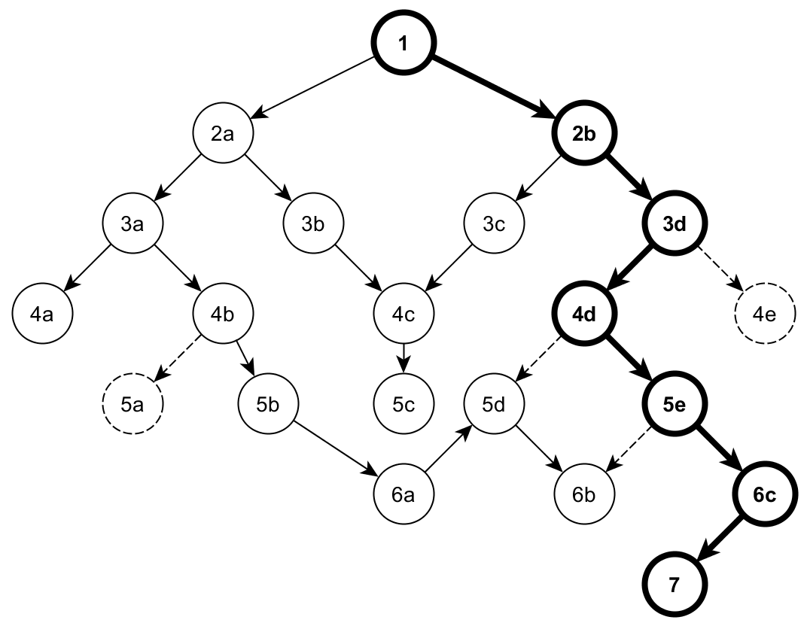

| Ancient Domains of Mystery (ADOM for short) is a rogue-like game which means that it is a single-user game featuring the exploration of a dungeon complex. You control a fictional character described by race, class, attributes, skills, and equipment. This fictional character is trying to achieve a specific goal (see below) and succeed in a difficult quest. To fulfill the quest, you have to explore previously undiscovered tunnels and dungeons, fight hideous monsters, uncover long forgotten secrets, and find treasures of all kind.
During the game, you explore dungeon levels which are randomly generated each game. You might also encounter certain special levels, which present a particular challenge or are built around a certain theme.
IMPORTANT: If you are a first-time player you should read the 'How to start' section of this manual.
Source: ADOM© r66 official documentation. |
| Starting a game on | Results in the message | And has the following effects |
|---|---|---|
| Creator's Day (TB's birthday, July 2nd) | You feel that starting your adventure on Creator's Day was a good idea. | PC starts with Lucky and Fate smiles; also, if the day falls on a Monday, HP are not reduced. |
| Christmas Eve (December 24th) | A lone star leads you to this remote valley. | PC starts with Fate smiles. |
| New Year's Eve (December 31st) | You feel well prepared for the coming year. | PC starts with six blessed potions of booze. |
| Any Friday the 13th | You feel unlucky. | PC starts Cursed. |
| Any Monday | You feel slightly exhausted today. | PC starts slightly low on HP. |
There are of course Ancardian day and date effects as well, which are well covered in the ADOM Manual. One Ancardian time effect not mentioned is the fact that the PC's range of sight depends on the time of day on the overworld map and in the wilderness. During the day (which apparently begins around 6h), the PC sees further, and at night (which apparently begins around 20h) the PC's sight is limited to 2 squares on the overworld map, 5 in the wilderness. Terrain, Perception score, whether or not using lit torch(es), necklace of the eye, and the Farsight spell all contribute to the sight range.
Press @ or Ctrl-e to learn Ancardian month, day, and time. You start the game at day 1 of Unicorn, at midnight.
The +10 to Speed is good for all PCs. It can save the life of low level PCs who need to run away from a monster they can't handle. The "messengers will reach you faster" refers to the delivery of the rune-covered trident, which happens faster for those born in this month, at level 16 rather than 36, a nice bonus. The "harder to trick by deceptions" grants resistance to confusion attacks by dopplegangers. The stronger companions characteristic makes this month excellent for Bards. The Raven birthsign gives you a 75% chance to evade a doppleganger's confusion attack.
Lawful tendencies is a weak effect. One free skill increase each level helps all PCs, especially those with low learning. Increased chance to learn spells means borderline casters have a better chance. This is not the ideal month for a Wizard - they are already great at learning spells. More suited to elven fighting classes or a Dwarvish Paladin. The Book birthsign decreases alignment changes towards chaotic by 10%. Book-born characters get an undocumented +3 boost to Learning.
Here we have the sign for a neutral Wizard. Gray Elven Wizards are ideal with their naturally high Mana and neutral alignment. They are somewhat difficult to keep alive in the early game but become enormously powerful in the mid- and endgame. The Wand birthsign decreases alignment changes towards chaotic by 10%.
Generic sign with resistance to corruption. Pretty attractive for any PC going for an ultra ending, especially an aspiring Avatar of Order. The fact that lawful alignment is difficult to change means such a PC can commit a few chaotic acts and get away with it without becoming a fallen champion. Also nice for an aspiring (ultimate) Chaos God, since crowned chaotics are corrupted more rapidly than others. The Unicorn birthsign reduces corruption by 19% if you are L, by 37% if L+, and increases it by 30% for C-. Due to a bug, it also increases alignment changes towards chaotic by 20%.
Very attractive for Elementalists, who rely on a lot of fire magic. Not half bad for a Necromancer who finds some fire-based spellbooks, either. Necromancers need that +3 to Mana.
Fighters. The +1 to Toughness is not significant - that is within the variability for the attribute for identical race/class PCs. The -3 to Willpower is significant and makes this unattractive for those who need it in the early game - Wizards, Mindcrafters. Not a bad month for Paladins with both weapon and combat magic costs reduced.
Learning bonus is insignificant, although it can push a PC from illiterate to literate. The 20% reduction in cost to train melee weapon skills makes this attractive for a PC that really wants to become super-proficient with a weapon. Not a bad choice for Rangers who start the game dual wielding swords.
Grants the Survival skill to any character. This skill is generally considered as being of little use (see section 0.4). The Willpower bonus is somewhat useful for spellcasters and Mindcrafters, although better starsigns exist for those classes. The Charisma bonus is of little significance for any character, with the possible exception of Bards, Necromancers and male Merchants. The free talent is good for all PCs, especially for gnomish and hurthling Bards, as it guarantees them both a very useful Heir gift and the possibility to go for the Treasure Hunter talent.
Another sign for Wizards. Higher Learning to start and the 10% reduction to gain a level means they advance rapidly, which is very helpful in keeping them alive at low level. The 20% effectivity increase in learning spells also helps keep them alive in the early game, while the player has not had time to raise their Learning score.
This can be an unbelievable sign for Trolls. They heal rapidly anyway, but those born in this month almost don't need the Healing skill! Almost. Get it and they seem to have natural regeneration. Playing a trollish Healer born in this month is almost cheating. ;-) Candle-born characters are guaranteed to heal 2 hitpoints every 12 turns.
Significant benefits to Perception and Willpower. The Willpower is good for Wizards and Mindcrafters, of course. Races that start with lower Perception include Dwarves, Orcs and of course Trolls.
Made for Mindcrafters, who really need that +5 to
Willpower in the early game. Not bad for Wizards
either. The Tree birthsign reduces all alignment changes by
10%.
As of v1.2.0, Tree also gets +2 To and +1 PV.
The Candle starsign is by far the best for any character, with Raven being the distant second. The Candle healing effect is great for everyone and it is better than the Healing skill at 100. Raven's speed bonus allows all characters to outrun most opponents. The effects of other starsigns are utterly negligible when compared to Raven and especially Candle.
| Condition | Male | Female | More info |
|---|---|---|---|
| Start with | +1 St | +1 Dx | |
| Shop prices depend on | Ch | Ap | |
| Wedding ring works for Banshee | yes | no | 3.10 |
| Wedding ring tames | berserkers | female berserkers | 0.11.3 |
| Frog quest is available | no | yes | Appendix K |
| Cheaper keys | no | yes | 1.3.4 |
| Base Smithing cost | 5000 gp | 5250 gp | 0.15.4 |
| Race | Initial alignment | Guaranteed or NPC-available Skills [starting value] | Nonguaranteed Skills [starting value] |
|---|---|---|---|
| Drakeling | neutral | Swimming [1d20 + 40] | Alertness [1d20 + 20], Food Preservation [1d25 + 20], Music [1d10 + 5] |
| Dwarf | lawful | Climbing [1d10 + 10], Detect Traps [1d10 + 10], Smithing [1d30 + 20] | Metallurgy [1d30 + 20] , Mining [1d10 + 60] |
| Dark Elf | chaotic | Climbing [1d20 + 20], Stealth [1d20 + 30] | Alertness [1d30 + 10], Find Weakness [1d10 + 10] |
| Gray Elf | neutral | Listening [1d10 + 15], Literacy [1d10 + 30], Stealth [1d10 + 30] | Dodge [1d10 + 10] |
| High Elf | lawful | Listening [1d10 + 20], Literacy [1d10 + 20], Stealth [1d10 + 20] | Dodge [1d10 + 20] |
| Gnome | neutral | Listening [1d30 + 10], Pick Pockets [1d10 + 10] | Gemology [1d10 + 10], Mining [1d5 + 5], Ventriloquism [1d20 + 20] |
| Human | neutral | Climbing [1d10 + 10], Haggling [1d20 + 10], Swimming [1d20 + 20] | Food Preservation [1d10 + 10] |
| Hurthling | lawful | Stealth [1d20 + 40] | Archery [1d5 + 10], Cooking [1d20 + 50], Food Preservation [1d30 + 30], Gardening [1d15 + 15] |
| Orc | chaotic | Backstabbing [1d5 + 5], Climbing [1d20 + 20] | Find Weakness [1d5 + 5], Metallurgy [1d5 + 5], Mining [1d10 + 5] |
| Troll | chaotic | Bridge Building [1d10 + 10] | Athletics [1d30 + 20], Food Preservation [1d40 + 20], Gemology [1d5 + 10], Mining [1d10 + 10] |
Lawful alignment is +2000, neutral is 0, and chaotic -2000. This is then modified by class: Druids have alignment set to 0, Necromancers get -1500 and Healers get +1000.
A table similar to that above showing the trained skills each class is born with:
| Class | Guaranteed or NPC-available Skills [starting value] | Nonguaranteed Skills [starting value] | |
|---|---|---|---|
| Archer | Climbing [1d20 + 30], Listening [1d10 + 30], Stealth [1d20 + 30] | Alertness [1d20 + 20], Archery [1d30 + 50], Concentration [1d20 + 20], Dodge [1d20 + 30], Fletchery [1d20 + 30] | |
| Assassin | Backstabbing [1d20 + 30], Climbing [1dDx + 20], Detect Traps [1dPe + 15], Pick Locks [1d20 + 30], Stealth [1d10 + 30], Two Weapon Combat [1d6 * 1d6 + 20] | Alchemy [10], Alertness [1d30 + 20], Archery [1d10 + 20], Dodge [1d10 + 10], Find Weakness [1d30 + 20] | |
| Barbarian | Climbing [1d20 + 50], First Aid [1d20 + 20], Herbalism [1d10 + 20], Stealth [1d30 + 30], Swimming [1d30 + 30], Two Weapon Combat [1d20 + 20] | Athletics [1d30 + 30], Dodge [1d20 + 50], Survival [1d20 + 30], Woodcraft [1d10 + 10] | |
| Bard | None guaranteed [1] | Music [1d40 + 60] | |
| Beastfighter | Climbing [1d30 + 30], Healing [1d30 + 30], Herbalism [1d30 + 30], Listening [1d30 + 30], Stealth [1d30 + 30], Swimming [1d30 + 30] | Athletics [1d30 + 30], Dodge [1d30 + 30], Survival [1d10 + 20] | |
| Druid | Climbing [1d20 + 30], First Aid [1d20 + 40], Healing [1d10 + 40], Herbalism [1d30 + 60], Listening [1d20 + 30], Literacy [1d20 + 40], Swimming [1d20 + 30] | Concentration [1d20 + 30], Gardening [1d5 + 5], Survival [1d20 + 30], Woodcraft [1d5 + 5] | |
| Elementalist | Climbing [1d20 + 20], Healing [1d10 + 5], Listening [1d10 + 10], Literacy [1d30 + 30], Swimming [1d20 + 20] | Concentration [1d30 + 50], Gemology [1d20 + 20], Metallurgy [1d20 + 20] | |
| Farmer | Bridge Building [1d10 + 10], First Aid [1d20 + 30], Haggling [1d20 + 20], Herbalism [1d30 + 20], Smithing [1d10 + 10], Stealth [1d10 + 10] | Archery [1d20 + 5], Cooking [1d10 + 10], Fletchery [1d10 + 10], Food Preservation [1d30 + 40], Gardening [1d(Le*2) + 20], Survival [1d20 + 40], Woodcraft [1d10 + 5] | |
| Fighter | Stealth [1d10 + 10], Two Weapon Combat [1d5 + 5] | Athletics [1dTo + 1d5 + 25], Archery [1dDx + 10], Dodge [1dDx + 15], Find Weakness [1d10 + 10], Metallurgy [1d10 + 10] | |
| Healer | First Aid [1d30 + 40], Healing [1d30 + 50], Herbalism [1d40 + 40], Literacy [1d50 + 50] | Alertness [1d10 + 10], Concentration [1dWi + 20], Cooking [1d30 + 10], Find Weakness [1d10 + 10] | |
| Merchant | Haggling [1d30 + 40], Herbalism [1d10 + 10], Literacy [1d30 + 40], Pick Pockets [1d20 + 20] | Appraising [1d40 + 30], Detect Item Status [1d10 + 10], Gemology [1d30 + 30], Metallurgy [1d20 + 20], [2] | |
| Mindcrafter | Haggling [1d10 + 10], Herbalism [1d10 + 10], Literacy [1d40 + 50], Stealth [1d10 + 20] | Concentration [1d20 + 50], Gemology [1d30 + 20], Music [1d20 + 20] | |
| Monk | Healing [1d10 + 30], Literacy [1dLe + 40], Stealth [1dDx+ 1d20 + 20] | Alertness [1d30 + 20], Athletics [1dTo + 1d5 + 30], Concentration [1dWi + 30], Dodge [1dDe + 20], Find Weakness [1d20 + 20] | |
| Necromancer | Herbalism [1d20 + 20], Literacy [1d30 + 50], Stealth [1d20 + 30] | Alchemy [1d30 + 30], Appraising [1d10 + 10], Concentration [1d20 + 30], Find Weakness [1d10 + 10], Food Preservation [1d20 + 30], Necromancy [1d30 + 50] | |
| Paladin | Healing [1d10 + 30], Law [1d20 + 20] (if lawful initially), Literacy [1dLe + 25], Stealth [1dDx + 1d10 + 20], Swimming [1d20 + 20], Two Weapon Combat [1d5 + 5] | Athletics [1dTo + 1d5 + 20], Concentration [1dWi + 20], Dodge [1dDx + 20] | |
| Priest | First Aid [1d20 + 20], Healing [1dLe + 40], Herbalism [1d30 + 30], Literacy [1d30 + 60] | Concentration [1dWi + 1d10 + 20], Detect Item Status [1d50 + 50], Music [1d10 + 20] | |
| Ranger | Climbing [1dDx + 20], Healing [1d10 + 15], Herbalism [1dLe + 20], Swimming [1d20 + 30], Two Weapon Combat [1d10 + 50] | Alertness [1dPe + 20], Archery [1dDx + 20], Athletics [1dTo + 1d10 + 30], Dodge [Dx*2], Food Preservation [8d5], Survival [1d(Pe*2) + 30], Woodcraft [1d10 + 20] | |
| Thief | Backstabbing [1d5 + 5], Climbing [1dDx + 30], Detect Traps [1dPe + 30], Disarm Traps [1dDx + 25], Listening [1dPe + 20], Pick Locks [1d20 + 30], Pick Pockets [1d20 + 25], Stealth [1d10 + 30] | Alertness [1d30 + 10], Appraising [1dLe + 2d5] | |
| Weaponsmith | Detect Traps [1d10 + 5], Haggling [1dCh + 30], Smithing [1d30 + 40] | Appraising [1d30 + 10], Athletics [1d40 + 20], Concentration [1dWi + 20], Find Weakness [1d10 + 10], Metallurgy [1d30 + 40] | |
| Wizard | Healing [1dLe + 10], Herbalism [1d30 + 20], Literacy [100], Stealth [1d10 + 20] | Alchemy [1dLe * 2 + 20], Concentration [1dWi + 10 + 30], Ventriloquism [1d20 + 30] |
[1] Bards never get: Necromancy, Bridge Building, Tactics, Law, Courage. Every other skill (except Music) has 25% chance, with starting value of [1d20 + 15].
[2] If specializing in potions, then Alchemy [1dLe], else if specializing in scrolls then Literacy [1d20 + 30] else (wands or rings) Survival [1d20 + 20].
Falcon birthsign increases Survival by 10, or grants Survival at 10 if there was no Survival by race or class.
The manual also states that Bards get more skills than other classes. Testing does not agree with this. What the manual fails to mention is the two free skill advances per level Bards receive. This is useful for races that have low initial Learning scores, such as Orcs and Trolls.
There are definite effects on gameplay depending on the alignment, skills and birthsign the PC is born with. Note that none of the races is born with the Healing skill; it is entirely class-dependent. Nine classes are born with Healing. It is essential to obtain this skill (except for those born under Candle). This means that those without it must choose Rynt's quest as opposed to Guth'Alak's in Terinyo, whether they intend to actually obtain the skill from Jharod or Kranf Niest. This puts restrictions on the game right away, since the Keethrax quest and thus a guaranteed artifact and potion of cure corruption are forfeited before the game even starts. Further, three races start with chaotic alignment. If the PC wants to receive Healing from Jharod, thus avoiding Kranf Niest's attribute drains, alignment must be changed to neutral (or lawful).
Note also that no race starts with Herbalism, the other skill available through a Terinyo quest. If the player wants maximum flexibility - to do either Rynt's or Guth'Alak's quest, or neither (in the case of a minimalist challenge game) - choose a class that starts with Healing, Herbalism, or ideally both, such as a Beastfighter, Druid, Healer, Priest, Ranger or Wizard.
If there is a skill that is difficult to obtain that you cannot live without, such as Alertness, play a Dark Elf or Drakeling, or choose a class that is born with it - Archers, Healers, Monks, Rangers and Thieves all start with this skill. Many players feel similarly about Detect Item Status - play Priests or a Merchant for a challenge.
A PC that trains a given skill due to both race and class will be especially proficient with that skill. This makes certain combinations especially powerful. Dwarven Weaponsmiths (doubly trained Metallurgy and Smithing), Hurthling Archers (doubly trained Archery), Hurthling Farmers (doubly trained Archery, Cooking, Food Preservation, Gardening, Stealth) and Dark Elven Rangers (doubly trained Alertness and Climbing) are examples.
The ADOM Manual contains a list of the classes along with their characteristics and class powers. The below well-arranged table is presented here for better comparisons:
| Class | Level 6 | Level 12 | Level 18 | Level 25 | Level 32 | Level 40 | Level 50 |
|---|---|---|---|---|---|---|---|
| Archer | 800 EP / missile attack | 2x range | bonus to Fletchery | 600 EP / missile attack | always dodge missiles | 20% chance for a missile to penetrate armor | hit several targets / 1 missile |
| Assassin | create poison from any potion | bonus to Backstabbing | +30% range | +20% for critical hits | x2 bonus to Dodge | =Pois | chance for instant kill [7] |
| Barbarian | mighty blow: x2 dmg / 2500 EP | moving / 750 EP | tremendous blow: x3 dmg / 4000 EP | +1d4 HP / Level | +3 St, +3 To | +10 dmg / True Berserker | 800 EP / True Berserker |
| Bard | free skill increase / Level | +1d3 lvl / 6 random weapon skills | 80+10*Le+20*Ma / 4 random spells | +6 random skills or improves [1] | x2 to HP regeneration | x2 to PP regeneration | +6 to all attributes |
| Beastfighter | -Pois | -Stun | moving / 700 EP | summon 2d2 bears or wolves / -1 Ma | swap position with hostile opponents | chance to stun opponent on critical hit | +6 St, +6 To |
| Druid | evade wilderness encounters | x2 to PP regeneration | immune to weather effects | summon 1d3 major animals / -1d3 Ma | x2 to HP regeneration | =Elec | -10% corruption from attacks |
| Elementalist | -Fire | -Elec | immune to weather effects | +WBre | elemental storm / 120 PP | summon random elemental pet / -2 Ma | burrow through stone / 1500 EP + 20 PP |
| Farmer | 2x carrying capacity | half food consumption | bonus to Herbalism | iron rations from corpses | increased chance to raise attributes and potentials [3] | +3 St, +3 To | -30% corruption |
| Fighter | +7% PV | +50% to Dodge | +15% PV | +10% for critical hits | +25% PV | bash: +20% dmg, stun / +500 EP | all round attack / 3500 EP |
| Healer | x2 to HP regeneration | x3 to HP regeneration | ability to heal pets | basic spells: CM, CD, CLW, SP | +2d3 HP / Level | advanced spells: CSW, NP | near immunity to disease, bleeding, poison; +8 To |
| Merchant | -20% shop prices | 2x carrying capacity | -40% shop prices | immune to weather effects; immune to ambush | -60% shop prices | calm monsters by giving away items | 3x carrying capacity; Create Item spell |
| Mindcrafter | -Conf | sense the amount of enemies on current DL | +1d6 PP / Level | +5 Wi | less corruption from chaos opponents | +3d5 PP / Level, cumulative | half damage from undead |
| Monk | circular kick / 2500 EP | moving / 800 EP | moving / 600 EP | swap position with hostile opponents | chance for instant kill of up to human sized opponents [8] | chance for instant kill against any humanoid [8] | -10% corruption |
| Necromancer | resistance to St drain, -Para: (40+lvl)% | turn undead | raise ghuls / 10 PP per raised ghul | Shadow Touch: transfer HP when hitting bare-handed [4] | raise wraiths / 20 PP per raised wraith | lowered Ma cost for using Necromancy | reborn if To > 9 / -50% To, -50% Max HP |
| Paladin | cure disease / 1000 turns | turn undead / 3000 EP, piety | automatical know alignment | +1 DV / 2 levels in melee vs opposite alignment opps | healing touch: +(lvl-24)d6 HP / 1000 turns | resistance to St drain, To drain, -Sick, -Para | -30% corruption |
| Priest | turn undead / piety | -10% spells PP cost | -25% spells PP cost | -50% spells PP cost | -50% piety consumption for praying | destroy minor undead | destroy major undead |
| Ranger | bonus to Survival, immune to weather | not slowed down by terrain [5] | +4 range | evade wilderness encounters | double weight bonus to Two weapon combat | moving / 750 EP | quadruple weight bonus to Two weapon combat |
| Thief | automatical search | bonus to Backstabbing | pilfer shops ability | stun opponent on critical hit | better items pickpocketed [2] | +20 Speed | invisibility when adjacent to a wall |
| Weaponsmith | melt metal items into ingots [6] | 4x faster smithing | +4 St | automatically recognize all metal | =Fire | +8 To | know damage of unided melee weapons |
| Wizard | -10% spell PP cost | -20% spell PP cost | -40% spell PP cost | gain xp in randomly choosen spell / Level | recharge wands: once per wand; 50 PP per charge | uncurse item / -1 Ma | basic knowledge in all spells except Wish |
[1] Can be ANY skill, and does not have the restrictions imposed on character creation. Bards gain 1d20 + 20 in those skills.
[2] Stolen items must have at least 10 value.
[3] Trains St by (Level*5)-155)*4, Dx by (Level*5)-155), and To by ((Level*3)-93)*10.
[4] Shadow Touch will regain HP first; if maxed, it will regain PP instead. PP Gained is DamageDealt / 2, HP Gained is DamageDealt / 3. There is DamageDealt/1000 chance to get +1 Mana. If 1d10000-1 < damage dealt, you gain 1 Mana.
[5] Also receives only 1/3 of drowning damage.
[6] Melting ability is determined by the weight of what you're melting down as far as how many ingots you'll get. This means for example ultra-heavy armors are especially nice for melting down. Blessed hammer + blessed metal = 9:1000 (9 ingots for 1000 stones); B+U = 8,1:1000; B+C = 6,3:1000; U+U = 7,2:1000; U+C = 5,6:1000; C+C = 4,4:1000. Failing a Smithing roll halves the amount you get.
[7] If monster Level<50 and monster not unique: (50-moblevel)*2 / 1000 chance for instant kill.
[8] If monster not unique, and (monster is humanoid but not undead/construct), and (monster size < 3 or Monk Level >= 40): (50-moblevel)*2 / 1000 chance for instant kill.
| Race | St | Le | Wi | Dx | To | Ch | Ap | Ma | Pe | Total | Xp |
|---|---|---|---|---|---|---|---|---|---|---|---|
| Dark Elf | 8+1d2 | 9+1d2 | 11+1d2 | 14+1d4 | 8+1d2 | 7 | 11+1d3 | 15+1d4 | 12+1d5 | +4+1d25 | 40 |
| Drakeling | 12+1d3 | 9+1d2 | 11+1d4 | 8+1d3 | 12+1d4 | 9+1d2 | 7+1d2 | 9+1d3 | 8+1d2 | -3+1d25 | 80 |
| Dwarf | 11+1d4 | 10+1d2 | 10+1d3 | 9 | 12+1d4 | 9 | 8+1d2 | 9+1d2 | 10+1d2 | -4+1d21 | 60 |
| Gnome | 8+1d2 | 10+1d4 | 8+1d2 | 11+1d2 | 10+1d2 | 11+1d3 | 9+1d2 | 13+1d4 | 10+1d3 | +0+1d28 | 0 |
| Gray Elf | 10 | 12+1d4 | 9+1d2 | 13+1d3 | 7 | 8 | 17+1d5 | 14+1d5 | 13+1d5 | +10+1d32 | 20 |
| High Elf | 9+1d3 | 12+1d4 | 8+1d2 | 14+1d5 | 8 | 9+1d2 | 13+1d4 | 12+1d3 | 13+1d4 | +7+1d28 | 30 |
| Human | 9+1d3 | 11+1d3 | 9+1d3 | 9+1d3 | 9+1d3 | 9+1d3 | 9+1d3 | 9+1d3 | 9+1d3 | -7+1d27 | 0 |
| Hurthling | 6 | 9+1d2 | 9+1d2 | 14+1d4 | 11+1d3 | 11+1d3 | 9+1d3 | 8 | 9+1d3 | -6+1d22 | 0 |
| Orc | 13+1d4 | 7+1d2 | 9+1d3 | 9+1d2 | 12+1d4 | 7+1d2 | 7 | 5+1d3 | 7+1d3 | -15+1d26 | 60 |
| Troll | 17+1d10 | 4+1d3 | 7+1d3 | 7+1d3 | 17+1d7 | 5+1d3 | 4+1d3 | 5+1d3 | 6+1d3 | -18+1d38 | 150 |
Additionally, Hurthlings get a special *0.8 bonus to Xp requirement, Gnomes even better *0.75 bonus, Humans *0.86 bonus. Trolls get a *2.5 penalty.
| Class | St | Le | Wi | Dx | To | Ch | Ap | Ma | Pe | Total | Xp |
|---|---|---|---|---|---|---|---|---|---|---|---|
| Archer | +1 | 0 | 0 | +4 | 0 | 0 | +1 | 0 | +3 | +9 | 20 |
| Assassin | +1 | +1 | 0 | +2 | +1 | -2 | 0 | 0 | +2 | +5 | 35 |
| Barbarian | +5 | -2 | +2 | +1 | +3 | -1 | -1 | -4 | +1 | +4 | 150 |
| Bard | 0 | +2 | +1 | +2 | +1 | +3 | +3 | +1 | +1 | +14 | 10 |
| Beastfighter | +4 | -1 | -1 | +4 | +4 | -2 | -1 | -2 | +2 | +7 | 40 |
| Druid | 0 | +1 | 0 | 0 | +2 | 0 | 0 | +2 | +1 | +6 | 30 |
| Elementalist | -1 | +2 | +1 | +1 | 0 | -2 | -1 | +2 | 0 | +2 | 30 |
| Farmer | +2 | -2 | 0 | 0 | +1 | -1 | -1 | 0 | +1 | +0 | 0 |
| Fighter | +3 | -2 | +1 | 0 | +1 | 0 | 0 | -3 | 0 | +0 | 40 |
| Healer | -1 | +1 | +3 | +1 | +4 | +1 | 0 | +1 | +1 | +11 | 0 |
| Merchant | 0 | +1 | +2 | +1 | 0 | +3 | +1 | 0 | +1 | +9 | 5 |
| Mindcrafter | -3 | +2 | +4 | +1 | -1 | 0 | 0 | +1 | +1 | +5 | 20 |
| Monk | +2 | +1 | +3 | +2 | +1 | -3 | -1 | -1 | +2 | +6 | 60 |
| Necromancer | -1 | +2 | +2 | 0 | +1 | -4 | -3 | +3 | 0 | +0 | 20 |
| Paladin | +2 | +1 | +2 | -1 | 0 | +4 | +2 | +1 | 0 | +11 | 60 |
| Priest | 0 | +2 | +4 | -1 | 0 | +1 | 0 | +3 | 0 | +9 | 5 |
| Ranger | +2 | -1 | 0 | +1 | +2 | -1 | 0 | 0 | +3 | +6 | 60 |
| Thief | 0 | 0 | 0 | +3 | 0 | +1 | +2 | 0 | +3 | +9 | 25 |
| Weaponsmith | +2 | -1 | +1 | +1 | +3 | 0 | 0 | +1 | +1 | +8 | 25 |
| Wizard | -2 | +3 | +3 | +1 | -1 | +2 | 0 | +3 | +1 | +10 | 5 |
Higher Xp number means more experience is required to advance a level.
The ADOM Manual gives some hints about race/class combinations. For instance, the manual identifies Trolls as the strongest, toughest and stupidest race in the game and suggests that they make good fighters (because of their Strength and Toughness) and lousy magicians (because of their low Learning and Mana). This is true as far as it goes, but Trollish Wizards can be a viable combination if they are played more as fighters to start and later develop their magical talents. Elves make fantastic Wizards (due to their high Learning and Mana) once they gain some experience, but are difficult to keep alive in the early game because of their low Toughness. Humans are a jack of all trades race and can be used with all classes. Some combinations favored by newsgroup readers:
Classes and combinations that are regarded as difficult:
| Race | Starting age | Max age | Grownup | Middle aged | Old | Very Old |
|---|---|---|---|---|---|---|
| Drakeling | 20+1d6 | 60+8d4 | 22 | 40 | 60 | 80 |
| Dwarf | 50+5d4 | 400+10d10 | 60 | 180 | 280 | 380 |
| Dark Elf | 100+10d6 | 1200+10d10 | 120 | 400 | 750 | 900 |
| Gray Elf | 200+20d10 | 2000+20d40 | 250 | 800 | 1500 | 2000 |
| High Elf | 150+10d10 | 1500+10d40 | 200 | 650 | 1000 | 1350 |
| Gnome | 75+10d6 | 600+10d20 | 100 | 300 | 500 | 620 |
| Human | 12+4d6 | 40+10d8 | 20 | 40 | 60 | 80 |
| Hurthling | 25+2d10 | 80+10d4 | 32 | 60 | 75 | 90 |
| Orc | 10+2d4 | 35+3d4 | 15 | 25 | 32 | 40 |
| Troll | 8+1d10 | 35+12d4 | 15 | 25 | 35 | 45 |
| +attributes | +1 St, +2 Le, +2 Wi | +1 Le | +1 Le, +2 Wi, +2 Ma | +2 Le, +1 Wi, +2 Ma | ||
| -attributes | -1 St, -2 To, -1 Sp | -3 St, -2 Dx, -2 To, -1 Ap, -2 Pe, -2 Sp | -4 St, -3 To, -2 Ap, -3 Pe, -4 Sp |
Press B to determine your age and age category. You can start the game as either young or grownup. The age category has definite effects on your attribute scores, listed in the effects fields. Generally, you lose Strength, Toughness, Appearance, and Perception with age. On the other hand, you gain Learning, Willpower, and Mana. During normal game, you naturally age very slowly, and this should almost never become any problem. However, undead attacks may unnaturally change your age and age category very quickly, depending on race. Use potions of youth to reverse the effects of unnatural aging. Potions of longevity increase your max age. Beware of cursed potions of youth and longevity though - they may result in an immediate death of old age.
Drakelings - Drakelings face special problems in the ToEF (see section 2.5) and D: 49 (see section 3.23). Drakelings who are unlucky enough to find a greater white dragon vault will also face speed problems. Drakelings have a unique racial acid spit - press m to use it - which does Max(2,Level/3)d6+(Level/2) damage, has Max(2, St/4) range, hits target if 1d(Level+10)+Dx > MonstersDV+3, and consumes 5d10+50 food points per spit.
Dwarves - Dwarves have unique access to the Mithril skin talent (+3 PV), and they find secret doors quicker. Also, they are more likely to receive the Rolf's Saviour artifact, and they can read runes on Griff Bloodax's grave.
Humans - No known inherent racial abilities.
Hurthlings - Hurthlings start the game with the Thrown Rocks missile weapon skill at level four. They also start the game wearing a cursed ring, unfortunately. Hurthlings also have a racial dislike for shoes, which causes a loss of Dexterity when Hurthlings use footwear in ADOM. Hurthlings also have an advantage over other races when training the slings and thrown rocks missile weapon skills: they require only two thirds of the marks other races do in order to advance a skill level.
Elves - All elves, High, Gray, or Dark, have very long lifespans. This is worth considering since several of the high level monsters encountered in ADOM have an aging attack. Ghost Lords, for instance, may well age a Human or Troll to death in one or two hits, since these PCs have a life span of 100 years or so at most. Elven PCs do not need to worry about this, since they live for about 1000 years. Balancing this is the fact that they are more fragile than other races in terms of Toughness in the early game.
Gnomes - Gnomes require only 3/4 the number of missile weapon marks to advance their crossbow skill level relative to other races.
Orcs - Like Dark Elves, Orcs receive very low offers and high prices in Waldenbrook's Dwarftown shop. Orcs have a short lifespan relative to other races. Unlike most other races, Orcs' line of sight increases in the nighttime and decreases during the daytime.
Trolls - Trools need about double the amount of food compared to other races. They advance in experience level very slowly relative to other races. Trolls start the game with the Twohanded Weapons melee skill at level two. Do not pay any attention to this if you are playing a trollish Beastfighter. Drop that club and fight unarmed.
Archers - Archers find more ammunition and start at skill level 1 for their starting missile weapon.
Assassins - First Alchemy recipe is always for potion of poison. Assassins can receive the Filk quest as soon as level 30.
Barbarians and Beastfighters - With the exception of Elves, they start illiterate. They also face huge difficulties learning spells.
Bards - Bards have an advantage when using Music; their chances for taming/calming down monsters is higher than other classes. Also, pets won't turn on a Bard upon triggering traps on them. Moreover, Bards will find more variation in item modifiers: to-hit/to-damage boni in weapons/missiles and DV/PV boni in armor.
Druids - All Druids start at neutral zero alignment, and get spellbook of Lightning Bolt. Non-summoned animals are neutral towards Druids (including cats). Bugs in the bug-infested temple are not included. Druids need 50% more marks to increase a weapon skills. They get a different reward for completing the Druid quest.
Farmers - Farmers start the game with a large dog pet, level two in Polearms weapon skill and require 20% less marks to increase their Polearms level.
Fighters - No known inherent class abilities.
Healers - The number of turns usually required for natural HP regeneration is halved for Healers. They do not spend any turns whilst using a stethoscope.
Merchants - Merchants always specialize in a certain item: potions, rings, scrolls, or wands. This specialization allows them to identify any item in that category on sight. Merchants have the ability to use thrown gold pieces as effective missiles. Dopplegangers are not able to deflect gold pieces thrown by Merchants. This is the only known way to attack dopplegangers with missiles. Merchants also receive better shop prices, the exception is Terinyo shop. They also find more shops.
Monks - Monks are expert kickers. They start off with a base damage of 1d10 to kicking, which increases as they gain levels - but lose the bonuses if burdened or worse. They cannot injure themselves by kicking the air. Their food consumption is about half the rate of other classes. Monks do not lose Mana when writing scrolls. They start with no gold, except when picking the "Wealthy" talents.
Mindcrafters - Mindcrafters possess really unique Mindcraft abilities no other class can ever obtain. The Ctrl-i command is used to invoke Mindcraft. More on the Mindcraft abilities in section 0.5.3. Mindcrafters have extremely hard time learning spells from books.
Necromancers - The manual states that level 50 Necromancers can return from the dead if their Toughness is greater than 10. It goes on to say that they lose one-half of their Toughness when this happens. It does not mention that if their equipment keeps their Toughness at 10 or more, they can do this indefinitely. Necromancers suffer from low dice modifiers on their skills, finding difficulties to advance Concentration, limited by a 1d3 or 1d5 modifier. Of equal importance for Necromancers is Food Preservation, similarly limited. In contrast, Rangers, Bards and Beastfighters can expect very high 4d5 modifiers on most of their skills. Necromancers also need 100% more marks to increase weapon skills. Like Wizards, Necromancers find all spells (including Wish) in the Library. Finally, they can perform Necromancy very efficiently - see 0.11.6.
Paladins and Priests cannot use their class powers if they do not have enough piety with their deity. They also find more spellbooks. Priests need 50% more marks to increase weapon skills. Paladins do double damage with Justifier.
Rangers - Rangers do not receive the -6 penalty to-hit on each weapon when fighting with two weapons, like other classes do.
Thieves - Along with Dark Elves, Orcs, and Dwarves, Thieves have easier time finding secret doors.
Weaponsmiths - Your PC can never start out burdened - Strength will be raised enough so that the PC can handle the weight. Weaponsmiths start with a very heavy 1000s anvil; this can give weaker races, like Hurthlings, a large, free Strength boost. Weaponsmiths of course have easier time Smithing - see section 0.15.4 for details.
Wizards - Wizards born under the Salamander birthsign always start with spellbook of Fire Bolt. Wizards have easier time writing scrolls. They find more spellbooks than other classes, and they find all spellbokks in the Library, including Wish. On the negative side, Wizards require twice as many weapon marks to advance weapon skill levels.
Beastfighters and Monks increase their Speed, DV, to-hit and damage with level. Beastfighters lose their bonuses if using weapons. Monks get no bonuses if Burdened or worse, wearing a shield, or an armor other than robe, black robe, clean robe, clothes, elven chain mail, Shirt of the Saints, Robes of Resistance. The Speed bonus for both classes is lvl/2, to-hit bonus is lvl*2 + lvl/3 - (lvl-1)/5 - 1. Beastfighter's damage is 1d(4+lvl/3*2) + lvl/2+lvl/4, Monk's damage is 1d(8+lvl) + lvl/4. Beastfighters get +1 DV every third level, Monks get +1 DV in two levels out of three. Monks get also bonuses to kicking if not wielding weapons (they start with 1d10).
| Level | Speed | To-hit | Damage | DV | ||
|---|---|---|---|---|---|---|
| Beastfighter | Monk | Beastfighter | Monk | |||
| 1 | 0 | +1 | 1d4+0 | 1d9+0 | 0 | 0 |
| 5 | +2 | +10 | 1d6+3 | 1d13+1 | +1 | +3 |
| 10 | +5 | +21 | 1d10+7 | 1d18+2 | +3 | +6 |
| 15 | +7 | +32 | 1d14+10 | 1d23+3 | +5 | +10 |
| 20 | +10 | +42 | 1d16+15 | 1d28+5 | +6 | +13 |
| 25 | +12 | +53 | 1d20+18 | 1d33+6 | +8 | +16 |
| 30 | +15 | +64 | 1d24+22 | 1d38+7 | +10 | +20 |
| 35 | +17 | +74 | 1d26+25 | 1d43+8 | +11 | +23 |
| 40 | +20 | +85 | 1d30+30 | 1d48+10 | +13 | +26 |
| 45 | +22 | +95 | 1d34+33 | 1d53+11 | +15 | +30 |
| 50 | +25 | +106 | 1d36+37 | 1d58+12 | +16 | +33 |
Elementalists - Elementalists suffer from low dice modifiers on their skills, similarly to Necromancers. They also need 100% more marks to increase weapon skills. They have unique ability to gain access and increase knowledge in certain spells according to the following table:
| Level | Spell | Increase | Max increase |
|---|---|---|---|
| 1-4 | Burning Hands | Level * 5 + 50 | none |
| 5-14 | Level * 4 + 35 | none | |
| 15+ | Level * 3 + 25 | none | |
| 1-4 | Frost Bolt | Level * 2 + 15 | none |
| 5+ | Level * 4 + 50 | none | |
| 5-14 | Fire Bolt | Level * 5 + 15 | none |
| 15+ | Level * 5 + 25 | none | |
| 5+ | Fireball | Level / 3 | 10 |
| 10+ | Earthquake | Level / 2 | 5 |
| 15+ | Improved Fireball | Level / 4 | 5 |
| 20+ | Lightning Ball | Level / 4 | 5 |
| 25+ | Ice Ball | Level / 4 | 5 |
| Race | Bard pet | Farmer pet |
|---|---|---|
| Drakeling | giant lizard | large dog |
| Dwarf | cave bear | |
| Dark Elf | giant spider | |
| Gray Elf | fairy dragon | |
| High Elf | cooshoo | |
| Gnome | giant raccoon | |
| Human | silver wolf | |
| Hurthling | big dog | |
| Orc | dire wolf | |
| Troll | cave bear |
| Class | Heir item |
|---|---|
| Archer | 40 winged arrows/quarrels/rocks/scurgari of hunting (race dependent) |
| Assassin | poisonous adamantium dagger |
| Barbarian | brutal mithril two handed sword |
| Bard | seven league boots |
| Beastfighter | vigilant light furs of protection |
| Druid | yellow leather armor of balance |
| Elementalist | ring of minor elemental mastery |
| Farmer | vigilant clothes of resilience |
| Fighter | eternium girdle |
| Healer | elven chain mail of health |
| Merchant | beautiful leather armor of carrying |
| Mindcrafter | empowered robe of protection |
| Monk | padded clean robe of defense |
| Necromancer | chaotic skull staff of slaughtering |
| Paladin | lawful mithril long sword (even chaotics get this - probably a bug) |
| Priest | heavy mace of the sun |
| Ranger | masterwork mithril battle axe |
| Thief | adamantium dagger of penetration |
| Weaponsmith | brutal mithril warhammer |
| Wizard | wand of fire (30 charges) |
| Period | Message |
|---|---|
| Parents | Your parents belong to the lower class. They were honest hard-working people, who did everything to enable you to live a comfortable and fine life. They were not very successful. |
| Your parents are travelling adventurers. Both are competent, talented and doing very well. | |
| Your father is a guildmaster. Your family generally is rather wealthy and well-known in your home town. | |
| Your mother is a mighty enchantress. She is unmarried. Your father is living in the vicinity of your mother's tower. He is a humble shepherd. | |
| Your parents belong to the nobility. They are rich, respected, wealthy and own more than they can count. | |
| Childhood | In your childhood you were tortured by your cruel parents. They seemed to thoroughly hate and despise you. |
| As a young child you were often alone. You did not have any friends. You do not like to remember those times. They were very sad. | |
| As a child you had to survive pretty harsh times since your parents seemed to have run out of luck. Their wealth was ever-declining and times were very hard. | |
| As a child your parents cared a lot for you. Despite all circumstances you enjoyed a happy and fine childhood. | |
| As a child you lived through happy days. Your parents tried to ease your life as much as possible and gave you a lot of comfort. | |
| In your childhood you were a credit to your family. Your people loved you and enjoyed your presence. | |
| In your childhood you were fascinated by your environment and the everchanging wonders of the world. You were a very curious and adventurous child. | |
| During your childhood one of your uncles taught you a lot of things about the history of your people. Your vast knowledge on the legends and the lore of your people made you very popular with your friends because of all the exciting stories you knew. | |
| Youth | In your youth you became seriously ill and suffered for many years. When your disease finally was cured you were left weakened, both physically and spiritually, and bereft of the joys of youth. |
| During your youth you were very lazy. You slept a lot and didn't care too much for your duties and tasks. Your parents were not very happy with you. | |
| As a kid you often watched the adult adventurers preparing for new exciting journeys. They sparked your imagination. | |
| In your youth you enjoyed competition against others to the fullest. You were a very active kid. | |
| During your youth you had a lot of fun playing with other kids of your age. You always were a natural leader and the center of interest. | |
| As a youth you spent a lot of time in the wilds exploring woods and generally enjoying your freedom. You had a lot of fun and learned to value the treasures of nature. | |
| Young adult | As a young adult you left your home because of trouble with your parents. They opposed your plans for the future without understanding your wishes. Thus you decided to live on your own. You wandered through the country for many years, growing older and wiser and learning many things. |
| Your young adulthood was characterized by hard and long work. You had decided to study under a renowned master. To your great disappointment you had to find out, that he was a hard, unjust and tyrannic man, embittered by his old age. Your apprentice years were quite terrible. | |
| As a young adult you spent a lot of time searching for a deeper meaning and purpose in your life. You pondered and pondered but nothing truly sparked your interest. Finally, after many many hours, you made a decision. | |
| As a young adult you were a credit to your family. Your parents supported your plans and were very understanding. They tried to help you along your way with all means at their disposal. | |
| Your path was always clearly lying before you. You knew about your destiny since your earliest years and fortunately your grandfather supported your wishes. You managed to find a competent trainer and began your studies. | |
| Your life as a young adult was characterized by steady determination. Your goal lay clearly ahead of you and you never strayed from your path. |
| Period | Message |
|---|---|
| Parents | Your father was an accomplished hunter and warrior. You were well- respected and comparatively wealthy. |
| Your mother was a wise shaman and healer. You didn't know your father and his origins seem to be very mysterious. | |
| Childhood | As a child you were not accepted by the other children of your tribe. Your childhood was sad and lonely. |
| As a child you were very active and imitated the hunters and warriors of your tribe at all opportunities. | |
| Youth | During your youth you traveled to nearby tribes and traded with them. You met many strangers and learned a lot about the outside world. |
| In your youth you strived very hard to become the best warrior in your tribe. You watched, learned and became very strong and nimble. | |
| Young adult | As a young adult you more and more separated from the more traditional members of your tribe. Your desire to see the outside world became overwhelming. |
| As a young adult your family was killed in a raid. You became embittered and filled with the desire for revenge. |
The following table provides reference based on player's experience.
| Category | Prerequisites | Talent | Allows | Effect | Rating |
|---|---|---|---|---|---|
| Starting | Level 1 | Alert | Treasure Hunter (9), Missile Weapon Master (3-7) | +1 Pe | 3, 4 for Archers |
| Charming | Heir (3-10) | +1 Ch | 1, 2 for males and Bards | ||
| Dextrous | +1 Dx | 3 | |||
| Fey-Blooded | +1 Ma | 3, 2 for non-spellcasters | |||
| Good Looks | +1 Ap | 1, 2 for females | |||
| Learned | +1 Le [4] | 4 | |||
| Strong | +1 St | 4, 5-7 for melee characters | |||
| Strong of Will | Melee Weapon Master (5-7), Saint (2) | +1 Wi | 3, 4 for Mindcrafters | ||
| Tough | +1 To | 4 | |||
| Level 1 | Wealthy | Very Wealthy | 3x starting money | 1, 3 for Merchants | |
| Level 1, Wealthy | Very Wealthy | Filthy Rich | 2x starting money | ||
| Level 1, Very Wealthy | Filthy Rich | 2x starting money | |||
| Level 1 | Boon to the Family | Heir (3-10) | 2x starting money | 1 | |
| Level 1, Charming, Boon to the Family | Heir | receive a special magical item inherited from family, see 0.1.4.7 | 3-10 depending on class, 10 for Bards | ||
| Level 1, Le 9+ | Skilled | Very Skilled | +2 to all initial skills | 3 | |
| Level 1, Skilled, Le 12+ | Very Skilled | Extremely Skilled | +3 to all initial skills | ||
| Level 1, Very Skilled, Le 15+ | Extremely Skilled | +5 to all initial skills | |||
| Level 1 | Long Lived | +30% to MaxAge | 1-5 depending on race (1-Elves, 5-Trolls) | ||
| Level 1 | Strong Legs | kicking in doors is much easier, +2 to kick damage | 1, 4 for Monks | ||
| Melee | Affinity with Axes | Melee Weapon Master (5-7) | +2 to hit with axes | 6, 5 for spellcasters | |
| Affinity with Clubs and Hammers | +2 to hit with clubs and hammers | ||||
| Affinity with Daggers and Knives | +2 to hit with daggers and knives | ||||
| Affinity with Maces and Flails | +2 to hit with maces and flails | ||||
| Affinity with Polearms | +2 to hit with polearms | ||||
| Affinity with Swords | +2 to hit with swords | ||||
| Affinity with Whips | +4 to hit with whips | ||||
| Affinity with Staves | +2 to hit with staves | ||||
| Affinity with Twohanded Weapons | +2 to hit with twohanded weapons | ||||
| 3 melee weapon affinities, Defensive Fighter, Strong of Will | Melee Weapon Master | +3 to hit and damage in melee | 7, 5 for spellcasters | ||
| St 13+ | Brawler | +2 to hit in unarmed melee combat | 1, 7 for Monks and Beastfighters | ||
| Aggresive | Natural Berserker (4-8) | +1 to hit in melee | 5, 2 for spellcasters | ||
| Aggresive | Natural Berserker | +2 to hit and damage when berserking | 4-8, depending on playstyle | ||
| Ambidextrous | +2 to hit when fighting with two melee weapons | 6 | |||
| Basher | Powerful Strike | +1 to hit and damage with weapons weighing more than 100 stones | 9, 6 for spellcasters | ||
| Basher, St 13+ | Powerful Strike | Mighty Strike | +2 to hit and damage with weapons weighing more than 100 stones | ||
| Powerful Strike, St 18+ | Mighty Strike | +3 to hit and damage with weapons weighing more than 100 stones | |||
| Missile | Affinity with Bows | Missile Weapon Master (3-7) | +2 to hit with bows | 5, 4 for spellcasters, 7 for Archers | |
| Affinity with Crossbows | +2 to hit with crossbows | ||||
| Affinity with Slings | +2 to hit with slings | ||||
| Affinity with Boomerangs and Scurgari | +4 to hit with boomerangs and scurgari | ||||
| Affinity with Thrown Daggers | +3 to hit with thrown daggers | ||||
| Affinity with Thrown Axes and Hammers | +3 to hit with thrown axes and hammers | ||||
| Affinity with Thrown Rocks and Clubs | +3 to hit with thrown rocks and clubs | ||||
| Affinity with Thrown Spears | +3 to hit with thrown spears | ||||
| 3 missile weapon affinities, Alert, Keen Shot | Missile Weapon Master | +3 to hit and damage with missile weapons | 5, 3 for spellcasters, 7 for Archers | ||
| Good Shot | Keen Shot, Eagle-Eyed | +1 to hit and damage with missile weapons | 6, 4 for spellcasters, 9 for Archers | ||
| Good Shot, Dx 13+ | Keen Shot | Missile Weapon Master (3-7), Quick Shot (5-9), Far Shot (2-3) | +2 to hit and damage with missile weapons | ||
| Good Shot, Dx 18+, Archery 80+ | Eagle-Eyed | +3 to hit and damage with missile weapons | |||
| Keen Shot, Quick | Quick Shot | Lightning Shot | missile attacks require 10% less energy | 7, 5 for spellcasters, 9 for Archers | |
| Quick Shot, Archery 60+ | Lightning Shot | missile attacks require 10% less energy | |||
| Keen Shot, St 10+ | Far Shot | missile attack ranges are increased by 20% | 2, 3 for Archers | ||
| St 12+ | Strong Thrower | +2 range with thrown weapons | 2, 5 for throwers | ||
| Defensive | Careful | Very Careful (4-7), Defensive Fighter (7), Good Book Caster (5-8) | +1 DV | 5 | |
| Careful | Very Careful | +3 DV when very defensive or coward | 4, 7 for spellcasters | ||
| Careful, Quick | Defensive Fighter | Dodger, Melee Weapon Master (5-7) | +2 DV | 7 | |
| Defensive Fighter, Dodge 75+ | Dodger | +2 DV | |||
| Shield Specialist | Shield Expert | +1 DV when wielding shield | 7 | ||
| Shield Specialist, Shield Weapon Skill 3+ | Shield Expert | Shield Master | +2 DV when wielding shield | ||
| Shield Expert, Shield Weapon Skill 6+ | Shield Master | +3 DV when wielding shield | |||
| To 10+ | Hardy | Very Hardy, Tough Skin (5-7) | +3 HP | 4, 5-7 in early game | |
| Hardy, To 15+ | Very Hardy | Extremely Hardy | +6 HP | ||
| Very Hardy, To 20+ | Extremely Hardy | +9 HP | |||
| Hardy, To 12+ | Tough Skin | Iron Skin | +1 PV | 5, 7 for Dwarves | |
| Tough Skin, To 15+ | Iron Skin | Steel Skin, Immune to Pain (5) | +1 PV | ||
| Iron Skin, To 20+ | Steel Skin | Mithril Skin | +2 PV | ||
| Steel Skin, Dwarf | Mithril Skin | +3 PV | |||
| Iron Skin, Wi 15+ | Immune to Pain | one point of damage is always negated for all attacks; at least one point of damage will be caused nonetheless | 5 | ||
| Magical | Ma 10+ | Potent Aura | Strong Aura, Charged (2-3), Strong Magic (3-6), Strong Healer (4-7), Good Book Learner (4) | +3 PP | 4 |
| Potent Aura, Ma 12+ | Strong Aura | Mighty Aura, Durable Magic (3-4), Great Book Learner (4), Good Book Caster (5-8) | +6 PP | ||
| Strong Aura, Ma 15+ | Mighty Aura | Extended Magic (3-4), Great Book Caster (5-8) | +9 PP | ||
| Potent Aura, Ma 16+ | Charged | regenerates PP at higher speed [5] | 2, 3 for spellcasters | ||
| Potent Aura, Ma 15+ | Strong Magic | +2 to all damage caused by spells | 3, 6 for spellcasters | ||
| Strong Aura, Wi 16+ | Durable Magic | all spell durations are increased by the PCs current level times 3 | 3, 4 for spellcasters | ||
| Mighty Aura, Ma 24+ | Extended Magic | all spell ranges are increased by 2 | 3, 4 for spellcasters | ||
| Potent Aura, Wi 15+ | Strong Healer | +4 to HP healed by spells | 4-6, 7 for spellcasters | ||
| Potent Aura, Good Learner | Good Book Learner | Great Book Learner | PC is 10% more effective when learning spells from books | 4 | |
| Strong Aura, Great Learner, Good Book Learner | Great Book Learner | PC is 10% more effective when learning spells from books | |||
| Careful, Strong Aura, Dx 14+ | Good Book Caster | Great Book Caster | casting spells from books costs only double PP | 7-8, 5 for spellcasters | |
| Mighty Aura, Good Book Caster, Dx 18+, Pe 15+ | Great Book Caster | casting spells from books costs only 50% more PP | |||
| Miscellaneous | Le 10+ | Good Learner | Great Learner, Good Book Learner (4) | +2% to all xp gained | 4, 5 for Trolls |
| Good Learner, Le 16+ | Great Learner | Great Book Learner (4) | +3% to all xp gained | ||
| St 8+, Dx 10+ | Porter | Master Packager | 10% more carrying capacity | 6, 8 for Monks | |
| Porter, Le 12+, Pe 12+ | Master Packager | Beast of Burden | 20% more carrying capacity | ||
| Master Packager, Wi 12+, To 12+ | Beast of Burden | 30% more carrying capacity | |||
| Quick | Very Quick, Defensive Fighter (7), Quick Shot (5-9) | +2 Speed | 8 | ||
| Quick | Very Quick | Greased Lightning | +3 Speed | ||
| Very Quick, Dx 15+ | Greased Lightning | +4 Speed | |||
| Cha 10+ | Silver Tongue | Natural Trader | shop prices are reduced by 10% | 3 | |
| Silver Tongue, Cha 14+ | Natural Trader | shop prices are reduced by 20% | |||
| Wi 15+ | Pious | Very Pious | prayers are 5% less expensive | 2 | |
| Pious, Wi 20+ | Very Pious | Saint | prayers are 5% less expensive | ||
| Strong of Will, Very Pious, Wi 30+ | Saint | prayers are 5% less expensive | |||
| Healthy | heals wounds 20% faster | 6, 4 for spellcasters | |||
| Pe 18+ | Sixth Sense | more easily evades traps [2] | 6 | ||
| Mechanicaly Inclined | all Disarm Traps checks are 10% easier | 1 | |||
| Miser | Treasure Hunter (9) | finds more gold [3] | 4 | ||
| Alert, Miser | Treasure Hunter | finds more items [1] | 9 | ||
| Long Stride | movement costs but 950 energy points | 7 | |||
| Dx 10+, Pe 13+ | Scout | more likely to evade wilderness encounters, less likely to be ambushed | 5, 3 for spellcasters | ||
| Stealthy | all Stealth checks are 10% easier | 3 |
[1] If a killed monster would drop nothing, then there is another check with 12.5% chance that it will drop something.
[2] Gives 16.7% chance to avoid traps.
[3] Predominately useful as a prerequisite for Treasure Hunter. There is 20% chance for Gold=Gold+(Gold/100*(1d20+100)).
[4] Note that talents are applied after skills are set, so this will not help starting with Literacy.
[5] If you aren't already gaining PP from another source (like Concentration), you have a 3% chance of gaining 1 PP.
| Race | Starting equipment |
|---|---|
| Drakeling | iron ration |
| Dwarf | iron ration |
| Dark Elf | spider bread |
| Gray Elf | elven bread |
| High Elf | iron ration |
| Gnome | iron ration, gnomish boots (except Barbarian,Monk,Druid) [1], 2d2 torches, box with flint and steel, tinderbox |
| Human | iron ration, 2d2 torches, box with flint and steel, tinderbox |
| Hurthling | cooking set, cursed ring, 2 iron rations, 25%: elven bread, 2d2 torches, box with flint and steel, tinderbox, no boots |
| Orc | iron ration |
| Troll | 2 iron rations (Nec get only 1), heavy club & raw meat (except Wiz,Ele,Nec), thick furs (except Wiz,Ele,Nec,Far) |
[1] Gnomes except Barbarians, Monks and Druids get no other boots, even if there should be some boots generated for class (Monks get sandals, Barbarians get light boots, Druids get no boots).
| Class | Starting equipment |
|---|---|
| Archer | Human: leather armor, leather cap, apple, leather boots,
gloves, dagger, long bow, arrows, fletchery set Troll: throwing clubs High Elf, Gray Elf: elven chain mail, leather boots, gloves, dagger, long bow, arrows, fletchery set Dark Elf: elven chain mail, hand crossbow, dark elven quarrels, leather boots, light cloak, short sword, fletchery set Dwarf: chain mail, heavy boots, heavy crossbow, quarrels, hand axe, light cloak, fletchery set Gnome: light cloak, fletchery set, leather armor, light crossbow, quarrels, dagger Hurthling: light cloak, clothes, gloves, sling, rocks, dagger Orc: studded leather armor, heavy boots, light crossbow, quarrels, club, fletchery set Drakeling: clothes, drakish scurgari, short sword |
| Assassin | All: hooded cloak, 1d3+1 potions of poison, 1d4+5 daggers,
gloves, hood Human: leather boots, long sword, leather armor, dagger Troll: leather boots Elf: leather boots, elven chain mail, 2 short swords Dwarf: leather boots, hand axe, small shield, studded leather armor Gnome: leather armor, short sword, dagger Hurthling: boomerang Orc: studded leather armor, battle axe, medium shield Drakeling: clothes, bracers of protection, scimitar, dagger, drakish scurgari |
| Barbarian | Human: light furs, two-handed sword, dagger, leather
boots, amulet of luck, 2 iron rations Troll: 4d4 rocks High Elf, Gray Elf: long sword, hooded cloak, leather boots, leather armor, arrows, 1d2+1 dry meat, short bow or long bow Dark Elf: hooded cloak, hood, clothes, 2 short swords, throwing knife, spider bread, 1d4+1 potions of poison Dwarf: thick furs, bone helmet, leather boots, battle axe, 2d2 throwing clubs, 1d2 iron rations, 5d2 potions of booze Gnome: hood, light furs, light boots, spear, sling, 1d3+3 rocks Hurthling: light furs, short bow, 1d3+3 arrows, club Orc: orcish helmet, studded leather armor, orcish spear, heavy boots, rocks Drakeling: heavy spear, throwing club |
| Bard | All: 2 instruments, wand of light All except Troll: 33%:sandals or 67%:leather boots, clothes, 50%:leather cap, more gold All except Dark Elf [2]: 2d2 torches, box with flint and steel, tinderbox Human, High Elf, Gray Elf: long sword Dark Elf, Gnome, Hurthling: short sword Dwarf: hand axe Orc: battle axe Drakeling: scimitar, drakish scurgari |
| Beastfighter | All except Troll and Dark Elf: light furs, 1d4+4 fresh
meat, 1d4 apples, 1d3 melons Human: leather boots High Elf, Gray Elf: leather boots, leather cap Dark Elf: spider shell armor, leather boots Dwarf, Drakeling: heavy boots |
| Druid | All: apple, melon, wooden shield, 2 potions, spellbook of
lightning bolt Human: leather armor, light cloak, sandals, spellbook, cudgel Troll: hood, light cloak Elf: hood, leather armor, light cloak, scimitar, leather boots Dwarf: heavy boots, hooded cloak, studded leather armor, heavy cudgel Gnome: hooded cloak, leather armor, club Hurthling: leather cap, leather armor, leather girdle, hooded cloak, club Orc: quarterstaff, hooded cloak, studded leather armor, heavy boots, leather girdle Drakeling: bracers of defense, robe, hooded cloak, leather girdle, scimitar or quarterstaff |
| Elementalist | All: robe, quarterstaff or dagger, sandals or leather
boots, ring of fire resistance, ring, 2 potions, 2 wands,
scroll, scroll & potion or scroll & wand or potion
& wand, more gold |
| Farmer | All: hood, sandals, 1d4+2 herb seeds, 1d4+8 plant seeds,
cooking set, fletchery set All except Troll: clothes Human: scythe, 3d2 iron rations Troll: light furs, 3d2 large rations High Elf, Gray Elf: scythe, 3d2 loaves of elven bread Dark Elf: scythe, 3d2 loaves of spider bread Dwarf: scythe, 3d2 loaves of dwarvish bread Gnome: sickle, 5d4 bits of plain candy Hurthling: sickle, 3d2 loaves of hurthling bread Orc, Drakeling: scythe, 3d2 pieces of dry meat |
| Fighter | Human: chain mail, medium shield, broadsword, heavy
boots, light cloak High Elf, Gray Elf: elven chain mail, small shield, long sword, potion of extra healing, leather boots, light cloak Dark Elf: elven chain mail, small shield, short sword, hand crossbow, 4 dark elven quarrels, leather boots Dwarf: chain mail, small shield, battle axe, horned helmet, heavy boots, gauntlets Gnome: leather armor, leather cap, hand axe, small shield, leather cloak Hurthling: leather armor, leather cap, small shield, short sword, sling & rocks or short bow & arrows Orc: studded leather armor, raw meat, heavy boots, spear & metal cap & 2 daggers or battle axe & medium shield or broadsword & medium shield Drakeling: scale mail, scimitar, medium shield, 2 raw meats |
| Healer | All: 1d3+1d2 potions of extra healing, 2d4+3 bandages,
scalpel, stethoscope Human: clothes, light cloak, light boots High Elf, Gray Elf: bracers of defense, clothes, 1d3 healing potions, light boots Dark Elf: hand crossbow, dark elven quarrels, 1d3 potions of poison, light cloak, clothes, light boots Dwarf: leather armor, warhammer, heavy boots, 1d2 potions of healing Gnome: clothes, light cloak, 1d3+1d2-1 potions of booze Hurthling: 1d4+1d2-1 potions of healing, clothes, light cloak Orc: heavy boots, thick gauntlets, clothes, club, 1d3 potions of poison Drakeling: clothes, bracers of defense, light cloak, 1d2 potions of healing, sandals |
| Merchant | All: 5 times more gold, 7-10 rings or 5-8 wands or 11-26
scrolls or 11-17 potions |
| Mindcrafter | All: quarterstaff, sandals, ring of stun resistance, ring,
1d2 scrolls, 2 potions, 2 wands, scroll & potion or
scroll & wand or potion & wand, more gold All except Troll: robe |
| Monk | All: robe, quarterstaff, sandals (except Hurthlings), no
gold [3] |
| Necromancer | All: black robe, skull dagger or skull staff, sandals or
leather boots, ring, scroll, 4 potions, book [1], scroll
& potion or scroll & wand or potion & wand, more
gold Troll: heavy skull club |
| Paladin | All: holy symbol Human: chain mail, metal cap, long sword, mace, medium shield, gauntlets, leather boots, apple Troll: one-handed weapon (up to DL 3), food High Elf, Gray Elf: elven chain mail, long sword, metal cap, leather boots, 1d3 loaves of elven bread Dark Elf: elven chain mail, short sword, hand crossbow, dark elven quarrels, 1d3 daggers, spider bread, leather boots Dwarf: plate mail, horned helmet, gauntlets, iron boots, battle axe or warhammer, medium shield Gnome: chain mail, leather cap, short sword, small shield, potion Hurthling: chain mail, leather cap, short sword, small shield, potion Orc: chain mail, spear, everburning torch, metal cap, iron boots, gauntlets Drakeling: scale mail, scimitar, medium shield, metal cap, 3 one-handed weapons |
| Priest | All: holy symbol, 1d3+1 potions of water, spellbook,
scroll, potion of healing Human: mace or flail or club, robe & small shield & sandals & 2 scrolls & 2 potions & spellbook & 3 iron rations or chain mail & medium shield & leather boots & light cloak High Elf, Gray Elf: mace or flail or club, elven chain mail, long bow, arrows, leather boots, hooded cloak, scroll, spellbook, instrument Dark Elf: mace or flail or club, elven chain mail, hooded cloak, hood, leather boots, dagger, 2 spellbooks, 1d2 potions of poison Dwarf: warhammer or battle axe, chain mail, heavy boots, metal cap, 2 potions, medium shield Gnome: mace or flail or club, leather armor, leather cap, small shield, spellbook, scroll Hurthling: mace or flail or club, clothes, hat, hooded cloak, small shield, potion, potion of extra healing, instrument Orc: chain mail, spear, everburning torch, hooded cloak, heavy boots Drakeling: mace or flail or club, bracers of protection, clothes, scimitar, 2 scrolls |
| Ranger | Human: long sword, hand axe, leather armor, light boots,
short bow, arrows High Elf, Gray Elf: elven chain mail, short sword, dagger, light cloak, light boots, short bow, arrows Dark Elf: elven chain mail, scimitar, scimitar, light cloak, light boots Dwarf: leather armor, light boots, leather cap, battle axe, club, light crossbow, quarrels Gnome: leather armor, leather cap, hand axe, dagger, short bow, arrows Hurthling: leather armor, light cloak, short sword, dagger, short bow, arrows Orc: studded leather armor, iron boots, thick gauntlets, leather cap, battle axe, club, light crossbow, quarrels Drakeling: clothes, bracers of defense, ring of protection, scimitar, short sword, drakish scurgari |
| Thief | All: thieves picks Human, High Elf, Gray Elf: leather armor, leather cap, gloves, light boots, short sword, 1d3 daggers Dark Elf: clothes, light cloak, bracers of defense, light boots, gloves, short sword, dagger, hand crossbow, dark elven quarrels Dwarf: leather armor, leather cap, gloves, light boots, hand axe, 1d3 daggers Gnome: leather armor, leather cap, gloves, short sword, 1d3 daggers Hurthling: leather armor, leather cap, gloves, short sword, 1d3 daggers Orc: studded leather armor, leather cap, light boots, club, dagger Drakeling: clothes, bracers of defense, light cloak, scimitar, dagger, drakish scurgari |
| Weaponsmith | All: ring of fire resistance, anvil Human: leather apron, heavy boots, large hammer, 1d4+1 iron ingots Troll: large hammer, 1d12+2 iron ingots Elf: elven chain mail, leather boots, long sword, warhammer, 1d3+1 iron ingots Dwarf: leather apron, 2 warhammers, heavy boots, 10%:mithril ingot or 90%:1d8 iron ingots Gnome: leather apron, warhammer, small shield, leather cap, 1d5 iron ingots Hurthling: leather apron, leather cap, warhammer, 1d2 iron ingots Orc: studded leather armor, heavy boots, warhammer, gauntlets, 1d3 iron ingots Drakeling: clothes, scimitar, warhammer, drakish scurgari, 1d4 iron ingots |
| Wizard | All: robe, leather boots or sandals, quarterstaff or
dagger, 2 rings, 3 potions, wand, 1d2 scrolls, 2 spellbooks,
spellbook & scroll or wand All except Dark Elf [2]: 2d2 torches, box with flint and steel, tinderbox |
[1] The Necromancer's book can be spellbook or tract of chaos or confucious book; in case of spellbook it will be Frost Bolt.
[2] Humans, Gnomes and Hurthlings get torches, flint and steel and tinderbox only once.
[3] All PCs except Monks also get some gold.
A general and quite complete description of alignment can be found in the ADOM Manual. It is assumed that the reader is familiar with that description. The effects alignment have on gameplay are discussed here. The effects are mostly evident to the player in terms of the quests and rewards that are available.
| Quest source | Alignment restrictions |
|---|---|
| Terinyo | quests are available to all PCs regardless of alignment, however Guth'Alak will not reward chaotics with a potion of cure corruption for delivering a chaos creature's corpse |
| Jharod | will not teach the Healing skill to chaotics, regardless of how Yrrigs is dealt with |
| Hotzenplotz | quests are available regardless of alignment |
| Yergius | will not teach the Pick Pockets skill, or anything else, to lawfuls |
| Old Barbarian | will not give the Courage quest to chaotics |
| Unicorn quest | Yrruir will not give the quest to kill Riurry to chaotics; there is some uncertainty/argument about this |
| Thrundarr | all quests are available regardless of alignment |
| Dwarven Mystic | rewards are dependent on alignment; chaotics will receive nothing from him |
| Kherab | quests are available regardless of alignment |
| Demented Ratling | assigns a quest only to chaotics |
| Gaab'Baay | assigns her quests to chaotics only |
| Assassin Prince | Filk quest is available regardless of alignment |
| Sharad-Waador | quest to kill Srraxxarrakex is available regardless of alignment |
| Mad Minstrel | reveals the location of the Scintillating Cave regardless of alignment |
| Khelavaster | will not summon the Trident of the Red Rooster for chaotics |
| Malicious Doctor | will not offer flesh golem companion for lawfuls |
Repeatable chaotic acts
One time chaotic acts
Repeatable lawful acts
One time lawful acts
All of the above changing alignment are gradual methods which take some time to accomplish an alignment change. Without question, the fastest and easiest way to change alignment is by making sacrifices on an altar. See the section below about altars for more alignment change strategy.
| Action | Piety cost |
|---|---|
| Start game with | 200 |
| Attempt to turn undead | -200 |
| Destroy altar | -10000 (and alignment shift) |
| Kick altar | -100 |
| Destroy others altar | +1000 if opposite alignment, +100 if it was neutral |
| Use of holy symbol | +0.5 (yes, a half point!) |
| Convert using altar | piety set to -850 for new deity |
| Gain a level | +10 x level in piety for aligned deity |
| 220 actions | -1% |
| Convert altar | -2000 for former owner, +1000 for new owner |
| Change deity (alignment) | -10000 for old deity |
For the usual ways of altering piety (see later sections 0.2.4 Praying and 0.2.3.3 Sacrificing) the two rival deities gain or lose 1/30th the amount of piety (rounded down) that the aligned deity loses or gains. So pissing off one God makes the others happy. That doesn't apply to crownings or to any of the miscellaneous changes above.
Priests recieve +50% to all sacrifice values; Paladins +20%. At high levels, sacrifice values are reduced.
| Race | Preferred sacrifices | Modifier |
|---|---|---|
| Human | tools of all kind | 1.5 |
| Troll | rocks, the larger the better | 3 |
| Hurthling | cooked meals | 1.5 |
| Gnome | gems | 3 |
| Dwarf | gold | 1.5 |
| High Elf | magical rings | 2.5 |
| Gray Elf | magical rings | 2.5 |
| Dark Elf | magical wands and books | 2 |
| Orc | melee weapons | 1.5 |
| Drakeling | musical instruments | 4 |
Other observations:
Sacrificing food uses a different set of rules from eating it. Start with the base satiation value, then:
Stomafilia herb gives 300/240/120 piety depending on B/U/C status. Other herbs score is negligible: only 5.92/4.8/2.4 per herb, rounded down. Stomacemptia herbs score the least, a mere 0.32 piety per herb, regardless of status. Sacrificing ratling food (you will not be prompted for an amount) will destroy the entire stack and give -200 piety.
| Piety | Message | Effect |
|---|---|---|
| -20000- | MORTAL, YE HAVE PESTERED ME FOR TOO LONG! | summons solars/holy slayers/greater daemons; spectres if fallen champion |
| -15000- | Mortal, ye art a pest. | "A bolt of -damage type- hits you!" (67-79 points of damage) |
| -8000- | *I* hereby punish thee, puny mortal. | equipment turned to dust |
| You feel bad... very bad. | same piety level as above, dooming results if no equipment | |
| -3000- | Take this for ye impudence! | inventory cursed |
| -1000- | Mortal, you are a nuisance! | nothing |
| You hear -deity- grumbling in anger. | nothing | |
| -50- | For some seconds the ground rumbles. | nothing |
| -50..50 | -deity- seems to be unconcerned. | nothing |
| 50+ | -deity- seems to be pleased. | nothing |
| 1000+ | -deity- seems to be very pleased with you. | deity will bless water dropped on altar |
| 3000+ | You feel inner strength lifting you spirits. | same piety level as inner peace, deity grants the Lucky intrinsic, occurs only if the PC didn't have the Lucky intrinsic |
| You feel inner peace. | see above message about inner strength | |
| You burn with the anticipation of power. | chaotic equivalent of inner peace | |
| 8000+ | You feel spiritually invincible. | nothing |
| 15000+ | You feel very close to -deity-. | deity removes Cursed/Doomed intrinsics if present |
| You feel a terrible gloom being lifted from you. | grants Fate smiles intrinsic | |
| 30000+ | You feel extremely close to -deity-. | (pre/post)crowning possibility |
| -deity- seems to be absolutely close to you. | the PC is eligible for crowning: correct alignment and the highest level of piety |
| Message | Meaning |
|---|---|
| You feel spiritually elated! | the PC receives the Lucky and Fate smiles intrinsics simultaneously. This works regardless of alignment. |
| *MORTAL, I AM NOT BUILDING A BLOODY GARDEN UP HERE! NO MORE TREES! }* | the PC tried to sacrifice an animated tree; there is a typo, apparently, the } |
| A voice in your mind lectures you. *WHAT A MEDIOCRE SIGN OF DEVOTION. IMPROVE!* | the PC tried to sacrifice a summoned creature |
| A voice in your mind lectures you. *THOU SHALT TAKE PAINS TO PROVE THY DEVOTION!* | the PC tried to sacrifice a spawned creature |
| You hear a booming voice in your mind... *BE WARNED! SACRIFICING MY OWN CREATURES IS NOT SOMETHING I WELCOME WITH JOY!* | the PC tried to sacrifice a creature coaligned with the altar |
| -deity- booms: *YOU DARE TO SACRIFICE MY GIFTS AT MY HOLY PLACE?!?* *FOOL!* The -foo- is consumed by a -bar- light and disappears. | the PC sacrificed a divine gift |
| Suddenly -deity- speaks to you. *YOU DARE TO OFFER THE CRAP SOLD BY RATLING TRADERS?* *FORGET IT!* The -ratling fodder- disappears. | sacrificing ratling wares |
| *FoOl*, ThOsE sErVaNtS aRe MoRe UsEfUl ThAn YoU. wHy NoT sAcRiFiCe YoUrSeLf? | the PC tried to sacrifice an orb guardian |
| Message | Meaning |
|---|---|
| You feel a warm aura. | lawful altar |
| The air is suddenly very moist. | neutral altar |
| You suddenly feel a chilling cold. | chaotic altar |
These messages are generated regardless of piety. The piety messages follow these. Note that creatures cannot be sacrificed in the dark.
Sacrificing items, food, gold or monsters on an altar can change the alignment of the PC or the alignment of the altar. In general, small sacrifices move the alignment of the PC towards the alignment of the altar. Note, however, that sacrificing at a lawful altar will not move a PCs alignment all the way to L+. Likewise, sacrificing at a chaotic altar will not move a PCs alignment all the way to C-. To achieve these alignments, the PC has to commit other lawful or chaotic acts, respectively (or wear an amulet corresponding to the desired alignment, preferably blessed). Large sacrifices move the alignment of the altar towards that of the PC. Live sacrifices can fall into either category depending on the experience level of the PC and the level of the monster being sacrificed. Converting the alignment of a PC or an altar with live sacrifices is a somewhat tricky and complicated business and can have dire consequences if the sacrificing is done incorrectly. Using gold is much more straightforward. To move a PC's alignment towards that of an altar, sacrifice small amounts of gold, 10 or 20 pieces, repeatedly. This will eventually result in a message: "*WELCOME BELIEVER*" when the PC's alignment changes to that of the altar. An additional message, "You feel your morals changing." occurs when changing from lawful to neutral on a chaotic altar or from chaotic to neutral on a lawful altar. The exception to this easy alignment conversion is the case of highly experienced chaotic PCs. More about that special case is found in section 4, ultra endings. To change the alignment of an altar to match the PC's, sacrifice at least 3000 gold at one time. The 3000 figure is a minimum; more may be required depending on the PC's experience level.
How the PC's alignment or piety level changes when converting altars is not proven for all cases. Note the case of a neutral sacrificing neutrals on a neutral altar. It is correct as written. The altar moves to chaotic with no (or a very, very small) alignment change or other negative consequences to the PC. Also note the remarkable case of neutral PCs sacrificing neutral monsters on a chaotic altar. This converts the altar to neutral with no noticeable alignment change. Lawfuls sacrificing lawfuls on a lawful altar may convert the altar to neutral, but not always. The PC always receives a noticeable alignment drop.
This chart will be updated as research progresses.
| PC | Altar | Sacrifice | Altar moves to | PC moves to | God irritated |
|---|---|---|---|---|---|
| L | L | L | N | N | yes |
| L | L | N | - | L+ | no |
| L | L | C | - | L+ | no |
| L | N | L | L | N | yes |
| L | N | N | C | N | fight |
| L | N | C | C | N | fight |
| L | C | L | N | N | yes |
| L | C | N | N | N | fight |
| L | C | C | N | N | fight |
| N | L | L | N | - | fight |
| N | L | N | N | L | yes |
| N | L | C | N | L | fight |
| N | N | L | - | N= | no |
| N | N | N | C | - | yes |
| N | N | C | - | N= | no |
| N | C | L | N | C | fight |
| N | C | N | N | C | yes |
| N | C | C | N | C | fight |
| C | L | L | N | N | fight |
| C | L | N | N | N | fight |
| C | L | C | N | N | fight |
| C | N | L | C | N | fight |
| C | N | N | C | N | fight |
| C | N | C | C | N | fight |
| C | C | L | - | C- | no |
| C | C | N | - | C- | no |
| C | C | C | - | C- | no |
Note that only champions of Balance or Order can convert the altars in the elemental temples.
If all of this has confused more than it has helped, here are some rules of thumb:
If the sacrifice alignment is the same as the altar alignment, PC gains piety. The altar's alignment is proportionally drawn towards neutrality or the extremes. If the altar is neutral, PC's alignment will be proportionally drawn towards neutrality, otherwise no effect on alignment. If the altar does not match PC's alignment (this is only possible for forced chaotic sacrifices), alignment will be pulled slightly towards the altar.
Effects are applied for PC's piety with the altar's god. If piety with the current god is negative, there is a check preventing more than one of the same punishment in a row.
When converting an altar, remove all gear except for artifacts. Also, remember that the bigger your sacrifice, the more likely it is that the altar converts - but remember, this sacrifice probably has minimal effect on piety, so don't make it ridiculously huge.
Dropping items on a nonaligned altar will make the deity that owns the altar angry. This causes some warning messages along the lines of "GET YOUR JUNK OFF MY ALTAR." Ordinarily this should be enough warning. If an extended drop command is used, however, there seems to be a bug present that allows the dropping to continue until the angry deity curses the inventory of the PC. Watch out for this.
If things go wrong:
By the time you have enough valuable stuff to sacrifice, you should be able to uncurse a cursed inventory with little trouble. Get to an aligned altar immediately. Bless your potions of water by dropping them on the altar if you are in sufficient standing with your deity. If not, sacrifice gold until you are. Dip a scroll of uncursing into your new holy water, read it, and voila, all of your stuff is back to uncursed status. Obviously, previously blessed status of inventory items has been lost.
This is why it's always recommended to remove non-artifacts before converting altars - you don't want to lose those seven league boots or that nifty sword of sharpness, do you? However, the equipment turned to dust penalty can be useful as a last resort for getting rid of a stubborn item. Repeatedly praying will anger a deity to this point.
If the PC had no equipment, dooming rather than equipment turned to dust will occur. This is why the PC should have some equipment worn, even a si. It will be necessary to sacrifice enough to get your piety all the way up to very close, at which time the dooming will be removed. It is handy to know how to remove dooming and cursing in any case, since these intrinsics can be caused by things other than mistakes with altars - robbing shops with lawfuls, attacking karmics in melee and pools spring to mind.
Ordinarily these never occur when mistakes with altars are made. It takes dooming then repeated additional prayers for a deity to get this mad. However, there are two situations where this will happen immediately - falling from champion status and sacrificing a gift from your deity. The deity casts an energy bolt at the PC, which, strangely enough, the PC seems to be immune to more often than not. The deity is further incensed by this and says "DAMN, YOU'LL SUFFER FOR THIS HUMILIATION TOO!" and summons creatures dependent on the deity: lawful deity - solars, neutral deity - holy slayers, chaotic diety - greater daemons. The exact sequence of events is dependent upon what the PC is doing, praying repeatedly while doomed or falling from champion status. In the former case there may be additional monsters summoned prior to those listed above.
Another case which causes summoning is to get as far as possible from a particular god then sacrifice on that god's altar. For instance, if an initially chaotic PC sacrifices repeatedly on a neutral altar to achieve very good standing with the neutral god then sacrifices on a lawful altar, creatures may be summoned.
You pray to Istaria. Your cursed broadsword (+1, 1d7+3) glows in a silvery light. You suddenly hear a thundering voice. "*I* hereby punish thee, puny mortal!" Your equipment turns to dust.The main safeguard is that you cannot drop more than 3 levels of piety in answering a prayer if you start off at least "Inner peace". Instead you will be at the bottom of the level three below where you started from. For example if you start at 3000 piety and your prayer costs 15000 piety you will end up at -50 piety. That applies to unanswered prayers too - which also cost piety. I don't know but I don't think it applies to non-prayer piety penalties but the only one big enough to matter would be destroying an altar I think...
A second safeguard is that if your prayer is NOT answered and you had at least "Unconcerned" then, if you drop to one of the low levels, you will NOT receive a penalty due to low piety (or a warning message) until the next time you pray.
For example the first unanswered prayer costs 20 piety. The second will cost 60, then 120, 200, 300, 420 and so on. The formula for the total piety cost of n prayers of the same kind is n(n+1)(2n+1)/6 multiplied by the base cost.
After all that there is a final deduction to the cost of 50% if you are a champion and Paladins seem to get prayer at 2/3rds cost (not Priests though), or 1/3rd if crowned. Those do NOT apply to the cost of pre-post crownings.
In the table below, if not mentioned otherwise, at least 50 piety is required in addition to the requirement mentioned. In elemental temples, this requirement is 2 levels higher (3000 piety for standard rewards).
| Reward | Requirement | Cost |
|---|---|---|
| Pre/post-crowning | piety at least 30000 | 50000 |
| Removal of doom | doomed | 10000 |
| Removal of curse | cursed | 3000 |
| Prevent breeding | at least 40 breeders on level | 2500 |
| Granting of pickaxe | certain location, at least 15000 piety | 2000 |
| Uncurse 1 equipped item | cursed item equipped | 1000 |
| Food | at least Hungry | 500 [1] |
| Remove mute | Mute | 350 |
| Cure sickness | Sick, at least 3000 piety | 250 |
| Cure blindness | Blind | 150 |
| Full heal | less than 75% health | 150 |
| Remove darkness | being at dark | 120 |
| Remove slowed | Slowed | 100 |
| Cure poison | Poisoned | 100 |
| Full mana | not at full PP | 80 |
| Remove deaf | Deaf | 60 |
| Remove confused | Confused | 50 |
| Remove stun | Stunned | 25 |
| Nothing happens | nothing of the above, or piety below 50 | 20 |
[1] The base cost of divine mana is between 450 and about 520 depending upon how starved you are. The cost of 450 is if you have just become hungry, the cost of 500 is for when you are just about to start reducing ability levels. Remember to multiply by the triangular n penalty.
Praying cost is further modified:
Note that heal and food have two levels of precedence which cost the same and count as the same prayer. Also I couldn't seem to get cursed or doomed removed using prayer if I had both of them at the same time (by prayer that is - you can do it by sacrificing), so effectively they have the same precedence. Remove stunning may be 2 places higher in the list... needs a little more testing. Didn't attempt to find the precedence of preventing breeding on a level by prayer. Crowning seems to have the highest precedence, but then it also seems to heal you.
| Min piety | Cost | Crowning |
|---|---|---|
| 30000 | 10000 | crowning |
| 30000 | 10000 | 1st post-crowning (usually) |
| 80000 | 60000 | 2nd post-crowning |
| 180000 | 160000 | 3rd post-crowning |
| 330000 | 310000 | 4th post-crowning |
| 530000 | 510000 | 5th post-crowning |
| 780000 | 760000 | 6th post-crowning |
| 1080000 | 1060000 | 7th post-crowning |
Pre- and postcrowning gives the PC a random artifact, which will be one of the non-guaranteed artifacts. The requirements for pre- and postcrowning are:
Crowning can occur at any experience level.
Postcrowning doesn't include the non-extreme alignment restriction.
Note that PCs who achieve precrowning or crowning may never again see the "extremely close" status message. In this case, determining whether the PC has sufficient piety for further precrownings, crowning or postcrowning is a matter of trial and error. This is not as bad as it might seem, since praying uses up very little piety if prayers "remain unheard" - that is, the deity does nothing.
These seem to be the most important requirements in 1.0.0 - for instance, the PC may be wearing cursed items and the pre- or postcrowning will still occur.
For crowning, the PC must be at extreme alignment and extremely close (or have enough piety at very close). The PC must not be intrinsically Cursed or Doomed for any type of crowning. Ordinarily, this will never be a problem, since achieving very close status removes these intrinsics. However, if the PC is wearing or wielding an item that causes Cursing or Dooming (the Crown of Science, Executor, etc.), crowning will not occur.
Getting pre- or post-crowned increases the piety required for further pre- or post-crownings.
As an example to show how this works quantitatively, Malte Helmert did research using gold as the sole sacrificial item.
The immunity the PC receives can be figured out by the message that it gives:
| Immunity | Message |
|---|---|
| Acid | You look forward to be digested by Chaos Lords / Lords of Order themselves. |
| Cold | You feel prepared for the most chilling tasks. |
| Fire | You no longer fear the heat of all hells combined. |
| Shock | You feel that neither thunder nor lightning will be able to prevent the success of your mission. |
| Class | Gift 1 | Gift 2 | Gift 3 | Gift 4 | Gift 5 | Gift 6 |
|---|---|---|---|---|---|---|
| Archer | Boots of the Divine Messenger | Farslayer | Sun's Messenger | Thunderstroke | True Aim | Whirlwind |
| Assassin | Cloak of Oman | Death's Blade | Emerald Dagger | Executor | Farslayer | Kinslayer |
| Barbarian | Death's Blade | Grod | Skullcrusher | Skullcrusher | Vanquisher | Vanquisher |
| Bard | Boots of the Divine Messenger | Cat's Claw | Cloak of Oman | Staff of the Wanderer | Trusted One | Whirlwind |
| Beastfighter | Boots of the Divine Messenger | Bracers of War | Cloak of Oman | Nature's Companion | Nature's Companion | Preserver |
| Druid | Black Thumb | Nature's Companion | Nature's Friend | Purifier | Staff of the Wanderer | Whirlwind |
| Elementalist | Brannalbin's Cloak of Defense | Iron Crown of Havlor | Nature's Friend | Ring of Immunity | Staff of the Archmagi | Staff of the Wanderer |
| Farmer | Hammer of the Gods | Long Sting | Nature's Friend | Shirt of the Saints | Skullcrusher | Whirlwind |
| Fighter | Bracers of War | Death's Blade | Grod | Long Sting | Protector | Vanquisher |
| Healer | Brannalbin's Cloak of Defense | Preserver | Robes of Resistance | Shezestriakis | Shirt of the Saints | Staff of the Wanderer |
| Merchant | Boots of the Divine Messenger | Crown of Leadership | Iron Crown of Havlor | Shezestriakis | Staff of the Wanderer | Trusted One |
| Mindcrafter | Brannalbin's Cloak of Defense | Iron Crown of Havlor | Ring of Immunity | Robes of Resistance | Robes of Resistance | Staff of The Wanderer |
| Monk | Boots of the Divine Messenger | Iron Crown of Havlor | Ring of Immunity | Robes of Resistance | Shezestriakis | Shirt of the Saints |
| Necromancer | Kinslayer | Preserver | Ring of Immunity | Robes of Resistance | Staff of the Archmagi | Vanquisher |
| Paladin | Aylas Holy Scarf | Hammer of the Gods | Justifier | Justifier | Perion's Plate Mail | Trusted One |
| Priest | Aylas Holy Scarf | Hammer of the Gods | Justifier | Purifier | Shirt of the Saints | Skullcrusher |
| Ranger | Boots of the Divine Messenger | Bugbiter | Nature's Companion | Nature's Friend | Sun's Messenger | True Aim |
| Thief | Cat's Claw | Cloak of Oman | Silver Key | True Aim | Whirlwind | Whirlwind |
| Weaponsmith | Bracers of War | Hammer of the Gods | Perion's Plate Mail | Protector | Ring of Immunity | Skullcrusher |
| Wizard | Brannalbin's Cloak of Defense | Ring of Immunity | Robes of Resistance | Staff of the Archmagi | Staff of the Archmagi | Staff of the Wanderer |
Note that Dwarves of most classes can receive Hammerhead as a crowning gift (except Dwarven Beastfighters and Monks). Likewise, High Elves and Gray Elves can receive Sun's Messenger as a crowning gift (except Beastfighters). If appropriate, chance for receiving race-based gift is 12.5%. In general, there are six possible gifts. There are exceptions: see Barbarian, Beastfighter, Mindcrafter, Paladin, Thief and Wizard.
Andrew Skalski provided the explanation for this. By examining the g16p2 executable, he determined that there are indeed less than six possible crowning gifts for these classes. However, the blank spots are filled in with a duplicate of one of the possibilities. This means that these classes are twice as likely to receive one of the doubled possibilities. The updated table above now reflects these observations. The order the artifacts are listed in is alphabetical and has no significance.
Tracts have finite uses, measured in turns of reading. This is initially set to 1d1000 for a brand new tract. Each time you attempt to read a tract, you will spend 20d10 turns reading it, or the remaining time, whichever is smaller. While you are reading a tract, your body armor cannot be damaged, and teleportitis is disabled, in addition to the normal effects of a long action. If you are interrupted, no further effect will occur.
In the formulae below, T is the number of turns spent on reading. Piety effects from reading tracts are "raw" piety changes; they do not result in the typical -1/30 other god effect. If your piety with some god is reduced to or below -500 by a tract, you will suffer negative piety effects (inventory cursing, etc.), unless your god deflects them. Your god will never deflect his own penalties, and will deflect the penalties of other gods if and only if your piety with your current god is greater than 1/8 of the absolute value of the punishing god. Deflection does not cost piety.
| Tract of | Corruption | Lawful piety | Neutral piety | Chaotic piety | Alignment |
|---|---|---|---|---|---|
| Order | -T CPs | +T/2 | -T/2 | -T/2 | +T/10 |
| Balance | no effect | no change | +T | no change | T/10 stones towards N= |
| Chaos | +T CPs | -T*2 | -T*2 | +T*2 | -T/10 |
Note there is a typo: "You feel the anger of Order brewing." should sometimes read "You feel the anger of Balance brewing." The B/U/C status of the tract does not seem to have any effect.
Once the PC finishes the area around Terinyo, he will have to cross a large area of wilderness to reach the Caverns of Chaos, the main dungeon in the game. The same warning about food requirements in the wilderness applies. After reaching the Caverns of Chaos, a short descent to the Arena level will provide a very good food source. Ratling traders are found on this level, selling various comestibles. The best are cooked lizards. These are light at 3 stones each, fairly inexpensive and nutritious. Food problems are generally solved at this point.
Most of the corpses that monsters leave are edible. Some are to be avoided. Kobolds of any type cause sickness. Rats (simple rats, not giant rats) will make any race other than Trolls or Orcs vomit (no satiation). Eating humanoid corpses, such as goblins, causes the message "This meal does not sit well with you." or "You feel uneasy." to be displayed. Several players have tested eating a variety of humanoid corpses while wearing the Platinum Girdle, which kills if a chaotic act is committed. It never killed the PCs.
Having said that, PCs who have trained the Law skill will receive the message "You feel as if transgressing some law." when eating a humanoid corpse, even a lowly goblin. However, there is no effect on alignment. This seems to imply that there is a bug somewhere in the humanoid corpse-eating code. Bear in mind that Thomas himself has stated that eating humanoid corpses is not a chaotic act.
Be aware that some food items are susceptible to rotting. These include corpses of all types, apples and pieces of raw meat. Eating rotten food does not cause sickness or other negative effects. Food that starts to rot has actually become cursed and will soon disappear. Eat it quickly if possible. In the case of corpses, especially strategically important ones such as chaos creatures or quicklings, rotting may be indefinitely stopped by repeatedly dipping the corpse in holy water when necessary, thus blessing it. Cooked corpses decay more slowly than uncooked corpses. Cooked corpses can be created with the Cooking skill or by blasting them with fire, from the fire bolt spell, for instance. Blessed cooked corpses carried by PCs with Food Preservation at 100 decay at the slowest rate. This is very handy for preserving the corpses of Chaos Orb guardians (section 0.10.3.1.1).
Wearing certain items causes a need for increased food consumption. This includes all items that grant invisibility, artifacts (especially for PCs that are not crowned) and worst of all (since they grant no positive effect) amulets of hunger. Interestingly, intrinsics, including intrinsic invisibility, do not have any effect on food consumption. Likewise, the Fate smiles / Lucky / Cursed / Doomed intrinsics have no effect.
The level of satiation is displayed on the screen. High levels of satiation (satiated or bloated) will cause a speed decrease.
One type of herb, stomafillia, is extremely filling. Blessed stomafillia will cause a PC to be bloated immediately.
The satiation value of food items is increased by 25% for blessed items and decreased by 50% for cursed items.
Satiation decreases naturally over time (see next chapter), or you can decrease it artificially by eating stomacemptia herbs.
Most "base" PCs use one unit of nutrition each turn. The units of nutrition for the various food items are listed below. None of the following applies to food consumption in the big wilderness map, where different rules apply (maybe just a multiplier). Apart from equipment, the formula for a PC's food consumption per turn is as follows:
| 1 | standard |
| +1 | for Trolls |
| +1 | when Strained or Strained! |
| +2 | when Overburdened! |
The formula for moving is a bit different (+1 for Trolls still applies):
| 1 | standard |
| +1 | when Burdened |
| +2 | when Strained |
| +3 | when Strained! |
The total value after those modifiers is halved for Farmers of Level 12+ and Monks of any level. So, for example, an overburdened Human Fighter would consume 3 units per turn, and a Strained! Troll Monk would consume 1.5 units per turn. In this case, fractions are not rounded away: The character will alternate between consuming 1 and 2 units.
After that, additional modifiers apply, which are not halved for Monks or Farmers:
| +3 | for each (!) equipped item granting Invisibility |
| +0.5 | for each equipped artifact (rounded down), for uncrowned or fallen champion PCs |
| +0.25 | for each equipped artifact (rounded down), for crowned PCs |
| +15 | in the wilderness, for non-Trolls |
| +30 | in the wilderness, for Trolls |
Food consumption in the wilderness is independent of movement speed, including seven league boots, and terrain type.
So, for example, a strained Troll Barbarian, crowned chaotic, wearing 7 artifacts and one item granting Invisibility will consume 7 units per turn (1 standard, 1 troll, 1 strained, 7/4 rounded down = 1 for the artifacts, 3 for the invisibility).
From all experiments conducted with WADOMF and g16pre2, there was no influence caused by:
The different satiation categories are:
| Satiation level | Satiation display |
|---|---|
| 2501+ | Bloated |
| 1501..2500 | Satiated |
| 200..1500 | (no display) |
| 100..199 | Hungry |
| 50..99 | Hungry! |
| 49- | Starving |
A character with satiation level 0 can die because of starvation each turn. Apparently no food consumption takes place while eating, so it should be impossible to starve to death while eating.
Note also that starvation does not kill until Strength has dropped to half of what it was when the Starving message is shown. There is a -4 drop on getting to Starving status. From there Strength and other attributes will continue to drop until Strength reaches 50% of its value when Starving status was reached.
The exact turn of death seems to be -(Toughness*8)+2, with minor variations at some levels. In short, this means that for every point of Toughness the character has, their satiation can go 8 points lower below zero. Thus higher Toughness equals more time to find food to reduce starvation.
Satiation value can flip over 32 bit integer (about 2.1 billion), similarly to piety level, gold amount, xp amount, etc. It can be achieved for example by reading 1.07 million blessed scrolls of satiation. At this point, the PC will die.
Some other observations:
| Status | 0- | 1..20 | 21..49 | 50..99 | 100..199 | 200..1500 | 1501+ |
|---|---|---|---|---|---|---|---|
| Blessed | no effect | 0 | -20 | 49 | 99 | 199 | 1500 |
| Uncursed | 49 | 99 | 199 | ||||
| Cursed | 49 | 49 |
Put in words, blessed herbs always set the satiation level to the highest possible value of the next lower category (from satiated to normal, from normal to hungry, from hungry to very hungry, from very hungry to starving), uncursed herbs go two such steps, and cursed herbs always go down to starving. If the character is already starving (satiation value below 50), then the satiation value is decreased by 20, but not below 0, irrespective of B/U/C status of the herb.
Kobold Shamans always give you +1 Mana when eaten, then there is a 5/25/50 percent chance (depending on the C/U/B status) of gaining 2d3 (average 4) Power points. Then you become sick; you basically lose 1 sickness point every 20 turns so 20d8 * 20 is how many turns you'll be sick for unassisted.
First, you have a chance to gain 1 Dx depending on what your Dx is already at. Second, you always gain poison resistance. After that you have a chance to gain 1 speed, then you're heavily poisoned (on average it will start out dealing 24 damage every 6 turns, though the fact that it gives poison resistance may weaken the effect instantly). Finally, it corrupts you for an average of 1005 CP which is about 1 corruption worth.
This one is pretty simple. If you are paralyzation resistant, nothing special happens. Otherwise, you're paralyzed for 2d8 turns.
Whooo boy. Thomas sure made the giant-folk complicated, didn't he? The code doesn't actually look like this, but this was the simplest (believe it or not) way I found to display the effect. Notice that the curly brackets at the end give you the big picture: They can raise your strength up to 25, no higher. Every check has a chance to raise your Strength depending on what it already is, and the higher it is the less chance you have to raise it. Note also that the attribute increases are in parentheses so the actual chance to raise from 24 to 25 is a mere 8%.
| Speed | Chance |
|---|---|
| 0-119 | 100% |
| 120-139 | 57.95% |
| 140-159 | 15.90% |
| 160-179 | 3.88% |
| 180+ | 0.78% |
| Attribute | Chance | Attribute | Chance | Attribute | Chance |
|---|---|---|---|---|---|
| 1-21 | 100% | 31 | 10% | 41 | 0.95% |
| 22 | 55% | 32 | 6.67% | 42 | 0.83% |
| 23 | 58.33% | 33 | 4.76% | 43 | 0.74% |
| 24 | 55.56% | 34 | 3.57% | 44 | 0.65% |
| 25 | 100% | 35 | 2.78% | 45 | 0.58% |
| 26 | 25% | 36 | 2.22% | 46 | 0.53% |
| 27 | 25% | 37 | 1.82% | 47 | 0.48% |
| 28 | 100% | 38 | 1.51% | 48 | 0.43% |
| 29 | 46.67% | 39 | 1.28% | 49 | 0.40% |
| 30 | 16.67% | 40 | 1.10% | 50 | 0.36% |
| Corpse | Effect |
|---|---|
| Ancient Black Dragon | +1 Wi, -Acid |
| Ancient Blue Dragon | (+1 Dx), -Elec |
| Ancient Blue Wyrm | Spellcasting monster, (+6 Dx), (+5 Ma), (+5 To), (+1 Pe), =Elec, -Elec |
| Ancient Chaos Wyrm | Spellcasting monster, (+1 Ma), (+1 St), -Fire, Corrupts 2500 |
| Ancient Dwarf | +6d6 PP, +Curs |
| Ancient Karmic Dragon | Karmic |
| Ancient Karmic Wyrm | Spellcasting monster, (+10 Ma), (+10 To), Restores PP to Max, Karmic |
| Ancient Minotaur | -1 Wi, 25%: (+1 Pe), Confuses 10d3 |
| Ancient Red Dragon | (+1 St), -Fire |
| Ancient Stone Beast | Corrupts 3000 |
| Ancient White Dragon | +1 To, -Cold |
| Ankheg | 90%: -Acid |
| Annis Hag | Spellcasting monster, +Curs |
| Baby Water Dragon | +WBre |
| Battle Bunny | Trains St, Dx, To, Abuses Le -2d4 |
| Black Baby Dragon | -Acid |
| Black Dragon | -Acid |
| Black Druid | Spellcasting monster, -4 Wi, +3 Ma, +2 Le, +1 To, Corrupts 999, Alignment -1000 |
| Black Unicorn | Corrupts [2d2 * 1000] |
| Blink Dog | +TCtr |
| Blue Baby Dragon | -Elec |
| Blue Dragon | -Elec |
| Cat Lord | Spellcasting monster, (+6 Dx), +Doom |
| Cave Fisher | !Dark Elf: Poisons 2Da_10Fr, 90%: -Pois |
| Chaos Archmage | Spellcasting monster, +50 PP, (+12 Ma), Corrupts 5000 |
| Chaos Lizard | Corrupts 10d10 |
| Chaos Rat | Corrupts 2d5 |
| Chaos Spider | Poisons 2Da_10Fr, 90%: -Pois, Corrupts 20d20 |
| Chaos Viper | (+1 Dx), -Pois, (+1 Sp), Poisons 8d5Da_3d3Fr, Corrupts 10d200 |
| Claw Bug | -2 Wi, (+1 Dx) |
| Cobra | Trains To +100 |
| Cooshoo | ![-Slee]: Sleeps 4d4 |
| Cute Dog | Bad luck |
| Cyclops | [[St < 8]: 62.5%: (+1 St); [St < 16]: 60%: (+1 St); [St < 20]: 58.3%: (+1 St); [St < 24]: 16.7%: (+1 St); [St = 24]: 14.3%: (+1 St)] {St up to 25} |
| Dark Elven Archer | -1 To, (+1 Dx), -Pois |
| Dark Elven Lord | -2 To, (+2 Dx), -Pois |
| Dark Elven Priestess | -1 To, (+1 Dx), -Pois |
| Dark Elven Princess | -2 To, (+2 Dx), -Pois |
| Dark Elven Warrior | -1 To, (+1 Dx), -Pois |
| Dark Elven Wizard | Spellcasting monster, -1 To, (+1 Dx), -Pois |
| Dark Orc | (+1 St) |
| Dark Sage | Spellcasting monster, NotCursed: DontHaveLiteracySkill: [Gain LiteracySkill = 1d20+19, Blessed: (+1 Le)]; ELSE: Cursed: LiteracySkill -5d5 |
| Displacer Beast | Stuns 3d8, Confuses 3d6, LevelAllowsTeleportation: Teleports |
| Doppleganger King | Troll: 50%: +1 attribute (every attribute individually) |
| Dwarven Child | +Curs, +Doom |
| Dwarven Elite Guardian | (+1 Wi) |
| Emperor Moloch | -6 Dx, (+8 To), (+6 St), Corrupts 2500, Alignment -666 |
| Ettin | [[St < 8]: 62.5%: (+1 St); [St < 16]: 60%: (+1 St); [St < 20]: 58.3%: (+1 St); [St < 24]: 16.7%: (+1 St); [St = 24]: 14.3%: (+1 St)] {St up to 25} |
| Fairy Dragon | Spellcasting monster, Cures sickness, Confuses 6d10 |
| Fire Beetle | 50%: -Fire (no special message) |
| Fire Drake | -Fire |
| Fire Giant King | (+1 St) |
| Fire Giant | 5%: -Fire, [[St < 8]: 58.3%: (+1 St); [St < 16]: 57.1%: (+1 St); [St < 24]: 56.3%: (+1 St); [St < 30]: 55.6%: (+1 St); [St < 32]: 11.1%: (+1 St); [St < 40]: 10%: (+1 St)] {St technically up to 40} |
| Fire Lizard | 10%: -Fire (Shiver Message) |
| Fomorian Giant | 50%: -1 Ap, [[St < 8]: 62.5%: (+1 St); [St < 16]: 60%: (+1 St); [St < 20]: 58.3%: (+1 St); [St < 24]: 16.7%: (+1 St); [St < 30]: 14.3%: (+1 St)] {St up to 30} |
| Frost Giant Berserker | 5%: -Cold, [[St < 8]: 62.5%: (+1 St); [St < 16]: 60%: (+1 St); [St < 24]: 58.3%: (+1 St); [St = 24]: 57.1%: (+ 1St); [St < 32]: 14.3%: (+1 St); [St < 35]: 12.5%: (+1 St)] {St technically up to 35} |
| Frost Giant Jarl | (+1 St) |
| Frost Giant | 5%: -Cold, [[St < 8]: 62.5%: (+1 St); [St < 16]: 60%: (+1 St); [St < 24]: 58.3%: (+1 St); [St = 24]: 57.1%: (+1 St); [St < 32]: 14.3%: (+1 St); [St < 35]: 12.5%: (+1 St)] {St technically up to 35} |
| Gelatinous Cube | ![-Para]: Paralyzes 12d6 |
| Ghul | ![-Para]: Paralyzes 2d8 |
| Giant Ant Queen | 90%: -Acid |
| Giant Ant Warrior | 90%: -Acid |
| Giant Ant Worker | 90%: -Acid |
| Giant Boar | -4 Wi, (+2 St), (+1 To) |
| Giant Centipede | Poisons 2Da_10Fr, 90%: -Pois |
| Giant Slug | =Acid |
| Giant Spider | !Dark Elf: Poisons 2Da_10Fr, 90%: -Pois |
| Gorgon | ![-Petr]: (extremely low chance based on Luck): [-Petr, (+1 To)]; ELSE: Death! |
| Great Black Wyrm | Spellcasting monster, +1 To, +1 Wi, -Acid |
| Great Blue Wyrm | Spellcasting monster, (+1 Pe), (+1 Dx), -Elec |
| Great Karmic Wyrm | Spellcasting monster, Karmic |
| Great Red Wyrm | Spellcasting monster, (+1 Ma), (+1 St), -Fire |
| Great Water Dragon | +WBre |
| Great White Wyrm | Spellcasting monster, +1 Ch, +1 To, -Cold |
| Greater Black Unicorn | Corrupts [3d3 * 1000] |
| Greater Claw Bug | -6 Wi, (+3 Dx), (+2 Sp) |
| Greater Demon | Spellcasting monster, +Doom |
| Greater Moloch | -3 Dx, (+2 To), (+1 St) |
| Greater Titan | (+1d3 St), (+1d3 To) |
| Greater White Unicorn | Bad luck, Alignment -8000 |
| Green Hag | Spellcasting monster, +Curs |
| Harpy | ![Muted]: Mutes 20d100 |
| Hill Giant Chieftan | 50%: (+1 St) |
| Hill Giant | [[St < 8]: 62.5%: (+1 St); [St < 15]: 60%: (+1 St); [St = 15]: 20%: (+1 St); [St < 24]: 16.7%: (+1 St); [St = 24]: 14.3%: (+1 St)] {St up to 25} |
| Hill Orc Sergeant | Trains To 300 |
| Hill Orc | Trains To 150 |
| Homunculus | ![-Slee]: Sleeps 4d4 |
| Hydra | ![-Conf]: Confuses 4d6 |
| Imp | Poisons 2d3Da_1d4+5Fr |
| Invisible Stalker | [10%: +Invi; 90%: +SeeI] |
| Jackalwere | Sickens 6d6 |
| Karmic Baby Dragon | Karmic |
| Karmic Dragon | Karmic |
| Karmic Lizard | Karmic |
| Killer Bug | -12 Wi, (+6 Dx), (+4 Sp) |
| King Cobra | Trains To 100 |
| Kobold Chieftan | Sickens 20d8 |
| Kobold Shaman | +1 Ma, [Cursed: 5%: +2d3PP; Uncursed: 25%: +2d3PP; Blessed: 50%: +2d3PP], Sickens 20d8 |
| Kobold | Sickens 20d8 |
| Large Kobold | Sickens 20d8 |
| Large Snake | 50%: -Pois |
| Large Spider | !Dark Elf: Poisons 2Da_10Fr, 90%: -Pois |
| Least Demon | +Doom |
| Lesser Demon | +Doom |
| Lightning Lizard | [Blessed: 12.5%: =Elec; ELSE: -Elec] |
| Master Summoner | Corrupts 2000 |
| Minotaur Emperor | -8 Wi, +3 Pe, +3 St, +3 To, Confuses 40d24+60, Corrupts 200d10 |
| Minotaur King | -6 Wi, 50%: [(+3 Pe), (+2 St), (+2 To)], Confuses 20d12+30, Corrupts 10d100 |
| Minotaur Lord | -2 Wi, 66.7%: (+1 Pe), 25%: (+1 St), Confuses 10d4 |
| Minotaur Mage | Spellcasting monster, -4 To, 50%: [(+3 Ma), (+3 Pe)], Confuses 20d10+20 |
| Minotaur Mazelord | -4 Wi, 33%: [(+2 Pe), (+1 St), (+1 To)], Confuses 10d8+10 |
| Minotaur Mazemaster | -3 Wi, 33%: [(+1 Pe), (+1 St) (+1 To)], Confuses 10d6 |
| Minotaur | Trains Pe 800, Confuses 5d10 |
| Moloch | -1 Dx, (+1 To) |
| Multi-Headed Chaos Dragon | Spellcasting monster, (+10 St), (+10 To), (+10 Ma), (+5 Pe), Corrupts 8000 |
| Mutated Battle Bunny | (+1 St), (+1 To), (+1 Dx), -2d4 Le |
| Ogre Emperor | [St < 35]: 50%: +1 St {St up to 35} |
| Ogre Guardian | [St < 25]: 50%: +1 St {St up to 25} |
| Ogre King | [St < 25]: 50%: +1 St {St up to 25} |
| Ogre Lord | [St < 22]: 33.3%: +1 St {St up to 22} |
| Ogre Magus | Spellcasting monster, 25%: (+1 Ma), [St < 22]: 33.3%: +1 St {St up to 22} |
| Ogre | [St < 19]: 25%: +1 St {St up to 19} |
| Oracle | Spellcasting monster, (+6 Le), Bad luck |
| Orc Butcher | (+1 St) |
| Pit Viper | 50%: -Pois |
| Pixie Archer | 25%: +Tele |
| Pixie | 25%: +Tele |
| Priest | Spellcasting monster, +Curs, +Doom |
| Quasit | Poisons 3d2Da_3d3Fr, Sickens 6d6, +Curs |
| Quickling Bard | Spellcasting monster, (1d5+2 Sp), -25% MaxAge |
| Quickling King | (1d5+2 Sp), -25% MaxAge |
| Quickling Lord | (1d4+1 Sp) |
| Quickling Queen | (1d5+2 Sp), -25% MaxAge |
| Quickling | (1d3 Sp) |
| Rabid Dog | Sickens 30d10 |
| Ratling Guardian | Alignment +250 |
| Ratling Rebel | Alignment -1000 |
| Ratling Warlord | Alignment -1000 |
| Rattlesnake | 50%: -Pois |
| Red Baby Dragon | -Fire |
| Red Dragon | -Fire |
| Royal Guardian | [![+Curs]: +Curs; ELSE: +Doom] |
| Shadow Troll | -1 To, -1 NaturalRegen |
| Shadow Wyrm | Spellcasting monster, -2 To, (+4 Dx) |
| Snake from Beyond | Corrupts 2000 |
| Spectre | (+1 To), Alignment -500 |
| Stone Giant Lord | (+1 St) |
| Stone Giant | [[St < 8]: 62.5%: (+1 St); [St < 16]: 60%: (+1 St); [St < 20]: 58.3%: (+1 St); [St < 24]: 16.7%: (+1 St); [St < 30]: 14.3%: (+1 St)] {St up to 30} |
| Stone Snake | Trains To 500 |
| Swamp Hydra | ![Blind]: [Pe > 10]: 0.1%: Sickens 10d3; ELSE: ![-Conf]: [Trains To 5000, Confuses 12d6] |
| Tarantula | !Dark Elf: Poisons 2Da_10Fr, 90%: -Pois |
| Titan | (+1 St), (+1 To) |
| Troll Berserker | [Blessed: -1 NaturalRegen; ELSE: 50%: -1 NaturalRegen] |
| Troll Chief | [Blessed: -1 NaturalRegen; ELSE: 50%: -1 NaturalRegen] |
| Troll King | [Blessed: -1 NaturalRegen; ELSE: 50%: -1 NaturalRegen] |
| Troll | [Blessed: -1 NaturalRegen; ELSE: 50%: -1 NaturalRegen] |
| Vampire | (+1 To), Alignment -500 |
| Viper | 50%: -Pois |
| Water Snake | -Pois |
| Wererat | Sickens 6d6 |
| Werewolf King | Sickens 42d6 |
| Werewolf Lord | Sickens 18d6 |
| Werewolf | Sickens 6d6 |
| White Baby Dragon | -Cold |
| White Dragon | -Cold |
| White Unicorn | Bad luck, Alignment -4000 |
| Wight | (+1 To), Alignment -500 |
| Wraith | (+1 To), Alignment -500 |
| Zombie | Poisons 2Da_8Fr |
acid vortex, air demon, air elemental, air grue, ancient sage, animated armor, animated tree, annihilator, arena master, assassin prince, balor, banshee, berserker, berserker emperor, berserker king, berserker lord, berserker prince, big casino guard, black slayer, black wizard, bone golem, brown worm, bunny master, burly adventurer, carpenter, casino guard, chaos brother, chaos eye, chaos knight, chaos mutant, chaos plague bearer, chaos servant, chaos sister, chaos spawn, chaos warlord, chaos warrior, chaos wizard, child, clay golem, cloaked ratling, corpse fiend, corruptor, crime lord, crystal statue, death ooze, demented ratling, diamond golem, djinni, Dorn Beast, dragon turtle, druid, dwarven artificer, dwarven chaos knight, dwarven inn keeper, dwarven mystic, dwarven smith, dwarven weaponmaster, dying sage, earth elemental, ElDeR cHaOs GoD, emperor lich, eternal guardian, eternium golem, eye of destruction, fire demon, fire elemental, fire grue, fire vortex, flesh golem, floating eye, fool, ghost, ghost bat, ghost king, ghost librarian, ghost lord, giant dragon turtle, giant rust monster, giant shark, giant turtle, gibbering mouther, goodwife, gray ooze, gray slayer, greater air elemental, greater balor, greater chaos servant, greater earth elemental, greater fire elemental, greater mimic, greater mummy, greater water elemental, green blob, green slime, green worm, gremlin, grizzled gladiator, half-orc bouncer, healer, holy slayer, ice vortex, iron golem, jackal demon, ki-rin, large rust monster, lich, lich king, lightning vortex, living wall, mad carpenter, mad doctor, mad minstrel, magebane eye, magedoom eye, malicious doctor, master lich, master mimic, master necromancer, master thief, mimic, mimic hivemind, mummy, mummy lord, necromancer, ochre jelly, old barbarian, old crone, purple worm, ratling dealer, ratling trader, red worm, revenant, rust monster, shadow, shadow centipede, shadow lord, shambling mound, shark, sheriff, shopkeeper, skeletal king, skeletal warrior, skeleton, slow shadow, small dwarf, solar, staring eye, steel golem, steel horror, steel zombie, stone golem, stone grue, stone ooze, stone statue, tiny girl, undead chaos dwarven berserker, vapor rat, village elder, wall beast, water demon, water elemental, water grue, white worm, will o'wisp, writhing mass of primal chaos, yellow ooze.
Monsters who always leave a corpse are the following uniques:
Ancient Chaos Wyrm, Ancient Stone Beast, Black Druid, Chaos Archmage, Cute Dog, Master Summoner, Minotaur Emperor, Multi-headed Chaos Dragon, Oracle, Snake from Beyond.
Farmers are special case. They never leave a corpse before a quest for a farmer corpse is assigned, after which they leave a corpse with 50% probability.
| Skill | Additional remarks |
|---|---|
| Alchemy | One recipe is gained for each ten points in this skill. The last recipe gained at skill level 100 is always for potions of gain attributes. The first recipe is for potions of poison for Assassins. The command R brings up the recipe list [4]. When the skill level reaches 100, mostly blessed potions are created [5]. Mixing the wrong ingredients results in an explosion. The diameter is related to the PC's Willpower as usual. Damage is 12d12. This can be exploited. Run out of castings of Fire Ball? Wear your red dragon scale mail and apply some failed Alchemy. |
| Alertness | Very helpful for evading bolt spells and undiscovered traps. Alertness / 600 chance to avoid traps. Small DV increase. [3] |
| Appraising | Not very useful. As a general rule, mediocre/fair/good translates to cursed/uncursed/blessed. [8] |
| Archery | Obvious benefits. Prerequisite for nice missile talents - Lightning Shot (60) and Eagle Eye (80). Archers get extra bonus from the skill. |
| Athletics | Nice +8 bonus to speed at 100. Very powerful combination with Raven birthsign. |
| Backstabbing | Very powerful when combined with invisibility, darkness, or Stealth. +25% chance to criticals. +4 to hit, Assassins lvl 12+ get also +Level to hit. If successful, damage dealt is doubled, or quadrupled for Assassins and Thieves lvl 12+. Doesn't work on undead. |
| Bridge Building | If you must build a bridge it is obviously essential. Consider other options though. Gives 5d5 points on initial reading of the manual. Giving hatchet to saved carpenter gives Le*0.8+2d5 points. |
| Climbing | Manual omits the fact that this must be at 100 to enter the Rift. Training with Yergius makes this much easier to achieve. apply to exit pits. |
| Concentration | Critical for Wizards and Necromancers. Get this to 100 ASAP - having 100 Concentration is 4 times better than having only 74. +Concentration / 50 bonus for missile to-hit. |
| Cooking | Improves the nutritious value of corpses and raw meat or fish meat, lowers their weight by 5%, and keeps them from rotting as fast (4x slower rotting). Useful for preserving the corpse of Orb guardians. Cooking takes 20/35/50 turns depending on the B/U/C status of the cooking set. Hurthlings enjoy the added benefit of preferred cooked corpses for sacrificing. |
| Courage | Nice to have, some ignore it entirely when going for an ultra ending. |
| Detect Item Status | Nice but not necessary. |
| Detect Traps | Very important unless you can recharge wands of trap detection indefinitely. There are several heavily trapped areas in the game. Very useful for detecting trapped doors as well. apply this skill towards any door whose trapped vs untrapped status is unknown. (or just use search). DetectTraps/200 + DetectTraps percent chance to find traps per attempt. |
| Disarm Traps | Nowhere near as important as Detect Traps. Once detected, traps are easily avoided. Gives a small amount of experience when applied successfully. This may be the only way to get experience without killing a monster. A skill level of 60 is reliable for door traps. Floor traps require higher skill level. A skill level of 80 is still risky. [9] |
| Dodge | Very nice DV +10 at skill level 100. Factors into dodging bolt spells, though not as much as Alertness does. Dodge / 200 chance to avoid stone block door traps. Assassins lvl 32+ get double DV bonus, Fighters lvl 12+ get 1,5 DV bonus. |
| Find Weakness | Very nice increase to critical hits. The skill stacks with weapons which have the Critical property (but not Slaying property, which always deliver criticals against vulnerable opponents). See 0.12.3. It increases the chance to score critical hits with ordinary missiles such as rocks, coins and arrows. The chance is a +Find Weakness / 500 in melee, +Find Weakness / 1000 for missile attacks. |
| First Aid | All PCs have this. Can restore (some) recently lost hit points, but perhaps more importantly, can be used every turn to fight sickness. This can be a life saver. First Aid also works for poisoning. Apply the skill every time the game generates the message about "poison coursing through your veins!" There is FirstAid/1.5 % or (To+1)% chance to stop bleeding. Lvl 18+ Healers can use this skill to heal monsters. |
| Fletchery | Wait until skill level is high, ideally 100, to use it. Logs produce more missiles than sticks. Blessed wood give double the number of missiles, cursed half. Arrows are about two times more abundantly produced than quarrels. There is a small chance of producing prefix and suffix missiles, this depends on PC's level. Note that tiny quarrels never get prefix or suffix. Archers get bonus at level 18. |
| Food Preservation | Important for all, essential for Necromancers. [1] |
| Gardening | Requires herb seeds to train. Using the skill to plant herb seeds is the only way to convert a dungeon level that does not support herbs to one that does. Herb farming can increase a low level PCs attributes quickly and produce endless sacrificial fodder. See sections 0.6.1.3 and 0.13.6. Plant seeds do nothing at all - they don't even train the skill. Blessed seeds work better and cursed seeds work worse. 90 skill guarantees planting a blessed seed. Planting successfully gives +5 alignment. |
| Gemology | Gems are found and some identified solely depending on this skill. Without it, gems will not be found when mining. Exploitable. [2] |
| Haggling | Somewhat useful for all, essential for Merchants. Make sure it is very high before using it and try to have good Charisma, or a price increase will be the most likely result. Can be used up to 11 times per level. Price multiplier cannot be lowered below 70%. Effectiveness is very nonlinear; the skill is useless below ~50, and increasing it further than ~65 is pointless. |
| Healing | Very important for all PCs. Get it if you aren't born with it. The only possible exception is those born under Candle. Still nice to have at 100. |
| Herbalism | Very useful for all PCs. Willpower, Toughness and Dexterity all go to ~25 with herbs. All herbs picked without this skill will be cursed. To use the skill, apply it while standing on an herb square. The game indicates the health of the plant. Herbs "full of blossoms" can be safely picked twice; "strong herbs" can be picked once. Picking from a "withered" plant will likely kill it. See also 0.13.6.2. |
| Law | Marginal. By the time this skill informs you of the criminal nature of some act, the PC has already committed it! Does inform of lawful acts. |
| Listening | All PCs have this. High skill level may train Perception. Trains naturally, don't waste level advances on this. |
| Literacy | Essential for spellcasters, most of whom are born with high levels anyway. Less important than it used to be, since reading scrolls does not require high Literacy. Getting the Weird Tome sets Literacy to 100. Note that you can also check your Literacy. |
| Metallurgy | Marginal, even for Weaponsmiths. You should know what metal are your items made of without ever needing this skill - by weight. |
| Mining | Decreases the time you need to dig through stone with a pickaxe. Normally, such an action takes 1d3+5 turns - every twenty points of skill level reduce this number by 1 (capped at 1d3 at skill level 100). High level in Mining prevents pick axes from breaking. [2] |
| Music | Essential for Bards, of course. Very high levels are needed for good effectivity. Only monsters flagged as Animals or Aquatic can be affected by music. B/U/C status of an instrument determines how far away creatures can be and still be affected: 4/3/2. In 1.2+, Arena opponents as well as Bug Temple inhabitants can't be tamed using Music. |
| Necromancy | Necromancers, of course. Get this to 100 as soon as convenient. Do not believe the manual about very slow regeneration of Mana. Using the skill trains the Mana attribute. All classes can make zombies with the Necromancy skill; Necromancers can make other things as their level progresses. On unsuccessful attempt, Necromancy is trained and the PC loses 3d3 PP. Successful Necromancy gives -300 Alignment. Only HP and Speed are affected by the type of corpse you use -- the Damage, Attacks, DV, and PV are only based on the type of slave you create and its level. Some corpses are not eligible for Necromancy. These include the Cat Lord, Yulgash, Nuurag-Vaarn and Filk, despite the fact that they are all humanoid. The game responds with "The -foo- corpse turns to dust." The Minotaur Emperor, however is eligible and makes a good slave. Corpses should not be blessed when used for Necromancy. This results in a slave which is critically damaged. See also 0.11.6. |
| Pick Locks | Useful for Thieves. Must have thieves' picks. Both unlocking and locking doors is possible. Cannot bypass door traps. Cursed thieves picks may create a door trap. It is possible to close and lock a door in one turn by applying Pick Locks. Attempting to unlock a trapped door may set it off even on fail, chance (29-Ma) in 30. If trap is not sprung, Mana is trained. |
| Pick Pockets | Useful for all. Only humanoids and most undead can be pickpocketed. 'Ignore walls' monsters (Andor Drakon, Ghost Librarian) cannot be pickpocketed. Items up to 10s weight can be pickpocketed; this includes some artifacts. Proving the PC a successful pickpocket (20 items pickpocketed) allows entrance to the Thieves Guild, a means to receive very useful training. |
| Smithing | Useful for all PCs, the specialty of Weaponsmiths. See section 0.15.4. |
| Stealth | Useful for all PCs. If you're stealthy, monsters will have a harder time seeing you. Helps in avoiding wilderness encounters. Must be at 100 to get the Weird Tome in Library. Stealth factors into being able to ambush in the wilderness. ((Survival + Stealth) / 2) - 1 / 500 are the odds of being able to sneak up on the enemies. |
| Survival | Useful for all PCs, especially Trolls and Rangers. All PCs born in the month of the Falcon receive this. Applying the skill while Bloated on a non-water square causes plant seeds to be gathered, which have some nutritional value and can be given to farmers for a small lawful boost. Doing the same on a water square causes fish to be gathered, which can be used to tame a variety of monsters (see section 0.11.3). For more quantitative info on Survival see section 1.1.3. |
| Swimming | Nearly essential for all PCs in later gammas and 1.0.0 that include rivers (at least those without other means of dealing with rivers). Being more burdened, strained etc. makes it harder to swim. Drowning damage depends on MaxHP. Swimming has an energy cost of 1500 at skill 50+ or 1250 below (probably a bug). Wearing an amulet of free action (other sources of the intrinsic do not work) negates this effect. |
| Tactics | Useful for all PCs, increases modifiers from the Tactics settings. |
| Two Weapon Combat | Useful for all PCs. Two words: Needle. Sting. Best for Rangers. Dual wielding is not recommended for early game PCs since it lowers DV (no shield) and doubles attack turn length. [6] |
| Ventriloquism | It is a means of confusing monsters, who will then be hostile after recovering from the confusion. They do not, however, alert other monsters on the level. This makes the skill extremely useful against shopkeepers (including the Casino shopkeeper), farmers in Terinyo (for Gaab'Baay's quest) and Thrundarr, who will wander off his lever when confused. If the skill is not trained to 100, there is a chance the monster will simply become hostile, but again, it will not alert other monsters. [7] |
| Woodcraft | Marginal. Shortens the time it takes to chop trees (230 turns without the skill). |
[1] Food Preservation increases chance of corpse generation
[2] Chances of item generation when Mining
[3] High Alertness provides DV bonuses:
[4] Ingredients can be potions and herbs. There are 4 levels of ingredients:
The available recipes are always for: blindness (1+1), booze (1+1), deafness (1+1), poison (1+2), cure poison (1+3), insight (2+2), longevity (2+3), extra healing (3+3), youth (3+4), and gain attributes (4+4). The two ingredients are never chosen to be the same item type. A maximum of one herb per recipe is possible. The order is random except for gain attributes.
[5] Thanks to Krogg and Ascaron for the following observations: The level of the Alchemy skill seems to have a definite effect on the B/U/C status of the potions produced. Alchemy at 100 when creating potions of blindness, for instance, resulted in seven uncursed and 25 blessed. Ascaron tested 100 times creating PoGAs. The results were 70/28/2 B/U/C using two uncursed potion ingredients and 72/26/2 using two blessed potion ingredients. Using two cursed potions gave 66/31/3 results. This is probably within the margin of error for a sample of this size. Therefore the B/U/C status of the potion ingredients matters little, if at all.
[6] Calculation of to-hit bonus: start with TwoWeaponCombat * 0.05. From that, subtract: ((RightWeaponWeight + LeftWeaponWeight) / 10 [20 if Ranger Level32+, 40 if Ranger Level50]) - 6; if this results in a negative number it's changed to 0. Then there's some benefit for all Rangers. Add +2 for Ambidextrous talent.
[7] Thanks to CheatMan for the following observations: Attempts to use Ventriloquism on any undead always fail. Attempts to use Ventriloquism against constructs may succeed, but they do not react to it. Ventriloquism, unlike Mindcraft, works against all insects. Ventriloquism works against all orb guardians and Keriax.
[8] DV, PV, to-hit, damage, +/-{Attribute}, and prefix/suffix, modify the appraised status compared to standard version of the item in question. Exception are wands, which are always at least mediocre and improve solely based on number of charges.
[9] There is one area in the game where this skill is actually useful - the Gremlin Cave (2.10).
| Skill | Source |
|---|---|
| Backstabing | Bart |
| Bridge Building | Yrrigs |
| Climbing | Yergius |
| Courage | Old Barbarian |
| Detect Traps | Yergius |
| Disarm Traps | Yergius |
| Gardening | Guth'Alak (under special circumstances, see section 1.2.3) |
| Healing | Jharod or Kranf Niest |
| Herbalism | Guth'Alak |
| Law | Tywat Pare |
| Literacy | Thrundarr |
| Pick Locks | Yergius |
| Pick Pockets | Yergius |
| Smithing | Glod |
| Stealth | Yergius |
| Swimming | Blup |
| Tactics | Bart |
| Two Weapon Combat | Bart |
Potions of training increase the advancement rank of a random skill, by 2/1/-1 B/U/C. It is guaranteed that a skill not at 4d5 and not at 100 will be chosen if such a skill exists.
| Skill | Training method |
|---|---|
| Alchemy | successfully applying |
| Alertness | spontaneously discovering a trap (not using the Detect Traps skill) or evading a spellcaster's bolts |
| Appraising | evaluating many items |
| Archery | using missiles (apparently including scurgari and boomerangs but not other thrown missiles) and only when successfully firing a missile into the red zone |
| Athletics | automatic |
| Backstabbing | attacking unsuspecting monsters due to invisibility, Stealth or a nonhostile monster - always results in the message "You stab the -foo-..." or "You splatter the -foo-..." |
| Bridge Building | successfully applying [1] |
| Climbing | mountaineering, climbing out of pits |
| Concentration | regenerating power points |
| Cooking | successfully applying |
| Courage | fighting more than one opponent |
| Detect Item Status | evaluating many items |
| Detect Traps | successfully detecting traps, whether the skill is applied or with the search command |
| Disarm Traps | successfully disarming traps |
| Dodge | successfully dodging spells and missiles |
| Find Weakness | when the PC scores a critical hit "...with full force" unless this is due to a slaying weapon |
| First Aid | applying, even if unsuccessful |
| Fletchery | successfully applying |
| Food Preservation | carrying corpses or other food items susceptible to rotting, probably by killing monsters as well |
| Gardening | successfully applying |
| Gemology | whenever the PC or a monster destroys rock; the game checks whether a gem is generated |
| Haggling | successfully applying |
| Healing | automatic when wounded |
| Herbalism | successfully identifying an herb bush |
| Law | whenever the PC receives the "You feel as if {behaving in proper form|transgressing some law}." messages |
| Listening | automatic when sounds are present |
| Literacy | reading spellbooks, gravestones, fortune cookies and (at least non-magical, if not all) scrolls |
| Metallurgy | evaluating many items; may also be trained when the PC is on a level where digging is occuring (determining whether ore is present, and which type) |
| Mining | mining, ie. only using pickaxes against stone |
| Music | when a monster is successfully tamed using the skill |
| Necromancy | successfully applying + level dependent for Necromancers |
| Pick Locks | successfully applying |
| Pick Pockets | successfully applying [3] |
| Smithing | successfully applying + special considerations for Weaponsmiths [2] |
| Stealth | moving around non-hostile monsters |
| Survival | successfully applying |
| Swimming | moving through water: dungeon rivers, wilderness water squares, Shyssiryxius' cave |
| Tactics | Learning / 500 chance to gain training in Tactics, if your tactics are not set to normal, every time you make an attack |
| Two Weapon Combat | successful hits when dual-wielding melee weapons |
| Ventriloquism | successfully applying |
| Woodcraft | automatic when traveling through forest squares in the wilderness or Animated Forest; also by attacking trees in the Animated Forest |
[1] Giving hatchets to the Carpenter gives a direct, immediate boost to the Bridge Building skill, or even grants the skill at 1dLe+1d10+8.
[2] Smithing is most easily trained by removing rust from items; you can rust items on purpose by hopping in a river or water trap, and removing rust doesn't use any ingots.
[3] The training for Pick Pockets goes up only when it's applied successfully (you steal something or get the "nothing of value" message). The training goes up 3 points if something is stolen, and 4 if the "nothing of value" message comes up instead.
Typefaces are used to indicate skill relevance. Bold skills are guaranteed to the class; italic ones are easily available (race, or in some cases random chance), and plain ones can only be obtained in game.
| Rank | 0 | 1 | 2 | 3 | 4 | 5 | 6 | 7 | 8 | 9 |
|---|---|---|---|---|---|---|---|---|---|---|
| Class | [+0] always | [+1] at 45 [+1] minimum |
[+1d3] at 45 [+1] minimum |
[+1d5] at 45 [+1] minimum |
[+2d4] at 45 [+1d3] minimum |
[+3d3] at 45 [+1d3] minimum |
[+3d4] at 45 [+1d5] minimum |
[+3d5] at 45 [+1d5] minimum |
[+4d4] at 45 [+2d4] minimum |
[+4d5] at 45 [+2d4] minimum |
| Archer | Detect item status Necromancy |
Gardening Gemology Two weapon combat |
Appraising Cooking Courage Disarm traps Herbalism Law Literacy Metallurgy Mining Music Pick locks Pick pockets Smithing Tactics |
Alchemy Alertness Bridge building Swimming Ventriloquism |
Backstabbing Listening Woodcraft |
Athletics Detect traps Dodge Find weakness First aid Haggling Healing Survival |
Food preservation Stealth |
Climbing Concentration |
Archery Fletchery |
|
| Assassin | Detect item status | Gardening | Alchemy Cooking Courage Law Music Survival Tactics Woodcraft |
Appraising Bridge building First aid Fletchery Gemology Haggling Healing Metallurgy Mining Necromancy Smithing Swimming Ventriloquism |
Archery Literacy |
Alertness Athletics Disarm traps Dodge Food preservation Herbalism Pick pockets Two weapon combat |
Detect traps Find weakness Listening Stealth |
Backstabbing Climbing Concentration Pick locks |
||
| Barbarian | Alchemy Necromancy |
Detect item status Literacy Ventriloquism |
Appraising Concentration Gemology Haggling Law Pick pockets Tactics |
Bridge building Gardening Mining Music Smithing |
Backstabbing Courage Detect traps Disarm traps Fletchery Healing Metallurgy Pick locks |
Archery Cooking Find weakness Food preservation Stealth |
First aid Herbalism Swimming Two weapon combat Woodcraft |
Athletics Climbing Dodge Listening |
Alertness Survival |
|
| Bard | Courage Law |
Alertness Tactics |
Archery Detect item status Find weakness Fletchery Mining Necromancy Stealth Swimming Two weapon combat |
Backstabbing Bridge building Cooking Dodge Gardening Gemology Survival Woodcraft |
Literacy | Alchemy Appraising Athletics Climbing Concentration Detect traps Disarm traps First aid Food preservation Haggling Healing Herbalism Listening Metallurgy Pick locks Pick pockets Smithing Ventriloquism |
Music | |||
| Beastfighter | Detect item status Necromancy Smithing Two weapon combat |
Appraising Fletchery Gemology Haggling Literacy Metallurgy Mining Pick locks Tactics |
Alchemy Archery Gardening Law Music |
Backstabbing Bridge building Pick pockets Woodcraft |
Concentration Cooking Courage Ventriloquism |
Survival | Detect traps Disarm traps Find weakness Food preservation |
First aid Healing Herbalism |
Alertness Athletics Climbing Dodge Listening Stealth Swimming |
|
| Druid | Detect item status Necromancy |
Backstabbing Detect traps Disarm traps Gemology Haggling Pick pockets Smithing Tactics Two weapon combat |
Alchemy Appraising Archery Cooking Courage Find weakness Fletchery Law Pick locks Ventriloquism |
Bridge building Metallurgy |
Alertness Concentration Dodge First aid Mining Stealth |
Athletics Food preservation Gardening Listening Literacy Music Swimming Woodcraft |
Climbing Healing |
Survival | Herbalism | |
| Elementalist | Detect item status | Backstabbing Detect traps Disarm traps Dodge Fletchery Food preservation Music Pick locks Pick pockets Smithing Tactics Two weapon combat |
Archery Cooking Courage Find weakness Law Listening Necromancy Stealth Survival Ventriloquism Woodcraft |
Alertness Appraising Athletics Bridge building First aid Gardening Gemology Haggling Healing Herbalism |
Climbing | Concentration Metallurgy |
Alchemy Literacy Mining Swimming |
|||
| Farmer | Alchemy Detect item status Gemology Necromancy Tactics |
Alertness Backstabbing Detect traps Disarm traps Find weakness Healing Two weapon combat Ventriloquism |
Appraising Archery Concentration Courage Fletchery Law Literacy Metallurgy Music Pick locks Pick pockets Stealth |
Bridge building Dodge Listening Smithing |
Athletics Climbing First aid Haggling Herbalism |
Mining Survival Swimming Woodcraft |
Cooking | Food preservation Gardening |
||
| Fighter | Detect item status Gardening Necromancy |
Gemology Music Pick pockets |
Alchemy Appraising Backstabbing Concentration Cooking Law Literacy Pick locks Stealth Ventriloquism |
Bridge building Detect traps Disarm traps Food preservation Haggling Herbalism Listening Metallurgy Mining Survival Swimming Tactics Woodcraft |
Alertness Archery Courage Find weakness Fletchery |
Climbing Dodge First aid Healing Smithing |
Two weapon combat | Athletics | ||
| Healer | Detect item status Fletchery |
Alertness Backstabbing Gemology Tactics Woodcraft |
Appraising Archery Courage Dodge Law Mining Music Stealth Survival Two weapon combat |
Bridge building Climbing Detect traps Disarm traps Metallurgy Necromancy Pick locks Pick pockets Smithing Swimming Ventriloquism |
Cooking Gardening |
Athletics Find weakness Literacy |
Concentration Food preservation Haggling Listening |
Alchemy First aid Healing Herbalism |
||
| Merchant | Necromancy | Backstabbing Find weakness Music Tactics Two weapon combat |
Alertness Archery Courage Detect item status Dodge Gardening Law |
Athletics Bridge building Concentration Disarm traps First aid Fletchery Healing Pick locks Smithing Stealth Ventriloquism Woodcraft |
Survival Swimming |
Alchemy Climbing Detect traps Food preservation Herbalism Listening Literacy |
Cooking Metallurgy Mining |
Gemology Pick pockets |
Appraising Haggling |
|
| Mindcrafter | Appraising Archery Athletics Backstabbing Climbing Find weakness Fletchery Food preservation Gardening Pick locks Pick pockets Smithing Tactics Two weapon combat Woodcraft |
Alchemy Cooking Courage Detect item status Detect traps Disarm traps Dodge First aid Healing Herbalism Law Metallurgy Mining Music Necromancy Stealth Survival |
Bridge building Swimming Ventriloquism |
Gemology Haggling Listening |
Alertness Literacy |
Concentration | ||||
| Monk | Appraising Fletchery |
Archery Backstabbing Detect item status Gemology |
Alchemy Cooking Courage Disarm traps Law Mining Necromancy Survival Woodcraft |
Bridge building Climbing Gardening Haggling Metallurgy Pick locks Pick pockets Smithing Tactics Ventriloquism |
Find weakness Music Swimming |
Detect traps Dodge Herbalism Stealth |
Literacy Two weapon combat |
Alertness Athletics First aid Food preservation Healing Listening |
Concentration | |
| Necromancer | Detect item status Gemology Haggling |
Detect traps Disarm traps Dodge First aid Fletchery Food preservation Gardening Healing Herbalism Music Pick locks Pick pockets Smithing Swimming Tactics Two weapon combat Woodcraft |
Appraising Archery Athletics Climbing Cooking Courage Find weakness Law Listening Metallurgy Mining Survival |
Alertness Bridge building Ventriloquism |
Alchemy | Backstabbing Concentration Literacy Stealth |
Necromancy | |||
| Paladin | Necromancy | Backstabbing | Detect item status Gardening Gemology Pick pockets |
Appraising Cooking Fletchery Mining Pick locks Stealth Ventriloquism Woodcraft |
Alchemy Bridge building Detect traps Disarm traps Food preservation Haggling Listening Music Survival Swimming |
Archery Dodge Find weakness Literacy Tactics Two weapon combat |
Climbing Courage First aid Healing Herbalism Law Metallurgy Smithing |
Alertness | Athletics Concentration |
|
| Priest | Archery Fletchery Mining Stealth Tactics Two weapon combat |
Alertness Appraising Backstabbing Cooking Courage Dodge Find weakness Gardening Gemology Law Survival Woodcraft |
Athletics Bridge building Climbing Detect traps Disarm traps Listening Metallurgy Pick locks Pick pockets Smithing Swimming Ventriloquism |
Necromancy | Alchemy Music |
Food preservation Haggling Herbalism |
Concentration Detect item status First aid Healing Literacy |
|||
| Ranger | Detect item status Necromancy |
Disarm traps Gemology Haggling Pick locks Pick pockets |
Alchemy Appraising Courage Law Literacy Tactics Ventriloquism |
Backstabbing Bridge building Concentration Gardening Smithing Swimming |
Archery Cooking Mining Music |
Find weakness First aid Healing Metallurgy |
Alertness Dodge Fletchery Stealth |
Athletics Detect traps Listening Survival Woodcraft |
Climbing Food preservation Herbalism Two weapon combat |
|
| Thief | Detect item status | Cooking Gardening |
Archery Courage Fletchery Law Literacy Music Necromancy Tactics Woodcraft |
Bridge building Find weakness First aid Healing Herbalism Metallurgy Smithing Survival Swimming Ventriloquism |
Appraising Mining |
Alertness Athletics Concentration Dodge Food preservation Gemology Two weapon combat |
Alchemy Backstabbing Haggling |
Climbing Detect traps Disarm traps Listening Pick locks Pick pockets Stealth |
||
| Weaponsmith | Detect item status | Alertness Archery Gardening Music Necromancy Pick pockets Tactics Woodcraft |
Backstabbing Cooking Courage Food preservation Gemology Law Listening Literacy Stealth Survival |
Alchemy Bridge building Climbing Detect traps Dodge Find weakness First aid Healing Herbalism Mining Pick locks Swimming Two weapon combat Ventriloquism |
Appraising Disarm traps |
Fletchery | Concentration Haggling |
Athletics Metallurgy Smithing |
||
| Wizard | Detect item status | Archery Fletchery Mining Tactics Two weapon combat |
Appraising Backstabbing Courage Dodge Law Smithing Survival Swimming Woodcraft |
Bridge building Climbing Cooking Detect traps Disarm traps Find weakness First aid Gardening Haggling Healing Music Pick locks Pick pockets Stealth Ventriloquism |
Alertness Athletics |
Food preservation Gemology Listening Metallurgy Necromancy |
Herbalism | Alchemy Concentration Literacy |
When your skill value controls your chances of success at something, it's called a skill check. Every skill check in ADOM has a difficulty class, typically on the order of 120. A die with the difficulty class sides is rolled. If it comes up maximum, there is automatic failure; otherwise, you succeed if your skill value is at least as high as the rolled number (so rolling 1 means automatic success).
For some skills (in the manual marked with '+'), the die may be rolled multiple times - twice at 80+ skill, three times at 100. The lowest (best for you) result is taken. Note that this nearly eliminates the automatic failure chance.
The Stealthy and Mechanically Inclined talents reduce difficulty class by 10%. Eg. if you would be comparing Stealth or Disarm Traps against 1d400, compare it against 1d360 instead.
Successful skill checks give 1 + floor(Le / 20) points of active training (see below). Note the discontinuity at Le values divisible by 20.
Variables associated with skills
There are 3 semi-hidden variables associated with each skill:
Training Over Time
This is what happens every turn when the game checks to see if skills get trained up:
Increasing Skills at Level ups
Skill increases after level 50, henceforth known as fake levels, follow slightly different rules. Take the difference between your level 49 and your level 50 experience requirements. You can gain a fake level if and only if you have gained that much experience since your last levelup (real or fake), and you have at least one advancable skill. (This is why skill uses tend to precipitate fake levels.)
On real levels only, you have a chance to increase your skill advancement rank. The chance of it happening is (total training) in 1000 for each skill. Improvement cannot occur if you are already at 100, or already have 4d5 or better dice advancement, or are lacking skill increase materials if applicable. If it does occur, a message is only generated if the visible dice changes; increasing from one rank to another is hidden if both dice modifiers for the ranks are below or at the minimum.
After this, on real levels, some permanent training is awarded. Your advancement rank dice is rolled twice; the greater roll is divided by 2 and added as inactive training.
For the duration of a single levelup (real or fake), some temporary training is made available, equal to (for each skill) your advancement rank dice, rolled twice taking the larger, divided by 2, and adding a 1d4-1. This temporary training is lost after the level increase whether it is used or not; this can lead to your training going negative. The increase is always added to active training.
You can increase a number of skills starting at 3 and increasing by 1 for every 5 Le after 10. Bards receive two bonus increases. Level 6+ Bards receive an additional bonus increase. Characters born under the sign of the Book, or those under Cup if the (new) level is even, receive an additional increase.
After removing temporary training, training is decayed, reducing active training to 3/4 of its prior value and inactive training to 7/8. Note that training will never decay if you do not gain levels.
Wizards, Priests, Druids, and Necromancers are 10 times more likely to find spellbooks. Paladins 2,5 times.
Books start with 2d3 charges and disappear when it reaches 0. The number charges left is hidden to the player. Successfully reading a book deducts one charge.
Learning spells
Reading a spellbook takes 3 + Cost turns, succeed or fail. "Shelves of books" room effect halves this time. There are 11 possible bonuses to learning a spell:
All of this combines together for some kind of BaseValue. Now you choose whether to cast or read the book. If you read it, there's a straight up Literacy roll. Basically, your Literacy skill is a percentage chance of successfully reading the book. If you fail the check, you "cannot decipher the runes" and nothing else happens (even with 100 Literacy there is 1% chance of automatic failure). Now if BaseValue > 1d100 you succeed in learning the spell. Otherwise, you fail. SuccessMargin = BaseValue-1d100 previously rolled.
On success
You gain castings and train Learning. Learning training is 2*Cost, or Cost/2 if you had some castings already.
If ExistingCastings < 30, then CastingsGained = Min(200 + Le*4, Max(20, Max(5, SuccessMargin - ExistingCastings) * Max(1, Le/4))); else CastingsGained = Max(5, Max(1, Le/8) * SuccessMargin).
CastingsGained is then reduced by ExistingCastings and level - CastingsGained *= (100 - 3 * (ExistingCastings/50 + lvl/3)) / 100. Reduction is never worse than 25% of previous value and never reduces CastingsGained below 1.
Next, Cup is +20% CastingsGained, Good and Great Book Learner talents are each +10%.
On failure
If you fail to read the book successfully, it depends on SuccessMargin (negative in this case) plus a base value for each class (shown below) your chances of the book doing something nasty versus your chances to just not learning anything.
If the value is now positive, nothing happens. Otherwise, you get a random penalty from the 11 equally probable effects:
| # | Message | Effect |
|---|---|---|
| 1 | The spellbook is suddenly gone! | spellbook disappears |
| 2 | The spellbook bursts into flames and is destroyed! | |
| 3 | You are stunned by the power of the runes! | stunned for 4d(Cost/2) turns |
| 4 | You suddenly feel very confused. | confused for 5dCost turns |
| 5 | Your eyes refuse to further concentrate on this spellbook! | blinded for 2dCost turns |
| 6 | The magical energies drain your healh! | -1 To |
| 7 | The power of the spell partially drains your life force! | 1dCost damage |
| 8 | The spellbook explodes into a ball of fire! | fireball - 4d(Cost/4) fire damage to PC, equipment and inventory; spellbook is destroyed |
| 9 | Suddenly you stand somewhere else. | teleportation |
| You feel dizzy. | would have teleported, but the dungeon level doesn't allow it - so confuse for 5d5 turns instead | |
| 10 | Your feel your power draining away! | reduce PP by 2*Cost |
| You feel hollow. | would have reduced PP, but PP is already 0, so no effect | |
| 11 | Suddenly a pit opens beneath your feet. You fall into it! | pit is created [1]; some HP might be lost during the fall |
| The ground suddenly rumbles! | would have created a pit, but the dungeon level doesn't allow it (wilderness); no effect |
[1] If you're standing on a grave, it'll dig the grave. Gravedigging is always a chaotic act though, even when done in this way.
Summary
To sum up, chance of successfuly learning a spell predominantly depends on class (pretty self explanatory to the extent spellcasters read better). Also birthsign (Book helps), whether you're drunk, the difficulty of the spellbook, whether you're a Mindcrafter/Troll, B/U/C status of the spellbook, Learning, Concentration, Literacy, and the PC's level factor in - the higher of these the better.
For Darkness, Light, and ball spells, "Range" means "Diameter". Chance is relative probability of a spellbook to be generated. It also hints at spell difficulty.
| Spell | Base cost | Range or Duration | Damage | Items with Similar Effect | Chance |
|---|---|---|---|---|---|
| Acid Ball / Rain Of Sorrow (A) | 35 | M{2, W / 8} | M{3, L / 4 + 2}d9 + L + E | 40 | |
| Acid Bolt (A,C) | 15 | W / 4 + L / 4 + 2 | M{4, (L + E) / 3}d8 + r | wand of acid | 40 |
| Bless (C) | 8 | 1d{W} + (M + E) * 2 | 40 | ||
| Burning Hands / Baptism of Fire (A,C) | 8 | m{15, L}d3 + L + E | torch, everburning torch | 100 | |
| Calm Monster (A,C) | 8 | 100 | |||
| Create Item / Divine Favour (A,C) | 250 | scroll of item creation | 4 | ||
| Cure Critical Wounds (C) | 15 | cures 4d8 + 4 + E | [2] | 20 | |
| Cure Disease (C) | 8 | curacia mancox | 40 | ||
| Cure Light Wounds (C) | 5 | cures 1d8 + 1 + E | [2] | 100 | |
| Cure Serious Wounds (C) | 10 | cures 2d10 + 2 + E | [2] | 20 | |
| Darkness (A,C) | 4 | 1 + M{4, (W + E) / 4} / 2 | scroll of darkness, crystal of darkness | 300 | |
| Death Ray / Greater Divine Touch (A,C) | 100 | M{2, m{16, (W + E) / 8}} | wand of death | 20 | |
| Destroy Undead / Dispel Undead (C) | 8 | {L + 1}d6 + W + E | holy symbol | 20 | |
| Disarm Trap (C) | 10 | 40 | |||
| Earthquake (C) | 80 | wand of earthquakes | 4 | ||
| Farsight (A,C) | 17 | (M + E) * 10 | necklace of the eye | 40 | |
| Fire Bolt / Hellish Flames (A,C) | 10 | W / 4 + L / 4 + 2 | M{4, (L + E) / 3}d6 + r | wand of fire | 100 |
| Fireball / Major Punishment (A) | 20 | M{2, W / 8} | M{3, L / 4 + 2}d6 + L + E | wand of fireballs | 40 |
| Frost Bolt / Nether Bolt (A,C) | 12 | W / 4 + L / 4 + 2 | M{4, (L + E) / 3}d6 + r | wand of cold | 100 |
| Greater Identify / Greater Enlightment (A,C) | 100 | scroll of great identify | 4 | ||
| Heal (C) | 40 | cures 10d6 + 10 + E | [2] | 4 | |
| Ice Ball / Freezing Fury (A) | 25 | M{2, W / 8} | M{3, L / 4 + 2}d7 + L + E | 40 | |
| Identify / Enlightenment (A,C) | 75 | scroll of identify | 4 | ||
| Improved Fireball / Invoked Devastation (A) | 30 | M{2, W / 8} | {2 + (L + E) / 5}d8 + L | crystal of fire | 20 |
| Invisibility / Veil Of The Gods (A) | 10 | {L + E + 3}d6 | potion of invisibility, ring of invisibility, cloak of invisibility | 100 | |
| Knock / Divine Key (A) | 12 | wand of knocking | 200 | ||
| Know Alignment (C) | 10 | 40 | |||
| Light (A,C) | 3 | 1 + M{4, (W + E) / 4} / 2 | wand of light, scroll of light, crystal of light | 300 | |
| Lightning Ball / Heavenly Fury (A) | 30 | M{2, W / 8} | M{3, L / 4 + 2}d8 + L + E | 40 | |
| Lightning Bolt / Divine Wrath (A,C) | 13 | W / 4 + L / 4 + 2 | M{4, (L + E) / 3}d6 + r | wand of lightning | 100 |
| Magic Lock / Seal of the Spheres (A) | 8 | keys, cursed wand of knocking | 100 | ||
| Magic Map / Knowledge of the Ancients (A,C) | 40 | scroll of magic mapping, crystal of knowledge | 40 | ||
| Magic Missile / Minor Punishment (A) | 8 | W / 4 + L / 4 + 2 | M{2, (L + E) / 3}d4 + r | wand of magic missiles | 200 |
| Mystic Shovel / Divine Digger (A,C) | 100 | M{2, m{10, (W + E) / 5}} | wand of digging, pickaxe | 20 | |
| Neutralize Poison (C) | 10 | potion of cure poison, alraunia antidote | 40 | ||
| Petrification (C) | 120 | 4 | |||
| Remove Curse (A,C) | 50 | scroll of uncursing | 40 | ||
| Revelation (C) | 33 | potion of insight | 40 | ||
| Scare Monster / Holy Awe (A,C) | 12 | (L)d4 + E | 40 | ||
| Slow Monster (A) | 7 | 3d{W + E} | cursed potion of quickling blood | 200 | |
| Slow Poison (C) | 6 | cursed potion of cure poison, cursed alraunia antidote | 100 | ||
| Strength Of Atlas / Lordly Might (A) [1] | 10 | (W + E) * 20 | blessed girdle of carrying | 100 | |
| Stun Ray / Lesser Divine Touch (A,C) | 8 | M{3, m{12, (W + E) / 4}} | wand of stunning | 100 | |
| Summon Monsters (A,C) | 30 | wand of monster creation, scroll of familiar summoning, figurine of wondrous power | 20 | ||
| Teleportation / Ethereal Bridge (A) | 22 | wand of teleportation, scroll of teleportation | 100 | ||
| Web (A) | 12 | M{3, m{12, (W + E) / 4}} | wand of webbing | 100 | |
| Wish / Divine Intervention (A,C) | 3000 | wand of wishing, blessed ring of djinni summoning | 1 |
[1] Increases carrying capacity by Mana * 1000.
[2] Potion of healing, potion of extra healing, potion of ultra healing, spensesweed, pepper petal, crystal of health.
Writing other scrolls does not have such drastic consequences, though the exact effects have yet to be worked out. Scrolls which are particularly hard to write (in order of decreasing difficulty) include: scroll of chaos resistance (*10 Mana cost), scroll of education (*7), scroll of protection/defense (*6), scroll of increase melee accuracy/damage (*5), scroll of item creation (*4). Monks don't lose Mana when creating scrolls.
| Level | TPC | COB | COW | MBL | MSH | MWV | TBL | EOM | GMB | GTB | REG | TPS | TPO | GMW |
|---|---|---|---|---|---|---|---|---|---|---|---|---|---|---|
| 1 | N/A | 8 | ||||||||||||
| 2 | N/A | 8 | ||||||||||||
| 3 | N/A | 7 | 24 | |||||||||||
| 4 | N/A | 7 | 24 | |||||||||||
| 5 | N/A | 7 | 24 | |||||||||||
| 6 | N/A | 6 | 23 | 18 | ||||||||||
| 7 | N/A | 6 | 23 | 18 | ||||||||||
| 8 | N/A | 6 | 23 | 18 | ||||||||||
| 9 | N/A | 5 | 22 | 17 | 5/T | |||||||||
| 10 | N/A | 5 | 22 | 17 | 4/T | |||||||||
| 11 | N/A | 5 | 22 | 17 | 4/T | |||||||||
| 12 | N/A | 4 | 21 | 16 | 4/T | |||||||||
| 13 | N/A | 4 | 21 | 16 | 4/T | 47 | ||||||||
| 14 | N/A | 4 | 21 | 16 | 4/T | 46 | ||||||||
| 15 | N/A | 3 | 20 | 15 | 3/T | 45 | 30 | |||||||
| 16 | N/A | 3 | 20 | 15 | 3/T | 44 | 28 | |||||||
| 17 | N/A | 3 | 20 | 15 | 3/T | 43 | 26 | |||||||
| 18 | N/A | 3 | 19 | 14 | 3/T | 42 | 24 | 6 | ||||||
| 19 | N/A | 3 | 19 | 14 | 3/T | 41 | 22 | 6 | ||||||
| 20 | N/A | 3 | 19 | 14 | 2/T | 40 | 20 | 6 | ||||||
| 21 | N/A | 3 | 18 | 13 | 2/T | 39 | 18 | 5 | ||||||
| 22 | N/A | 3 | 18 | 13 | 2/T | 38 | 18 | 5 | ||||||
| 23 | N/A | 3 | 18 | 13 | 2/T | 37 | 18 | 5 | ||||||
| 24 | N/A | 3 | 17 | 12 | 2/T | 36 | 18 | 4 | ||||||
| 25 | N/A | 3 | 17 | 12 | 2/T | 35 | 18 | 4 | 27 | |||||
| 26 | N/A | 3 | 17 | 12 | 2/T | 34 | 18 | 4 | 27 | |||||
| 27 | N/A | 3 | 16 | 11 | 2/T | 33 | 18 | 3 | 26 | |||||
| 28 | N/A | 3 | 16 | 11 | 2/T | 32 | 18 | 3 | 26 | |||||
| 29 | N/A | 3 | 16 | 11 | 2/T | 31 | 18 | 3 | 26 | |||||
| 30 | N/A | 3 | 15 | 10 | 2/T | 30 | 18 | 3 | 25 | 60 | ||||
| 31 | N/A | 3 | 15 | 10 | 2/T | 29 | 18 | 3 | 25 | 58 | ||||
| 32 | N/A | 3 | 15 | 10 | 2/T | 28 | 18 | 3 | 25 | 56 | ||||
| 33 | N/A | 3 | 14 | 9 | 2/T | 27 | 18 | 3 | 24 | 54 | ||||
| 34 | N/A | 3 | 14 | 9 | 2/T | 26 | 18 | 3 | 24 | 52 | ||||
| 35 | N/A | 3 | 14 | 9 | 2/T | 25 | 18 | 3 | 24 | 50 | 5/T | |||
| 36 | N/A | 3 | 13 | 8 | 2/T | 24 | 18 | 3 | 23 | 48 | 5/T | |||
| 37 | N/A | 3 | 13 | 8 | 2/T | 23 | 18 | 3 | 23 | 46 | 5/T | |||
| 38 | N/A | 3 | 13 | 8 | 2/T | 22 | 18 | 3 | 23 | 44 | 5/T | |||
| 39 | N/A | 3 | 12 | 7 | 2/T | 21 | 18 | 3 | 22 | 42 | 5/T | |||
| 40 | N/A | 3 | 12 | 7 | 2/T | 20 | 18 | 3 | 22 | 40 | 4/T | 35 | ||
| 41 | N/A | 3 | 12 | 7 | 2/T | 19 | 18 | 3 | 22 | 38 | 4/T | 35 | ||
| 42 | N/A | 3 | 11 | 6 | 2/T | 18 | 18 | 3 | 21 | 36 | 4/T | 35 | ||
| 43 | N/A | 3 | 11 | 6 | 2/T | 17 | 18 | 3 | 21 | 34 | 4/T | 35 | ||
| 44 | N/A | 3 | 11 | 6 | 2/T | 16 | 18 | 3 | 21 | 32 | 4/T | 35 | ||
| 45 | N/A | 3 | 10 | 5 | 2/T | 15 | 18 | 3 | 20 | 30 | 4/T | 35 | 35 | |
| 46 | N/A | 3 | 10 | 5 | 2/T | 15 | 18 | 3 | 20 | 28 | 4/T | 35 | 35 | |
| 47 | N/A | 3 | 10 | 5 | 2/T | 15 | 18 | 3 | 20 | 26 | 4/T | 35 | 35 | |
| 48 | N/A | 3 | 9 | 5 | 2/T | 15 | 18 | 3 | 19 | 25 | 4/T | 35 | 35 | |
| 49 | N/A | 3 | 9 | 5 | 2/T | 15 | 18 | 3 | 19 | 25 | 4/T | 35 | 35 | |
| 50 | N/A | 3 | 9 | 5 | 2/T | 15 | 18 | 3 | 19 | 25 | 3/T | 35 | 35 | 50 |
N/A: this is for free
x/T: x per turn
| Abbr | Meaning |
|---|---|
| TPC | Teleport Control |
| COB | Confusion Blast |
| COW | Confusion Wave |
| MBL | Mind Blast |
| MSH | Mental Shield |
| MWV | Mind Wave |
| TBL | Telekinetic Blast |
| EOM | Eyes of the Mind |
| GMB | Greater Mental Blast |
| GTB | Greater Telekinetic Blast |
| REG | Regeneration |
| TPS | Teleport Self |
| TPO | Teleport Other |
| GMW | Greater Mental Wave |
Attributes can increase or decrease for many reasons, some of which are detailed below. When an attribute changes, the following messages are generated:
| Attribute | Increases | Decreases |
|---|---|---|
| Strength | Your muscles feel stronger. | Your muscles soften. |
| Learning | You feel studious. | Thinking seems to get tougher. |
| Willpower | Your will seems inflexible. | You feel soft-hearted. |
| Dexterity | Your movements are getting swifter. | You are getting shaky. |
| Toughness | Your health increases. | It seems that you are getting a cold. |
| Charisma | You feel very self-confident. | You feel reserved. |
| Appearance | Your looks improve. | You are growing a wart. |
| Mana | You feel more in touch with the world. | You are getting out of touch with everything. |
| Perception | Your senses sharpen. | You seem to get less perceptive. |
| Attribute | How to increase (or decrease) naturally |
|---|---|
| Strength | Burdened if St<15, Strained if St<16, Strained! if St<18, Overburdened if St<20 |
| kicking stairs trains St a lot (+20), but beware of stairs collapse (St/2000 chance) | |
| kicking down doors | |
| breaking webs if St<15 | |
| using pickaxe successfully on rock | |
| of weakness abuses St | |
| Learning | reading scrolls and spellbooks |
| casting Identify | |
| potion of literacy (20/100/500 C/U/B) | |
| dull room abuses Le | |
| Willpower | casting spells/reading books while confused/stunned |
| of surrending abuses Wi | |
| Dexterity | disarming traps |
| evading door traps | |
| catching a returning missile weapon (Dx / 20 chance to catch) | |
| moving over discovered pit trap | |
| of fumbling abuses Dx | |
| Overburdened abuses Dx (-2) | |
| Toughness | cure sickness (1d10) |
| waiting for sickness to wear out (+10) | |
| eating candy or gnomish candy abuses To (-5/-50) | |
| Charisma | no known way to train naturally |
| Appearance | no known way to train naturally |
| Mana | casting spells from PP, from HP abuses Ma -1d500+500 |
| evading undiscovered traps | |
| creating undead slaves (a lot, but costs Ma) | |
| Druid summoning monsters | |
| Perception | casting Knock |
| drinking carrot juice, best if blessed (+6), cursed abuses (-6) | |
| disarming traps | |
| evading door traps | |
| finding secret doors | |
| being Blind for long periods |
The Athletics skill also helps raise physical attributes (St, Dx, To) more quickly and has a half effect on Appearance. It trains twice as fast if attribute < 10, and three times as fast if attribute < 5. It happens at only level up, basic effect is skill level x 100.
Training explained
Training value is associated with every attribute, ranging from -5000 to 5000. Natural training happens once in 500-1000 turns, and always at level up. Every level up trains every attribute by level if it's not at potential max. If St < 10, train by 100 at level up, if < 5 another 100. Also with Toughness.
There is a chance that the attribute will be increased or decreased on each check. No training occurs if Training=0, if Training>0 then an attribute increase is possible, otherwise an attribute decrease is possible.
If the attribute isn't at maximum (or Training is negative), number from 1 to N is rolled randomly, and if abs(Training) > RolledNumber, then the attribute is increased or decreased. It means the smaller N, the bigger chance for an attribute change. If Learning > 9 (or Training is negative), N = X * (attribute+10), otherwise N = X * (attribute+20-Le). X=50 if Training is positive, X=10 if negative; it means negative training generates 5 times smaller N, thus is 5 times more effective. If the attribute was increased, Training is decreased by 1000 points, but not below zero. If an attribute decrease occured, Training is set to 0.
If the attribute is at its potential (and Training is positive), or it is not at potential but 1/10 chance, (another) number from 1 to attributePotential*100+750 is rolled randomly. If Training > RolledNumber, then the attribute potential goes up and Training is decreased by (another) 2000 points, but not below 0.
Finally, another 1000 points of Training are removed, not below 0. To sum up, PC loses 1000 points of Training on unsuccessfull check, 2000 on attribute increase, 3000 on potential increase, and 4000 on attribute and potential increase.
See section 3.5.5 for a bit more detail on training with Garth.
Morgia Root trains Toughness up to 25, 5d100+200; trains Willpower up to 25, 50d10. B/U/C doesn't matter. About 18 are needed to guarantee Willpower increase, however usually about 8 is enough.
Using Moss of Mareilon trains Dexterity up to 25, Cursed: -10d100, Uncursed: 10d100, Blessed: 60d30+30. About 6 blessed patches are needed to maximize chances for increase.
Tip: when your Wi/To attributes or your Dx attribute is 24 and the natural maximum is greater than 24 (in other words, when one more increase would put you to 25), use all of the morgia and not cursed moss of marelion you can, since once you hit 25, the herbs become useless. But if you pack on the training at 24, you may still get another increase or two after you hit 25, from the remainder.
In any case, do not eat or use additional herbs until the attribute increases have taken effect - this may take a while.
For example, spellcaster corpses have 17% probability of granting +1 Ma, except for kobold shaman corpse, which always grants +1 Ma, but also causes sickness. Refer to section 0.3.3 for the other effects resulting from eating monster corpses.
Potions of -attribute- behave as follows:
If an attribute exceeds this score, it's lowered by one. If it's below this, it's raised by one. If it's equal, it remains unchanged.
Therefore, if you have a well-rounded character, with most or all attribute scores close to each other and drink a blessed potion of balance, you will get a boost to most or all attributes.
However, this only happens with 100-4*(attributeAverage-10) % chance. This means 100% chance for attribute averages of 10, 0% for 35. The B/U/C status of the potion is counted towards that attributeAverage as explained earlier. Otherwise, alignment is moved towards neutrality instead.
Note also that potions of balance take into account all attribute-modifying elements including worn equipment, wielded equipment and corruptions.
Sickness: -2 to several attributes; -5 to Toughness
Starvation: -4 to Strength as soon as Starving status is reached. As time passes, Strength, Learning, Willpower and Dexterity begin dropping. They will eventually reach half their starting value (Strength reaches half the value after the immediate -4). While the attributes are dropping, the PC is not in danger of starving to death. When the attributes reach the halfway point, the PC is in danger of dying and should eat something. Since Starvation halves attributes rather than simply decrementing them it is much more powerful than Sickness.
Rings of weakness: Decreases Strength to 2. Be careful to drop the PC's pack (and heavy worn equipment ie. Big Punch) before using rings of weakness.
An extremely convenient scenario for these tactics is mining out a level that supports herbs. Morgia roots and moss of mareilon train Toughness, Willpower and Dexterity. Stomacemptia can be used for Starvation. Mining will generate crystals of knowledge for training Learning and Stone Giant corpses for increasing Strength. Even better if it is near Dwarftown. Most PCs will not have the Mining skill or an artifact pickaxe and will need Glod's help repairing pickaxes for 1500 gold pieces. This exploit should raise these attributes into the 50s.
Garth (section 3.5.5) is a potentially endless source of attribute increases for those attributes he trains. The limitless gold available from the Casino can be used for this.
| Condition | Luck modification |
|---|---|
| Being Blessed | +2 |
| Birthday | +1d12+1 |
| +Luck intrinsic | +3 |
| +Fate intrinsic | +6 |
| Ankh or platinum girdle equipped | +3 |
| Correctly equipped item that grants +Luck | +2 |
| Correctly equipped item that grants +Fate | +4 |
| Always | if 1d100 < Ma then +Max(1d(Ma/10+2)-1,4) |
| +Curs intrinsic | -2d2 |
| +Doom intrinsic | -3d5 |
| Correctly equipped items that grants +Curs | -1d(Number of +Curs items * 3)+1 |
| Correctly equipped items that grants +Doom | -1d(Number of +Doom items * 8)+1 |
| Savegame cheating | -1d200 |
The actual Luck roll is 1dGoodLuck-1 + BadLuck, where GoodLuck are conditions which increase Luck, and BadLuck are conditions which decrease luck (last 5 rows from the above table). This gives overall positive or negative bonus to the situation. Note that being Doomed in itself will also further impact many situations beyond the Luck roll penalty above.
| Activity | Speed modifier |
|---|---|
| Slowed (Slow Monster, or by an opponent) | -50% |
| Overburdened! | -40 |
| Strained! | -20 |
| Strained | -10 |
| Bloated | -10 |
| Burdened | -5 |
| Satiated | -5 |
| Drunk | -5 |
| Starving | -5 |
| Talents (Quick, Very Quick, Greased Lightning) | +2, +5, +9 |
| Athletics skill | up to +8 |
| Raven birthsign | +10 |
| Dexterity | +1 for every 2 points above 17 |
| Wish | +20d20, +1 permanent |
Monks and Beastfighters also receive speed bonuses as they level. Some items such as a quicksilver staff, ring/amulet of speed, and the artifacts Black Torc, Ring of the Master Cat and Boots of Great Speed can also increase the PC's speed. Corpses of monster such as quicklings and claw bugs and potions of quickling blood can also increase base speed. Slow Monster spell, boots of the slow shuffle, moloch armors, armor of sloth, high burden and high satiation can be used to guarantee speed increases from corpses, akin to sickness/starvation training for attributes.
In general, a PC with higher Strength will do more damage with a given weapon. There seems to be one important exception to this: whips. As implemented in ADOM, the damage done with whips, especially dual-wielded whips, seems to be more dependent on Dexterity than Strength. The manual touches on this subject, stating that a PC must have high speed to use two whips effectively. Dexterity seems to be at least as important.
Critical hits yield double skill marks. If the PC finds a weapon that delivers critical hits, it will train about twice as fast. Throwing shield yields shield skill marks. No skill marks are gained if fighting using Very Defensive or Coward tactic setting. No shield marks are gained on Berserk.
Mindcrafters - Willpower is critical for Mindcrafters. The Sword of Nonnak is a guaranteed artifact sword available to most PCs at experience level 15 or less. It grants +5 to Willpower. This makes Swords an attractive weapon class for Mindcrafters to specialize in, at least during the early game.
Monks - Monks also receive penalties for using weapons, albeit not as severe as Beastfighters, and so should specialize in Unarmed Combat. Monks also excel at kicking and receive a class power that enables them to deliver a circular kick.
There is one class + starsign combination that can reasonably expect to achieve Grand Mastery during a normal game. Note the following two manual entries:
From the Weapon Skills section:
Farmers are so skilled in the use of polearms that they need 20% less marks to increase in their use.
From the Horoscope section:
Sword Positive modifiers from Tactics settings are increased by 10%, costs to increase melee weapon skills are reduced by 20%, +1 to the initial Learning score.
This double 20% reduction in cost to increase weapon skills means that Farmers born in the month of the Sword who use polearms exclusively, and do not hurry, can expect to achieve Grand Mastery with polearms. This will happen approximately by the time the PC reaches the Mana Temple, depending on the ending the PC is going for, etc.
Stunned gives -4, Blind -4, Bloated -2, Satiated -1, Drunk -1, Blessed +2, spear without shield +2, Invisible +4, Dwarven Shield and Dwarven Rune Axe paired +10 (axe must be in left hand), Needle and Sting +50. Furthermore there is bonus based on Strength: +(St-12)/2, +(St-9)/2, only positive bonus is applied. Melee Weapon Master talent gives +3, Basher, Powerful Striker, Mighty Strike give +1, +2, +3 if weapon weight>=100s, Brawler +2 if unarmed. Monks and Beastfighters get additional bonuses if unarmed (see 0.1.4.5 for details).
An enraged monster has twice as many attacks as it normally would, and has 3 less DV.
To damage
Torch +1d4 and additional +2d4 vs fire vulnerable, thorns corruption +3d3, Assassin or Thief lvl 12+ and backstab *2, of the sun suffix vs undead *2, ashen vs undead =0, hateful weapon and Berserk tactic +2d6, Barbarian's mighty blow *2, tremendous blow *3, deadly and chilling silence room *10, vibrate with life room /10, blessed weapon vs undead and demons *1.5, cursed /2, rusty weapon /2, broken weapon /2, meleeing with a missile weapon /2, lawful weapon vs chaotics +1d8, chaotic weapon vs lawfuls +1d8, critical blow *1d4+1, slaying *1d4+2, mild weapon /5, penetration weapon +monster PV.
Blind -4, Stunned -4, Confused -4, Drunk -3, Satiated or Bloated -1, Burdened or worse -1, Blessed +2, Invisible +2, Archer +lvl+6, Paladin, Thief, Barbarian, Fighter +lvl/2, Assassin, Bard, Ranger +lvl/3, other classes +lvl/4, Merchant throwing gold +lvl-1, Good Shot, Keen Shot, Eagle Eye talents +1, +2, +3, +Max((Dx-12)/2,0), +Max((Dx-9)/2,0), stuck in webs /2, shifting breeze room /3, +Concentration/50, +Archery skill bonus (read manual).
To damage
Merchants throwing gold get lvl/2 + 3 more damage.
Due to a bug, Ring of the Master Cat (+16%) and Bracers of War (+8%) increase critical chance only if used as melee weapons. Both bugs are fixed in v1.2.0.
So the question arises, which is better, a high DV or a high PV? As with the question of whether to specialize in one weapon or become proficient with many weapons, it is largely a matter of personal preference and style. There are successful players who use both approaches. In practice, it is possible to raise DV to the point where none other than the very highest level monsters can hit the PC. A DV over 100 means very few monsters will hit the PC successfully. However, a DV this high is not available to any but the very high level characters that specifically pursue it. Likewise, a PV over 100 means few monsters can hurt the PC, since the vast majority do not deal over 100 points of damage in one round. Bear in mind, however: 1) the possibility of critical hits and 2) the possibility of running into something very nasty, such as balors, Greater Molochs and the Emperor Moloch which certainly do deal over 100 points of damage per round.
A general rule of thumb? Add up the DV and PV bonuses. A [-3, +5] iron chain mail is about as good as a [+0, +2] leather armor (and the latter is lighter and won't rust). Few non-artifact armors can compete with an average eternium plate mail at [-1, +13]. Dragon scale mails averaging [-2, +11] are also extremely desirable armors since they grant immunity to the element corresponding to the dragon the armor is derived from. On the DV side, few non-artifact items can compare to eternium tower shields averaging [+13, +4]. Dragon scale mails and eternium tower shields are so powerful that many players will use a wish on these items.
The debate over DV versus PV is one that will never be settled, which is as it should be. ;-)
If the PC wants the Courage skill and wants to attempt an ultra ending, the following requirements must be met: the first kill must be a monster readily available after receiving the Old Barbarian's quest; it must also be uncommon in the various dungeons the PC will face so that the Filk quest does not get out of control. Entering the Small Cave at the start of the game and killing a rat, kobold or goblin as the first kill, for instance, makes it much more difficult to finish an ultra ending.
Beggars, goodwives, children, and farmers all make good, risk free first kills (the alignment drop is pretty negligible). For the latter 3, you should lure them out of Terinyo first. Also, if you're going for both Courage and the Filk quest, outlaws are excellent first kills, since they're rare enough to avoid, but can be easily generated on the road by the Pyramid, as well as being guaranteed in Lawenilothehl.
The Cat Lord resides on D: 35 in the Caverns of Chaos. He rewards PCs who have avoided killing any cats with a powerful artifact ring. He will be hostile towards PCs that have killed cats and becomes more powerful with each cat killed (+10 HP for each cat killed, +1 level for each 25 cats killed, max level 20).
Many players consider the Ring of the Master Cat to be the most powerful and desirable ring in the game. It grants +16 to Dexterity and +16 to speed. In addition it causes the PC to deliver considerably more critical hits with melee and missile weapons and grants the Fate smiles intrinsic.
It is important to remember that even after receiving the ring, the PC must not kill any cats while wearing it, since it explodes in that circumstance. The ring does not explode if it is in the backpack or left on another level when a cat is killed after receiving the RotMC.
Make no mistake about it, the requirement to kill no cats for the entire game is a difficult one, causing many to refer to them as "those damn cats." The power of the ring makes it worthwhile to attempt to avoid killing them.
There are several ways to deal with cats. Teleportation is one, from a wand or spell. Either teleport the cat away, especially if the PC does not have teleport control, or teleport the PC. Potions of exchange thrown at a cat will turn it into another monster. Potions of raw chaos, available at any time once the PC has Moon Sickle, will turn cats into writhing masses of primal chaos when thrown at cats. Cats can be led over traps until they are killed or turned into a writhing mass of primal chaos. Luring a cat across an alarm trap causes other monsters to become hostile and attack the cat. Note that in newer versions of ADOM, the PC is charged with killing a cat if he creates or sets off a trap that kills a cat. Wands of destruction can be used to safely kill cats since monsters "destroyed" in this way do not appear in the kill list.
PCs that are near Dwarftown can bring cats to Dwarftown and have the Priest, for instance, kill them. This is probably a bit dangerous, since bringing hostile monsters into Dwarftown repeatedly may eventually result in some of the inhabitants becoming hostile. It should also be possible for PCs near the Banshee's level to bring cats to her level and have her wail kill them. Additional monsters that can be used include vortices. Lure a cat close enough to one and allow it to explode. Be familiar with vortices before trying this.
Companions can kill cats for you. Cave lions and wild cats can be tamed with rat and/or giant rat corpses, if you have enough of them. Cave tigers can eventually be tamed with pieces of fresh and/or raw meat, but it requires five or more pieces. If the PC can become invisible, and has not attacked the cat in question, it can simply be walked away from. Cats can be confused with the Ventriloquism skill. While they are confused, run away. Cats can probably be confused or blinded by throwing potions of confusion or blindness at them. Again the run away tactic would be used.
Three unique beings share the cursing/dooming property of karmics: Filk, the quickling bard, the Oracle, and Sharad-Waador, the ancient karmic wyrm.
Karmic beings will occasionally leave corpses when killed. Eating the corpse of a karmic being will, in order, remove the Doomed intrinsic if present, remove the Cursed intrinsic if present, grant the Lucky intrinsic if not present and grant the Fate smiles intrinsic if not present. Remember all or any of these intrinsics can be present simultaneously. Thus a PC that is Doomed and Lucky would lose the Doomed intrinsic and retain the Lucky intrinsic after eating a karmic corpse. The same is true for a PC that has the Cursed and Doomed intrinsics - the PC would lose the Doomed intrinsic but not the Cursed intrinsic and would not gain either the Lucky or Fate smiles intrinsics.
Regarding animals:
The following are animal subtypes:
Regarding constructs:
Demons are vulnerable to the aptly named arrows/quarrels of demon slaying. Additionally, several artifact weapons in the game slay demons: the Trident of the Red Rooster, the Rune-covered Trident, Executor, Purifier and Vanquisher. Furthermore, blessed weapons deal 1.5 times their base damage to demons.
Regarding dragons:
Regarding humanoids:
Gelatinous cubes can be particularly annoying because of their ability to destroy items that are lying on the ground. Losing that waterproof blanket in the SMC to one of these ugly blobs is extremely frustrating. Easily killed with missiles, spells and mindcraft.
One of the nastier jellies is the stone ooze. The paralysis attack of these can be very, very nasty for PCs who have no means of paralyzation resistance (such as an amulet of free action). Attack them from a distance or run away.
Here is the list of all jellies and their specialties:
Apart from arrows and quarrels of jelly slaying, only Soaker and Vanquisher slay jellies.
There are no arrows or quarrels of plant slaying. The two artifact weapons which slay plants are Scorched Spear and Black Thumb.
| Undead | Special attack | Other notes |
|---|---|---|
| skeletons | none | giving bones heals them |
| zombies | none | corpse poisons |
| ghuls | paralyzation | corpse paralyzes |
| ghosts | aging | leave no corpses, ignore walls |
| liches | glowing balls, confusion, paralyzation | more powerful liches have additional spells; immune to cold [1] |
| mummies | sickness | vulnerable to fire |
| shadows | attribute drain | ignore water |
| spirits | attribute drain | corpses provide To and alignment drop |
[1] Regular liches are also vulnerable to fire.
Skeletons: skeleton z, skeletal warrior, skeletal king
Z
Zombies: zombie z, steel zombie Y
Ghuls: ghul z
Ghosts: ghost, ghost lord, ghost king G, ghost bat B
Liches: lich, master lich, lich king, emperor lich L
Mummies: mummy, greater mummy, revenant Z, corpse fiend
z
Shadows: shadow, shadow lord, slow shadow G, shadow
troll T, shadow centipede c
Spirits: spectre, wraight G, vampire, wight Z
Regarding undead:
This section is about annoying monsters. Not necessarily very dangerous or life-threatening, just monsters that are your personal pet peeve with some attack or characteristic that infuriates you.
The following is a quick overview of the worms in the game and the abilities they possess:
The following is a quick overview of the eyes in the game and the abilities they possess:
| Disability | Means | Effect on monster | Notes |
|---|---|---|---|
| Webs | Web spell, wand of webbing | no move | does not work on large opponents and spiders; often does not work at all |
| Poison | potion of poison [1], wand of poison | damage | does not work on undead and constructs |
| Stunning | Stun Ray spell, wand of stunning [3] | wander aimlessly; -4 to hit | shrugged often, short duration |
| Sickness | potion of sickness | damage; reduced attack damage | does not work on undead and constructs; good duration |
| Confusion | potion of confusion, potion of wonder | wander aimlessly | very useful, works on everyone [2]; usually lasts longer than stunning |
| Blindness | potion of blindness, cursed potion of invisibility | wander aimlessly; -4 to hit | very useful, works on everyone [2]; lasts longest |
| Paralyzation | wand of paralyzation | cannot do anything | most useful, works on everyone [2] unless shrugged |
| Disable | potion of cure corruption | disable special attacks + damage | most useful on monsters with corrupting hit and uniques |
[1] Potion of poison can also be used to poison a weapon. The weapon then stays poisoned for several attacks.
[2] Everyone including the ElDeR cHaOs GoD!
[3] Thrown potions of cure poison will stun monsters with poisonous attacks, with 100 percent effectivity, except revenants which are undead and cannot be stunned.
Other means include teleporting away (you or the opp), the Scare Monster spell, exchanging the opp via thrown potion of exchange, or pacifying it via Calm Monster spell, thrown potion of balance, berzio potion or Music skill where applicable. Wands of destruction, wands of earthquakes or the Earthquake spell can also be used in dire situations. Remember darkness and/or invisibility often can be your friends, too.
Cursed weapons also seem to be more prone to breakage. Blessed weapons seem to be less prone to breakage.
The experience gained per killing a monster is dependent on Speed of both combatants according to the following formula:
Exp_gained = base_exp * (monster_speed / PC_speed)
This means lowering PC's speed as well as increasing monster speed before delivering the final hit are means of generating more experience. This is most commonly achieved by repeatedly casting Slow Monster spell at the PC. Beware however, there is a limit on maximum xp gain. Going beyond the limit will yield only 1 xp.
Besides killing monsters, experience can be gained via disarming traps. A fraction experience (1/20) is gained when offering piece and when sacrificing monsters at an altar. There is no other known way of gaining experience.
| Range | Spellcasting monster |
|---|---|
| 3 | kobold shaman |
| 4 | dark elven wizard, dark sage |
| 5 | black druid |
| 6 | great white wyrm, ogre magus |
| 7 | druid |
| 8 | great black wyrm, ki-rin, lich, master necromancer, skeletal king |
| 10 | ancient karmic wyrm, great blue wyrm, master lich, minotaur mage, multi-headed chaos dragon, priest |
| 12 | Ancient Chaos Wyrm, ancient blue wyrm, great karmic wyrm, great red wyrm, lich king, old crone, Oracle, shadow wyrm |
| 14 | emperor lich |
| 15 | Chaos Archmage, ElDeR cHaOs GoD, ancient sage, quickling bard |
| Spell power | Spellcasting monster |
|---|---|
| 3 | kobold shaman |
| 4 | priest |
| 5 | master necromancer |
| 6 | black druid |
| 8 | ogre magus |
| 12 | Cat Lord, great white wyrm, shadow wyrm |
| 13 | druid, quickling bard |
| 15 | greater daemon |
| 16 | great black wyrm |
| 18 | black wizard, green hag |
| 20 | fairy dragon, great blue wyrm, lich, skeletal king |
| 22 | ancient karmic wyrm |
| 24 | great red wyrm |
| 25 | annis hag, master lich |
| 30 | Ancient Chaos Wyrm, ancient blue wyrm, great karmic wyrm, ki-rin, lich king, Oracle |
| 35 | emperor lich |
| 40 | old crone |
| 45 | minotaur mage |
| 50 | multi-headed chaos dragon |
| 63 | Chaos Archmage, ElDeR cHaOs GoD, ancient sage |
| Death ray user | Resisted damage range |
|---|---|
| ki-rin, Oracle | 30-119 |
| emperor lich | 35-139 |
| Chaos Archmage, ElDeR cHaOs GoD, ancient sage | 63-251 |
| Stream of energy user | Base damage range |
|---|---|
| dark elven wizard, dark sage | 2d4 |
| priest | 6d4 |
| Ancient Chaos Wyrm | 32d4 |
| old crone | 42d4 |
| Chaos Archmage, ElDeR cHaOs GoD, ancient sage | 65d4 |
| Confusion user | Wi thresholds to resist confusion with a given probability | Max confusion durations | |||||||||||||||
|---|---|---|---|---|---|---|---|---|---|---|---|---|---|---|---|---|---|
| 50% | 75% | 90% | 95% | 99% | 99.9% | 99.9999% | Is level 6+ Mindcrafter | ||||||||||
| No | Yes | ||||||||||||||||
| Number of -Conf items | |||||||||||||||||
| 0 | 1 | 2 | 3 | 4 | 5 | 0 | 1 | 2 | 3+ | ||||||||
| black druid | 3 | 4 | 5 | 5 | 6 | 8 | 11 | 2 | 1 | 1 | 1 | 1 | 1 | 1 | 1 | 1 | 1 |
| great white wyrm, shadow wyrm | 6 | 9 | 10 | 11 | 11 | 12 | 15 | 6 | 2 | 1 | 1 | 1 | 1 | 2 | 1 | 1 | 1 |
| druid | 7 | 10 | 11 | 12 | 12 | 13 | 16 | 6 | 2 | 1 | 1 | 1 | 1 | 2 | 1 | 1 | 1 |
| great black wyrm | 8 | 12 | 14 | 15 | 15 | 16 | 19 | 8 | 2 | 2 | 1 | 1 | 1 | 2 | 1 | 1 | 1 |
| great blue wyrm, lich, skeletal king | 10 | 15 | 18 | 19 | 19 | 20 | 22 | 10 | 3 | 2 | 1 | 1 | 1 | 2 | 1 | 1 | 1 |
| ancient karmic wyrm | 11 | 16 | 19 | 20 | 21 | 22 | 24 | 10 | 3 | 2 | 1 | 1 | 1 | 2 | 1 | 1 | 1 |
| great red wyrm | 12 | 18 | 21 | 22 | 23 | 24 | 26 | 12 | 3 | 2 | 2 | 1 | 1 | 2 | 1 | 1 | 1 |
| master lich | 13 | 19 | 22 | 23 | 24 | 25 | 27 | 12 | 3 | 2 | 2 | 1 | 1 | 2 | 1 | 1 | 1 |
| Ancient Chaos Wyrm, ancient blue wyrm, great karmic wyrm, lich king | 15 | 22 | 27 | 28 | 29 | 30 | 33 | 14 | 4 | 2 | 2 | 2 | 1 | 2 | 1 | 1 | 1 |
| emperor lich | 18 | 26 | 31 | 33 | 34 | 34 | 37 | 16 | 4 | 3 | 2 | 2 | 1 | 2 | 2 | 1 | 1 |
| old crone | 20 | 30 | 36 | 38 | 39 | 39 | 42 | 20 | 5 | 3 | 2 | 2 | 2 | 2 | 2 | 1 | 1 |
| minotaur mage | 23 | 34 | 40 | 42 | 44 | 44 | 47 | 22 | 6 | 4 | 3 | 2 | 2 | 3 | 2 | 1 | 1 |
| multi-headed chaos dragon | 25 | 37 | 45 | 47 | 49 | 49 | 52 | 24 | 6 | 4 | 3 | 2 | 2 | 3 | 2 | 2 | 1 |
| Chaos Archmage, ElDeR cHaOs GoD, ancient sage | 32 | 47 | 56 | 59 | 62 | 62 | 64 | 30 | 8 | 5 | 3 | 3 | 2 | 3 | 2 | 2 | 1 |
| Glowing balls user | Damage |
|---|---|
| black druid | 3d6 |
| druid, great white wyrm, quickling bard, shadow wyrm | 6d6 |
| great black wyrm | 8d6 |
| great blue wyrm, lich, skeletal king | 10d6 |
| ancient karmic wyrm | 11d6 |
| great red wyrm, master lich | 12d6 |
| ancient blue wyrm, great karmic wyrm, lich king | 15d6 |
| emperor lich | 17d6 |
| old crone | 20d6 |
| Chaos Archmage, ElDeR cHaOs GoD, ancient sage | 31d6 |
The Drain attribute spell is used by the following spellcasters: black druid, great white wyrm, greater daemon, lich king, emperor lich, old crone, minotaur mage, multi-headed chaos dragon, Chaos Archmage, ElDeR cHaOs GoD, ancient sage.
The Curse spell is used by the following spellcasters: black druid, quickling bard, great black wyrm, black wizard, green hag, annis hag, master lich, lich king, emperor lich, old crone, minotaur mage, multi-headed chaos dragon, Chaos Archmage, ElDeR cHaOs GoD, ancient sage.
The Teleport other spell is used by the following spellcasters: druid, quickling bard, fairy dragon, old crone, Chaos Archmage, ElDeR cHaOs GoD, ancient sage.
Curse item and Teleport other use easier save. They are avoided if 1d(spell power)-1 > Mana+Luck. Thus, high Mana can make your PC safe from item curses; the Mana needed in this way must be equal to the relevant spell power. With 25 or higher Mana, any item is safe from all cursing monsters that are not also attribute drainers (if the PC has positive Luck, and it is not Darknight).
List of summoners and what they summon:
Breeders are monsters with the ability to replicate. Unlike summoners, they can only create one type of monster (themselves), and can only create them one at a time. While all breeders create further monsters of the same species, there are two ways that such monsters can breed: either by spawning separate monsters of the same species, or actually duplicating themselves. When a monster duplicates ("The foo duplicates and another foo appears!"), its own HP is halved and the new monster is created with the same amount of HP. When a monster spawns another ("The foo spawns another foo!"), the spawner doesn't lose any HP and the spawned monster is created with its HP at full.
One major difference between breeders and summoners is that breeders can be sterilized - ie. kept from replicating - using a scroll of vermin control, or a prayer. Note that Gremlins - who replicate only when being splashed with water, for instance from a water trap - are not true summoners nor are they true breeders - true summoners and breeders require no outside influence to create more monsters. They are included here for sake of completeness. It should also be noted that duplicated gremlins are considered summoned - not bred - creatures by the game.
List of breeders and how they breed:
The following actions are known to make monsters enter a state of rage:
Note that the possible corruptions occur in random order (not the order listed on this page) which is decided at the beginning of the game. However, if one or more corruptions are removed, the RNG is reseeded and the corruptions will reoccur in a new random order.
The following is a complete list of corruptions along with some comments about their effects and workarounds:
This causes monsters to become afraid of the PC at more or less random times. In their frightened state, they will flee. A very nasty side effect is that shopkeepers become homicidally enraged at PCs that move anywhere near shops with this corruption, fearing that their customers will be frightened away. Note that invisible PCs do not suffer the effects of this corruption: monsters that cannot see invisible do not detect this corruption. This works for shopkeepers until the "foo* stares at your position with great intensity" message is generated. After that, look out.
Mediocre increase to damage in exchange for losing nine points of DV. Not a very good bargain, especially for low level characters, since this will make them easier to hit (and some monster hits cause further corruption).
Some players hate this corruption more than any other. PCs with this corruption poison any monsters they engage in melee (a nice effect), turn any potion they touch into poison (very bad) and curse any food they touch (very bad). It can result in starvation quickly. The workaround is to wear thick gauntlets, which negate all of the above effects. Better yet, gauntlets of eternal peace negate just the bad effects. Alchemistic gloves also can negate these effects when picking up potions or food items, but it is not guaranteed. However, alchemistic gloves never block the effects when drinking potions or eating food. Note that Poison Hands does not prevent the PC from Using herbs, Applying Alchemy or dipping into potions.
The extra melee damage occurs only when fighting unarmed. Also bleeding effect is added. Useful for Monks and Beastfighters, Necromancers using Shadow Touch. Useless waste of 2 Dx points for all others.
Very, very nice if the PC has teleport control. Very, very annoying if the PC doesn't have teleport control.
Nice Learning and Willpower increases. PV goes down because the PC's inflated skull is thinner, making it easier to damage? Not good for looks or Toughness either.
Another nominee for the most hated corruption. All wands the PC touches are drained of their charges. This does not destroy them; their final charge can still be wrenched from them, but extremely annoying nonetheless. There is no workaround. Some side benefits: 1) every time the PC drains a wand, power points are added to the PC's power score: blessed wands give +2, uncursed +1 and cursed 0 2) Spell costs are reduced to 80% of their normal cost - note that this is not cumulative with Darknight / Silvernight reductions, since costs cannot drop below 50% 3) Mana regeneration is increased.
Melee damage in exchange for Appearance.
Kicks in quasirandomly (1/250 chance every turn) to reveal a bit of the dungeon layout in the PC's immediate vicinity. Loss of Appearance.
Nice PV increase, nasty Dexterity decrease. More loss of Appearance.
Nice Perception increase, still more loss of Appearance. Getting the idea? By the endgame, PCs tend to get ugly. ;-)
This enables the PC to spit a corrosive acid much the same as a Drakeling's racial ability.
This corruption's effects reoccur periodically. Maximum is set at beggining of game, 1d10+4. Its effects are cumulative over time, so the PC keeps gaining Strength while losing Learning, Willpower, etc. The game notifies you when this is happening with the phrase "You suddenly remember your ancestors." Nice for fighter types, nasty for spellcasters.
Another corruption causing cumulative effects. The PC heals faster, but the process leaves scars which reduce both Dexterity and Appearance by one point for each scar. Nasty over time.
Nasty loss of Dexterity, especially since most PCs aren't kickers anyway.
Nice corruption. Six points of DV, but increases hunger by 1 per turn. This is one of the corruptions needed to enter the Quickling Tree.
Another hated corruption. Slows down all your movement by 1.5X.
Bad Strength and Toughness losses in exchange for speed and Dexterity. And yes, more Appearance loss. This is the other corruption needed to enter the Quickling Tree.
Becoming corrupted beyond this point turns the PC into a chaos creature and the game ends at that point. All those purple js are probably former adventurers.
There are several more corruptions in v1.2.0, however the limit remains then same.
Otherwise, the corruption points (CP's) gained depend on a Danger Level (DL) in particular area. Refer to section Appendix L for the list of areas and their DL's.
Thanks to Vladimir Panteleev for the following information.
No other corruption occurs if:
The background corruption is applied once every N turns. If the PC is doomed, that's TWICE every N turns:
if (TurnNumber mod N=0) or (Doomed and (TurnNumber mod N=1)) then
(this is how mathematicians/programmers say once normally and twice with doomed intrinsic per N turns)
N is calculated based on the DL the PC is on.
CorruptionSpeed is a 5-element array:
Put in words, N can be 2, 5, 10, 15 or 20. The smaller N, the faster the corruption. In the Infinite Dungeon, N is 20 for levels 10-29, 15 for levels 30-49, 10 for levels 50-69, 5 for levels 70-89, and 2 for levels 90 and above. The exception is level I: 66 (the special level with MaLaKaI) where N is 20. For other areas, N is 20 for DL 10-19, 15 for DL 20-29, 10 for DL 30-39, 5 for DL 40-44, and 2 for DL 45 and above.
If the background corruption is to be applied on this turn:
Now, there's a bug in the corrupting code. This is how it SHOULD have worked:
Bug fixed in v1.2.0.
However, only the first line is executed - the 90-day limit.
Being L+ decreases corruption by -30%, L or LN -10 %, C- enhances corruption by +30%, lawful Unicorn-borns -10%, L50 Farmers and lawful Paladins -30%, lvl50 Monks and Druids -10%.
Note that since background corruption is applied only by 1-2 points, the above do not affect its speed, but major corruptions, such as eating chaotic corpses etc. The "crowned as champion" status does not affect corruption speed. By the way, 1 corruption = 1000 CP's.
Note that a corrupting level can be made less so, or even completely noncorrupting, by reading scrolls of peace. These reduce the danger level, and thus the corruption rate of the current level. Bless the scrolls before reading them. The number of scrolls required depends on the level. If Dwarftown is generated on D: 10 or D: 11, for instance, reading a blessed scroll of peace will probably stop corruption. On the other hand, if it is necessary to stop corruption on a particular level of the Blue Dragon Caves, approximately nine scrolls of peace are required.
Moon Sickle will be found guarded by an unnamed stone golem in the Caverns of Chaos, between Dwarftown and the Wall of Flames.
The Black Tome of Alsophocus teaches the PC random spell, or improves knowledge in a known spell if read successfully. It grants 20 CP's per turn spent reading (base PP cost of the spell + 3), but min 200 and max 6666. The corrupting artifacts provide about 1/2 CP per turn when in backpack, and almost 1 CP per turn when equipped. The effects are cumulative. Of course more corruption is applied when successfully used (spear & sceptre).
| Chaos Orb | CP's added per use | Effect |
|---|---|---|
| Water | 600 | full HP |
| Fire | 300 | fireball |
| Air | 500 | air elemental pet |
| Earth | 300 | earthquake |
| Mana | 5000 | full PP; +3 Ma |
Note that if a PC is wearing the elemental gauntlets when the orbs are used, the above corruption points are halved.
Beware of cursed potions of cure corruption. They cause corruption rather than curing it.
Magnus Malm has done some research on potions of cure corruption:
| Status | Ten trials: corruption points added or removed | Min | Ave | Max | Dice | |||||||||
|---|---|---|---|---|---|---|---|---|---|---|---|---|---|---|
| Cursed | +147 | +139 | +151 | +147 | +168 | +138 | +147 | +122 | +150 | +162 | +138 | +147 | +168 | -50d5 |
| Uncursed | -298 | -298 | -283 | -258 | -296 | -291 | -279 | -275 | -304 | -279 | -258 | -286 | -304 | 50d10 |
| Blessed | -695 | -733 | -735 | -795 | -734 | -812 | -826 | -841 | -804 | -716 | -695 | -769 | -841 | 50d30 |
He will provide potion of corruption for the corpse of the following monsters:
If the PC is chaotic, it is a good idea to sell a chaos creature's corpse to Munxip for safekeeping, then buy it back at a later time when the PC is non- chaotic. It can then be traded to Guth'Alak for a potion of cure corruption.
Beware of cursed scrolls of chaos resistance. They cause corruption rather than curing it.
Magnus Malm has done some research on scrolls of chaos resistance:
| Status | Ten trials: corruption points added or removed | Min | Ave | Max | Dice | |||||||||
|---|---|---|---|---|---|---|---|---|---|---|---|---|---|---|
| Cursed | +293 | +286 | +301 | +304 | +324 | +304 | +311 | +307 | +284 | +299 | +284 | +301 | +324 | -100d5 |
| Uncursed | -595 | -567 | -539 | -565 | -618 | -514 | -562 | -552 | -500 | -533 | -500 | -555 | -618 | 100d10 |
| Blessed | -1649 | -1512 | -1458 | -1561 | -1415 | -1542 | -1561 | -1279 | -1507 | -1652 | -1415 | -1544 | -1652 | 100d30 |
Note that these numbers are to a first approximation double those of potions of cure corruption. Thus cursed SoCRs are twice as bad as cursed PoCCs, while blessed SoCRs are twice as good as blessed PoCCs. The implications should be obvious: never drink or read any cursed corruption removal item, and bless SoCRs in any but a dire emergency.
Companions are allies who will help the PC, to a point. They can be obtained in several ways:
Companions are often referred to as pets if they are animals. One word of caution before attempting to create a powerful companion - they are fickle and will sometimes turn on the PC at the slightest provocation - such as unintentionally triggering a fireball trap, injuring the companion. This is a very common cause of death from powerful companions. Note that fire-immune companions will not turn hostile. Some types of companions have a distinct personality and bear careful watching. A high Charisma score is very helpful when ordering companions about. Most companions (not undead like an emperor lich) can be healed using any of the normal techniques - casting Heal and throwing potions of healing, for example.
One problem that many players have with companions is that companions have a fixed speed. This means that as the game progresses and the PC gains speed via wearables, the Athletics skill, eating quickling corpses, etc., companions become slower and slower relative to the PC. This can become very annoying, with the PC forced to wait for companions to catch up. This problem makes many players reluctant to rely too heavily on companions.
Note also that companions cannot accompany PCs to D:50. Companions can be created on D:50, but they cannot cross D:49.
Beggars can be made into companions by giving them gold and/or food. It requires about 8000 gold pieces and 10 cooked lizards. Berserkers of the same gender can be tamed by giving them a wedding ring.
Some monsters can be tamed by feeding them. Cave lions and wild cats can be tamed by giving them rat or giant rat corpses. This is very useful to remember if the PC wants the Ring of the Master Cat (see section 3.16). Cave tigers can also be tamed, but they refuse to eat rat or giant rat corpses. Instead, they like pieces of raw or fresh meat. Unfortunately, it takes more than five pieces of meat to completely tame them; this is out of reach for most PCs. Wild cats, cave lions, giant raccoons, and black hurthlings can also be tamed with fish, which can be obtained from water squares in the wilderness (see section 0.4 Survival). Dogs can be tamed by giving them bones, which are readily available by killing skeletons. This can be especially useful with blink dogs. Tame a blink dog with bones, then get it involved in a fight. The blink dog will summon more of his brethren, some of which will inevitably be killed. A blink dog corpse will eventually be generated, which grants teleport control when eaten. This is particularly useful for lawful PCs. Since blink dogs are lawful, killing them will wreak havoc on a lawful PC's alignment.
| Monster | Method |
|---|---|
| Animal | Music, raw meat, fresh meat |
| Beggar | gold, food |
| Berserker | wedding ring (if same gender) |
| Black hurthling, giant raccoon | fish meat |
| Cave lion, wild cat | (giant) rat corpse, fish meat |
| Cave tiger | raw meat, fresh meat |
| Dog | bone, raw meat, fresh meat, sausage |
Additionally, rust monsters can be made non-hostile by giving them iron items, but they can't be tamed.
If a Necromancer manages to survive to a high enough level to find quickling corpses, especially higher-level quickling corpses, most of the problems with undead vanish. Quicklings are considered humanoid in ADOM and so their corpses can be animated with Necromancy. They are extremely fast (this also means the problem with slow companions vanishes) and regenerate wounds at a phenomenal rate. One particular quickling king skeletal warrior on record killed Nuurag-Vaarn, the Chaos Archmage, before the PC knew it had happened.
Note that slaves are not subject to the experience level 50 limit as PCs are. It is quite possible for slaves to reach experience level 100 and higher. Needless to say, they become formidable at those levels.
One trick Necromancers can use to create out of depth slaves is to exploit the properties of the Small Cave (check section 1.4 for a general explanation of how the Small Cave works). In this scenario, a Necromancer PC avoids entering the Small Cave at the beginning of the game, instead gaining early experience in the Infinite Dungeon or elsewhere. As the game progresses, a source of invisibility will eventually be found. It is rare for monsters that see invisible to be generated in the Small Cave. At the same time, many are humanoid and their corpses are usable for Necromancy. If an experience level 20 Necromancer enters the Small Cave while invisible, he can reasonably expect to leave or descend into the Unremarkable Dungeon with a couple of level 35 - 40 slaves. Very useful at that point in the game.
Creating undead corpses is chaotic act, which reduces alignment by 300, costs PP (increases with level) and most importantly Mana. When Mana is reduced to 1, the PC can continue creating slaves at no Mana cost, but only those costing 1 Mana. The PC "is not powerful enough" to create slaves which would reduce Mana attribute below zero. However, animating a corpse trains Mana 2 000 points. Note that lvl 1-5 Necromancers, as well as other classed dabbling in Necromancy, don't get to choose, but create zombie or skeleton randomly. The chance is 100% zombie at level 1 to about 50% zombie / 50% skeleton at level 5. Mana cost is reduced for Necromancers at level 40.
| Undead being | Availability lvl | Ma cost lvl 1-39 | Ma cost lvl 40-50 |
|---|---|---|---|
| [A] skeleton | 1 | 1 | 1 |
| [B] zombie | 1 | 1 | 1 |
| [C] ghul | 6 | 1 | 1 |
| [D] shadow | 10 | 2 | 1 |
| [E] corpse fiend | 13 | 2 | 1 |
| [F] wight | 16 | 2 | 1 |
| [G] wraith | 19 | 2 | 1 |
| [H] mummy | 25 | 3 | 1 |
| [I] skeletal warrior | 29 | 3 | 1 |
| [J] ghost | 33 | 3 | 1 |
| [K] spectre | 37 | 4 | 2 |
| [L] vampire | 41 | N/A | 4 |
| [M] shadow lord | 46 | N/A | 5 |
| [N] lich | 50 | N/A | 8 |
Good repeatable sources for more powerful corpses are the Quickling Tree, Minotaur Maze, and stone giants from Mining.
Remember that resistance does NOT equal immunity in ADOM, ie. being hit by a death ray while resistant will not kill you instantly, but will still deal a significant amount of damage. Some of the resistances can be gained by eating an appropriate monster corpse: Intrinsic fire resistance can be gained by eating the corpse of fire-related creatures. The game generates messages related to this:
There are further considerations about fire resistance in the Tower of Eternal Flames. See section 2.5 for more explanation.
An interesting test conducted by Petri Sihvola regarding petrification by a gorgon's breath:
> I did some testing and there's an approximate 50% chance of dying > to a gorgon breath without resistance. However, if DV is high enough > the chance is drastically reduced. This one shows my DV and how many > times I died: > DV:23 10/20 > DV:44 8/20 > DV:53 1/20 > DV:69 0/20The following table shows the means of gaining various resistances:
| Resistance | Wearables | Wielded Weapons | Class powers |
|---|---|---|---|
| Fire | ring of fire resistance, ring of minor elemental mastery, robes of resistance, bracers of resistance, red dragon-hide gauntlets, Black Torc, Perion's Mithril Plate Mail, Brannalbin's Cloak of Defense, Rolf's Savior, Nature's Friend, Ring of the High Kings, Elemental Gauntlets, Shezestriakis, blue armor | Rolf's Companion, Hammerhead, Trusted One, Staff of the Wanderer, Whirlwind, red weapon | Elementalist level 6 |
| Cold | ring of cold resistance, ring of minor elemental mastery, amulet of the cold heart, bracers of resistance, white dragon-hide gauntlets, Black Torc, Brannalbin's Cloak of Defense, Rolf's Savior, Nature's Friend, Ring of the High Kings, Elemental Gauntlets, Shezestriakis, red armor, white armor | sword of Nonnak, Trusted One, white weapon | |
| Acid | ring of acid resistance, alchemistic gloves, robes of resistance, black dragon-hide gauntlets, Perion's Mithril Plate Mail, Brannalbin's Cloak of Defense, Nature's Friend, Shezestriakis, green armor | Staff of the Archmagi, Trusted One, green weapon | |
| Shock | robes of resistance, ring of minor elemental mastery, bracers of resistance, blue dragon-hide gauntlets, Black Torc, Brannalbin's Cloak of Defense, Nature's Friend, Ring of the High Kings, Elemental Gauntlets, Shezestriakis, yellow armor | Sceptre of Chaos, Executor, Trusted One, Spear of Raw Steel, yellow weapon | Elementalist level 12 |
| Poison | crown of leadership, alchemistic gloves, Preserver, Ancient Mummy Wrapping, True Strength, Celestrix, Rolf's Savior, Shield of Raw Steel, Nature's Friend, Ring of the High Kings, Shezestriakis | whip of the snake, Bugbiter, Serpent's Bite, Soaker, Sceptre of Chaos, Spear of Raw Steel | Beastfighter level 6, Healer level 50 |
| Paralysis | amulet of free action, Preserver, Lust for Glory, Boots of the Divine Messenger | Soaker, Long Sting, Trusted One | Necromancer level 6, Paladin level 40 |
| Petrification | amulet of petrification resistance, Crown of Chaos, Medal of Chaos, Lust for Glory | Trusted One | |
| Death Rays | amulet of death ray resistance, bracers of resistance, Crown of Chaos, Amulet of Raw Steel, ancient mummy wrapping, True Strength, Celestrix, Lust for Glory, Bracers of War, Boots of the Divine Messenger | Sword of Nonnak, Trident of the Red Rooster, Death's Blade, Trusted One | |
| Confusion | helm/ring of mental stability, crown of leadership, ring of the clear mind, Shirt of the Saints, True Strength, Protector, Bracers of War | Staff of the Archmagi, Soaker, Skullcrusher, Executor, Axe of the Minotaur Emperor | Mindcrafter level 6 |
| Stun | ring of stun resistance, Amulet of Raw Steel, Medal of Chaos, Ancient Mummy Wrapping, Protector, Bracers of War, Ironfist, padded armor | Grod, Wyrmlance, Hammerhead, Skullcrusher, Executor, Big Punch, Trusted One | Beastfighter level 12 |
| Sleep | bracers of resistance, Amulet of Raw Steel, Ancient Mummy Wrapping, Shirt of the Saints, Celestrix, Protector | Staff of the Archmagi, Executor, Trusted One, Staff of the Wanderer, Black Thumb | |
| Sickness [1] | amulet/armor of health | Paladin level 40, Healer level 50 |
[1] Final sickness attack deals 6d6 damage. It can be prevented with resistance, or (Wi*3.45)% chance or (Healing/5)% chance.
Obtaining immunities:
Dooming or Cursing, as might be expected from the names, is generally to be avoided. They result from robbing shops, by drinking from pools, attacking karmic creatures in melee, reading scrolls of ill fate, cursing monster attacks (green hag, annis hag, black wizard, black druid), or eating certain corpses:
Cursing makes the game nudge all the die-rolls against the PC, generate more monsters which hit harder while the PC's hits become weaker. Dooming is a more severe form of this. Dooming also increases background corruption rate, and makes it much more difficult to pray for divine help.
Nevertheless, there are ways to exploit these intrinsics. These techniques are not for the beginner, of course. Vaults and wilderness encounters become more common. If the PC wants to achieve Grand Mastery in a weapon class, becoming Cursed and/or Doomed in the wilderness is the only way to do it in a reasonable time frame.
Dooming and cursing can be removed by sacrificing at a coaligned altar. It may take considerable sacrificing to remove the Cursed/Doomed intrinsics, since they are only removed at the "very close" level of piety. Praying while the PC is already at very close status also may remove dooming and/or cursing, although these intrinsics make it more difficult to appeal for divine assistance, as noted above. Removing Dooming (only) results in the message "You feel a terrible gloom being lifted from you." Removing Cursing (only) results in the message "You feel relieved." Removing both Cursing and Dooming simultaneously results in only the "You feel a terrible gloom being lifted from you." message.
Another trick for exploiting the Doomed state is as follows: If a PC finds an altar early in the game, ideally before the Si level so that zero or very few artifacts have been generated, the PC should purchase or acquire plenty of food (cooked lizards and/or stomafillia herbs), become Doomed by eating a dooming corpse (daemons and quasits spring to mind) or wearing a ring of doom, and then exploit the heavy monster generation by sacrificing the monsters on the altar. This can quickly lead to very close or even extremely close status. After the Dooming is removed, by removing a cursed ring of doom or through reaching very close status, the PC can be crowned or precrowned.
Dooming also has an effect in dark rooms: if a Doomed PC wanders into a dark room, there is 2% chance for an instakill "You are likely to be eaten by a grue." (this only applies to Doomed characters). Deliberately playing in a Cursed or Doomed state is dangerous and should be reserved for those players who know exactly why they are doing it.
There is a game bug that causes fireproof blankets to be positively affected by the Cursed and Doomed intrinsics. It makes them last almost forever in the ToEF. It is probably not worth the cursing or dooming to make the blanket last. The ToEF is usually difficult enough in a Blessed state. The bug is fixed in v1.2.0.
The following items grant Cursing/Dooming intrinsics:
The Lucky and Fate smiles intrinsics are the good counterparts to the Cursing and Dooming intrinsics, respectively. They cause the game to nudge die-rolls in the PC's favor. The effect is not as dramatic as the Dooming and Cursing intrinsics - Fate smiles almost counters Cursing. It should be noted that all four intrinsics may be present simultaneously. The negative ones are considerably stronger.
The Lucky and Fate smiles intrinsics are naturally gained by PCs as they sacrifice on coaligned altars; the messages are:
"You feel an inner strength lifting your spirits!" - The Lucky
intrinsic
"You feel very close to -deity-." - The Fate smiles intrinsic
Eating karmic corpses increases Luck, by losing Dooming, Cursing, or gaining Lucky or Fate smiles intrinsics. Scrolls of luck work similarly but have no effect on Dooming.
The following items grant Lucky/Fate smiles intrinsics:
Teleport Control allows you to choose the destination when teleporting your PC. It works whether the cause of the teleportation is teleportitis or deliberate, such as zapping a wand of teleportation or casting the Teleport spell at the PC's current location. Mindcrafters always get teleport control at experience level one, others have to rely on eating the right corpse (blink dog), drinking from pools (you feel like jumping around) or wearing items (amulet/ring of teleport control, boots of the Divine Messenger).
Controlled teleportation is important in the game. There is a guaranteed wand of teleportation in the VDDL level of the Assassin's Guild. It can be found using any of the item detection techniques. The wand and potions of booze are then on-demand teleportation. Teleport control is not guaranteed but if necessary, the PC can stair hop in the Infinite Dungeon between I3 and I4 until blink dogs are generated.
The following locations disallow teleportation of any source:
The See Invisible intrinsic can be gained by drinking from pools (your eyes tingle), eating invisible stalker corpse (90% chance), wearing a ring of see invisible, Amulet of Raw Steel, Medal of Chaos, Ring of the Master Cat, Crown of Leadership, Ancient Mummy Wrapping, Shirt of The Saints, or wielding Rune-covered Trident or Trident of The Red Rooster.
Elementalists receive water breathing as an intrinsic class power at experience level 25. Certain items and wielded weapons grant the intrinsic:
The following items also stop drowning, although water breathing is not listed as an intrinsic at the time.
| Condition | Effects | Causes | Cure | Notes |
|---|---|---|---|---|
| Bloated | -3 DV, -10 Speed, -2 to-hit | satiation > 2500 | wait | Prevents PC from eating most food, except certain potions. |
| Satiated | -1 DV, -5 Speed, -1 to-hit | 1500 < satiation <= 2500 | stomacemptia herbs or wait | |
| Hungry | none | 100 <= satiation < 200 | eating [1] | Just serves as a warning. |
| Hungry! | none | 50 <= satiation < 100 | Just serves as further warning. | |
| Starving! | -4 St, then -St, -Le, -Wi, -Dx [2] | satiation < 50 | In this state, most PCs will eat things they normally wouldn't out of desperation; for example, Dwarves will eat orcs and non-trolls will eat dopplegangers. | |
| Starved | Death! | satiation <= 0 | N/A | High To prevents dying out of starvation too soon. |
[1] Or other methods for increasing satiation, see 0.3.1.1.
[2] The attributes drop until half of the original value is reached (for St, it is half of original-4).
For more detailed information about hunger conditions and satiation levels, see section 0.3.2.
| Condition | Effects | Causes | Cure | Notes |
|---|---|---|---|---|
| Burdened | -1 DV, -5 Speed, -1 to-hit, food consumption +1 when moving | carrying too much [1] | droping items or increasing carrying capacity | Trains St if St<15. |
| Strained | -2 DV, -10 Speed, -2 to-hit, food consumption +1, +2 when moving | Trains St if St<16. | ||
| Strained! | -3 DV, -20 Speed, -3 to-hit, food consumption +1, +3 when moving [2] | Trains St if St<18. | ||
| Overburdened! | -4 DV, -40 Speed, -6 to-hit, food consumption +2 | Trains St if St<20; abuses Dx; cannot pick up items or move. | ||
| Crushed! | Death! | N/A |
[1] The PC's burden levels can be checked using the command :b.
[2] Walking down staircases whilst very strained can cause the PC to fall, injuring her.
| Condition | Effects | Causes | Cure | Notes |
|---|---|---|---|---|
| Bleeding | -1-4 HP/turn [1] | monster attacks; pools | First Aid skill or bandage | Can be inflicted on monsters by weeping weapons. |
| Bleeding! | -5+ HP/turn [1] |
[1] Bleeding status occurs when the number of turns the PC is to bleed for is between 1 and 4 inclusive, Bleeding! when it is 5 or higher. HP loss caused by either status is always equal to the amount of bleeding turns left, which decreases by 1 each turn.
| Condition | Effects | Causes | Cure | Notes |
|---|---|---|---|---|
| Berserk | + X to-hit, + Y to-damage, - Z DV [1] | setting the appropriate Tactic - F1 | choosing another tactic setting | One of the conditions for becoming True Berserker, see 0.7.4. |
| Coward | - X to-hit, - Y to-damage, + Z DV [1] | setting the appropriate Tactic - F7 | If your HP is below 1/3 of maximum, moving costs 20% less EP. |
[1] X, Y and Z modifiers are increased by the Tactics skill, Strength and Dexterity.
| Condition | Effects | Causes | Cure | Notes |
|---|---|---|---|---|
| Blessed | +2 Luck, +1 PV | casting Bless spell on the PC (temporary), crowning (permanent) | fallen champion; particularly unholy rooms | The only truly positive status. |
| Invisible | see section 0.12.1.6 above | pools; potion of visibility (temporary) | Invisible PCs cannot enter the Arena. | |
| Condition | Effects | Causes | Cure | Notes |
|---|---|---|---|---|
| Blind | -8 DV, -4 to-hit; you cannot see PC's location on the map; PC cannot identify monsters or items (same effects as being in darkness); disables many actions: shooting, kicking, applying certain skills | light trap, flashing door trap; cursed potion of invisibility, potion of blindness, cursed potion of booze; being hit with a glob of mud; failing to learn a spell from a book | the glob of mud is removed using Wipe Face; blessed potion of blindness; prayer | Being blind is one way to melee a Dorn Beast without becoming paralysed. |
| Confused | actions of PC are considerably restricted - any direction key, including . and 5, causes PC to stagger in a random direction (even if this means falling into water!); PC can't shoot, zap wands, read, sometimes also fail to cast spells and can't control teleportation | doppleganger attacks; spells cast by monsters such as liches, wyrms or skeletal kings; eating certain corpses (such as minotaurs or displacer beasts); non-blessed potion of confusion; failing to learn a spell from a spellbook; IBM guild manual confuses permanently | blessed potion of confusion; prayer | Combat staggering by applying First Aid or cleaning Ears. |
| Deaf | no messages related to sounds will be generated; additionally, the PC cannot Chat to any NPCs (the message "You don't know how to communicate by using sign language." is generated) | plugging the PC's ears by Using beeswax; non-blessed potion of deafness; exploding door traps | blocked ears are cured by using the clean Ears command or if the wax is destroyed by fire; blessed potion of deafness; prayer | Forcing the PC to be deaf is one way to survive being instakilled by the Banshee's scream. Curiously, the PC can still hear shopkeepers whilst deaf. |
| Drunk | -3 DV, -1 to-hit, +2 to-damage; no effect on moving, shooting or casting spells; small penalty for spell learning | non-cursed potion of booze; ales from Torgall in Dwarftown; pools | wait | It wears off rather quickly. |
| Mute | cannot cast spells except for by wands; obviously, cannot chat | harpy corpse | prayer or wait | |
| Paralyzed | cannot take any action for a number of turns - meaning that if there are monsters around, they are able to hack away at the hapless PC | being attacked by or attacking a gelatinous cube, floating eye, Dorn Beast; attacks from mimics, ghuls, casino guards, carrion crawlers, brown worms, dark elven princesses, liches; attacking stone ooze; eating gelatinous cube or ghul corpses | wait | A PC can safely melee a Dorn Beast without being paralysed if they cannot see it (the PC is blind, the beast is invisible, or the battle takes place in darkness). |
| Poisoned | PC takes Damage every Frequency number of turns (poison effect has two parameters: Damage and Frequency) | potion of poison; potion of oil; oil of rust removal; monster attacks from snakes, spiders, assassins, thugs, dark elven warriors and lords, imps, centipedes etc.; corpses of certain monsters - spiders, imps, zombies, giant centipedes etc.; demon daisy; pools | potion of cure poison, alraunia antidote, Neutralize Poison or Slow Poison spells; prayer | Can be inflicted on monsters by attacking them with a weapon dipped into potion of poison (or Serpent's Bite). |
| Sick | each attribute is reduced; the PC will suffer feverish attacks every time their HP is higher than half their max HP; it may wear off harmlessly by itself, but sometimes when it wears off the PC will "suffer one last major fever attack" which deals 6d6 damage | attacks from mummies, corpse fiends, green blobs/slimes/worms; eating corpses of kobolds, rabid dogs, quasits, were-beasts; potion of sickness; devil's rose; pools | Cure Disease spell; curaria mancox herb; potion of healing or better (these don't always work); fairy dragon corpse; prayer works only if piety is above 3000 and the PC is fully healed | Feverish fits (last brutal sickness attack) + Paralyzed or Sleeping = Death. |
| Sleeping | cannot act for a few turns | harpy or werejackal songs; coshoo or homunculus attacks; eating a homunculus or coshoo corpse | wait | Though roughly equivalent to paralysis, sleep is generally not as dangerous; as monsters that inflict sleep do not tend to be as powerful or persistent as monsters that inflict paralysis. |
| Slowed | Speed -50% | Slow Monster spell cast on the PC; attacks from clay golem, slow shadow, stone snake, WMoPC | prayer | Increasing the PC's speed may improve the situation, but won't remove the speed penalty. |
| Stunned | pressing a direction button will cause the PC to stagger in a random direction, but unlike confusion, the PC can safely skip their turn using . or 5; can't perform actions such as drinking potions or shooting; may be unable to cast spells | flashing door trap; powerfull monster attack; failing to learn a spell from a spellbook; non-trolls eating a cursed hurthling cake | prayer | Note a potion of stun recovery won't work, as the PC's hands will shake too much to drink potions. |
| Monster type | Weapons |
|---|---|
| Battle bunnies | rabbit knife |
| Constructs | Vanquisher, Purifier, arrow/quarrel of construct slaying |
| Demons | Vanquisher, Grod, Rune-covered Trident, Purifier, Executor, Trident of the Red Rooster, Justifier, arrow/quarrel/sling bullet of demon slaying |
| Dragons | Vanquisher, Wyrmlance, arrow/quarrel of dragon slaying |
| Giants | Vanquisher, Grod, arrow/quarrel of giant slaying |
| Humanoids | Vanquisher, Serpent's Bite, Skullcrusher, Executor, Kinslayer, arrow/quarrel of humanoid slaying |
| Insects | Bugbiter |
| Jellies | Vanquisher, Soaker, arrow/quarrel of jelly slaying |
| Plants | Scorched Spear, Black Thumb |
| Rats | Cat's Claw |
| Undead | mace of disruption, Vanquisher, Rune-covered Trident, Purifier, Trident of the Red Rooster, Justifier, Sun's Messenger, Black Torc, arrow/quarrel of undead slaying |
Artifacts are mostly excluded from these statuses, except they can be poisoned by dipping them into a potion of poison and broken with a cursed scroll of repair. Fixed in v1.2.0.
| Message | Meaning |
|---|---|
| You feel excited. | vault |
| You feel truly excited. | greater vault |
| You sense a certain tension. | room full of monsters |
| You sense the death of an innocent being. | Cute Dog has just been killed |
| You feel a surge of power. | artifact, guarded by a named monster |
| You hear a distant wind. | vortex |
| You hear a distant "Hurumph!" | Dorn Beast |
| *THUMB* | titan or greater moloch |
| You hear a horrible unearthly wail in the distance! | Banshee |
| You see a small hole in the ground. | hive |
| Something is moving in the hole beneath your feet. | hive creature is trying to emerge while the PC is standing on the hive |
| The whole dungeon level seems to be shaking. | hive creature tried to emerge from a hive and was not successful [1] |
| You nearly fall into a small hole in the ground. | hive in the dark |
| You see a crumpled hole in the ground. | empty hive |
| The floor is very rough here. | empty hive in the dark |
| You hear clicking sounds. | ants |
| You hear buzzing sounds. | bees |
| You hear an evil hissing and something large crawling about the ground." | giant ant queen |
| You hear a vile buzzing sound! | giant bee queen |
| You hear a slurping sound. | spider spun a web |
| You hear a ripping sound. | web was torn apart |
| You hear a burping/popping sound. | breeder just bred |
| You hear a grinding sound. | something just dug through stone |
| You sense imminent danger... | chance of out-of-depth danger generation |
| ... but the feeling passes. | but it didn't happen |
| You sense a rupture in the spiritual aura of this place. | (greater) moloch smashed an altar |
| You feel the presence of a friend. | companion was generated out of LOS - in a dark room, for example |
| Someone shouts: "*Yippiyaiyay!*" | Tywat Pare has found a bandit |
[1] It will be followed by messages that indicate the reason, for instance "The center of the earthquake seems to be directly beneath your feet!" which means the PC is standing on the hive. There are other messages that need to be compiled regarding other monsters standing on the hive, etc.
| Message | Meaning |
|---|---|
| You hear the wind howling. | forge |
| A lot of stuff seems to be standing around here. | PC is standing at a forge's location in the dark |
| You sense a pious aura. | altar |
| You stumble against some stone block. | PC is standing on an altar in the dark |
| You hear someone counting money. | shop |
| You hear someone cursing shoplifters. | |
| You hear the chime of a tiny bell. | |
| You hear arcane mumbling. | shop being restocked |
| You feel observed. | shop - invisible PC has been detected by a shopkeeper who is out of LOS |
| You hear splashing sounds. | pool (note similarity to acid trap below) |
| Your feet suddenly feel wet. | pool in the dark or while blind |
| You hear the sound of rushing water! | river (note similarity to water trap below) |
| You hear the sound of falling coins. | royal vault |
| You hear the steps of the royal guard. | |
| You suddenly feel the urge to get very rich really soon! | royal vault (while wearing an amulet of greed) |
| Something shifts beneath your feet! | PC entered the top level of the Pyramid while blind or while the stairway is covered in darkness |
| Message | Meaning |
|---|---|
| You hear a splashing sound. | acid trap was triggered |
| You hear the sound of rushing water. | water trap was triggered |
| You hear a strange "ZAP!" | light trap (also possibly a flash/stun door trap) was triggered |
| You hear a pained -foo sound- in the distance. | spear or arrow trap was triggered |
| You suddenly sense taint in your vicinity. | corruption trap was triggered |
| You sense a soul in agony. | |
| You hear the sound of toppling stones. | stone block trap was triggered |
| You hear a thundering explosion. | fireball trap was triggered |
| The -foo- seems to move very carefully. | monster (or companion) encountered a trap |
| You shudder. | trap-filled room is somewhere on the level |
| Message | Meaning |
|---|---|
| You feel watched. You shiver. You shiver really bad! | Gremlin Cave |
| The air of this level is filled with a strange smell. | si level |
| You hear someone chuckling evilly. | underground level of the Dwarven Graveyard |
| You smell the reek of sulphur, steel and oil. | Darkforge |
| The air suddenly is filled with the stench of death. The stone is colored strange gray shades and everything seems to be decaying, rotting dying slowly. | CoC Graveyard |
| This dungeon is very dusty. | second level of the Assassin's guild |
| Water drips constantly from the ceiling... | Water Temple |
| This whole level seems to be filled with emotions of terror, sorrow, pain and death... | Banshee level |
| Stormy winds howl through these tunnels. | Air Temple |
| This level is intensely hot! The rocks are glowing... | Fire Temple |
| You sense an intense tension. | battle bunny level |
| This level seems somehow removed from the rest of the world." | Cat Lord level |
| The walls seem to be closing in... | Earth Temple |
| This part of infinity seems to be special in a very eerie way. You wonder whether you would be able to find it ever again... | SIL (I:66) |
| The walls and floor of this level are filled with the marks of huge reptiles... hundreds of such marks. | final level of the Blue Dragon Caves |
| You feel touched by the forces of chaos... | lair of the Emperor Moloch |
| Some strange energy fills the air causing your skin to itch. | Mana Temple |
| This level is covered with a very slippery layer of ice. | D: 49 |
| This level is very strange... the walls are hard to see, everything seems to blur and you feel slightly dizzy. | D: 50 |
| Message | Meaning |
|---|---|
| Oh my, I'm so lonely and need some company. | random, any NPC can say this, small lawful boost if the PC agrees to spend time with the NPC |
| You feel a great wave of relief rushing through these tunnels. | Jharod has healed Yrrigs while both are out of LOS |
| Jharod, the healer, suddenly seems to touch someone in a soothing way. You feel a great wave of relief rushing towards you." | Jharod, in LOS, has healed Yrrigs, out of LOS |
| You suddenly feel ancient magical energies manifest in your vicinity. | PC has just achieved experience level 13; the papyrus scroll has been generated, which is an invitation to enter the Pyramid (see section 2.9). Alternatively: |
| You suddenly feel ancient magical energies manifest at your feet. | same as above, but the papyrus scroll was generated on the dungeon square where the PC is standing |
| Your equipment suddenly seems to weigh less. | item has disappeared from the PC's pack, most likely a food item susceptible to rotting - this includes corpses, apples and pieces of raw meat |
| Your -foo- starts to rot! | food item in the PC's pack has started to rot (which means it has changed from uncursed to cursed status) |
| Your -foo- rots away! | cursed food item in the PC's pack has rotted away; the difference between this message and "Your equipment suddenly seems to weigh less." may be Perception dependent or may involve other factors |
| You feel a change of mind in a being close to you. | pet has become hostile |
| You feel like scum. OR You feel like a traitor. | PC sacrificed a pet |
| Your mood darkens. | PC has lost blessed status |
| For a moment you feel dizzy. | monster tried to teleport to the PC's location |
| You hear a thudding sound. | thrown rock landed without being destroyed OR a wounded monster died after running out of the PC's line of sight |
| You feel responsible. | PC killed a ratling guardian |
| You feel a horrible loss. | Cute Dog transformed into a writhing mass of primal chaos |
| You smash the stones to pieces. Some stuff buried in the rock in uncovered! | PC dug through stone, uncovering an item dropped by a monster that was killed while in the wall |
| The altar is smashed by the greater moloch! An energy bolt strikes down on the greater moloch! The greater moloch shruggs it off and laughs with malicious glee! | self-explanatory |
| *SORRY, MISSED* | the above happens, but the PC is doomed; the god strikes at the PC by mistake |
| You hit something and notice a thudding sound. | PC killed an invisible monster with a missile |
| Drops of blood appear on the ground. | invisible monster is bleeding |
| The stairway is very long... | generation of a dungeon level took a little bit longer; unnoticeable on faster machines |
| Type | Caret | Description |
|---|---|---|
| Acid | green | Damages or destroys non-artifact worn equipment. |
| Alarm | orange | Warns every monster on the level of the PC's presence and causes them to become hostile; disarm with potion of oil. |
| Arrow | white | Shoots an arrow at the PC; can be exploited to gain arrows; there is more than 5% chance to be hit, in which case the arrow does 1d10+2 - PV damage, 1/3 is chance for the arrow to not break, and 1/30 chance for the trap to vanish. |
| Ceiling | dark blue | Drops a portion of the ceiling on the PC; found on levels with forbidden teleportation replacing teleportation traps. |
| Corruption | purple | Corrupts the PC; a relatively small effect (~55 CP). |
| Explosion | red | Generates a fireball at the location of the trap. |
| Light | yellow | Blinds the PC. |
| Simple Pit | brown | PC falls into a hole; can be used to train Climbing and Dx; deals 3d6 damage; if discovered and Dx>23, trap is always avoided and Dx is trained. |
| Pit with vipers | brown OR cyan | Appear as cyan caret if detected with a wand of trap detection, brown caret if detected with the Detect Traps skill (this may well be a bug); (Ma/500)% chance is to avoid the trap entirely WITHOUT discovering, trains Ma. Dx/40 is chance to avoid falling in pit, vipers still come out. 2d6 vipers spawned. |
| Spear | brown | Shoots a spear at the PC; can be exploited as a source of metal. |
| Stone block | gray | Drops a stone block on the PC; can kill low level PCs; (Ma/500)% chance to avoid entirely WITHOUT discovering, this trains Ma. Damage is 4d10 - PV, 1/2 chance to create rocks. |
| Teleportation | light green | Teleports the PC; sometimes handy for on-demand teleportation. |
| Water | blue | Causes a gush of water; can destroy scrolls if the PC does not have a waterproof blanket to protect the backpack; rusts vulnerable armor and weapons; unavoidable besides Alertness & Sixth Sense. |
Traps can be deliberately set off by standing on the trap and pressing Ctrl-t.
It should be noted that traps affect monsters as well as the PC: light traps will blind monsters, corruption traps will corrupt monsters, acid traps will damage monsters, etc. An interesting use for an alarm trap is to lure a monster across it. Other monsters will become hostile towards the monster which triggered the trap and attack it. This can be very handy for disposing of cats (see section 0.9.2).
Traps can be discovered with the Detect Traps skill. PCs with this skill automatically apply it when the search command is used. In ordinary dungeons it is not worth using this technique, but in heavily trapped areas (the underground level of the Dwarven Graveyard, the Pyramid, the Assassin's Guild, the Mana temple) it is definitely prudent to use this skill multiple times during every turn where the PC suspects a trap is present.
Traps are much easier to avoid once they are discovered, probably by a factor of 100 or more. This is why the Detect Traps skill is so useful. Every PC should attempt to gain this skill. Wands of trap detection can be used for this, but they run out of charges. They can be recharged of course, but the skill never runs out and is unaffected by the mana battery corruption.
Note that it is not possible to use the w5 (walk in place) command while standing on a trap.
Finally, bear in mind that PCs with high Alertness, Mana, Dexterity attributes and the Sixth Sense talent will avoid undiscovered traps much more successfully than those without these abilities.
There are several places on fixed-layout levels where trap types and locations are shown in these documents. Note that trap types, in particular, are dependent upon the dungeon level where the fixed-layout level in question is generated. Examples include Dwarftown and (most of) the elemental temples. There is generally a warning in those sections concerning variations caused by differing dungeon level. There is also variability introduced if the player chooses to play with nonstandard resolution. There is no warning about this factor. Nevertheless, the above pattern applies; identifying a single trap allows the player to predict the type of trap generated elsewhere on the level.
Non-safe ways:
Under some conditions player might want to lock doors to isolate part of the level or stop monsters from pursuing the character. Locked rooms are also recommended for storing items. General ways to lock (and sometimes also trap) a door are:
| Type | Description |
|---|---|
| Trick door trap | Drops door directly in front of doorway, damages the PC and worn equipment; first chance to evade: ((Pe+Luck)/30) %, second chance to evade: (Dodge/200) %; damage: Min(10,DL+3)d4 - (PV of head armor); if evaded, trains Pe and Dx. |
| Booby trap | Similar to the explosive rune trap, generates a fireball, can injure companions, making them become hostile. Damage is Min((DL+3)d4,100). |
| Stone block trap | Similar to the collapsing door, drops stones directly in front of the door, can kill low level PCs. (Dx+Luck)/30 chance to jump back (if there's space to do it, of course). Otherwise, 3d10-PV damage. |
| Explosive rune | Arguably the worst door trap, destroys a variety of worn items and backpack items and damages the PC; can injure companions, making them become hostile; a new effect in ADOM 1.1.x+ is possible deafening of the PC. Damage dealt is (Min(DL+1,16)d6)*x/2, where x is 1 if you "partially evade the explosion" (depends on Dx and Luck) or 2 otherwise. |
| Stunning rune | If you have stun resistance, you only get "You receive a minor electric shock." Otherwise: If you can see the tile you're standing on, you have a (Dx+Luck)/30 chance to avoid being stunned for (DLd4) turns. If you fail the roll, in addition to being stunned another roll (Pe+Luck)/30 determines if you get blinded. In addition to the previous roll, there is a 1/30 chance to get heavily blinded for (DL*10d10) turns, otherwise it's just (DLd4)+DL turns. If you pass, the corresponding attribute that influenced the roll is trained. |
| Flash trap | X is 0 if both the door's tile and the tile at the PC's position are lit, 10 if only one is lit and 20 if both are unlit. If 1d30+X+1 > (Pe+Luck), then you get blinded for (DLd4)+DL turns and Pe is abused by (-1-1d4). Otherwise, Pe is trained. |
Players should get into the habit of never standing directly in front of a door when opening it whenever possible. This will completely eliminate deaths from Stone block door traps and damage from Trick doors. It also lessens the damage from an Explosive rune: "You partially evade the explosion." As with ordinary traps, PCs with high Dexterity are more successful at evading door traps: "Suddenly a huge rock drops directly in front of the door! You barely evade it by jumping backwards!"
If the PC has the Detect Traps skill, it is worth applying it a few times in the direction of closed doors, or simple searching can be used as well.
Unlike regular traps, the type of a discovered trapped door cannot be recognized neither by a color - it is always red, nor by looking around using look command. But it can be discovered by applying the Detect Traps skill in the direction of a known trapped door. Or, via calculating door pattern - see section 0.13.3.5 below.
The order, left to right or top to bottom, is:
The trap type holds for the entire Infinite Dungeon. For Caverns of Chaos, D:1 round doors have Trick door traps. D:2 round doors have Booby traps, D:3 Stone blocks etc. For other locations, door trap patterns have not yet been investigated.
Tension rooms are relatively small rooms filled with monsters. They always have doors that cause the walls around them to crumble. This allows the monsters within to swarm the PC. They can be filled with monsters of one type, two separate types or a variety of different monsters. Mixed tension rooms in particular can contain out-of-depth monsters. Since the level message "You sense a certain tension." is always associated with these rooms, the PC is forewarned. It is prudent to find out what is in the tension room with a wand of monster detection, especially at deeper dungeon levels. It is quite possible to be faced with a ghost king and ancient karmic dragon simultaneously from such a room.
PCs that are blinded by a trap whilst breaking into a tension room can still try to identify what monsters they are facing from the message generated, as this tends to usually relate to a sound or feeling rather than a sight:
A new variant of tension rooms has appeared in ADOM 1.0.0+. The level message "You suddenly feel threatened." is generated on levels containing these rooms. These rooms are similar to tension rooms, but are always filled with a single type of monster. In addition, they do not have the crumbling walls feature of tension rooms.
If the message "You shudder" is created upon entering a new dungeon level, one of the rooms on that level will have a trap on each square. Care should be taken to locate this room as soon as possible. Monsters that don't fly or hover will activate the traps if they stumble in such a room. It is possible for a threat room to be the same as the trap room. Watch the carnage.
Courtesy of Bartalak with contributions by FoxRedlum and rgra.
| Message | Effect |
|---|---|
| Strange lights flicker in this room. | squares adjacent to the PC will be lit and darkened, changing with every turn, the Light and Darkness spells do not have their usual permanent effect in these rooms |
| This seems to be a very dull room. | this room abuses the Learning attribute if stayed in too long AND almost no monsters or items are generated in this room (?) |
| The floor of this room seems to be very sticky. | the energy points cost to move is increased by 30% |
| There seems to be a shifting breeze in this room. | missile to-hit bonus is reduced by 2/3
|
| The floor of this room is covered with puddles of ancient dried blood. | bleeding is increased |
| You get the odd feeling that something is wrong with your perception of this room, but can't seem to tell what it is from just looking around. | the direction of game actions that use the 'Which direction' dialog is reversed |
| This room seems to be filled with a deadly and chilling silence. All sounds are muffled. | damage is 10 times increased |
| The air of this room is filled with the smell of carrots. | drink a potion of carrot juice for +5 Pe, then the smell will disappear |
| This room seems to be magically charged. | this room probably does not exist - see next |
| The air of this room is filled with a very rich flavor. | satiation level does not go down (the PC doesn't get hungry), or goes down very slowly |
| This room smells of herbs and antiseptics. | HP regenerate faster: +2 HP per increase |
| The air of this room refreshes you and sharpens your spirits! | HP regenerate much faster: +4 HP per increase |
| The walls of this room are made of many small stones of uniform height; they almost look like shelves of books. | faster when learning spells from books (half time) |
| This room seems to vibrate with life. Insects are crawling everywhere, strange mushrooms cover the walls and moss is growing at the ceiling. | all damage is divided by 10 |
| The aura of this room seems to be devoid of all life! | HP regeneration rate is reduced to 0 |
| The air in this room is stale in a highly unnatural way. | increases spell PP cost by 3x |
| The atmosphere of this room makes your skin tingle! | decreases spell PP cost by 20% |
| The air in this room seems to be magically charged. | decreases the PP cost by 20%, but not visible in the spell list, and even beyond the 50% of base cost limit |
| This room seems to be incredibly ancient. | the effect of aging attacks is doubled |
| The skulls of many creatures are embedded in the walls. It's almost like being in the grave with them. | Necromancy skill does not consume Mana - instead, the best possible slave is summoned for free |
| The walls and the ceiling of this room are sewn with cracks. | increased chance of equipment being damaged/destroyed? less turns to mine through walls? |
| You sense the presence of some supernatural entity of benevolent nature. | reduces cost of actions that consume piety 4 times (using holy symbol to turn undead, praying, kicking altars) |
| You sense the presence of some supernatural entity of malevolent disposition. | doubles cost of actions that consume piety |
| The walls of this room seem to be made from pure obsidian. | more chaotic creatures generated? better rolls for chaotics? |
| Thisroom seems to be tainted by evil. | undead deal double damage |
| The walls of this room are covered with leering visages of demons of all kind! | demons deal double damage? |
| The walls of this room are covered with ancient runes. | doubles PP recovery rate? aging attacks doubles? may contain artifact? |
| This room is very humid. | possible rust or water damage? OR possibly killed monsters drop water? |
| Hundreds of tiny insects are crawling beneath your feet and the whole ground seems to be covered with tiny white eggs! | breeders breed faster |
| You hear a crunching sound beneath your feet.
|
same as above, but in darkness |
| The walls of this room are scarred by the signs of many fights. Most parts of the room are heavily damaged. | triple chance for item destruction |
| Message | Effect |
|---|---|
| This room seems to be particularly unholy! | temporary blessing is removed - permanent blessing, by crowning, will not be removed |
| Upon entering this room you feel a strange magical shock! | PP is reduced to 0 |
| Images of books and comfortable chairs line the walls.
Suddenly the images fade away! |
-1 St, +1 Le |
| The breeze accompanying you causes some ancient bones on the floor to transform into dust. You feel a sense of relief. | heals 1 HP |
| This room looks like a spa with a mud bath. You are hit in the face by a glob of hot mud! Suddenly everything disappears! | blinds the PC, lowers Ap by 1. Wipe the PC's Face, to raise the PC's Ap by 2 for a net gain of 1. |
| You notice a pale fading ball of light upon entering this room. It quickly disappears. | no effect |
| You hear an eerie wail for a few seconds... | no effect |
| You hear a strange "*TCHUNK*" in your vicinity. | no effect |
| A rat scurries between your feet and disappears in a small hole in the ground. | no effect |
| For a few seconds you see a looming shade before you. It points its hand towards you in a threatening manner! Then it disappears. | no effect |
| A mouth appears on the wall and says: "[random fortune]". | no effect |
| For a moment a mouth appears on the wall and seems to say something! | no effect (PC is deaf) |
| The walls have mirrors with many distortions of your image. <message> All the mirrors shatter! | if Ap > 18 PC gets +1 Cha and message is "You look great in all of them.", else PC gets -1 Pe and "You can't stand the sight of warped self." message; PC also takes 1d4 damage from shattering mirrors |
* *
* * * *
* * *
*
but are quite useless as far as ADOM is concerned. Since none of the
bushes has three neighbors, once they reach a withered state they
will never recover. The best pattern to create for farming herbs in
ADOM is a 2 x 2 square of herbs. This will remain alive indefinitely
and generate more herb blossoms every generation. It is also worth
preserving a 1 x 3 pattern. This is a pattern that oscillates
between horizontal and vertical. Since two of the herb bushes are
new each generation and therefore unpicked, they will constantly be
renewed. The danger with this pattern is overharvesting. If one bush
dies, they all die. The square 2 x 2 pattern does not have this
liability. If one (and only one) bush dies, it will be filled in the
next generation.
Herbs apparently require light to survive. A message "It's dark here! Some herb bushes full of blossoms are growing here. The vegetation beneath your feet shrivels and suddenly is gone." has been observed.
Herbs can be generated on any dungeon level by Using a potion of holy water on a dungeon square, even for PCs without the Gardening skill. The success rate is 33%. Note that while any dungeon level will work, only those levels which already had herbs will support herb growth. In other words, herbs will not undergo the normal growth cycle unless the dungeon level had indigenous herbs. Consequently, the PC should avoid creating herbs in this manner unless the dungeon level already has herbs, unless it is a matter of life or death. The exception is PCs that have the Gardening skill. Applying the Gardening skill with herb seeds causes a dungeon level to transform to an herb-sustaining state.
Be sure to take advantage of the information below about creating especially desirable herbs.
Short treatise on herbs by the newsgroup poster known as Loves A Dustbin.
Generation of the R pentomino - thanks to Malte Helmert for the method.
A really big herb farm - contributed by shimmin@uiuc.edu.
| Herb | Method of use | Cursed effect | Uncursed effect | Blessed effect |
|---|---|---|---|---|
| stomafillia | eat | satiation +550 | satiation +2000 | satiation +6250 |
| stomacemptia | eat | near starvation | makes Hungry! | makes almost hungry |
| curaria mancox | eat | smaller effect | fights sickness | cures sickness |
| devil's rose | eat | severe sickness | sickness | mild sickness |
| alraunia antidote | eat | smaller effect | dilutes poisoning | cures most poisoning |
| demon daisy | eat | severely poisons | poisons | mildly poisons |
| pepper petal | eat | heals 3d4 hp | heals 3d8 hp | heals 6d10 hp |
| burb root | eat | more damage | burns stomach damage | less damage |
| morgia root | eat | trains To 5d100+200, trains Wi 50d10 | ||
| spenseweed | use | heals 1d6 hp | heals 3d6+3 hp | heals 5d4+20 hp |
| moss of mareilon | use | abuses Dx -10d100 | trains Dx 10d100 | trains Dx 60d30+30 |
See section 0.6.1.3 for more on training attributes with herbs, and the end of section 0.3.2 for more detailed information on stomacemptia herbs.
The ADOM Manual provides some basic information about shops. Shops are rooms in the dungeons inhabited by shopkeepers and stocked with their wares. Shops can be general stores selling a variety of items or specialty stores selling only one type of item. Shops should always be entered and explored, since viewing the items in a shop permanently identifies them.
Certain powerful items are less likely to be generated in shops. These include wand of wishing (8x), scroll of chaos resistance (12x), ring of djinni summoning (5x), potion of cure corruption (6x), potion of gain attributes (40x), potion of attribute (30x), potion of potential attribute (20x), potion of water (2x).
Shopkeepers will restock their inventory if it is depleted or appears to be depleted. It is a good idea to pick up everything in a shop and drop the unwanted items on one square. This gives the shopkeeper room to restock. Note that it is necessary for a certain amount of game time to pass in order for a shop to restock. PCs with sufficient Perception scores and Listening skill levels will hear a message "You hear arcane mumbling." which means a depleted shop has been restocked.
Shopkeepers generally buy items as well as selling them. The exception is the Casino shop, which only sells. Specialty storekeepers are only interested in purchasing the items they specialize in. Sell Munxip those useless kobold corpses!
| Shop type | Chance |
|---|---|
| Scrolls | 5 |
| Potions | 4 |
| General | 3 |
| Rings | 3 |
| Wands | 2 |
| Books | 2 |
| Pets | 1 |
Other races may be possible, with a very low probability.
Quoting Malte's findings:
"The following chart lists the percentage of the "base value" offered by a shopkeeper of the race specified in the column to a PC of the race specified in the row. 100% is normal, 110% is possible if the shopkeeper likes the PC's race very much (mostly if both are of the same race), and the value can become as low as 10% if the shopkeeper really hates the PC's race.
"Looking at the chart, you see that all non-Hurthling shopkeepers prefer PCs of the same race. Hurthlings are the only shopkeeper race that isn't prejudiced, and Hurthlings are also the best-liked PC race (there is no race that gives Hurthlings a really bad deal, and many give them excellent deals).
"Considering the fact that the most important shopkeeper in the game is a Dwarf (Waldenbrook), Orcish and especially Dark Elven PCs appear to have the worst time (this is not news, of course)."
| PC's race | Human | Troll | H.Elf | G.Elf | D.Elf | Dwarf | Gnome | Hurth | Orc | Drake |
|---|---|---|---|---|---|---|---|---|---|---|
| Human | 110% | 100% | 80% | 80% | 80% | 80% | 100% | 100% | 100% | 80% |
| Troll | 100% | 110% | 50% | 20% | 80% | 60% | 80% | 100% | 100% | 80% |
| High Elf | 100% | 70% | 110% | 105% | 10% | 80% | 100% | 100% | 50% | 80% |
| Gray Elf | 100% | 50% | 105% | 110% | 10% | 80% | 100% | 100% | 50% | 80% |
| Dark Elf | 60% | 85% | 10% | 10% | 110% | 10% | 80% | 100% | 110% | 40% |
| Dwarf | 100% | 70% | 50% | 50% | 50% | 110% | 110% | 100% | 20% | 80% |
| Gnome | 100% | 100% | 100% | 100% | 80% | 110% | 110% | 100% | 60% | 80% |
| Hurthling | 110% | 100% | 110% | 110% | 90% | 110% | 110% | 100% | 80% | 80% |
| Orc | 80% | 100% | 50% | 50% | 100% | 20% | 50% | 100% | 110% | 50% |
| Drakeling | 90% | 100% | 80% | 80% | 100% | 80% | 100% | 100% | 80% | 110% |
Another technique for robbing shops is available for those PCs who have pets or slaves under good control. If a shop is entered and nothing is picked up, the shopkeeper does not block the door. The PC can order his pet or slave to stand in the doorway, pick up whatever is desired, then :swap positions with the pet or slave. At that point, getting away with the loot is simply a matter of outrunning the shopkeeper and avoiding or killing any summoned thugs.
A PC with the Teleportation spell can teleport a shopkeeper out of his shop. Shopkeepers are teleportation resistant, so trying this with a wand is usually not successful and a waste of the wand's charges. This results in a hostile shopkeeper and summoned thugs, however. Since it is impossible to choose the destination of the shopkeeper, this is a dangerous technique unless the PC is experienced enough to deal with a hostile shopkeeper and the thugs he will summon.
A hostile shopkeeper can use his thrown coin attack only once.
| Technique | Alignment drop | Cursing | Shopkeeper hostile | Thugs summoned | Villagers hostile | Calm Monster works | Remarks |
|---|---|---|---|---|---|---|---|
| Attack shopkeeper | yes | yes | yes | yes | yes | no | even in Darkness |
| Pick Pockets against shopkeeper | yes | yes | yes | yes | no | no | even if pickpocketed in Darkness |
| Teleport PC or shopkeeper | yes | yes | yes | yes | no | no | |
| Stun Ray, Paralyzation, bolt spells, Mindcraft in LOS | yes | yes | yes | yes | towards shopkeeper | yes | even if shopkeeper is killed |
| Stun Ray, Paralyzation, bolt spells, Mindcraft out of LOS or PC in Darkness | no | no | yes | no | towards shopkeeper | yes | even if shopkeeper is killed |
| Ventriloquism | no | no | yes | no | towards shopkeeper | yes | |
| Digging shop walls and kicking items out | no | no | no | no | no | N/A | very abusable |
Note the following:
Introduced in gamma 14, these can be found in the High Kings cave, Puppy Cave, Druid Dungeon, CoC, ID, UD (Rift?). Like any body of water, they can rust unprotected iron items, drench scrolls and spellbooks and drown the PC. Drowning damage seems be dependent on HPs, with high-HP PCs taking proportionally more damage. Precautions include waterproof blankets, a high Swimming skill, water breathing gear (see section 0.12.1.7), rustproofing iron items, casting Earthquake (ceiling rubble can create land bridges), freezing the water (see next paragraph), teleportation, trap creation (for teleportation trap), and Bridge Building.
Drinking from pools can do various magical things to a PC: one can gain or lose any intrinsic (except water breathing, confusion and sickness resistance) or unnatural aging. It is very possible to be corrupted by drinking from pools. Also, hostile snakes or water elementals can come out of pools. The most hunted-for ability of pools is the small chance of getting a wish. It has been rumored that pools with the color of the PC's eyes are the most beneficial.
Strictly speaking, when a PC drinks from a pool there is a roll for 52 possible effects. The first two effects listed ('pool dries up' and 'writhing with snakes') are much more common than the rest of the effects and have a 8/52 and 5/52 chance, respectively. The other effects each have a 1/52 chance.
For the vast majority of the intrinsics are lost if a PC is having them and gained them if not (intrinsic toggle). This makes pools much nicer for characters without many intrinsics already. There is 1/104 chance to receive a wish (as long as PC is not doomed). The pool inside the Stone Circle always corrupts by 10d100 CP's in addition to the normal effect.
| # | Message | Effect |
|---|---|---|
| 1-8 | Nothing happens. The pool suddenly dries up. | Pool vanishes. |
| 9-13 | The water is suddenly writhing with snakes! You hear hissing sounds. |
4d3 hostile water snakes spawned. |
| 14 | You feel slightly strengthened. | Trains St 3d400. |
| 15 | You feel exhausted. | Abuses St -10d1000. |
| 16 | Suddenly you are gone. You feel translucent. You feel on air. |
Temporary invisible for 10d10 turns. |
| 17 | You suddenly are visible again. You feel observed. Your outfit suddenly looks much cleaner. |
Lose +Invi, lose temporary invisibility. |
| 18 | Suddenly your ears start to bleed! | Bleeding starts - 1d4 effects. |
| 19 | Wow! Pure beer! | Drunk for +3d3 turns. |
| 20 | Great! Pure dwarven ale! | Drunk for +3d5 turns. |
| 21 | You slip and fall in! | Water damage. |
| 22 | You feel corrupted! | Corrupts (DL)d30 CP's. |
| 23 | Bah! This liquid is extremely filthy! | Sickens for 1d1000 turns. |
| 24 | You age! | Unnatural aging for 4d6 years. |
| 25 | You feel younger! You suddenly remember your early youth. |
Reverse unnatural aging by 4d6 years or no effect. |
| 26 | Your wounds no longer bleed. Your blood seems to cool down. |
Bleeding stops or no effect. |
| 27 | You feel very very bad. What do you wish for? |
No effect if doomed, else PC gets a wish (1/2 chance), or +Doom (1/2 chance). |
| 28 | You feel much better. Nothing happens. |
Heal 6d8 HP or no effect. |
| 29 | Urgh! Poison! The water tastes bitter. |
Poisons 1d6 damage, 2d10 frequency, no effect if poison resistant. |
| 30 | Attribute decrease message, see 0.6. | -1 attribute, 1/9 chance for each attribute. |
| 31 | Attribute increase message | +1 attribute, 1/9 chance for each attribute. |
| 32 | Lots of vipers burst out of the pool. You suddenly hear many hissing sounds! While you drink small waves seem to ripple the otherwise calm surface of the pool. Suddenly a water elemental rises from the pool! You suddenly hear roaring waves! The pool bubbles. (not enough room) |
if DL<9 3d4 vipers, else water elemental. Water damage
in both cases. No effect if not enough room. |
| 33 | You feel cool. You sweat. |
-Fire toggle. |
| 34 | Your digestion calms down. Your stomach stings painfully. |
-Pois toggle. |
| 35 | You feel hot-headed. You shiver. |
-Cold toggle. |
| 36 | You swallow hard. You taste bitter bile in your mouth. |
-Acid toggle. |
| 37 | You feel totally awake. You feel tired. |
-Slee toggle. |
| 38 | You feel flexible. You feel gnarly. |
-Petr toggle. |
| 39 | You feel very controlled. You feel shaken. |
-Stun toggle. |
| 40 | You feel bold at the thought of danger. You feel like an endangered species. |
-Deth toggle. |
| 41 | You hear a voice calling you "Iceberg". You feel shocked. |
-Elec toggle. |
| 42 | You are moved by the sheer pleasure of this sip of fluid.
You feel inflexible. |
Gain -Para or lose -Para AND -Petr if PC has one of these. |
| 43 | You suddenly are gone. You feel dizzy for some seconds. You suddenly can see yourself. No effect... as far as you notice. |
+Invi toggle, second messages if the PC has +SeeI. |
| 44 | Your eyes tingle for a second. Your eyes sting for a second. |
+SeeI toggle. |
| 45 | You suddenly feel like jumping around. You suddenly hate the thought of jumping around. |
+TCtr toggle. |
| 46 | You feel jumpy. You feel steady. |
+Tele toggle. |
| 47 | You feel lucky. You feel cheated. |
+Luck toggle. |
| 48 | You feel very lucky. You feel very bad off. |
+Fate toggle. |
| 49 | You sense trouble. You feel relieved. |
+Curs toggle. |
| 50 | You become depressive. You feel elated. |
+Doom toggle. |
| 51 | You start a trip on the road to nowhere. You continue the trip on the road to nowhere. |
Gain +Curs if not cursed, gain +Doom if cursed, no effect if cursed and doomed. |
| 52 | A small frog pops up. The frog longingly watches you. (deaf female) | No effect. |
| A small frog pops up. The frog explodes in a small fireball! (deaf male) | 10d6 damage. | |
| A small frog pops up. Ye are the boring kind, aren't ye? (male) | No effect. | |
| A small frog pops up. "Well met, beautiful princess." (female) | Receive a golden ball (the Frog quest can be done without ever drinking from a pool). | |
| A gush of water hits you! (tile not visible) | Water damage. |
About six pools are guaranteed to be found in Darkforge.
Forges are the basic pre-requisite for smithing - you also need an anvil, an item to improve, a hammer and an ingot of the appropriate metal. See 0.15.4 for more about Smithing.
A forge is near-guaranteed to be found in the UD, and guaranteed places to find some include Dwarftown and Darkforge.
Huge rocks can be used to keep ants from escaping anthills. When an ant attempts to leave an anthill covered by a huge rock, the message "The uncursed huge rock (-10, 10d6) seems to be shaking." is generated. Eventually the huge rock is destroyed ("Something from below destroys the uncursed huge rock (-10, 10d6)!") and ants can come out of the hole again. Sometimes this happens after only a few turns, sometimes it takes more than a hundred. Multiple huge rocks are destroyed one after another and thus last longer than a single one.
Lesser vaults generally take up about 1/4 of the screen with an 80 x 25 display. They come in every imaginable flavor, from gnolls and hyenas to lesser undead to a variety of berserkers. Their danger level is relatively low, comparable to a mixed tension room on the same level. The level message "You feel excited." is always generated when the PC enters a dungeon level containing a lesser vault.
There is one guaranteed lesser vault, on level six of the Puppy Cave.
| Locations | Type | Many | Few | One |
|---|---|---|---|---|
| D:1-3 | Kobolds | kobold, large kobold | kobold shaman | kobold chieftain |
| Goblins | goblin, hobgoblin | hobgoblin leader | hobgoblin chief | |
| UD PC:6 D:4-10 |
Orcs | orc, orc scorcher | large orc | orc chieftain |
| Gnolls | gnoll, hyena | large gnoll | gnoll chieftain | |
| Jellies | green slime, gray ooze | gelatinous cube | yellow ooze | |
| Lesser Undead | skeleton, zombie, ghul | shadow | slow shadow or ghost | |
| D:11-25 | Spiders | large spider, cave fisher | giant spider, tarantula | |
| Ratlings | ratling archer, ratling warrior | ratling duelist | ratling warlord | |
| Ogres | ogre, orc | ogre magus | ogre lord | |
| Demons | hell hound, least daemon | lesser daemon | greater daemon | |
| Dark Elves | dark elven archer, dark elven warrior | dark elven wizard, dark elven lord | dark elven priestess | |
| Greater Undead | ghost, spectre | vampire | ghost lord | |
| Berserkers | berserker, berserker lord | berserker prince | berserker king | |
| Common Golems | flesh golem, clay golem | stone golem | iron golem | |
| D:26-48 | Rare Golems | stone golem | iron golem | eternium golem |
| Red Dragons | red baby dragon, red dragon | ancient red dragon | great red wyrm | |
| White Dragons | white baby dragon, white dragon | ancient white dragon | great white wyrm | |
| Blue Dragons | blue baby dragon, blue dragon | ancient blue dragon | great blue wyrm | |
| Black Dragons | black baby dragon, black dragon | ancient black dragon | great black wyrm |
Greater vaults are unmistakable. They appear in the CoC beyond the wall of flames. They take up half of a standard dungeon level. The level message "You feel truly excited." is always generated when the PC enters a dungeon level containing a greater vault. It is wise to immediately zap a wand of monster detection to determine the type of vault. They come in a variety of types, including fire creatures, giants, undead, and karmics. Greater undead and karmic greater vaults are particularly challenging. Some players will simply ignore greater vaults of greater undead, even with experience level 50 PCs. This is despite the fact that the rewards for clearing a greater vault are considerable. They generally contain one or two artifacts along with substantial amounts of gold, usually well over 100,000 gold pieces. This is in addition to any equipment that the monsters might drop, which is considerable in the case of a greater vault full of dragons. The amount of experience points available from clearing a greater vault is also huge.
PCs using good effectivity Frost Bolt or Fire Bolt generally have a fairly easy time clearing fire- or cold-based creatures, respectively. However, these ranged spells also destroy some of the equipment dropped by the monsters. High level Mindcrafters also have a relatively easy time with greater vaults (as long as they are not undead!). Casting Confusion Wave followed by (Greater) Mental Wave will clear a vault quickly, no muss, no fuss and no equipment destruction. Clearing a greater vault with a pure fighter is much more tedious.
There are no guaranteed greater vaults in the game. In v1.2.0, there is a guaranteed greater vault on D:45 or D:46.
| Type | Hordes | Many | Few |
|---|---|---|---|
| Giants | ogre lord, hill giant, fomorian giant, ettin | frost giant, fire giant | fire giant king, frost giant jarl |
| Fire creatures | fire lizard, fire elemental, red baby dragon, red dragon | ancient red dragon | great red wyrm |
| Undead | ghost, spectre, vampire, ghost lord | master lich, lich king | emperor lich |
| Karmics | karmic lizard, karmic baby dragon, karmic dragon | ancient karmic dragon | great karmic wyrm |
In v1.2.0, giants were buffed: hordes of ogre lords, hill giants, fomorian giants, and stone giants; many stone giant lords, frost giant jarls and fire giant kings; a few titans.
In v1.2+, the royal guardian will turn hostile if the PC picks any gold.
There are three types of altars: lawful, neutral, and chaotic. They can be used to sacrifice items and monsters to the Gods. There is a guaranteed altar in Dwarftown. There are also guaranteed chaotic altars in each of the elemental temples. Refer to section 0.2.3 for a more complete discussion about altars.
Most of the graves are not of much importance, but some of them will contain the inscription "Great treasures are buried here." These graves contain 1d10+5 items, other graves contain 1d6-4 (min 0) items. It is indeed possible to find an outstanding item, up to and including artifacts, but it is rare. Digging up graves is a chaotic act, which causes an alignment drop of 100, and will always summon some kind of guardian. The monsters that can spawn from a regular grave are chosen randomly from the following: vampire, skeleton, skeletal warrior, corpse fiend, mummy, greater mummy, lich, wraith, wight, ghul, zombie, spectre, shadow, and ghost. For "great treasures" grave, there is 5/6 chance for master lich, 5/36 chance for lich king, and 1/36 chance for the dreaded emperor lich.
Graves have a pattern, similar to that of traps or doors. The pattern is:
The pattern shifts by three items to the left for next row, unlike traps/doors, which shift just 1 item. It could be used by characters with low Literacy to find great treasures graves. Reading graves probably trains Literacy a bit.
All of this regarding digging graves assumes the PC has a means of digging. The available methods are:
Although the design of cavernous levels is not fixed (from their appearance, they are probably modified regular levels), their locations generally are. The following is a list of all cavernous levels in ADOM:
The PC will always be caught in a web whenever (s)he moves on a webbed floor tile either physically from neighboring tiles or by teleportation. While the PC is trapped in webs (s)he can not perform the majority of standard actions - typically the only thing to do is to try to break from webs (by moving in any direction). The chances of the PC to break from a web are dependent on his/her Strength score. Breaking from webs trains Strength, if it is lower than 15. When the PC gets caught in webs and each time (s)he tries to break free and fails (s)he may got bitten by a swarm of tiny spiders. This will poison the PC if (s)he does not have poison resistance and will do nothing (except generate a corresponding message) otherwise. Dark elven PCs are immune to this poison and will instead "welcome his/her spidery friends". After the PC breaks from webs on a floor tile they are destroyed.
Monsters that move on a webbed floor tile have a chance to get caught. Trapped monsters will attempt to break free each turn and will be unable to move/attack the PC or use their abilities. It should be noted that monsters breaking free from webs will move/attack on the same turn. Various monsters simply ignore webs and will never be caught while moving on a webbed tile. These mainly include spider-type creatures, all dark elves, most constructs and undead. Fire creatures and incredibly strong monsters (like molochs) will immediately destroy webs while moving on a webbed tile without losing a turn. The majority of monsters are, however, vulnerable to webs. It should be noted that due to the high chance to evade webbing shot from a wand or spell and the high chance to simply avoid being caught in the webs, using webs as a disabler requires preparations. The most efficient way to utilize webs is to fill a large area/long corridor completely, alert the monster to the PC's presence, teleport over the webbed tiles and resort to missile attacks while the monsters try to cover the "minefield". Due to the fact that monsters can break free from webs and move/attack the PC on the same turn using melee attacks is a risky tactic.
Webs can be destroyed by fire/lightning/acid-based attacks performed by the PC and monsters, and likewise fire/lightning/acid vortices will immediately destroy any web that they move into. Webs will be destroyed on all levels of the Tower of Eternal Flames and in the Water Dragon Cave.
| Potion or scroll | Status | Trials | Average charges | Min/Max charges | Dice |
|---|---|---|---|---|---|
| Boost mana | blessed | 60 | 5.8 | 3/9 | 3d3 |
| uncursed | 60 | 3.9 | 2/6 | 2d3 | |
| cursed | 60 | 1.9 | 1/3 | 1d3 | |
| Booze | blessed | 60 | 3.1 | 2/4 | 2d2 |
| uncursed | 60 | 1.9 | 1/3 | 1d3 | |
| cursed | 60 | 1.5 | 1/2 | 1d2 | |
| Mana | blessed | 60 | 7.5 | 3/11 | 3d4 |
| uncursed | 60 | 4.6 | 2/8 | 2d4 | |
| cursed | 60 | 2.7 | 1/4 | 1d4 | |
| Scroll of charging | blessed | 60 | 6.0 | 3/9 | 3d3 |
| uncursed | 60 | 4.1 | 2/6 | 2d3 | |
| cursed | 60 | 1.8 | 1/3 | 1d3 |
Remember that a potentially endless supply of booze is available from beggars in Lawenilothehl. Give them 50 gold pieces, then Chat with them and they will often drop a potion of booze. Only one per beggar, though, so those who have given up their potion need to be killed (alignment hit) or led into the wilderness to encourage more beggar generation. Get rid of all the other random monsters in the town to further encourage monster generation.
Potions of raw mana do not work. Note that potions of mana can be used to permanently increase the PCs Mana attribute; the player may want to save them for that purpose. Wizards can also recharge wands at level 32, only once per wand though. Wands of wishing can't be recharged. For these, you'll want to use the chance to wrench a final charge from the wand, destroying it. See also potions of raw chaos below.
In addition, huge rocks can be used to keep ants from escaping anthills. Whenever an ant wants to escape, you get a message like "The uncursed huge rock (-10, 10d6) seems to be shaking.". Eventually the huge rock is destroyed ("Something from below destroys the uncursed huge rock (-10, 10d6)!") and ants can come out of the hole again. Sometimes this happens after only a few turns, sometimes it takes more than a hundred. Multiple huge rocks are destroyed one after the other and thus last longer than a single one.
Stephen White has done some research on the B/U/C status of statues re wand generation. His PC kicked 200 statues with each status to pieces. The results were as follows:
PoRC will only create items of a danger level that corresponds to the level on which you dip the item. For creating an amulet of lifesaving, you should dip amulets on DL2. Your odds are poor - 1.08%. You can safely dip amulets of balance, free action, health, hunger, luck, chaos, order, speed, teleport control, cold hearts, water breathing, silver tongue, and mana.
Wands dipped into a PoRC will turn into a wand with a different number of charges. This is one way to recharge wands with 0 charges left. The type of wand, however, is unpredictable.
A heap of items that are dipped into a potion of raw chaos will always transform into a single item. Potions of raw chaos can be created by dipping any corrupting artifact (those containing the essence of chaos and corruption + Moon Sickle) into any ordinary potion.
Regeneration occurs at the same rate whether walking around or resting. RegenRate is measured in turns, not game time. High speed or seven league boots lead to exactly the same regeneration rate in turns. Thus regeneration is faster with respect to game time if the PC is fast or walking around with seven league boots. If a PC with low walking energy cost wants to spend the minimum amount of game time regenerating, the best bet is to walk around while regenerating. The Cursed, Doomed, Lucky and Fate smiles intrinsics do not make a difference for regeneration purposes. Hunger status has no effect on regeneration.
| Condition | NaturalRegen |
|---|---|
| Human, Hurthling | 50 |
| Dark Elf | 70 |
| Gray Elf | 65 |
| High Elf | 60 |
| Gnome | 48 |
| Dwarf | 45 |
| Orc | 40 |
| Drakeling | 30 |
| Troll | 20 |
| Healer | halved |
| Most PCs | -1 (based on Toughness?) |
| Some PCs | -1 once more (based on Toughness?) |
The modifiers are applied in the order listed here. E.g. Trollish Healers with exceptional Toughness get a starting regeneration time of 20 / 2 - 1 - 1 = 8.
RegenRate = Max (2, NaturalRegen *10 if Sick *0.8 if Healthy talent *1/0.5/0.125 if wearing C/U/B necklace of rapid healing) *10 if wearing rotting armor.
The Healing skill provides additional chance for regeneration every turn: (Healing / (1200 *4.67 if Sick))%. So with 100 Healing the chance is 0.83% per turn (0.39% if sick). The Candle birthsign provides additional regeneration every 12 turns.
RegenAmount = 1 + ClassBonus + CandleBonus + RoomBonus. ClassBonus is 1 for lvl 6-11 Healers, lvl 32+ Bards, lvl 32+ Druids in wilderness, 2 for lvl 12+ Healers, 0 otherwise. CandleBonus is 1 for Candle borns, 0 otherwise. RoomBonus is 3 if in "refreshing" room, 1 if in "herbs and antiseptics" room, 0 otherwise.
Separate from these RegenRate and RegenAmount calculations, every piece of regenerating equipment (except amulet of rapid healing) grants additional 1 HP per turn. The regenerating corruption grants additional 1 HP every 5 turns, but 1 scar every 1000 regenerations (-1 Dx or -1 Ap).
All HP regeneration is stopped, if the PC is in the "devoid of all life" room, or in water without water breathing.
| Condition | NaturalRegen |
|---|---|
| Human, Drakeling | 50 |
| Troll | 100 |
| Dwarf | 90 |
| Hurthling | 60 |
| Orc | 55 |
| High Elf | 40 |
| Gnome | 40 |
| Dark Elf | 30 |
| Gray Elf | 25 |
| Most PCs | -1 (based on Mana?) |
| Some PCs | -1 once more (based on Mana?) |
PP regeneration is applied every turm if one the following checks pass:
RegenAmount = 1 + ClassBonus. ClassBonus is 1 for lvl 40+ Bards and lvl 12+ Druids in wilderness, 0 otherwise.
All PP regeneration is stopped if wearing anti-magical armor.
| Potion status | Modification to RegenRate |
|---|---|
| Blessed | -4d3 |
| Uncursed | -2d3 |
| Cursed | +2d3 |
Bottom line: always bless your potions of troll blood or raw mana.
As can be seen, many blessed potions of troll blood will get you more than good Healing skill, but having Healing at 100 is best. Likewise, potions of raw mana are nice, but not as important as having a high Concentration skill.
Message a. indicates that natural HP regeneration decreased by
one
Message b. indicates that natural HP regeneration did not change
For Troll PCs, the messages are slightly modified:
The behaviour is the same: a. decreases natural HP regeneration, b. does not.
No corpse can reduce the regeneration time below 6. Trying this always gives b. message. This differs from potions of troll blood, which always result in the "Your blood suddenly curses faster..." message, even if the regeneration time is already minimal. Note that the lower threshold is 6, unlike the threshold for potions of troll blood, which is 5. This means that Trolls, who cannot make use of potions of troll blood, cannot lower their regeneration time to 5, unlike the other races.
The probabilities of getting a decrease in regeneration time depends only on the B/U/C status of the corpse. Specifically, it does not depend on:
Results indicate that blessed corpses work in 100% of the cases (although, like all corpses, they cannot lower it below 6), and uncursed or cursed corpses work in 50% of the cases. There was no observable difference between uncursed and cursed corpses:
There was no difference in weight or satiation value of the various kinds of troll corpses. All corpses weigh 240s if not cooked, irrespective of B/U/C (rotting) status, and 228s (= 5% less) if cooked, again irrespective of B/U/C (rotting) status.
An uncursed corpse yields 500 units of satiation (like a large ration). This is doubled if the corpse is cooked (presumably this holds for other corpses too, but this needs further verification). The resulting value is modified by +25% for blessed corpes and -50% for cursed corpses, just like for other food items. So, e.g. a blessed cooked troll chief corpse gives 500 * 2 * 1.25 = 1250 units of satiation.
Summary
Blessed/uncursed/cursed seven league boots also alter the base energy cost for movement outside the wilderness from 1000 to 500/750/1500, respectively. The Long Stride talent stacks, reducing base energy cost further. Seven league boots should be blessed immediately. They enable the PC to outrun anything other than quicklings. Consequently, some players regard seven league boots as the most important item in the game, and will use a wish to obtain them, if necessary.
| Message | Meaning |
|---|---|
| Silence. | corridor (this message is shown even if the corridor is full of monsters, so be warned) |
| You hear nothing. | empty room |
| You hear some low-volume sounds. | 1 monster in the room |
| You hear some sounds. | 2-3 monsters |
| You hear many sounds. | 4-8 monsters |
| You hear lots of sounds. | 9 or more monsters (tension rooms and rooms filled with breeders or summoned creatures also give this message) |
See section 0.15.3 concerning a Healer's special ability with stethoscopes.
Other potions used for dipping are usualy wasted. The exception is when an item containing the essence of Chaos and Corruption is dipped into a potion - then the potion is transformed into raw chaos. The other exception is Alchemy.
When dipping a stack of items into a potion, the amount you can dip depends on the weight of the item. You can dip:
| Weight | Stack size |
|---|---|
| 1s | 19 |
| 2s | 9 |
| 3s | 6 |
| 4s | 4 |
| 5-6s | 3 |
| 7-9s | 2 |
| 10+s | 1 |
You can always only dip 1 potion of -attribute- or 1 potion of gain attributes. You can dip missile ammo in stacks of 40.
List of all milkable monsters:
Though not milking in the strictest sense of the term, giant ant workers and other digging monsters can be similarly milked for rocks by allowing them to dig out large sections of a dungeon level. Casting Earthquake is another way of getting large amounts of rocks.
Removing curse
Unequipping the item
Morphing
! dipping items into a potion of raw chaos or blessed potion of exchange will change the item into another of its type, removing it from your body. Keep in mind that if you are using raw chaos potions you have a risk of explosion, which does 10d30 damage and corrupts heavily (100d100 CP's).
Destroying
Equipped rings of ice or fire have chance of negating equipment fire or ice damage, respectively. The RingBonus is 98/80/50 B/U/C for each equipped ring. All damage is negated if Min(99, RingBonus+Luck) <= 1d100. Fireproof/waterproof blankets protect inventory (not equipment) 100% against fire/water damage respecively, regardless of B/U/C status. Fireproof blanket is destroyed if 5/15/100 B/U/C + (GoodLuck-BadLuck) * 10 >=1d1000. Always the best blanket is selected if there are multiple. Note that in this case BadLuck actually increases fireproof blanket longevity (probably bug). Waterproof blankets are not destroyed in this manner.
For fire, ice, acid and lightning elemental damage being resistant decreases chances of item damage. The Divisor starts at 1; there is +2 if you are intrinsically resistant, +3 if you are intrinsically immune, +1 per equipped item granting resistance, and +3 per equipped item granting immunity. Note this is different from resistance to HP damage.
Items which are not immune (0% in the below table) have a base chance of destruction or damage depending only on the item's material and the element in question. This chance is reduced by 20% (rounding down) if the item is blessed. It is then increased by 50% if the item is rusty and twice your Luck is subtracted. Finally, the chance is divided by the Divisor above.
| Material | Fire | Water | Crushing | Ripping | Lightning | Acid | Cold | Items |
|---|---|---|---|---|---|---|---|---|
| leather | 10% | 0% | 0% | 10% | 10% | 20% | 0% | leather cap/apron/armor, furs, leather/thick/hard girdle, leather/fine cloak, many gauntlets, most boots, whips |
| cloth | 40% | 0% | 0% | 50% | 20% | 10% | 0% | hood, hat, clothes, robes, cloaks, slings, bandage |
| glass | 20% | 0% | 80% | 60% | 5% | 0% | 10% | potions, glass amulet/wand, worthless pieces |
| paper | 95% | 40% | 10% | 50% | 20% | 50% | 5% | scrolls, books, spellbooks |
| various | 25% | 0% | 10% | 25% | 5% | 15% | 0% | food, corpses, studded leather armor, shell armors, strange metal/copper-hewn/bulky girdle, pickaxe, leather amulet, pearl/coral/shining necklace, brass/wedding ring, blankets, fluff ball, magical writing set, tinderbox, box with flint and steel, thieves picks |
| wood | 30% | 0% | 30% | 30% | 20% | 20% | 0% | bone helmet/bracers/amulet, wooden shield/stick/ring, clubs, cudgels, staves, bows, arrows, quarrels, boomerang, many wands, torches, log, giant boar skull, instruments, bone |
| gold | 15% | 0% | 0% | 10% | 0% | 25% | 0% | brass/silver/copper bracers, many rings, brass amulet, golden ball, gold pieces |
| stone | 2% | 0% | 5% | 8% | 3% | 0% | 1% | helm of mental stability, stone weapons, stone/opal/onyx/ruby amulet, marble/jade ring, stone/marble/obsidian wand, rocks, statues, figurines |
| iron | 3% | 15% | 5% | 10% | 0% | 25% | 0% | most armor except cloaks, moloch armor (eternium), steel/iron/bronze bracers (iron), shields, most weapons, amulets (many iron, 2 adamantium - obsidian/marble, 1 mithril - silver), rings (many iron, 4 adamantium - adamantium/onyx/opal/ordinary, 1 mithril - mithril), wands (many iron, 1 eternium - glowing), crossbows (iron), many missiles, keys (iron), anvil (iron), ores, ingots, skill sets (iron), stethoscope (iron), holy symbol (iron), whistle (iron), glockenspiel (iron) |
| mithril | 0% | 0% | 1% | 1% | 0% | 5% | 0% | |
| adamantium | 0% | 0% | 1% | 0% | 0% | 1% | 0% | |
| eternium | 0% | 0% | 0% | 0% | 0% | 0% | 0% | |
| crystal | 0% | 0% | 0% | 0% | 0% | 0% | 0% | crystal armor/shield/dagger, gems |
Some other facts regarding item destruction:
| Monster | Item drops | Chance |
|---|---|---|
| giant frog | frog legs | 25% [1] |
| crime lord, half-orc bouncer | gold | 100% |
| moloch, greater moloch | moloch armor | 5% |
| dwarven chaos knight | wand of digging | 10% |
| pickaxe [2] | 30% | |
| animated tree | log | 8.3% |
| dwarf | pickaxe | 16.7% |
| stone golem | rocks | 100% |
| giant boar | giant boar skull | 33.3% |
| chaos knight, chaos warrior | eternium plate mail | 33.3% |
| eternium medium shield | 25% | |
| eternium cap | 20% | |
| eternium boots | 16.7% | |
| thick gauntlets | 16.7% | |
| eternium long sword | 33.3% | |
| mummy, greater mummy | mummy wrapping | 25% |
| skeleton, skeletal warrior | 2d6 bones | 16.7% |
| balor, greater balor | scourge | 100% |
| ratling duelist | gauntlets | 100% |
| missile weapon user | missile weapon | 10% [3] |
| dwarven artificier | eternium warhammer, heavy crossbow, eternium quarrels, anvil | 100% |
| dwarven smith | eternium warhammer, anvil | 100% |
| Emperor Moloch | moloch armor, crumpled scroll | 100% |
| mummy lord | ankh, ancient mummy wrapping | 100% |
| mad carpenter | manual of bridge building, hatchet | 100% |
| black druid | black torc | 100% |
| orb guardian | orb | 100% |
| chaos dragon | crown | 100% |
| Assassin Prince | black rune-covered dagger | 100% |
| Minotaur Emperor | axe of the minotaur emperor, potion of strength, 2 potions of cure corruption, spellbook | 100% |
| Khelavaster not saved | wand of digging, amulet of protection, potion of
invisibility, eternium dagger, boots of sneakiness, gold, robe |
100% |
| Khelavaster saved | 6 scrolls of chaos resistance, 4 potions of ultra healing,
spellbook of teleportation, spellbook of identify, wand of digging (8), eternium dagger (everything blessed) |
100% |
[1] Instead of a corpse.
[2] Never both.
[3] Moderate-sized monsters will have a 10% chance to drop a big missile weapon (long bow or heavy crossbow) instead of a small one. Smaller monsters will always drop a smaller weapon.
| Monster | Accepts | Effect |
|---|---|---|
| big dog, blink dog, large dog, cute dog | bone, raw meat, fresh meat, sausage | tames |
| black hurthling | fish meat | tames |
| wild cat, cave lion | rat corpse, giant rat corpse, fish meat | tames |
| farmer | plant seed, herb seed | +alignment [1] |
| farmer | sickle, scythe, flail | iron ration, +10 alignment |
| beggar | food | +satiation*0.1 alignment, min 10, max 100 |
| berserker | wedding ring | tames if same gender |
| giant raccoon | fish meat | tames |
| child, dwarven child, baby water dragon | candy | +alignment (2 or 10) |
| child, dwarven child | weapon | |
| doppleganger, Ratling Rebel | anything | |
| rust monster | iron items | tames |
| injured skeleton or skeletal warrior | bone | heals 1d6 |
| -color- dragon (baby, regular, ancient, great wyrm) | -color- dragon scale mail, -color- dragon hide gauntlets | |
| any animal | fresh meat, raw meat | tames |
| any humanoid | food | +100 alignment |
| anyone | gold | |
| ancient sage (Khelavaster) | books, scrolls | |
| ancient sage | crumpled scroll | TotRR |
| dying sage (Khelavaster) | amulet of life saving | +5000 alignment |
| Ghost Librarian | books, scrolls | blessing 2000 turns |
| priest (Ruun) | gold | alter alignment or +piety [2] |
| village elder (Rynt) | healing items, stethoscope | +alignment; see 1.2.2 |
| fool | potion of booze | potion |
| sheriff | evil monster corpses | gold, +alignment; see 1.2.1 |
| carpenter (Yrrigs) | hatchet | Bridge Building [3] |
| Demented Ratling | artifact | Demented Ratling +10 levels; see 3.5.8 |
| druid (Guth'Alak) | chaos corpse; see 1.2.3 | potion of cure corruption |
| Mad Minstrel | Weird Tome | 5 cursed scrolls of chaos resistance |
| grizzled gladiator (Bart) | ratling pamphlet | |
| Tiny Girl | cute dog corpse | +600 alignment |
| baby water dragon (Blup) | potion of carrot juice | Swimming |
| old crone | anything |
[1] Alignment +Min(SeedsGiven,30) * 10 / Max((TotalSeedsGiven / 10),1). Then repeat each time divisible by 30 (31 and 60 both run twice; TotalSeedsGiven is calculated after each run.)
[2] If different alignments, PC's alignment is drawn towards Ruun's by gp/20. Otherwise gain gp/15 piety.
[3] If BridgeBuilding = 0 then +1dLe+1d10+8 else +Le*0.8+2d5.
Dungeon generation has a few peculiarities that may be worth mentioning. Almost all rooms generated on any level will have an odd number of floor spaces available. To my knowledge, the only exception to this is the very rare random shop room. They are capable of being generated with an even number of available floor spaces, and this causes the 'dig' algorithm in the game to be unable to connect them to the rest of the map. The only way to reach these shops is by tunneling.
Remarks about staircase generation and room layout:
When hopping in the ID, I noticed that some rooms were likely to have staircases in the adjacent room. Basically, if you enter a room that's in a corner, or near a corner, and your room has a door that leads directly up, down, left or right, into a corner, there is likely a stair room there.
For example, if a room like this:
#########
#.......#
#.<.....#
#.......#
#####.###
#+#
is generated at the top of the level, at the left or right-hand
corners, it likely leads to a stair room.
Please note that this:
#########
#.......#
#.<.....###
#.........#
#########.#
#.#
#.#
..#
isn't the same, and will not work.
One like this:
#+# ####.#### #.......# #.<.....# #.......# #########at the bottom left or right-hand corners is good too.
A room like this:
####### #.....## #.<....+ #.....## #######has a high probability if it is generated at the right-hand side of the map, but it has to be at the very top or bottom, right next to a corner.
The same goes for a room like this:
####### ##.....# +....<.# ##.....# #######in the left hand side of the level.
A room like this :
####### ##.....### .....<.... ##.....### #######is also good if next to any corner, but doesn't seem as sure as the others.
General
KickBonus is normally 0. Strong Legs talent gives +15, Monks get +Level*2. Kicking is not possible while in a pit or webs or the wilderness. Kicking while confused, stunned, or blind requires a Attribute in attribute+40 check; attribute is Dexterity for blindness and Willpower for Confused and Stunned state.
Doors +
Kicking a door will succeed St + KickBonus times in St + 12 (112 if the door is secret). Successfully kicking doors will cause tension rooms to crumble, will always trigger traps, and trains St. There is a 20% chance that 1d2 sticks will be created. Unsuccessfully kicking a door has a 14-St chance in 15 of training St. If the door is trapped, you have a (Ma + 1) in 30 chance of NOT triggering it. If you avoid the trap, you will train Mana. Failing to kick open an undiscovered secret door is treated as kicking an undiggable wall. If a secret door is kicked open and discovered at the same instant, it has a 10% chance of being trapped.
Walls #
Level 13+ Monks can kick down walls on a straight Strength in 100 roll. Non-Monks kicking walls will take 1dN damage, N = Max(2, St/3). Add 2 to N if the wall is non-diggable.
Smithing is a complicated task. You need the following ingredients:
Other useful facts regarding Smithing:
Removing darkness:
Thanks to gut for the following section.
Darkness is one of the most useful options available to all literate PCs, yet it's one of the most underused. I can't count the number of players that say that they never even bothered with trying it.
Monsters that can't see in Darkness will allow the PC to pound them to death without retaliation. The only exception is for monsters that are capable of panic. These monsters will be able to hit the PC when in a state of panic, but only if they do not have an escape route. For this reason, it's best to avoid using Darkness in a narrow corridor, because stray monsters can easily cut off the escape path of a powerful monster that is capable of killing the PC with one hit.
No giant can see in Darkness, most humanoids also can't, with the notable exceptions of trolls, orcs, minotaurs, and dark elves. This is especially important to remember against tough monsters such as ogre magi (yes even the arena champion kind). Vortices, mimics and several other early-game PC killers are all helpless in Darkness and vortices aren't even capable of panic.
There is a bug in the game that keeps Darkness from working properly on door squares. It is important to mention that the PC is perfectly safe to use Darkness if the PC is on the door square, but not if the monster is on the door square.
Other monsters that are known to see in Darkness (thanks mike):
All orcs, all dark elves, all minotaurs, all undead, all red dragons, great blue wyrm, stone golem, stone grue, stone snake, earth elemental, greater earth elemental, living wall, wall beast, diamond golem, eternium golem, steel golem, steel horror, carrion crawler, chaos brother, WMoPC, master assassin, fire demon, quickling king, quickling queen, greater claw bug, killer bug, least daemon, lesser daemon, greater daemon, jackal demon, black unicorn.
Yggaz also regularly spews what seems to be complete nonsense; it is included at the end of the list below. The list, along with some explanation:
score = sum of all skill scores / 20 +
spell memory [the first number] for each known spell / 5 + 50 +
MIN(piety - 200, 10000000) +
(level - 1) * 50 +
experience / ~3.5 +
(sum of the danger ratings [1-50] of explored levels) * 30 +
(# identified items * 100) +
various amounts for having intrinsics (between 200 and 10000 each) +
~2000 (retrieving the cute puppy) +
20000 (making Blup happy) +
(sum of attribute modifications * 200) +
(# of successful dwarven quests * 5000) +
5000 (if member of thieves guild) +
5000 (if head of thieves guild) +
1000 (adhering to the principles of the Cat Lord)
250000 (saving Khelavaster) +
2000000 (being a paragon of order) +
MAX(0, 300 - max. hitpoints) * 1000 (only if the game was completed) +
20000 (no divine interventions and game complete) +
20000 (champion) +
-10000 (fallen champion) +
-(chaos score * 20) (typical about 1000 points score per corruption)
This score is doubled if you managed to solve the major goal of the
game. If you managed to solve the game and leave the Drakalor Chain
the following is added to that score:
MAX(0, 80000 - moves) * 1000
Then the score is once more doubled.
Dispelling final score myths - discoveries by Darren Grey.
| Wilderness map ^^^ ^^^^^^^^ ^^^^^^^^^^^^^^^^^^^^^^^^^^^^^^^^^^^^^^^^ ^^^^^^ ^^^*^^^^^^^^^^^^^^^^^^^^^^^^^^^^^^^^^^^^^^^^^^=====^^^^^^^^^^^^^^^^^..^ ^^^^===""""~~~^^^^^^^*^^^&&&&&&&~~~~~~~~~~~~^*^^=======^^*^^^^^^^^^^^^..^^ ^^^^===="""~~~~~~o^^^^^^&&&&&&o&&&&&&&~~~~~~~&&&========="""""""&&^~^^*^.^^ ^^^^"""""~~~^^^^^^^^^^^^^^^^^&&&&&&&&&&&&&&&&&&&&&&==""""""""""&&~~~^....^ ^^"""""~~^^*^^^^^^^^^^^^^^^^^^^^^^^^^^&&&&&&&&&""""=""""""""""&&&&&o..~^^^ ^^^"""~~~^^^^^^^*^~~~~~~^o^^^*^"""""""""""""""""""=="""""""""&&&&&&&&&&^^^^ ^^~~~~~~^^^^^^^^^^^^^^^^^^^^^^""""""""""""""""""""=""""""""&&&&&&&&&&&~~^^^^ ^*^~^^^^^~~~^^^^^^^^^^^^^^^^^"""""&&&&"""*&&&&""""=="""""&&&&&&&&&&&&~~*^^^^ ^^^*^^^^^~~~~~~"o""""^^"""""""""&&&&&&&&&......^^^^=="""""""&&o&&&&~~~~^*^^^ ^^^^^^^^~~~~"""""""""""""""""&&&&&&&&&&&&&&&&.^^*^^===""""""&&&&&&~~~^^^^^^ ^^^^^^~~~~~"""""""""""""""&&&&&&&*&*&&&&&&&&&....^^^^==="""&&""&&&~~~~~^^^^ ^^^^^&""""""""""""""""""&&&&&&&&&&&&&*&&&&&&&&&.""""""===="""""~~~~~^^^^^^ ^^^^^^&&""""""""""""""""&&&&&&&&&&&&&&&&&&&&&&&&""""""==""====""~~~*^^^^^*^ ^^^^^*^&&&&&&&&&&&&&&&&&&^^^*^^^^&&&&&&&&&&&&&&"""""===""""""""~~~~^^^^^^~^ ^^^^^^^^^^&&&&&&&&&&&&&^^^^^^^^^^^^^^^^^^^&&&&&&&&&&""""""=^^"""~^^^^^^^^^o^ ^^^^^^^^^^^^^^^^^^^^^^^^^^^^^^^^^^^^^^^^^^^^^^^^^^^^^^^^^^^^^^^+^^^^^^^^^^^^ ^^^^^^^^^^^^^^^^^^^^^^^^^^^^^^^^^^^^^^^^^^^^^^^^^^^^^^^^^^^^^^^^^^^^^^^^^^ |
The wilderness is the overland map of the Drakalor Chain - you start the game in the upper right corner of the wilderness, and you may enter a wilderness location immediately by pressing >. It may be useful to learn spells, equip starting items etc. When no monsters are around, a wilderness location may be left with <.
The wilderness is often regarded as a curse by new players, whose PCs are killed in wilderness encounters and have difficulty keeping their PCs fed during treks across the wilderness. Advanced players with PCs who are well equipped to deal with the wilderness regard it as a wonderful resource.
The Survival skill can be useful for lengthy stays in the wilderness, but note that applying it wastes a lot of game time.
All times are approximate since there are slight variations of some minutes. It is also the case that without apparent reason walking times are sometimes doubled. This can happen for any terrain type and might be a bug. Being burdened or strained does not cause this and has marginal, if any, effect on movement time in the wilderness.
| Time Spent | Action |
|---|---|
| nothing | changing body armor |
| 60 min | changing other parts of equipment |
| 60 min | resting |
| 60 min | moving onto a plains, road, water, or special square |
| 90 min | moving onto a hills square |
| 120 min | moving onto a forest square |
| 180 min | moving onto a swamp square |
| 300 min | moving onto a mountain square (provided you own a climbing set) |
| 240 min | applying Survival (Rangers level 1-5 and non-Rangers) |
| 120 min | applying Survival (Rangers level 6-50) |
Note that the Swimming skill and water breathing intrinsic have no effect on the time needed to move onto a water square. Likewise, the Climbing skill and the blessed/uncursed/cursed status of a climbing set have no effect on the time needed to move onto a mountain square.
Note that a climbing set is required to move onto mountains. It is important to know the status of a climbing set, in particular making sure it is not cursed. A cursed climbing set will fail at the most inopportune moment. At a minimum, the resulting slip while mountaineering will cause extensive equipment destruction. It is often fatal. The blessed vs uncursed status seems to have little or no effect.
If the PC is already bloated, his satiation value isn't increased. Instead, he gathers plant seeds (on land squares) or goes fishing (on water squares). The amount of seeds gathered does not depend on terrain type or skill value and averages at about 5.2. Rangers of level 6 or above receive triple amount.
When fishing is successful, the PC obtains exactly one piece of fish meat.
The chances of success when applying the Survival skill depend on skill value, terrain type, the Ranger level 6 class power, and the Falcon birthsign. The Falcon birthsign gives a 1/3 chance of success even if you fail the initial check. The following success rates were measured by applying the Survival skill 100 times, with a skill value of 100. The "normal" column applies to non-Rangers and Rangers of level 1-5, the "high" column to Rangers of level 6-50. Level is the terrain difficulty level.
| Terrain | Symbol | Normal | High | Level |
|---|---|---|---|---|
| Special | * o | 100% | 100% | 1 |
| Forest | & | 100% | 100% | 1 |
| Hills | ~ | 98% | 100% | 2 |
| Plains | " | 96% | 100% | 3 |
| Road | . | 93% | 100% | 4 |
| Swamp | " | 80% | 99% | 5 |
| Mountains | ^ | 79% | 99% | 5 |
| Water | = | 43% | 72% | 6 |
| Terrain | Chance | Cursed | Doomed |
|---|---|---|---|
| Swamp | 18% | 48% | 90% |
| Road | 15% | 45% | 75% |
| Plains | 7.5% | 22.5% | 37.5% |
| Hills | 5% | 15% | 25% |
| Mountains | 3.5% | 10.5% | 17.5% |
| Forest | 2% | 6% | 10% |
| Water | 0% | 0% | 0% |
Wilderness encounter types are specified next. If the PC is level 25+, the chance is 16.7% for high-level (lvl 25+) encounter, 33% for mid-level (lvl 15+) and 50.3% for low-level (lvl 1+) encounter. For lvl 15-24 PCs, 33% for mid-level and 67% for low-level encounter. For level and terrain, each of the types has equal chance.
| Level | Terrain | Name (type) | Monsters | Evade | Evade2 |
|---|---|---|---|---|---|
| [1] | All | a group of roving raiders | 1 raider lord, 3d4 raider, 1d2 goblin, 1d3 kobold | 50% | 90% |
| 1+ | Forest | an orcish patrol | 3d4 orc, 1d2+1 orc scorcher, 1d2-1 orc chieftain | 35% | 85% |
| a group of bandits | 4d3 bandit, 1d2 outlaw | 30% | 90% | ||
| a wandering brown bear | 1 brown bear | 70% | 98% | ||
| a huge grizzly bear | 1 grizzly bear | 40% | 85% | ||
| Hills | a pack of wolves | 4d4 wolf, 1d4 dire wolf | 25% | 55% | |
| a hill orc patrol | 3d3 hill orc, 2d2 hill orc sergeant | 35% | 70% | ||
| an outlaw band | 2d4 outlaw | 30% | 90% | ||
| a wandering wizard | 1 black wizard | 80% | 50% | ||
| Plains | a large jackal pack | 8d4 jackal, 1d6-4 jackalwere | 20% | 95% | |
| a hobgoblin patrol | 3d3 hobgoblin, 1d2 hobgoblin leader, 1d6-3 hobgoblin chief | 75% | 95% | ||
| a roving barbarian group | 4d3 barbarian, 1d3 barbarian leader | 65% | 90% | ||
| a pack of wild dogs | 4d3 large dog | 30% | 90% | ||
| Road | a group of outlaws | 2d4 outlaw, 1d2 outlaw leader | 20% | 95% | |
| a pilgrimage of chaos monks | 6 chaos brother, 6 chaos sister | 75% | 95% | ||
| a skeleton patrol | 1d40+6 skeleton | 30% | 90% | ||
| a lone necromancer | 1 necromancer | 50% | 90% | ||
| Mountains | a lone stone giant | 1 stone giant | 75% | 95% | |
| a gnoll warband | 4d4 gnoll, 2d4 large gnoll, 1d2 gnoll chieftain | 70% | 95% | ||
| a cave bear | 1 cave bear | 60% | 95% | ||
| a pack of cave lions | 2d2 cave lion | 30% | 90% | ||
| Swamp | a horde of lizard men | 5d3 lizard man, 1d3 cave lizard | 40% | 90% | |
| a group of lost souls | 3d3 zombie, 2d4 ghul, 1d3 wight, 1d2-1 wraith | 15% | 50% | ||
| a horde of huge frogs | 3d3 giant frog | 50% | 95% | ||
| a lone hydra | 1 swamp hydra | 65% | 95% | ||
| 15+ | Forest | a giant boar | 1 giant boar | 30% | 90% |
| a wandering giant | 1 fomorian giant | 90% | 95% | ||
| Hills | a hunting party of hill giants | 2d3 hill giant, 1d3-2 hill giant chieftain | 50% | 95% | |
| a party of assassins | 5d4 assassin | 0% | 90% | ||
| Plains | a horrible Dorn Beast | 1 Dorn Beast | 80% | 95% | |
| a wild air elemental | 1 air elemental | 30% | 95% | ||
| Road | a party of assassins | 5d5 assassin | 0% | 95% | |
| a gnoll war party | 10d6 gnoll, 10d3 large gnoll, 1d4 gnoll chieftain | 70% | 95% | ||
| Mountains | a warband of stone giants | 2d4 stone giant, 1d3-2 stone giant lord | 45% | 95% | |
| a lone red dragon | 1 red dragon | 80% | 20% | ||
| Swamp | a horde of plague bearers | 4d4 chaos plague bearer | 60% | 95% | |
| a lone black dragon | 1 black dragon | 60% | 10% | ||
| 25+ | All | a lone corruptor | 1 corruptor | 20% | 75% |
| an entourage of chaos knights | 2d2 chaos knight, 4d4 chaos plague bearer, 1d6+2 chaos servant | 50% | 80% | ||
| a group of horribly deformed beings | 2d4 chaos mutant | 50% | 90% | ||
| a dark hooded figure | 1 chaos wizard | 30% | 60% | ||
| a lone knight surrounded by an aura of hate and fear | 1 chaos warlord | 50% | 85% | ||
| a black unicorn | 1 black unicorn | 50% | 50% | ||
| an ogre army | 1 ogre emperor, 3d3 ogre lord, 2d2 ogre magus, 10d6 ogre | 40% | 40% | ||
| a herd of rust monsters | 1d2 giant rust monster, 2d2 large rust monster, 2d6 rust monster | 20% | 50% | ||
| a quickling raiding party | 1d3 quickling lord, 2d4 quickling | 15% | 15% |
[1] if the Kranach quest is received, PC is max level 5, has max 5000 xp, there is 25% chance of an encounter being a group of roving raiders
Case 1 cannot happen to invisible PCs, lvl 6+ Druids and lvl 25+ Merchants. For others, there is 3.3% chance to get ambushed, then another 6.7% chance for cursed PCs, then another 12.5% chance for doomed PCs. This gives about 21% chance if the PC is both cursed and doomed. However, you still avoid ambush if Pe>1d100, or if Alertness>1d150, or if you have the Scout talent and 10%.
Case 2 will happen if not case 1 and if Stealth+Survival+X > 1d1000, where X = 500 - Level*10 if invisible (yes, being high level is worse here), X = 0 otherwise.
Otherwise case 3.
Level: 1, DV: 25, PV: 3, Hits: 88, Attacks: 2, Damage: 1d8+8, Speed: 100.Tywat Pare is source of two quests. The first is to find and kill Kranach, a raider lord terrorizing the countryside. The rewards for this quest are a lawful boost to alignment and 3000 gold pieces. Note that the lawful boost is greater if a magnanimous PC leaves the 3000 gold pieces on the ground where Tywat Pare drops them.
The second quest is available once the PC reaches experience level ten. The quest objective is to kill the crime lord Hotzenplotz, who can be found in the outlaw village Lawenilothehl near Terinyo. Note that attacking Hotzenplotz while he is nonhostile is a chaotic act. However, the lawful boost received when Tywat Pare is informed of the success of the mission more than offsets this. As a reward for this quest Tywat Pare will give the PC a blessed amulet of order, an extraordinarily useful item. If the PC has done both the Kranach quest and the Hotzenplotz quest, Tywat Pare will also teach the PC the Law skill after completing the Hotzenplotz quest.
An amulet of order is also available from Tywat Pare if a lawful PC lures him to a location where outlaw types can be found. Lawenilothehl is good for this, but a random wilderness encounter with bandits will also work. Tywat Pare says "Let's slay some evil bandits!" and the game generates the message "He hands you a deputy's badge." The badge is in fact an amulet of order, which ordinarily seems to be uncursed. Cursed or blessed amulets are possible. Note that this does not work with raiders/raider lord despite existing bounties. Also, if he spots a criminal in the same area as the PC but out of his/her sight, the player will be interrupted by a message about somebody shouting "*Yippieyayyay!*".
Tywat Pare will also pay a bounty for the corpse of the following outlaw types. There is also an alignment boost of bounty / 2.
Tywat can be lured out of Terinyo by leaving town with him standing on an adjacent square. He will then follow the PC to whichever location is visited next. For low level, weak PCs, such as Mindcrafters, this can be extremely helpful in a wilderness ambush. Though he is not tame, he is friendly, and if the PC lures the crowd of monsters near Tywat, he will reliably kill one or two on each pass. He can also be brought to the Small Cave, and monsters can be lured to him. Since the XP is not the PC's, the danger level will not increase. He can also be used as a "first-kill-filter" for players who would attempt an ultra ending, but would prefer also to get the Courage skill.
Level: 1, DV: 15, PV: 3, Hits: 38, Attacks: 1, Damage: 1d8+3, Speed: 105.Kranach and his gang can be found in the wilderness around Terinyo. Finding him is a matter of chance and thus can require considerable game time (and therefore food). The message "You encounter a group of roving raiders" specifically designates this encounter. There is an experience point limit for this quest. In general, Kranach flees the Drakalor Chain if the PC reaches experience level six. The exception is Trolls, who require more experience to advance in level. The exact limit is 5 000 xp. Note the experience level six disqualification especially in the case of Mindcrafters, who are very weak in melee in the early game. They do not gain a true offensive Mindcraft ability until they reach experience level six. Therefore it is very desirable to engage Kranach and his gang with a Mindcrafter that is just about to achieve experience level six. Ideally, the first or second kill after finding Kranach should raise the Mindcrafter PC to experience level six. Note that if your companion kills Kranach, you will fail the quest. Kranach is able to shoot arrows from great distances and his missile attacks can deal considerable amounts of damage.
If Kranach leaves a corpse be sure to collect it and attempt to get it back to Tywat Pare in Terinyo. When given the corpse, he pays a bounty of 300 gold pieces and remarks "We'll put up his head in some public location." Later, on entering Munxip's food store, the PC receives the message "A mummified skull hangs over the door of this shop." Giving Kranach's corpse to the sheriff seems to be the only way for this quest to end up in the final log's achievement list. Since said corpse only has a 10% chance of dropping, managing that is thus a matter of luck.
Note that Kranach is one of an exclusive few unique NPCs who can be wished for.
Level: 1, DV: 9, PV: 0, Hits: 14, Attacks: 2, Damage: 1d6+1, Speed: 100.Rynt provides a quest, which is mutually exclusive with Guth'Alak's quest. The quest is to find the village carpenter Yrrigs who has disappeared in a nearby dungeon (which does not appear unless the quest has been assigned). The reward for this quest is lower prices in Munxip's food store and some directions on how to proceed with the game - namely go to the Caverns of Chaos and try save the world from the incursions of Chaos. Depending on exactly how the quest is completed, there are additional rewards available - see section 1.6. The PC will receive lawful boosts during this quest, once for luring Yrrigs to Jharod and once for reporting back to Rynt.
Rynt is also a source of alignment boost when given healing items or stethoscope:
Level: 1, DV: 20, PV: 12, Hits: 72, Attacks: 2, Damage: 4d6, Speed: 100.Guth'Alak lives in the central area of Terinyo. He provides two quests. The first is to find and kill an evil chaotic druid, Keethrax, who is found in a dungeon southeast of Terinyo - see section 1.7. Note that this quest and Rynt's are mutually exclusive. There are two sets of rewards for this quest, chosen by the PC. The PC may choose between knowledge and power. Choosing power results in gifts of a wand of cold and a spellbook of Frost Bolt. Choosing knowledge results in Guth'Alak teaching the PC the Herbalism skill, or Gardening, if the PC already has Herbalism at 100. Guth'Alak provides different rewards to Druids who complete this quest: amulet of balance, ring of minor elemental mastery, and bracers of toughness [+0,+0] {To+4}. The exact status of these three items varies. If the PC completes the first Keethrax quest but only gets back to Guth'Alak after reaching level 30, the rewards will be lost forever. Ordinarily, this should never happen.
Guth'Alak's second quest is available only after the PC reaches experience level 30. The quest is to find and help the Greater White Unicorn, Yrruir. This is the only way to access the unicorn quests, whether the PC chooses to attempt Yrruir's quest or Riurry's quest. See section 2.19.
Note that Guth'Alak's quests are Neutral. They draw alignment towards N=. If the PC's alignment is on the lawful side of N=, these quests are technically a chaotic act.
Guth'Alak will provide potion of corruption for the corpse of the following monsters:
Note that black unicorns are only non-unique monsters in this list. Since black unicorns are available as a wilderness encounter he technically is an unlimited source of corruption removal. Note that only neutral or lawful PCs are able to receive rewards for corpses. Guth'Alak will take the chaos corpses from chaotic PCs but will not give a reward.
Guth'Alak can turn hostile if the PC tries to chop trees in Terinyo. Even in his hostile state, he never leaves the water area in Terinyo to pursue the PC. He is capable of defending himself and the residents of Terinyo with glowing balls, can cast confusion, and can walk on water. As his evil black counterpart, he is immune to non-acid elemental attacks. He will help the PC fight Munxip if the PC angers Munxip with the right tactics. Guth'Alak is the target of Kherab's first quest.
Level: 1, DV: 7, PV: 0, Hits: 1, Attacks: 1, Damage: 1d1, Speed: 100.The Tiny Girl is one of the many children of Terinyo. She is source of a quest. The objective is to rescue her puppy from a dungeon northeast of Terinyo. The reward for the quest is a lawful boost and a piece of candy from the Tiny Girl. Note that this quest is difficult and entirely optional.
The general approach should be to get to the bottom of the dungeon, carefully find the puppy and get out as fast as possible with a minimum of fighting. Note also that if the puppy is generated dead, retrieving the corpse and returning it to the Tiny Girl still provides some lawful boost. Furthermore this means that the quest can be done at any time after the PC has gained experience thus having a better chance of surviving the dungeon. Another way to do this quest is to just wish for a cute dog. See section 1.8 for more details.
If during the quest the PC kills the Cute Dog, and decides to tell the Tiny Girl "The truth behind (their) evil deed", she will turn hostile. When this happens, she can be killed without angering the rest of the townsfolk of Terinyo.
Level: 1, DV: 15, PV: 2, Hits: 26, Attacks: 3, Damage: 6d2+3, Speed: 100.Blup is the only non-human resident of Terinyo; so is not hard to spot there. He asks the PC to find his mother - the great water dragon Shyssiryxius. This is not something low level PCs should attempt. It requires the ability to breathe water, or very careful planning. There are also very dangerous monsters found in the underwater cave. Once the PC finds her, chats to her and returns to Blup with the news, she will receive an alignment boost and (eventually) an artifact, the Rune Covered Trident. More details can be found in section 2.13.
Blup will also teach the Swimming skill if given one blessed or two uncursed potions of carrot juice.
Bringing civil disorder to Terinyo will usually make him hostile; though if the PC is caught shoplifting without angering the rest of the populace, he will actually fight alongside Guth'Alak against the summoned thugs. Whilst not nearly as strong as his mother, Blup's water breath attack is still something to be cautious of all the same.
Blup enjoys candy more than children do (+10 alignment for giving candy to Blup, +2 for children).
Level: 10, DV: 16, PV: 10, Hits 290, Attacks: 3, Damage: 3d6+18. Speed: 140.Munxip owns a specialty shop "Munxip's Magnificent Munchies Mall", selling food only. 5/6 of items in Munxip's shops are large rations. Like all shopkeepers, he is tough. It is best for low level PCs to buy from his shop without attempting anything dishonest. It is possible for PCs with low Strength to simply pick up, without paying for, enough large rations to train Strength if the PC runs around in his shop long enough. Munxip will block the door so the PC will not be interrupted. Just do not attempt to leave without paying. ;-)
Upon successful completion of Rynt's quest to save Yrrigs, Munxip will lower all his prices as thanks for saving his friend.
Level: 1, DV: 16, PV: 0, Hits: 18, Attacks: 2, Damage: 3d3+1, Speed: 100.Yggaz is a source of rumors (see section 0.15.8.2) and will trade random potions for potions of booze. This can be quite useful, as beggars in the nearby outlaw town of Lawenilothehl will give you a potion of booze in return for ~40 gp.
Farmer: Level: 1, DV: 11, PV: 0, Hits: 6, Attacks: 1, Damage: 1d6+1, Speed: 100. Goodwife: Level: 1, DV: 9, PV: 0, Hits: 4, Attacks: 1, Damage: 1d4, Speed: 100. Child: Level: 1, DV: 7, PV: 0, Hits: 1, Attacks: 1, Damage: 1d1, Speed: 100.Farmers are found in Terinyo. A farmer corpse is a quest object for Gaab'Baay (see section 2.1.6). Farmers will also provide rations and +10 alignment for tools, such as a scythe, and will accept seeds for a small lawful boost. The remaining townspeople - goodwives and children - are simply flavor elements without any real importance in the game. They can be used as cannon fodder, of course. Lure them out of town to kill them for experience. Train Ventriloquism on them and they can then be slaughtered right in town without consequence. Confusion Blast works similarly. If a C alignment is desired (for robbing Munxip without cursing, for example), anything goes.
Level: 1, DV: 32, PV: 7, Hits: 88, Attacks: 2, Damage: 1d6+9, Speed: 100.Yergius is the head of the Thieves' Guild. He can teach or train a variety of useful skills for non-lawful PCs. They are Climbing, Detect Traps, Disarm traps, Pick locks, Pick Pockets and Stealth. Yergius teaches Pick Pockets to any non-lawful PC at no cost. Bear in mind that obtaining even the Pick Pockets skill from Yergius is a chaotic act. He will only teach or train the remainder of these skills once the PC has demonstrated his talents as a thief. In practice, this means that the PC must successfully use the Pick Pockets skill 28 times (according to the recent best estimates) against monsters vulnerable to this skill. This includes most humanoids, constructs and undead. Animals in general do not have pockets to pick, although ratlings (not rats or giant rats, but archers, duelists, fencers, etc.) are vulnerable. A successful application of the skill will result in a stolen item being added to the PC's inventory, or the message "The -foo- does not seem to own anything of value." Note that Yergius' initial training results in a Pick Pockets skill level of one. This means that it is not really useful for picking pockets until it is trained and an experience level or two has been gained, thus making it eligible for advancement. It is useful for angering nonhostile villagers. Those villagers in line of sight may also become hostile. Fumbled Pick Pockets attempts are thus a way to generate hostile villagers without Confusion Blast, Stun Ray or Ventriloquism. Thrundarr has been moved off his lever with a low Pick Pockets skill. Using the Pick Pockets skill is a relatively minor chaotic act, and furthermore seems to have a limited alignment effect. PCs never seem to become C- by using Pick Pockets.
It is also apparently possible to satisfy Yergius by robbing shops, but the quantitation is not understood. Furthermore, he will not teach Pick Pockets to a PC that has already robbed a shop. So if you want a PC to have access to the Pick Pockets skill, do not rob shops before obtaining the skill. Robbing shops is a very risky activity for PCs with less than experience level 20 anyway.
The main initial reason for attempting this quest is to satisfy Yergius and receive the Detect Traps skill from him. This makes the underground level of the Dwarven Graveyard and the Pyramid in general much easier and safer, not to mention the elemental temples.
After satisfying Yergius he will teach new skills for prices ranging from 3500 - 5000 gold pieces. Detect Traps in particular is well worth the 3500 gold pieces it costs. He will also offer training of two different types: theoretical and practical. Theoretical training will raise the PC's dice modifier available when experience level advancement occurs. The maximum is +4d5. This is simply a matter of cash. If the PC has plenty of money available and wants to maximize a skill that Yergius trains quickly, pay him whatever is required to get the modifier to +4d5. The second form of training he offers is practical. When the PC trains in this way, it adds successful skill checks to the skill, making it easier to advance. This also is a matter of cash. It is a very good idea to use this practical training if the PC is about to face an area where a newly learned skill will be needed. Again, the underground level of the Dwarven Graveyard and the Pyramid are obvious examples of areas where the Detect Traps skill will be needed, while the PC has probably had little time to train the skill.
Another example where Yergius' theoretical and practical training can be very useful is the Climbing skill. Climbing = 100 is required for entering the Rift, which is something all spellcasters should seriously consider for access to the Sinister Library of Niltrias. Trolls should also visit the Library for much-needed experience. It is possible to train Climbing without Yergius' assistance, for example by mountaineering, but this takes place in the wilderness, thus wasting large amounts of valuable time.
The following table summarizes the costs for Yergius training:
| Skill | Initial Cost | Practical Training Cost | Theory 1/1d3 Cost | Theory 1d5/2d4 Cost | Theory 3d3/3d4 Cost | Theory 3d5/4d4 Cost | Theory 4d5 Cost |
|---|---|---|---|---|---|---|---|
| Climbing | N/A | 30 | 600 | 1200 | 1800 | 2400 | 3000 |
| Detect Traps | 3500 | 35 | 700 | 1400 | 2100 | 2800 | 3500 |
| Disarm Traps | 5000 | 50 | 1000 | 2000 | 3000 | 4000 | 5000 |
| Listening | N/A | 20 | 400 | 800 | 1200 | 1600 | 2000 |
| Pick Locks | 5000 | 50 | 1000 | 2000 | 3000 | 4000 | 5000 |
| Pick Pockets | Free [1] | 60 | 1200 | 2400 | 3600 | 4800 | 6000 |
| Stealth | 4500 | 45 | 900 | 1800 | 2700 | 3600 | 4500 |
[1] 6000 if not given before joining guild.
Yergius will never move from his position (unless hostile), but can be swapped with using the :s command. This can be exploited to block doorways or other passages - notably, he can be used to block the exit to the Black Market, which can allow the PC to rob the store (not without risk, however).
PCs who kill Yergius become the new head of the Thieves' Guild and as such receive 50% off the prices at Barnabas' black market (see next section). Of course killing him means that he is no longer available for training, so take advantage of his training before killing him.
Yergius also sells thieves picks to non-lawful PCs with the Pick Locks skill who have no thieves picks.
Level: 13, DV: 18, PV: 10, Hits: 410, Attacks: 3, Damage: 3d6+18, Speed: 140.Barnabas maintains a general store type of shop in Lawenilothehl. As might be expected from the general atmosphere in the town, it is a black market. As such, the prices demanded are very high. Nevertheless, it is worth visiting. Simply observing what is for sale identifies items. Barnabas also usually has rocks for sale at relatively reasonable prices, which can be tremendously useful for Hurthlings. Barnabas occasionally has high quality items for sale, which can be within the monetary reach of PCs who have done the Kranach quest. In addition to the 50% reduction in prices for being head of the Thieves' Guild (see above section 1.3.1), Barnabas also changes his offers when the PC sells items: 1/4 of base value for nonmembers, 1/3 of base value for members and 1/2 of base value if the PC is the head of the Thieves' Guild, regardless of whether she was a former member.
Level: 1, DV: 24, PV: 3, Hits: 58, Attacks: 5, Damage: 1d3+8, Speed: 100.Kranf Niest appears to be always busy planning experiments, and serves little purpose in the game. Hovewer, he can teach PCs the Healing skill after completing Hotzenplotz's Kill Jharod quest. He does not have the gentle touch of Jharod (however he will teach Healing at 60 value, whereas Jharod provides only 10-20 value). When a chaotic PC learns the Healing skill from him, the PC is teleported away in a stunned and confused state, loses 1d3 points in each of the Appearance, Learning and Willpower categories and is corrupted slightly (1%). During this process, Kranf Niest removes any helmet the PC might be wearing, even if it is cursed. If the PC already has Healing, Kranf Niest gives the PC a scalpel and a stethoscope. It is a chaotic act to attack Kranf Niest, but the PC receives a small net lawful boost for killing him.
Level: 1, DV: 25, PV: 2, Hits: 32, Attacks: 3, Damage: 1d6+5, Speed: 100.Skriek sells random keys. The prices for males seem exorbitant (470 + 30*level gold), but they can save a PC's life. Female PCs receive a 50% discount. Note that Skriek becomes hostile if the PC attacks Hotzenplotz, one of Tywat Pare's quests. He is quite evasive, but overall not a very dangerous opponent. He can be lured away from the bandit village, for example to Terinyo, where he will sell keys even after Hotzenplotz is killed.
Crime lord: Level: 1, DV: 19, PV: 9, Hits: 80, Attacks: 4, Damage: 2d8+4, Speed: 100. Half-orc bouncer: Level: 1, DV: 12, PV: 12, Hits: 64, Attacks: 2, Damage: 2d8+8, Speed: 100.Hotzenplotz assigns two quests. The first is to kill Jharod, the healer. Jharod, and thus this quest, is only available if the PC has chosen Rynt's Yrrigs quest rather than Guth'Alak's Keethrax quest. Hotzenplotz arranges for Kranf Niest to teach the Healing skill as a reward. The second is to kill Tywat Pare. The reward is an amulet of chaos. If the PC is on a mission from Tywat Pare to kill Hotzenplotz, a couple of points are worth remembering. Attacking Hotzenplotz will cause most of the inhabitants of Lawenilothehl to become hostile, with the exceptions of Barnabas,Yergius and Kranf Niest. Hotzenplotz is fairly tough, bypasses PV and uses poison. He will kill a PC without poison resistance in melee quite easily. However, he does not heal. A PC can attack him, run away into the wilderness and repeat this process until he is dead. The combination of these two characteristics should make it clear that the best way to attack him is with missiles or ranged spells.
It is possible for a relatively low level PC (especially Hurthlings) to kill him with thrown rocks, but special tactics are necessary. Lure him out of his hut and flee towards the right side of town while pelting him with rocks. Leave town and reenter from the left. Continue to throw rocks until he succumbs.
Hotzenplotz's guards, Grunge and Munge, will become hostile if either they are attacked, or Hotzenplotz is attacked; meaning that PCs undertaking the Kill Hotzenplotz quest will have to fight them as well (or just run away). Unlike Hotzenplotz, the guards are orcs so they see in darkness.
Hotzenplotz and his guards can be exploited. They will often attack hostile monsters that are led into their hut. If one of the nastier monsters found in Lawenilothehl (assassin, outlaw leader) attacks a weak PC, run for Hotzenplotz's hut.
When killed, Hotzenplotz typically drops from 1500 to 6000 gold pieces.
Beggar: Level: 1, DV: 7, PV: 0, Hits: 2, Attacks: 1, Damage: 1d3, Speed: 100. Assasin: Level: 1, DV: 16, PV: 4, Hits: 16, Attacks: 2, Damage: 1d10+2, Speed: 100. Mugger: Level: 1, DV: 10, PV: 3, Hits: 20, Attacks: 1, Damage: 1d10+4, Speed: 100. Cutpurse: Level: 1, DV: 17, PV: 0, Hits: 6, Attacks: 1, Damage: 1d4+3, Speed: 100. Bandit: Level: 1, DV: 13, PV: 2, Hits: 14, Attacks: 1, Damage: 1d8+1, Speed: 100. Outlaw: Level: 1, DV: 15, PV: 4, Hits: 18, Attacks: 2, Damage: 1d8+2, Speed: 100. Outlaw leader: Level: 1, DV: 17, PV: 5, Hits: 40, Attacks: 2, Damage: 1d8+4, Speed: 100.The other inhabitants are simply flavor elements with no real role in the game. They include beggars, assassins, muggers, cutpurses, bandits, outlaws and outlaw leaders. Beggars are useful because they can drop a potion of booze if the PC gives them 40 or more gold pieces and then Chats with them. There is a 50% chance they'll give you a fortune cookie message instead; if so, try again until they give you booze. Each beggar can only give 1 potion of booze. It is always cursed. Remember Yggaz, the fool in Terinyo, will trade random potions for potions of booze. Giving food to beggars raises alignment by nutrition value / 10, but min 10 and max 100.
Corpses of the other Lawenilothehl inhabitants yield reward from Tywat Pare in Terinyo.
The scroll of information simply tells how many paces away the waterproof blanket is. The scroll of warning gives some advice about tactics for the Small Cave. It reads "Time is working against you!" This is true. When the PC enters the Small Cave, monsters are generated on the level as is true of any dungeon level. As the original monsters are killed off, new monsters are generated. The new monsters are generated differently than on any other level in the game. They have approximately double the experience level of the PC. As might be imagined, this quickly gets very difficult to cope with and is the basis for the eternium man challenge game (see Appendix R). This offers a way to quickly gain experience levels, but as a rule, PCs should get out of the Small Cave by experience level 5 at most.
The Small Cave also contains a down staircase which leads to the Unremarkable Dungeon. The Unremarkable Dungeon is normal in terms of danger and monster generation. It is also essential to enter the Unremarkable Dungeon at some point if the PC plans to try a special ending.
Out of depth weapons are sometimes found in the Small Cave. Eternium two-handed swords and halberds of defense are examples. Artifacts can be generated in the Small Cave, but this is rare. Altars can also be generated in the Small Cave.
The general strategy for the Small Cave is to get in, find the waterproof blanket as quickly as possible, optionally find the down staircase and get out. Getting out can be via descent through the Unremarkable Dungeon or ascent back to the wilderness.
Note that the monsters generated in the Small Cave are in general common types: goblins, kobolds, bats, rats and the like. Making a first kill in the Small Cave is not a good idea if a special ending is planned (see section 0.9.1).
Items that grant invisibility are by no means guaranteed so this strategy is not available to every PC. Many players will descend through the Unremarkable Dungeon every time if possible. Alternatively, a higher level PC can attempt to avoid killing anything on his search for the down staircase. This is sometimes impossible and risky in any case.
Starting the game in the SMC and descending through the UD is considered somewhat of a challenge, often rewarded with superior equipment (eg. tower crystal shields, mithril scale mails) and very quick level and power increases and access to the HMV - provided the PC has what it takes.
However, there are no truly guaranteed features in the UD. It is very possible to get a streak of entirely mundane levels. While there is arguably no increased chance to find a river, if they appear they may be more of an issue, since the route back through the Small Cave may well turn out to be virtual suicide.
In any case, the bottom of the Unremarkable Dungeon, UD:8, contains two up staircases. One of the staircases leads to the High Mountain Village.
The High Mountain Village contains a hidden exit to the northern central part of the wilderness map. It is found from the inside of the western village wall. This means that the PC need not go all the way back through the Unremarkable Dungeon and the Small Cave in order to exit.
More on the High Mountain Village is found in section 2.1.
Level: 1, DV: 10, PV: 0, Hits: 12, Attacks: 1, Damage: 1d8+3, Speed: 100.Jharod is found on level four of the Village Dungeon. He will completely heal the player - no matter their alignment - up to seven times. This healing includes treatment of sickness or poison, which can otherwise be fatal if left untreated. This means you can safely consume kobold shaman corpses if Jharod is near.
He also will teach the player the Healing skill if they prove their ability to show mercy, and the PC is not chaotic. This can be done in two ways. The first is healing wounded monsters with any healing spell or potions of healing. The wounded monster must not have been damaged by the PC. A pet can wound the monster. The second involves Yrrigs the carpenter.
If you already have the Healing skill and Chat with Jharod after showing mercy, he'll give you a stethoscope. If you already have Healing at 100, showing mercy and chatting to Jharod will yield a potion of ultra healing. There is no limit to how many potions can be obtained in this manner, potentially allowing the player to inflate maximum HP to very high values.
Jharod is the subject of the Kill Jharod quest, assigned by Hotzenplotz under certain conditions. PCs intending to kill Jharod will not find him a particularly dangerous opponent. Jharod is able to rapidly regenerate his wounds (basically requiring one hit kill), however.
Level: 1, DV: 20, PV: 0, Hits: 80, Attacks: 2, Damage: 1d8+3, Speed: 100.Yrrigs is the Village Carpenter from Terinyo. A short time before the game began, he left the village to explore the Village Dungeon. While there, he was corrupted by the essence of chaos and became mad.
Yrrigs can be found on the last level of the dungeon, level seven. He will be a purple t and will be hostile. He is moderately dangerous. Despite his purple color, Yrrigs does not have a corrupting melee attack, nor does using Mindcraft against him corrupt a Mindcrafter. Ideally he should be led to Jharod, who will heal him. Yrrigs recovers from his illness and leaves a Manual of Bridge Building, a hatchet and a cursed oil of rust removal as rewards. While leading Yrrigs to Jharod, the PC should use tactics that are as defensive as possible. This means using the 'Coward' setting and possibly dual-wielding shields. Problems arise when the PC encounters other monsters that must be fought on the way back to Jharod, of course. It is possible to complete Rynt's quest by killing Yrrigs. In this case Yrrigs drops his items immediately, but the PC must demonstrate mercy in another way in order to receive the Healing skill from Jharod, and Rynt does not lower the prices in Munxip's shop. After saving Yrrigs, he changes color to green, loses 10 hp, can be found in Terinyo and can further train the Bridge Building skill. Note that it is possible for a chaotic PC to lead Yrrigs to Jharod, change alignment at a later time and still receive the Healing skill from him. Similarly, it is possible for a PC to heal a monster earlier in the game in which case Jharod will grant the Healing skill upon meeting the PC.
Much like the Village Dungeon, the Druid Dungeon does not have most dungeon features; altars and tension rooms may be generated, but herbs, forges, etc. generally may not be. The bottom level is unique in that, aside from Keethrax, only animals may be found on this floor. Unlike other places, animals here are hostile towards PCs of the Druid class. Additionally, animals on Keethrax's level can't be calmed (using the Calm Monster spell results in the target "ignoring the spell"); and possibly can't be tamed.
The following animals are generated on DD:7: cave bear, cave fisher, cave lion, cave lizard, cave tiger, cobra, dire wolf, fire beetle, fire lizard, giant bat, giant centipede, giant frog, giant lizard, giant raccoon, giant rat, giant slug, giant spider, huge bat, hyena, jackal, large snake, large spider, rabid dog, rat, rattlesnake, silver wolf, tarantula, viper, wild cat, wolf.
Level: 1, DV: 15, PV: 4, Hits: 72, Attacks: 1, Damage: 3d3+1, Speed: 125.Keethrax's stats are directly proportional to your level when first entering DD:7. As a druid, he maintains a contingent of hostile animals on the final level. These will include felines (see section 0.9.2) and giant slugs (nasty acid breathers, but their corpses are a source of acid immunity). He is vulnerable to acid and magic missiles, but little else in the way of magic. He can however be stunned via the Stun Ray spell or the wand, paralyzed with a wand of paralyzation, and blinded with a cursed potion of invisibility. He casts Darkness, can see in darkness, attacks with missiles (source of sling bullets) and glowing balls, heals himself, while he can drain attributes and use curses in melee range. He has a corrupting melee attack. All of this makes a formidable enemy for PCs less than experience level ten. Some players regard him as an out-of-depth opponent and defer this quest until later in the game. He carries an artifact, the Black Torc, which is a decent missile weapon but permanently cursed. It is good fodder for the Demented Ratling (see section 3.5.8).
------------------------ black torc [+4, +2] (+10 spd) ------------------------ When worn it modifies DV by +4 and PV by +2. When used in melee combat it grants a +0 bonus to hit and causes 1d10+2 points of damage. When used as a missile it grants a +2 bonus to hit and causes 2d6+2 points of damage. It is an undead slayer. It is a permanently cursed item. This weapon returns when thrown. It modifies your speed by +10. It grants resistance to fire. It grants resistance to cold. It grants bad luck. It grants resistance to shock attacks.Keethrax always leaves a corpse. Picking up his corpse is a chaotic act, but Guth'Alak will reward non-chaotic PCs with a potion of cure corruption in exchange for returning Keethrax's corpse to him. Eating the corpse will corrupt (nearly one full corruption). It also results in -1000 alignment drop and attribute changes: +2 Le, +1 To, +3 Ma and -4 Wi.
The last level must be entered before four days of game time have elapsed, otherwise the puppy is generated as a corpse, presumably dying from starvation. The corpse can still be given to the Tiny Girl for a slight lawful boost, or you can just tell girl it died for the same result, even without corpse in inventory. The cute dog corpse will not rot, however eating it will both curse and doom, so should be done only in an emergency if at all.
Level: 1, DV: 32, PV: 0, Hits: 6, Attacks: 1, Damage: 1d3, Speed: 130.If the player reaches the bottom level before 4 ingame days have passed, the Cute Dog will be generated as a tame pet, which will follow the player around and help you fight monsters. However, if it takes more than 4 days to reach the bottom of the cave, then the Cute Dog will not be generated; instead you will find a cute dog corpse somewhere on the level.
As might be expected, the Cute Dog is an eager, but not very good fighter, and it is quite frail, so if it starts a fight, be sure to be around to end it before the dog is hurt. Try to avoid luring it into traps if at all possible - a single corruption trap will transform it into a writhing mass of primal chaos, which is not only a terribly tragic thing to happen but also dangerous. Other traps, like an acid trap or spear trap might simply kill it outright.
If you return the dog to Terinyo alive, you will receive an alignment boost and the ability to randomly receive a piece of candy by talking to the Tiny Girl. Note that when you enter Terinyo, the dog will stop following you and instead follow the Tiny Girl around.
The Cute Dog is one of the few unique monsters that can be wished for. A wished-for Cute Dog at any point of the game will satisfy the Puppy quest requirement if returned to Terinyo. Bringing multiple cute dogs to Terinyo will not give multiple alignment boosts.
As far as truly deadly areas go, the entrance to Darkforge is one (section 2.4). It is found in the central part of the map near the southern border. Darkforge itself is the second level of this particular dungeon. The danger level of the top level is not that high, but the down staircase is guarded by a steel golem. These are very tough monsters for a low level PC to defeat. A low level Wizard who has trained the Lightning Bolt spell may have a chance but is asking for trouble. Another wilderness location that will kill low level PCs very quickly is the Tower of Eternal Flames. Without good fire resistance and other special equipment, both the PC and his inventory will be incinerated. See section 2.5 for more on the Tower of Eternal Flames. Shyssiryxius' cave is difficult for low level PCs due to the need for water breathing or high hitpoints and on-demand teleportation, as well as the presence of nasty aquatic beasts such as dragon turtles (section 2.13). The Bug Temple (section 2.3) contains extremely dangerous bugs who will easily kill the unprepared. Some locations, such as the Rift (2.15) and the Minotaur Maze (2.14), do not allow low level PCs to enter.
Level: 1, DV: 15, PV: 30, Hits: 130, Attacks: 2, Damage: 3d12+8, Speed: 100.Sometimes there is a stone giant lord generated outside the High Mountain Village walls near where the PC enters from the wilderness. Needless to say, this can be a nasty surprise for a relatively low level PC who has descended through the Unremarkable Dungeon at the beginning of the game. If you can't run away, an attack with Berserk tactics may work if the PC has a decent weapon. He is vulnerable to magic. He doesn't see in darkness nor through invisibility, which may be used by the player to evade him.
Level: 1, DV: 24, PV: 15, Hits: 350, Attacks: 1, Damage: 4d10+10, Speed: 120.The burly adventurer in the High Mountain Village will join a PC and act as a companion providing certain criteria are met: the PC must be at least level 25, must not be chaotic and the player (not the PC) must know a secret password: Iceberg. The only way to learn the password in ADOM itself is drinking from pools, and many players are reluctant to do so. Some players may remember Hawkslayer from the computer RPG "Bard's Tale III". The password is the same in that game.
Hawkslayer is not super-buff as companions go, but he is not bad.
A report from the Russian ADOM newsgroup on September 14th, 2000 described a PC who was very careful with Hawkslayer to start, training him in the upper levels of the CoC, proceeding to the Big Room then deeper into the CoC until he was able to take on molochs and balors. Using a blessed stethoscope on him at that point gave the following:
You examine Hawkslayer, the burly adventurer. Diagnosis: Level: 110, DV: 96, PV: 36, Hits: 805, Attacks: 11, Damage: 50-86, Speed: 120.Quite impressive.
Hawkslayer uses eternium arrows which can be retrieved for the PC's own use.
It is possible to equip Hawkslayer with items. If the PC drops certain equipment to the ground next to him he will pick up the items and equip them. Unfortunately he will not wear body armor, but will equip boots, cloaks, gauntlets and shields. Be very careful, however. He will not equip these items after he is the PC's companion. The items must simply be dropped next to him before giving him the secret password.
Level: 1, DV: 18, PV: 7, Hits: 35, Attacks: 1, Damage: 2d6+2, Speed: 101.Two ratling guardians are found at the entrance to the city. They seem to be flavor elements more than anything else and play no real role in the plot of the game.
Thanks to gut for the following:
They have a peculiarity that makes them useful for one thing. This strategy is really only worthwhile if the PC has no means of teleportation, and no potions of invisibility, or Leggot sees invisible too quickly. They are motionless, and will let the PC swap places with them. This means they can be maneuvered in front of Leggot's shop. Place a ratling near the doorway, gather the shop items, repeatedly drop them and pick them up until the shopkeeper doesn't block the doorway (this can take many tries, and being fast helps), stand in the doorway, and swap places with the ratling. An alarm sounds, and the PC will be cursed if it's not chaotically aligned. Just kill or outrun the summoned thugs, which the PC should be able to do at this point in the game. Leggot won't kill the ratling to get at you, and many thugs will be trapped in his shop as well, they will just look on angrily as you leave. : )
Level 11, DV: 19, PV: 10, Hits: 350, Attacks: 3, Damage: 3d6+18, Speed: 150.Leggot may offer better prices than Waldenbrook, the shopkeeper in Dwarftown, both when selling items and buying items. He does not share Waldenbrook's hatred of Dark Elves. Leggot's race varies between games; though he is most commonly either a gnome or dwarf. There is a smaller chance that he will be a human or troll.
Level: 1, DV: 13, PV: 13, Hits: 90, Attacks: 1, Damage: 4d8+6, Speed: 99.Like the ratling guardians, the Ogre Guardian plays no real part in the game. He guards a prison in the High Mountain Village which holds a few monsters. The Ogre Guardian does not react if the PC opens the jail and kills the monsters within. If the Ogre Guardian becomes hostile, he is capable of throwing huge rocks at the PC.
Level: 1, DV: 45, PV: 28, Hits: 380, Attacks: 2, Damage: 2d24+16, Speed: 200.Gaab'Baay is an NPC found living in a hidden room in the eastern side of the High Mountain Village. Her name is an anagram for "Baba Yaga", a mythical Slavic witch. Gaab'Baay is of critical importance for those attempting a special ending. She assigns several quests; the reward is the Medal of Chaos, which is required to pass through the Chaos Gate. She will assign quests only to PCs with chaotic alignment - if the PC is lawful or neutral, she will just tell them to 'mature'. Furthermore, she will not assign quests until the Demented Ratling has been given six artifacts ("Talk to the mutated one."). Her quests are as follows:
After successfully delivering all of these items, Gaab'Baay produces the Medal of Chaos. Note that it, like all parts of the Chaos Trinity, corrupts the PC merely by carrying it. Leave it somewhere safe until it is needed.
As an opponent, the old crone is very fast, has powerful poison attacks and is capable of attacking with powerful spells. There is generally never any reason to fight with her, anyway.
Level: 1, DV: 10, PV: 1, Hits: 30, Attacks: 1, Damage: 1d8+3, Speed: 120.The Oracle is a strange being living in the middle of a pond in the High Mountain Village. She will reveal cryptic messages about the PC's future when Chatted with, and will explain how to achieve the Ordinary Chaos God ending to PCs with appropriate items. The most common use for the Oracle is to kill her for her corpse, which is a guaranteed drop, provides +6 increase to Learning. The corpse does curse and doom the PC, so it is strongly recommended that the PC have a favourable disposition with her deity before eating the Oracle.
The Oracle is a karmic being, so missile weapons are recommended to kill her. More importantly, the Oracle is capable of casting the Death Ray spell, which can instantly kill unprepared characters. Death rays can only be cast in the straight line, however, and the Oracle is incapable of walking on the water and leaving her position. As a consequence, she can be killed quite easily if the PC is not standing in direct line with her.
Curiously, it appears companions will not attack the Oracle when ordered.
Level: 1, DV: 10, PV: 2, Hits: 27, Attacks: 1, Damage: 1d3+1, Speed: 120.The Malicious Doctor has a flesh golem Y companion for sale for 25,000 gold pieces. He plays no other part in the game. From the reports of those who have acquired this companion, it is not worth the money. If the player wants this companion, it is worth luring the Malicious Doctor to the SMC before buying it. In that case it is generated with much more experience.
Note that the Malicious Doctor will not sell this companion to lawful PCs. When lawful PCs Chat with him, the game responds with "The malicious doctor eyes you with suspicion. "My office is closed."
Level: 1, DV: 16, PV: 0, Hits: 10, Attacks: 1, Damage: 1d6+1, Speed: 100.Ratling traders are occasionally generated in the High Mountain Village. Like many other random monsters in the High Mountain Village, they are quite often hostile. If the PC needs food at this point, don't kill hostile ratling traders. They may eventually become nonhostile and therefore a source of food.
####### .#.?.#. .#^..#. .#####. ^......The carets represent locations where a teleportation trap may be created. A teleportation trap can also be created on the square where the scrolls lie, of course.
The two scrolls are a cursed scroll of chaos resistance and a "strange message". See section 5.2 for the contents. The final location is a hidden passage in the western wall. It contains a potion of ultra healing and a staircase behind yet another hidden door. The staircase leads to the northern central part of the wilderness.
The Infinite Dungeon (ID) is truly infinite for all practical purposes. The level number is limited by a signed 32 bit integer value, but who really cares about that? It would take many lifetimes to descend through all its levels, even assuming a PC could survive such a trip, which is impossible. The danger level increases with dungeon level; any level greater than 200 or so becomes ridiculous.
The ID has some unique characteristics: shops, altars and pools are never generated. Every dungeon level is randomly generated, so leaving a level and reentering it results in a completely new dungeon level. There is one special level, the SIL, where MaLaKaI resides.
According to the Mad Minstrel, the ID was originally a monument built by the powers of law. The incursion of Chaos into Ancardia has twisted it into its current condition.
Any non-hostile mobs, including Filk, that you lose in the ID will re-appear later in the wilderness to meet up with you.
Stair-hopping (thanks to gut for this section)
Stair hopping is the process of repeatedly ascending and descending a single staircase in the ID, for the purpose of generating hoards of items in the continuously generated rooms. Items generated on the ID's floors will be of a danger level equal to 1/3 of the ID's dungeon level. That means only DL1 items will be generated on ID levels 1-5. On ID levels 6-8, DL2 items can be generated, and DL3 items can be generated on ID levels 9-11. This applies to dipping items into potions of raw chaos and exchange as well. This does not apply to guaranteed drops, like eternium gear from chaos warriors. Also, it seems that this does not always apply to monster generation either.
Benefits of stair hopping include: An easy way to acquire spellbooks, as they are all DL1, and thus available even on ID levels 1-2. An easy way to acquire extra DV/PV points for the early game, as shields, hats, gauntlets, boots, etc... can sometimes have nice stats. An easy source of teleport control (actually the only guaranteed source of TP control in the game), as blink dogs can be found after ID 4 (sometimes earlier). An easy way to acquire potions and scrolls that can save a PC's life.
Level: 1, DV: 500, PV: 3, Hits: 58, Attacks: 1, Damage: 1d4+9, Speed: 1500.Once the PC takes the quest to kill Filk from the Assassin Prince (more about this is found in section 4.3.1.1), Filk appears in the Infinite Dungeon on the level corresponding to the number of first-killed monsters killed. For example if the first monster killed was a rat and 225 rats have been killed, Filk will be found on I: 225. If the PC reaches the level Filk is on but leaves the ID without slaying him, he can found randomly in the wilderness; in which case the player will be asked if they wish for Filk to accompany the PC.
Filk shares the properties of karmics although he is not named as such. He is easiest killed with ball spells.
When chatted to, Filk asks the PC to kill his arch enemy the Mad Minstrel. If the PC does so, though, Filk will not give any reward; he will just say "Meisaveryhappyquickling!" when chatted with. Since killing Filk for the Mad Minstrel opens the possibility of an Ultra ending, it would be very wise for the player to take the Mad Minstrel's side in this dispute.
If the PC tries to wish for "quickling bard", lots of hostile quickling lords will be summoned instead.
Level: 79, DV: 70, PV: 30, Hits: 450, Attacks: 8, Damage: 4d6+32, Speed: 110.MaLaKaI resides in the SIL, found at level 66 of the ID. He guards the Sceptre of Chaos, a part of the Chaos Trinity.
----------- Sceptre of Chaos (+8, 6d6+8) [-8, +0] {Ma+8} (+8 spd) ----------
Weight: 800s
When worn it modifies DV by -8 and PV by +0.
When used in melee combat it grants a +8 bonus to hit and causes 6d6+8
points of damage. When used as a missile it grants a +0 bonus to hit and
causes 1d40+20 points of damage.
It modifies your mana attribute by +8.
It contains the essence of Chaos and Corruption.
It modifies your speed by +8.
It grants resistance to poison.
It grants bad luck.
Wearing it makes you doomed.
It grants resistance to shock attacks.
The SIL is not really part of the ID. It is discovered by descending
through the ID normally, but once left, it can never be found again.
This means if a PC needs the Sceptre of Chaos, there is only one
chance to get it, so be prepared. MaLaKaI is quite tough. He has a
corrupting melee attack and attacks 8 times per round. He cannot see
in darkness and is vulnerable to humanoid and demon slaying weapons
and ammo.
Conclusive proof that the SIL is not part of the ID is the fact that altars are sometimes generated in the SIL. These can come in very handy since MaLaKaI can be sacrificed.
| Bug-infested Temple map ############################################################################### ############################################################################### ####........................##############################....iiiiii########### ####.######################.##############################.###iiiiii########### ####.######################.............#.....#............###iiiiii########### ####.#iiiiii#........##################.######################iiiiii########### ####.#iiiiii..######.################ #.###iiiii########iii#################### ####.#iiiiii####iiiiiiiii#######iiii###.###iiiii########iii#################### ####.###########i.......i#### #iiii....###iiiii#######iiiii################### ####....#.......i...<...i...# #iiii#############].]##iiiiiii##].]############# #########.######i.......i##.######################.##iiiiiiiii##.############## #########.######iiiiiiiii##...####################...............############## #########.##########.########.#################]#####i..i.i..i#####]########### #####iiiii##########...######.#################..........]..........]########## #####iiiii####iiiii###.######...iiiii##########]#####i..i.i..i#####]########### #####iiiii####iiiii....#########iiiii#############.......i.......############## #####iiiii####iiiii#############iiiii#############.##i..iii..i##.############## ##############iiiii#############iiiii############].]#####]#####].]############# ############################################################################### ############################################################################### |
| Symbols: i - greater claw bugs; i - killer bugs; ] - named statues; # - secret doors; # - only useful digging route. # - undiggable walls. |
100 PC deaths (or 100 generated PCs) must be recorded in the adom.cnt file before entry will be allowed (replace contents of the file with four spaces to get entry). There are no experience or level requirements for entry, either for the PC or in the HISCORE file.
The Bug-Infested Temple consists of two parts: the bug wilderness (BUGWIL) and bug cave (BUGCAV). The wilderness part's outer limits are scattered with greater claw bugs, that low-level spellcasters can bolt to death (be very cautious!). Around the down staircase, there are eight killer bugs.
Note that both greater claw bugs and killer bugs have high speed, breed, have multiple attacks and bypass the PC's PV. This means that they are what they're called - killers - in melee. Being surrounded by multiple killer bugs can easily prove to be fatal even to very well armored PCs in the late game.
Eating a greater claw bug corpse increases speed, gives +3 Dx and -6 Wi. Eating a killer bug corpse also increases speed, gives +6 Dx and -12 Wi. The increases are no longer guaranteed in ADOM 1.1.1; the upper limit seems to be around 30.
Bug-Infested Temple monsters stats Greater claw bug: Level: 1, DV: 30, PV: 12, Hits: 36, Attacks: 8, Damage: 1d4+6, Speed: 120. Killer bug: Level: 1, DV: 50, PV: 24, Hits: 78, Attacks: 8, Damage: 1d4+12, Speed: 150. |
The Bug Temple has been beefed up considerably since 1.0.0 with the simple addition of the see invisible intrinsic for the bugs. Low (or even high) level spellcasters are no longer going to be able to finish this area easily.The rewards have been toned down: only three SoCRs, six PoUH, eight SoMM. The wand of fireballs has ten charges, the wand of teleportation has six charges.
All the marble statues can be picked up and broken, like normal ones. However, there's another meaning to them; reading. They're in place to honor the prerelease testing group of version 1.0.0. Here's a compilation of what they all mean and what you get from them, besides rocks.
| Real Name | Statue text | Reward for breaking the statue |
|---|---|---|
| Thomas Biskup | "Bassuk Thimosp, Human wizard, who slaughtered the fearful experience drainer of Prr'rlse." | nothing |
| Stephen Mackey (Karkadinn) | "Matsep Cheyken, Troll Assassin, who dedicated his life to harvesting the fish of Vinooresen." | barbed trident of hunting (+2, 3d5+5) |
| Markku Rikola | "Molkar Ur-Yack, the Orcish Elementalist, who unraveled the secret of the legendary Ball of Hellfire, unfortunately slaughtering himself in the process." | wand of fireballs (10 charges) |
| Olli "Shader" Juhala | "Da Sehr Jhuala Liol, Dark Elven Beastfighter. He was unexepctedly engulfed by the primal chaos of sorcerer coined." | 3 * scroll of chaos resistance |
| Adrian Bancilhon | "Raidan Nichloban, Gray Elven Barbarian. Slow of tongue, Slow of speech, The healing arts, He helped to teach." | 6 * potion of ultra healing |
| Andy Williams | "Malawi Syldin, Dark Elven Ranger, who opened the lost door of Mixyip Tor." | wand of door creation (100 charges) |
| John Rowat | "Wor Janoth, Hurthling Mindcrafter. Explorer of the Lost Volcano." | 8 * scroll of magic mapping |
| Julian Day | "Yali Na Jud, Dark Elven Merchant, who collected the orbs before being crushed by a thousand tons of rock." | padded elven chain mail of resilience [+0, +9] |
| Paul Nimmo | "Apul Omnim, the Male Human paladin. Finder of the sightless path." | vigilant adamantium plate mail of travelling (-2, -4) [-2, +11] |
| Teemu Kokki | "Tuok Mekkei, Dwarven Ranger, who took part in the expedition where the mysterious experience drainer was first discovered." | 12 * winged quarrel of slaying |
| Olivier Benard | "Dervi Albeiron, Human Paladin. He joined the forces of Law against the foul beasts of G'ubs." | lawful two-handed sword of devastation (+3, 5d10+8) [-1, +0] |
| Aaron Dutton | "Anora Tnod't, Troll Paladine. Lurker who was last to observe a dungeon collapse caused by a writhing mass of primal chaos." | lawful heavy club of devastation (+3, 5d10+8) [-1, +0] |
| Conrad Brekke | "Candor Kerbek the Trap Eater. Dark Elf Assassin. Who devised the devious deathmaze of the Assassin's Guild." | wand of teleportation (6 charges) |
| Joni Toivanen | "Janoi Netovi, the Human Barbarian, who was seriously ill while others slaughtered gubs." | 12 * crystal of health |
Note that some of the rewards' stats may vary and that they are all cursed. However, those potions of ultra healing, scrolls of magic mapping and especially the scrolls of chaos resistance are a gift that makes visiting the Bug Cave very worthwhile.
There is one more statue, an "unfinished statue of an unquestionably famous hero" in honor of Raymond Martineau. No reward for breaking him down, though.
Breaking the center statue and the statue ten squares west + one north stops the breeding of the bugs and results in an appropriate line in the accomplishment list at the end of the game.
Darkforge is an important location in the game. It is not a location for low level PCs, unless they have on demand controlled teleportation, a willingness to risk an instadeath from a single hit from a steel golem, and are spoiled silly with a complete map. ;-)
Darkforge monsters stats Steel golem: Level: 1, DV: 8, PV: 35, Hits: 180, Attacks: 1, Damage: 5d10+5, Speed: 100. |
The layout of the water squares in the pool room may help to keep golems or Kherab from attacking. If so, teleporting in and out is one way to attack them. Leaving the last group of golems near the Crown of Science alone will help to control monster generation in Darkforge. It has been observed that the steel horrors that are eventually generated tend to critically hit harder than the golems.
Due west of the starting position is a collection of pools, usually 6-10 in number, the only guaranteed pools in the game (excepting a dangerous pool in the Stone Circle). Many players visit these pools in hopes of getting a wish or other valuable intrinsics. Further west of that is a large cache of armor. These pieces of armor can be of quite high quality, including dragon scale armor, eternium pieces, or occasionally artifacts. There is another cache of weapons in the south side of the map, featuring a number of weapons of similar quality. The treasure rooms themselves are accessed from trapped hallways connecting to central room complete with nine forges, and Kherab, the dwarven artificer. The west side of the map contains a small cache of gold, and a final set of steel golems guarding the shortcut to the Caverns of Chaos. These stairs allow the player quick access to D:32 or D:33, but must be ascended from the CoC side first before they can be used. A secret room in this same hallway also holds the Crown of science (the lone [), an artifact that provides a significant boost to Learning, as well as fire immunity, but is autocursing and dooms the wearer. The crown is surrounded by traps and has yet another steel golem on it.
--------------------- crown of science [+4, +8] {Le+9} ---------------------
Weight: 65s
When worn it modifies DV by +4 and PV by +8.
When used in melee combat it grants a +0 bonus to hit and causes 1d3 points
of damage. When used as a missile it grants a +0 bonus to hit and causes 1d3
points of damage.
It modifies your learning attribute by +9.
It is a permanently cursed item.
It grants bad luck.
Wearing it makes you doomed.
It grants immunity to fire.
It is not wise to spend inordinate amounts of time in Darkforge -
for example smithing. Darkforge has a higher than normal rate of
background corruption.
Monsters who can be generated in Darkforge consist of the following: steel golem, steel horror, animated armor, steel zombie, dwarven chaos knight.
Level: 1, DV: 25, PV: 35, Hits: 350, Attacks: 3, Damage: 4d7+19, Speed: 100.Kherab is presumably the creator of the steel golems, steel horrors and animated armors found in Darkforge. He is quite tough, with hitpoints numbering in the hundreds and a powerful melee attack. He is immune to fire, sees in Darkness, shrugs bolt spells quite well and has very fast regeneration. He is vulnerable to poison. He holds two items necessary for Smithing: a hammer (an eternium warhammer) and an anvil. He also carries a crossbow and eternium quarrels. He is the source of two quests outlined below.
---------------- shield of raw steel (+2) [+18, +12] {To+8} ----------------
Weight: 180s
When worn it modifies DV by +18 and PV by +12.
When used in melee combat it grants a +2 bonus to hit and causes 1d6 points
of damage. When used as a missile it grants a +0 bonus to hit and causes 1d6
points of damage.
It modifies your toughness attribute by +8.
It contains the essence of Chaos and Corruption.
It grants resistance to poison.
It grants immunity to fire.
It grants immunity to cold attacks.
The second quest is to kill Thrundarr, the village elder in
Dwarftown. This can have all sorts of negative effects as well,
including turning all of Dwarftown hostile and the killing of the
Demented Ratling. The reward for this quest is the corrupting amulet
of raw steel.
------------------- amulet of raw steel [+3, +3] {Pe+12} -------------------
Weight: 10s
When worn it modifies DV by +3 and PV by +3.
When used in melee combat it grants a -4 bonus to hit and causes 1d3 points
of damage. When used as a missile it grants a -4 bonus to hit and causes 1d3
points of damage.
It modifies your perception attribute by +12.
It contains the essence of Chaos and Corruption.
It grants resistance to sleep attacks.
It grants resistance to stunning.
It grants resistance to death attacks.
It grants the ability to see invisible things.
The quest rewards are useful only because they are artifacts. They
can be fed to the Demented Ratling, for instance. The shield is the
best in the game at [+18, +12] and To +8, but it cannot be used for
the whole game due to its corrupting nature. However, it also grants
fire immunity, so it is an option for PCs that need its properties
to help with the ToEF. These "rewards" are not really rewards.
Kherab is an evil chaotic being and wants the PC dead. Giving away
corrupting artifacts is his way of trying to accomplish this.
The Tower of Eternal Flames, found in the wilderness, is probably the nastiest place in the game given the experience level of PCs who must visit it. The layout of the Fire Temple itself, found on the uppermost of four levels, on the right side of the level, is as follows:
The left side of the level is random. Note that the temple itself is disconnected. Entry must be made by digging. Teleportation is not allowed on the level. Note the underscore in the center of the temple. This is the chaotic elemental altar where the orb guardian is found (at least until it is disturbed and moves). The elemental altars are very dangerous. The temples are populated by sentient beings who will sacrifice the PC instantly should he step on it. In addition, they can only be converted by champions of Balance or Order, which means PCs going for an ultra ending cannot convert them early in the game, before retrieving the Medal of Chaos.
Tower of Eternal Flames monsters stats Chaos servant: Level: 1, DV: 13, PV: 4, Hits: 52, Attacks: 2, Damage: 2d6+5, Speed 100. Fire drake: Level: 1, DV: 15, PV: 3, Hits: 42, Attacks: 3, Damage: 1d8+3, Speed 100. Fire demon: Level: 1, DV: 42, PV: 15, Hits: 228, Attacks: 1, Damage: 3d15+12, Speed 100. Fire grue: Level: 1, DV: 44, PV: 17, Hits: 232, Attacks: 2, Damage: 3d12+9, Speed 100. Fire elemental: Level: 1, DV: 44, PV: 17, Hits: 210, Attacks: 2, Damage: 1d40+8, Speed 100. |
The Tower of Eternal Flames consists of four levels. They are all very, very hot. This causes damage to both the PC and his equipment, whether worn or in the pack. To protect the PC, fire resistance or immunity is necessary. See section 0.12.1.1 about fire resistance.
To protect the PC (other than Drakelings, see below) completely from the heat in the ToEF, the PC must have four sources of fire resistance. Note that intrinsic fire resistance counts as two sources. Thus, for example, a PC with intrinsic fire resistance wearing a ring of fire resistance under the elemental gauntlets would take no damage from the heat in the Tower.
The fire damage PC takes if the following:
If the player has the Immune to Pain talent, two resistances are enough.
There are a number of artifacts that grant fire resistance or immunity. Guaranteed examples include the elemental gauntlets, the black torc (curses), the Ring of the High Kings (all grant resistance), the Shield of Raw Steel (immunity, but corrupts) and the Crown of Science (immunity, but also dooms and curses). There is a game bug which causes fireproof blankets to be positively affected by the cursed and doomed intrinsics; they seem to last indefinitely in the Tower. Assaulting the Tower with these intrinsics is a dangerous choice, of course. It is difficult enough without them. There are several other nonguaranteed artifacts which grant resistance or immunity to fire. It is worth remembering that artifacts are indestructible and so cannot be damaged by the heat in the Tower.
Drakelings face special problems in the ToEF. The Mad Minstrel sings a song about this. Drakelings, even those with fire immunity, always take damage in the ToEF. This is not because of the heat itself but is a secondary effect due to the greatly increased metabolism Drakelings will suffer from in the ToEF. There is no way around it. In order to survive, Drakelings must have a means of regeneration or healing in the ToEF. Ideally an artifact that causes regeneration should be worn. An alternative is to bring blessed potions of extra healing along. It is possible for Drakelings to do the ToEF with only three or four blessed PoEH if everything is done efficiently with no wasted time.
One technique Drakelings (and other races for that matter) can use is to read a blessed scroll of magic mapping upon entering a new level of the ToEF followed by teleportation to the up stairway. Obviously the PC must have the necessary scrolls, wands or spell and teleport control.
The heat in the tower will destroy equipment that is vulnerable to fire. This includes most items that are not made of the higher metals mithril, adamantium and eternium. Rings of fire resistance will not be damaged. Weapons and armor with the red prefix are also impervious to heat.
If a PC must wear items vulnerable to fire, a blessed ring of ice is necessary. Uncursed rings of ice will not work, they must be blessed. Even with a blessed ring of ice, some equipment destruction may occur. Blessed rings of ice seem to protect to the 92-95% level. Even wearing two blessed rings of ice does not guarantee worn equipment will not be destroyed, although the protection seems to go up to 99+%. A ring of ice is of course not necessary if the PC wears only artifacts and items made of the higher metals. Missiles are an obvious problem. It is rare to find enough arrows made from higher metals to satisfy an archer in the ToEF, for instance. Even rocks are vulnerable to the heat, sometimes exploding. Non-artifact slings, bows and crossbows are liable to be burnt or melted.
This whole situation is very vexing, because the ToEF contains a very nasty collection of monsters and the PC naturally wants to bring his best equipment with him, but at the same time does not want it destroyed.
One thing to remember - rings are never destroyed until the gauntlets worn over them are destroyed. Since the artifact elemental gauntlets are available to all PCs, this provides a foolproof means of protecting nonartifact rings.
The objective in the ToEF is of course the Chaos Orb of Elemental Fire. It is held by the Ancient Chaos Wyrm who can be found on the top level of the ToEF. This level is typical of the levels containing elemental temples. The temple itself occupies half of the level and is disconnected. It can only be reached by digging. Teleportation is not allowed on the level. Since a PC may have his only means of digging destroyed on his way through the tower, praying on the top level will result in a pickaxe gift from the PC's god. The piety level required is 15000 piety. The PC must not be doomed or cursed. If he is using artifacts that grant those intrinsics, remove them.
The temple itself is occupied by problematic monsters. These include fire elementals, chaos servants, fire grues, fire drakes and fire demons in addition to the orb guardian. The fire demons and fire grues in particular are annoying because they have a corrupting melee attack with a very high to-hit. Even PCs with excellent DV will be hit eventually. Taken as a whole, this means that invisibility is very, very desirable in the Fire Temple.
The only temple monsters that see in Darkness are fire demons and the Ancient Chaos Wyrm. It is most useful for fighting the elementals. It is probably wise to dispel the Darkness before tackling the ACW.
Monsters (except possible vaults) who can be generated in the ToEF consist of the following: fire beetle, fire lizard (double chance), fire drake (thrice chance), fire giant (thrice chance), red baby dragon, red dragon, fire demon, fire grue, fire elemental, red worm (double chance), fire giant, fire giant king.
Level: 1, DV: 50, PV: 20, Hits: 410, Attacks: 3, Damage: 6d12+9, Speed: 130.The Ancient Chaos Wyrm holds the Chaos Orb of Elemental Fire, the key to the lower parts of the CoC. It has a fire breath attack and a corrupting melee attack. In addition it is able to cast confusion and an energy ray. It is able to heal its wounds. The ACW can be killed in a variety of ways including brute force, although it is preferable to attack it from a distance due to its corrupting melee attack. The ACW is vulnerable to dragon slaying ammo. If it is killed on the temple's altar, be extraordinarily careful! If the PC is visible the fire demons will sacrifice him instantly. Even if the PC is invisible, fire demons who have been engaged in melee will "know" where the PC is and sacrifice him. The safest thing to do is kick anything dropped on the altar to an adjacent square before picking it up. The elemental altars can only be converted by champions of Balance or Order, which means PCs going for an ultra ending cannot convert them early in the game, before retrieving the Medal of Chaos.
-------------------- Chaos Orb of Elemental Fire {St+10} -------------------
It is an artifact.
When used in melee combat it grants a +3 bonus to hit and causes 2d9+3
points of damage. When used as a missile it grants a +3 bonus to hit and
causes 1d10+3 points of damage.
It modifies your strength attribute by +10.
(fireball + corruption when Used)
A geographical exploit makes the Old Barbarian's Glade the ideal place to wish for an Emperor Moloch (which instead results in 25 or so Greater Molochs) for those PCs that are desperate for experience. The greater molochs should be summoned on the far right side of the map, so they will appear bunched together there. A quick teleport, and strategic use of frost bolt will yield a perfectly safe ice island from which the PC can snipe his way to experience level 50 with ease.
Note that the Old Barbarian's Glade is a decent place to store items. He is the only monster ever generated in this location, so nothing randomly generated is going to run away with the PC's stuff. If the PC leaves items far away from the Old Barbarian (or if he is dead), he will not have time to find them prior to the PC's next visit.
Level: 1, DV: 12, PV: 12, Hits: 500, Attacks: 2, Damage: 1d10+10, Speed: 130.The Old Barbarian assigns a quest to kill a score (20) of the monsters the PC first killed. As a reward for successfully completing the quest he teaches the Courage skill. The quest is only available to non-chaotics and is not available until the PC has killed 500 monsters. He monitors the progress towards completing it - his feedback can be used by the player to help them remember the PC's first kill - when chatted to during his quest he will either remark that the PC is showing promise if they have killed at least one more of their first kill, or remark that the PC is lazy if they haven't. Note that if the PC somehow acquires the Courage skill after the quest is assigned but before it is completed (Bard's class power, potion of education), returns to the Old Barbarian and Chats with him, he is surprised and gives the PC an ordinary two-handed sword.
For more about strategy for the first kill, see section 0.9.1.
If the player does not care about the Courage skill, the Old Barbarian can be a source of early game experience since he can be attacked from behind water squares. There is a demo of this. This led to more problems than it solved for the demo player, because experience level 14 was reached very quickly without the time to find equipment that was appropriate for the level.
The Dwarven Graveyard is located in the southeastern mountains of the wilderness map. It cannot be found until the PC talks to Thrundarr about portal. The portal seals the lower parts of the CoC until the PC finishes this quest or removes Thrundarr from his location in Dwarftown and handles the lever controlling the portal. It is most definitely worth doing the quest, since two artifacts can be found in the graveyard.
There have been conflicting reports about the rewards Thrundarr provides for accomplishing this quest. It is always equipment, though the status varies. Whether holy water is poured on Griff's grave seems to make little difference in this preliminary examination:
Griff destroyed in melee, no holy water poured on grave:
uncursed wand of digging (0 charges) uncursed wand of fireballs (1 charge) heap of 6 blessed potions of extra healinga different PC, same scenario:
uncursed wand of digging (5 charges) uncursed wand of fireballs (1 charge) heap of 3 blessed potions of extra healingGriff destroyed in melee, poured holy water on grave afterwards:
uncursed wand of digging (5 charges) uncursed wand of fireballs (3 charges) heap of 4 blessed potions of extra healingGriff destroyed by pouring holy water on grave:
blessed wand of digging (2 charges) uncursed wand of fireballs (2 charges) heap of 8 blessed potions of extra healingUsing holy water on Griff's grave produces the message:
You pour some water on the ground. You are overcome by feelings of gratefulness.
If the PC has a limited supply of undead slaying ammo use it very sparingly, if at all. It will be needed in the underground level.
The center of the plain contains a small building that leads to the underground level.
| Dwarven Graveyard underground level map ############################# #.##..............#....#....###################### ######## #....############.####.####.#.............#......# ###......# #.##.#####......#.........#.##.###.######.######.# ###........# #....#..........#.###.###......###.#### #.....##.# ###..........# #.########......#.###.########........###.###.##.# ##............# #...##.##########..........#######.##.....###.##.# ##.............# #.###...#################..#....##.##.###.....##.# ##..............# #.##..<..#..............#..#.#####.##.# #.######.# ##########...........Z#### #.###...#################..#.####.....###...####.# #..............+......@#Y# #...##.###....##.####...#..#............###......# #.########............#### #.#..###.####.......#.###..####.#.....#.###.##.### #.# ##..............# #.##.#......#.#####.#........##.###.###.....##.# #.# ##.............# #....###.##.......#.#####..####.#...# #.######.#####.# ##............# #.##.....##.#######...........#.#.### #.######.#.....# ###..........# #....##.....##......##.######.#.#.#####........####### ###........# ####....######.####.##......#...#.......######## ###......# ###### ### ####################### ######## |
| This level is heavily and randomly trapped in the labyrinth on the left. The monsters are: @ - Nonnak, the master necromancer Y - bone golem, guarding the Elemental Gauntlets Z - Griff Bloodax, the undead dwarven chaos berserker The + is Griff's grave, where the Sword of Nonnak can be found. This level will contain a large variety of undead in the chamber on the right. The #s are secret doors. |
There are two artifacts hidden in Nonnak's lair. The Elemental Gauntlets are found in a hidden room in the center of the eastern wall. They are guarded by a bone golem Y and are almost always located on a trap. The bone golem is not difficult to defeat for a PC that has made it through the Dwarven Graveyard.
Bone golem: Level: 1, DV: 10, PV: 18, Hits: 80, Attacks: 1, Damage: 3d9+6, Speed: 90.The Sword of Nonnak is located in Griff Bloodax's grave in the center of Nonnak's lair. It is necessary to have some means of digging to retrieve it. The sword is quite important for Wizards, Mindcrafters and other classes dependent upon Willpower. It grants +5 to Willpower. Only Dwarves are able to understand the inscription on the Griff's grave ("Griff Bloodax, mighty dwarven warrior, is buried here."). Note that digging up Griff's grave to retrieve the sword is a chaotic act, like any grave digging.
Dwarven Graveyard artifacts
------------------- elemental gauntlets (-1, +0) [+0, +3] ------------------
Weight: 10s
When worn it modifies DV by +0 and PV by +3.
When used in melee combat it grants a -1 bonus to hit and causes 1d2 points
of damage. When used as a missile it grants a +0 bonus to hit and causes 1d2
points of damage.
It grants resistance to fire.
It grants resistance to cold.
It grants resistance to shock attacks.
(the elemental gauntlets also halve the corruption caused by using the chaos
orbs; this is not revealed by a Greater Identify)
---------------- sword of Nonnak (+2, 4d3+2) [+2, +2] {Wi+5} ---------------
Weight: 80s
When worn it modifies DV by +2 and PV by +2.
When used in melee combat it grants a +2 bonus to hit and causes 4d3+2
points of damage. When used as a missile it grants a -2 bonus to hit and
causes 3d3+1 points of damage.
It modifies your willpower attribute by +5.
It grants resistance to cold.
It grants resistance to death attacks.
|
Level: 1, DV: 14, PV: 18, Hits: 260, Attacks: 3, Damage: 4d7+4, Speed: 100.Griff Bloodax is a brute force opponent. He does not seem to have any special attacks, though his melee attack is formidable for a level 13 PC. Note that Griff is teleportation resistant. Therefore simply trying to teleport him away in order to reach his grave and Use holy water will not work. Using undead slaying ammo is very effective against him, while melee with a low-teens experience level PC may be difficult.
Level: 1, DV: 35, PV: 0, Hits: 260, Attacks: 1, Damage: 9d3+9, Speed: 100.Nonnak created the undead guarding the tomb. He is vulnerable to fire-based attacks. He uses Frost Bolt as an offensive spell and regenerates health. PCs without cold resistance will have a very hard time defeating him. He is also a summoner. Note that both Griff Bloodax and Nonnak must be dead to fulfill Thrundarr's quest.
The clearing is found in the northern central part of the wilderness map.
Level 1, DV 70, PV 0, Hits 120, Attacks 5, Damage 1d6+16, Speed 140.The Mad Minstrel lives in a hut. As he wanders about, he will randomly drop corpses that correspond to the danger level of the level he is on. In his own clearing, he drops mainly goblin, orc, and bat corpses. If one leads him a few steps over to the bug-infested temple, he will drop plenty of dragon and giant corpses. Pretty safe, but at least one greater bug will have to be killed first. That's not difficult though, as any offensive wand will work nicely. To get the Mad Minstrel out of his glade, order a companion to attack him when he is close to the map border. The PC can then switch places with the pet, and the Mad Minstrel will come to stand on the border. Careful with pet type though, as if it's too weak it will die in one hit.
The Mad Minstrel is a critical part of the special endings. More about his role in the special endings can be found in section 4.3.1.2.
Additionally, the Ghost Librarian will assign the PC to deliver the weird tome to the Mad Minstrel, who will give the PC five cursed scroll of chaos resistance in return.
The Song of the Mad Minstrel
"I am the thorn in the foot, I am the blur in the sight;
I am the worm at the root, I am the thief in the night.
I am the rat in the wall, the leper that leers at the gate;
I am the ghost in the hall, herald of horror and hate.
I am the rust on the corn, I am the smut on the wheat,
Laughing man's labor to scorn, weaving a web for his feet.
I am canker and mildew and blight, danger and death and decay;
The rot of the rain by night, the blast of the sun by day.
I warp and wither with drouth, I work in the swamp's foul yeast;
I bring the black plague from the south and the leprosy in from the east.
I rend from the hemlock boughs wine steeped in the petals of dooms;
Where the fat black serpents drowse I gather the Upas blooms.
I have plumbed the northern ice for a spell like Frozen lead;
In lost grey fields of rice, I have learned from Mongol dead.
Where a bleak black mountain stands I have looted grisly caves;
I have digged in the desert sands to plunder terrible graves.
Never the sun goes forth, never the moon glows red,
But out of the south or the north, I come with the slavering dead.
I come with hideous spells, black chants and ghastly tunes;
I have looted the hideen hells amd plundered the lost black moons.
There was never a king or priest to cheer me by word or look,
There was never a man or beast in the blood-black ways I took.
There were crimson gulfs unplumbed, there were black wings over a sea,
There were pits where mad things drummed, and foaming blasphemy.
There were vast ungodly tombs where slimy monsters dreamed;
There were clouds like blood-drenched plumes where unborn demons screamed.
There were ages dead to Time, and lands lost out of Space;
There were adders in the slime, and a dim unholy Face.
Oh, the heart in my breast turned stone, and the brain froze in my skull --
But I won through, I alone, and poured my chalice full
Of horrors and dooms and spells, black buds and bitter roots --
From the hells beneath the hells, I bring you my deathly fruits."
[This currently has some display errors, as anyone who spends time talking
to MM will know - a bug report has already been made. This is actually a
poem written by Robert E Howard (more well-known as the creator of the story
of Conan) - someone suggested it be included in an RFE a while back.]
"Deep in the forest of moving trees,
Crossing is not such a breeze,
It may take some time, but be persistent,
Even if some may be resistant,
But whatever you do, don't use fire!
Or else you'll be faced with even hotter ire..."
[warning about the Animated Forest, section 3.6]
"The Lord of the Cats is a touchy fellow,
His teeth are sharp and his eyes are yellow.
All kinds of cats he calls his subjects,
Small ones, big ones, all he'll protect.
If kind ye be to cats, I sing,
Talk from him his precious ring!"
[reference to the Cat Lord and felines; see section 0.9.2]
"Felines have a shiny fur.
When you feed them, they will purr.
True cat-lovers never harm them,
some musicians try to charm them.
For all others, let me warn them:
As soon as felines meet disaster
their energy rejoins their master."
[more reference to the Cat Lord and felines]
"Heaven help you in the tower of hell,
The elements will surely sound your death-knell,
If walking on fire still shrouds you in pain,
You might just need some more of the same..."
[Tower of Eternal Flames; be prepared warning, section 2.5]
"In a very hot tower
your points in life get lower.
Resisting fire not once but twice
Would be very wise."
[Tower of Eternal Flames; have two fire resistance
sources beyond the intrinsic, which counts as two]
"A drakelings scales may be crimson red
if a creature of fire for dinner he had
he may wear tough scales and two rings to boot
he may have the armour and all of the loot
but fire is still a hazard to him
cause a drakeling will start to burn from within.
He will become fast, even fast as the light
his foes may run screaming at this unearthly sight
as quicklings so fast, he may just become
but the hazard of fire will never be gone
cause the speed makes him dizzy and dazy and that
and no ring and no scales will save him from that.
So the tower of fire is a dangerous thing
and you should really listen to the sound of my string
for a drakeling has really a hard time in there
without healing and stuff he won't get anywhere.
So a potion or herb might be a good boon,
but if you enter without them - you are just a loon!"
[warning about the special problems Drakelings have in the ToEF]
"Fire - fierce and full of vigour
Earth - tough with age old rigour
Water - possessing strength within
Air - so agile it'll make you spin
These Four combine to make all life,
But when there is imbalance it brings great strife,
For their product, Mana, will fluctuate,
And Chaos floods out from the Gate.
Five keys you need to open the way,
And then from your path you may not stray,
You can only proceed, there is no turning back,
So be sure you are ready for the final attack..."
[hint about the orbs - currently split into 3 seperate songs,
but should be all one]
"The Banshee sings a strangely compelling song,
No one can listen to it for long.
You better beware
And take care.
Beware is what you need,
Understand this verb and take heed."
[warning about the Banshee: bee-ware (beeswax) is what you need, section 3.10]
"A small cave for beginners
The big ones are for winners
Do it the other way around
And strange monsters will be found."
[warning about the nature of the small cave; see section 1.4]
"The trinity is very tough to find
in case you mind.
three parts you will need,
lots of blood you will shed.
Once all are collected,
once your deceitful fame is erected,
once in servitude you seem to be joining,
once chaos powers the word "friend" are coining,
you'll enter the gate...
Quickly - before it's too late!"
[advice about acquiring the Chaos Trinity; advice about the level of
corruption needed to enter the chaos gate (as a chaotic); do not
tarry or corruption will kill the PC - this is pertaining to the
"ordinary" chaos god ending, section 4.2]
"I'm so lazy,
My knowledge's hazy,
My sounds are loud,
but rarely I shout.
My lyrics are coarse,
I never owned a horse.
My songs I'm improvising,
I use them for advising.
Listen with care,
and well you will fare."
[warning to pay attention to these poems, though they are cryptic]
"Ancient dwarfs
often come in halves.
Babbling they do,
Ladies they woo,
Useless they are,
Ignorants receive a scar."
[unknown]
"Hotzenplotz a bandit is,
Many a woman he did kiss,
His guards are very strong,
so don't make anything wrong."
[warning that Hotzenplotz is not a pushover, section 1.3.5]
"Dungeons are Grimy
Blobs are Slimy
When dealing with Puddles
Missiles are Subtle."
[warning about jellies in general and the fact that they corrode melee weapons,
section 0.9.4.7]
"Molochs are mighty daemons to face,
For they are the strongest of their race,
They possess great strength and much immunity,
So don't try to test out their impunity,
Run! I say, as fast as you can!
Teleport, dig or swim like a man!
Get away! Get away! Quickly, I say!
Else your head will be the main course of the day!"
[warning about molochs]
"Only fools
would try to build without tools
A bridge sturdy and strong
With good tools you can't go wrong."
[the need for a hatchet when bridge building]
"Once a tiny cavern,
was a monument built by the powers of Law.
Now it's strangely distorted,
by the powers of Chaos it's meaning thwarted.
In the depths of infinity
it holds the first part of the trinity,
which, once assembled and refitted,
will make it permitted
to become a Chaos God supreme,
if forceful enough yourself ye deem!"
[origin of the Infinite Dungeon, section 2.2]
"Caladriel was an ancient crone,
Karmic beings brought her down!
A phial of light she created,
but once she did not use it...
In a dark room she dissipated."
[origin of the Phial of Caladriel, section 2.10]
"Rehetep was a long-lived guy,
But his skin got cracked before his eyes.
He would not die,
And he would not quit,
But his skin just wouldn't stay well-fit.
He wrapped it up in rags at first,
But after a while the rags all burst.
Now to keep his body in,
He needs to borrow someone else's skin!"
[warning about Rehetep's true nature, section 2.9.2.1]
"Chaos piranhas really bite.
All are amazed at their might.
Yrrigs knew more about this.
He manages to survive the fish."
[warning about the chaos piranhas;
hint about how to get around them, section 2.12]
"Nothing can protect you for long,
No matter how tough, blessed or strong,
No armour, girdle, helm nor shield,
No artifact that you may wield,
No amulet that you find or nick,
No god's blessing or intrinsic,
But a way across there is still,
For they say the fish will easily chill..."
[another warning about the chaos piranhas & hint]
Whether champion or fallen,
On two legs or crawlin',
Big or small, troll or man,
Pious priest or barbarian,
Fighter true or learned sage,
Marksman or elfin mage,
None can face the fish's might,
Not one can ever stand their bite."
[another warning about the chaos piranhas]
"Go deep within the mountains and you will find
An ancient library filled with tomes of all kind.
The librarian there is a fussy fellow,
"Silence!" he asks for, "Please do not bellow!"
But the music overwhelmed me and I could not stay mute,
So I played a little tune on my piccolo flute.
The librarian got angry and asked me to leave,
It's for that book that I wanted that I now grieve..."
[hint about library + weird tome, section 2.16]
"In the forest deep,
all living beings weep
for fairies cruel and fast
won't let you last.
Search with care
and fast like lightning you might fare!"
[hint about finding the quickling tree, section 2.18]
"Chaos powers mighty and dangerous
strive to alter all of us.
Corrupting effects transform thee
faster than you would like that to be.
Although useful they might seem
they just will bring a sorrow stream."
[warning that corruption will eventually kill]
"I am a baby dragon
My mother is bigger than a wagon
Still she lives in a place on watery ground
That I have never found."
[hint about Blup and Shyssiryxius, section 2.13]
"The Hero Rolf, of Dwarven Kind,
A Pillar of his Society --
He had an Axe, the Cutting Kind,
Which Caused Orcs Great Anxiety.
What Became of Rolf the Mighty?
Does Yet the World he Wander?
The Elders Wise and Mystics Flighty
Even they must Wonder..."
[story about Rolf the dwarven hero]
"An age ago, there lived a king, most pious and benevolent,
Who from his god received a ring to shield him from the elements.
This king, he had a brother true, a fighter lion-hearted,
Who sought to rout all Chaos through the Gate from whence it started.
He purged the evil from the land, his blade once never faltered,
And only by his god's own hand was his adventure halted.
"O fighter brave," his god did say, "though noble is your mission,
Yet centuries must slip away before it finds completion.
The Balance leans too much to Law, and I must now amend it;
Let Chaos have its time on Earth ere back to hell you send it.
But watch this stair eternally, and wait for Heaven's message,
To show the mighty champion who's earned the right of passage.
For only one you'll step aside and cease your faithful vigil:
The one who wears your brother's ring emblazed with Heaven's sigil.""
[warning about the Eternal Guardian and hint about the Ring of the High Kings,
section 3.12, 2.12]
"Floors without any friction
are no longer a thing of fiction.
To cope with them you need a lot of thrust,
on this one you can trust."
[reference to D:49, section 3.23]
"On Darknight chaos rules supreme,
On Silvernight evil ones will scream,
But when it comes to thy day of birth,
Thou shalt find great joy and mirth!"
[hint about ADOM dates]
"At different times you may enter the Drakalor Chain,
And these times may bring some loss or some gain,
The end of the year is celebrated with drink,
But on the day after you'll be too tired to think,
On the eve of the Lord's birth you may see a lucky star,
But on Friday the thirteenth you won't get far.
And Creator's Day is by far the best date,
For on that day you'll receive a smile from Fate..."
[hint about starting dates, section 0.1.1]
The Pyramid is located in the wilderness, slightly east of the exact center of the map. It can be entered once the PC reaches experience level 13. When this happens, the game generates a message: "You suddenly feel ancient magical energies manifest in your vicinity." Searching the current location will reveal the papyrus scroll, which is an invitation to enter the Pyramid. Note the papyrus scroll will not appear in the Animated Forest. It is not necessary to read, or even find, the scroll for admission to the Pyramid. It asks the PC to come as soon as possible. Do not be fooled by this. It is best to wait as long as possible before entering the Pyramid, since it is a rather nasty place. The entrance to the Pyramid closes permanently if the PC reaches experience level 17. Ideally the PC should reach experience level 16 and keep very careful track of his experience points. Approach the Pyramid when the PC is close to achieving level 17, within a couple hundred points. Wander around in the vicinity of the Pyramid to generate wilderness encounters. Killing monsters in the wilderness should enable the player to fine-tune his experience score to the point where very few additional points are needed to achieve level 17. Then enter the Pyramid. The first couple of kills in the Pyramid will raise the PC to experience level 17, maximizing the chances of success in the Pyramid. Keep a very close eye on those experience points. You don't want to accidentally achieve level 17 and have the Pyramid close, because Rehetep carries two artifacts.
Once the PC has killed Rehetep, the Pyramid remains open permanently. The fact that it closes at PC experience level 17 if Rehetep remains alive is a potential game-breaker. If the PC drops a Chaos Orb in the Pyramid, then achieves experience level 17 outside without killing Rehetep, the game is over. Since the Chaos Orb is inside an inaccessible location, it will never be possible to open the passage to D:49. Note this same scenario can occur with the Ruined City (Minotaur Maze, section 2.14).
The inhabitants of this level include (greater) mummies, ghosts, spectres, jackal demons, jackalweres, jackals and hyenas. Mummies can cause sickness. It is very unwise to enter the Pyramid without some means of dealing with sickness. The fastest and easiest way to cure sickness is with blessed or uncursed curaria mancox herbs.
Monsters who can be generated in the Pyramid consist of the following: skeleton (double chance), jackal (thrice chance), jackalwere (double chance), mummy (quadruple chance), ghost (double chance), spectre, large jackal, jackal demon (double chance), greater mummy.
The Z at the top represents Rehetep, the Mummy Lord. The remaining Zs are mummies. The & characters are jackal demons, which have a confusion attatck. The @ characters represent a random monster, generally somewhat out of depth, but not terribly so. Bear in mind that mummies see invisible. If the PC is fortunate enough to have a means of invisibility at this point, use it and take out the mummies first.
Mummy: Level: 1, DV: 12, PV: 8, Hits: 52, Attacks: 2, Damage: 2d6, Speed 100. Jackal demon: Level: 1, DV: 18, PV: 4, Hits: 70, Attacks: 3, Damage: 2d6+4, Speed 100.If the PC has a means of controlled on demand teleportation, the fight becomes simpler. Rehetep normally recites a speech as soon as the PC moves, waking all the other monsters on the level. In ADOM 1.1.1, if the PC teleports adjacent to Rehetep on arrival, he does not speak and the PC only has to fight Rehetep and the two jackal demons nearest to him.
Level: 1, DV: 18, PV: 18, Hits: 180, Attacks: 2, Damage: 2d6+8, Speed 100.Rehetep sees invisible and in darkness, is immune to cold, death rays, and paralysis. His attacks may cause sickness, and he is highly vulnerable to fire. Rehetep holds two powerful artifacts, the Ankh and the Ancient Mummy Wrapping. A Greater Identify of each is provided below.
Rehetep's artifacts
------------------ ancient mummy wrapping [+1, +5] {Ap-8} ------------------
Weight: 60s
When worn it modifies DV by +1 and PV by +5.
When used in melee combat it grants a +0 bonus to hit and causes 1d1 points
of damage. When used as a missile it grants a +0 bonus to hit and causes 1d1
points of damage.
It modifies your appearance attribute by -8.
It grants resistance to poison.
It grants resistance to sleep attacks.
It grants resistance to stunning.
It grants resistance to death attacks.
It grants the ability to see invisible things.
It grants immunity to cold attacks.
------------------------------- ankh [+2, +2] ------------------------------
Weight: 3s
When worn it modifies DV by +2 and PV by +2.
When used in melee combat it grants a -4 bonus to hit and causes 1d3 points
of damage. When used as a missile it grants a -4 bonus to hit and causes 1d3
points of damage.
It increases your luck.
It grants luck.
It makes Fate smile upon you.
|
The artifact Ancient Mummy Wrapping is the only mummy wrapping that weighs 60 stones. Be sure not to confuse it with other mummy wrappings. They are all described as a "strange wrapping" prior to identification. The resistances granted by the Ancient Mummy Wrapping are considerable and should give clues about how to attack Rehetep. Using cold based attacks is, of course, useless. Rehetep and other mummies are vulnerable to fire. This is where the wand of fireballs available from Thrundarr as a quest reward comes in very handy. Do not give up when messages about Rehetep "shrugging off" fire based attacks are generated. He will succumb to repeated fire attacks. All mummies including Rehetep are vulnerable to undead slaying ammo, of course.
Note that the combination of cold immunity and the see invisible intrinsic available from the Ancient Mummy Wrapping makes Li-Hon-Kay, a potential 20th Arena fight opponent, much easier to defeat.
Gremlin: Level: 1, DV: 18, PV: 0, Hits: 8, Attacks: 2, Damage: 1d3+1, Speed 100.The Gremlin Cave is located in the southwest corner of the Drakalor Chain. There are messages generated when the PC enters the Gremlin Cave: "You feel watched. You shiver. You shiver really bad! It's dark here!". The Gremlin Cave is dark and filled with water traps, which, when triggered by the gremlins I, cause them to multiply. Things can get out of control quickly in this cave due to the rapid replication of the gremlins. The Disarm Traps spell or skill can be very valuable here - if the traps are taken out, the gremlin hordes can be dealt with eventually. The cave contains the Phial of Caladriel, which is an artifact potion.
---------------------------- phial of Caladriel ---------------------------- Weight: 2s When used in melee combat it grants a +0 bonus to hit and causes 1d2 points of damage. When used as a missile it grants a +0 bonus to hit and causes 1d2 points of damage. (the phial of Caladriel uses up the PC's power points to generate light, and blinds monsters when thrown except undead and constructs)The cave is also a source of fluff balls, which turn into gremlins when exposed to water, and a climbing set. The objective is to retrieve the Phial of Caladriel and optionally the climbing set. There is another guaranteed climbing set in the Pyramid (section 2.9). The Phial is located in the farthest possible corner from the entrance.
The cave is dark and gremlins are damaged by the Light spell, wands of light, scrolls of light, crystals of light or by using the phial. An amulet of light, a torch, adequate castings of the Light spell or many wands of light are necessary simply to see and navigate the cave. If the PC is fairly buff, the Gremlin Cave can be used to train weapon skills, since a potentially infinite number of gremlins will be generated. The gremlins will eventually become too experienced to contend with.
Since there are a potentially endless number of gremlins available, it is also possible to use the Pick Pockets skill indefinitely. This will both train the skill and satisfy Yergius regarding the PC's proficiency as a thief. Bear in mind also the always-present possibilty of pickpocketing a truly outstanding item. While it is very rare, artifacts have been pickpocketed this way.
The fluff balls found here are portable "gremlin bombs" which have received a lot of attention because of the possibility of pickpocketing indefinitely. On exposure to water, they turn into a gremlin, which then multiplies from the same water source. Bringing them underwater is interesting. ;-)
Note that it is in no way necessary to enter this cave to complete the game. It is simply a source of an expendable artifact which can be sacrificed, given to the Demented Ratling or sold. The climbing set is also useful of course, especially if the PC has missed the opportunity to enter the Pyramid.
The final level of the Assassins' Guild has no proper name; it is only named with four question marks: "????". There are definite precautions necessary on this level. The PC initially descends into a 3 x 3 room containing four assassins. The assassins are not particularly dangerous opponents, although they use poison. There is a safe passage available through the level which is free of traps, otherwise the level is full of traps. The PC must not use missile weapons on the level. If he does, a general alarm is sounded and the Assassin Prince, who is very important to the special endings, becomes hostile and refuses to give quests later in the game. Likewise, a failed pickpocket attempt, or attempting to pickpocket the same assassin twice, will raise the general alarm. Also be careful during the melee. If an assassin panics, leave him alone. Attacking panic-stricken assassins will also make the Assassin Prince hostile. In their panicked state, they may begin attacking each other or the Assassin Prince himself. Pay no attention to them. The level contains assassins, master assassins, holy slayers, gray slayers, muggers, dopplegangers and doppleganger lords.
Assassins' Guild monsters stats Master assassin: Level: 1, DV: 22, PV: 6, Hits: 40, Attacks: 2, Damage: 3d5+4, Speed 110. Doppleganger lord: Level: 1, DV: 16, PV: 3, Hits: 72, Attacks: 2, Damage: 2d10+5, Speed 100. Gray slayer: Level: 1, DV: 22, PV: 5, Hits: 84, Attacks: 2, Damage: 2d7+7, Speed 100. Holy slayer: Level: 1, DV: 18, PV: 4, Hits: 80, Attacks: 2, Damage: 2d8+14, Speed 100. |
Obviously, there are some nasty monsters here and there is no
particular objective for low-level PCs, other than killing the
monsters for experience. The PC may elect to skip this level until
much later in the game.
Level: 1, DV: 90, PV: 40, Hits: 420, Attacks: 4, Damage: 3d7+18, Speed: 130.The Assassin Prince is the source of the Filk Quest, on behalf of the Mad Minstrel. This quest is only necessary for the Ultra endings. See section 4.3.1.1 for a description of this quest and its requirements. If a PC is not planning to do an Ultra ending, it may be worth killing the Assassin Prince for the artifact dagger Sting, which he carries. Note two things: the Assassin Prince has been described as the offspring of a moloch and a quickling queen - he's not quite that bad, but he is a very difficult opponent that uses poison - and second, Sting is really only worth acquiring if the PC has or plans to obtain its companion dagger Needle, available from Sharad-Waador (see section 3.19). If you'd rather not fight, zapping a wand of poison at the Assassin Prince will poison and eventually kill him without turning him hostile. This is probably a bug.
Assassin Prince's artifact ----------- black rune-covered dagger "Sting" (+8, 3d4) [+4, +1] ---------- Weight: 10s When worn it modifies DV by +4 and PV by +1. When used in melee combat it grants a +8 bonus to hit and causes 3d4 points of damage. When used as a missile it grants a +8 bonus to hit and causes 3d4 points of damage. (Needle has the same base properties, but Needle + Sting grant +50 to hit and damage when dual-wielded) |
The tomb itself consists of a short winding corridor leading to a large chamber. The chamber contains a lake which is unique in that the water is red rather than blue. This should serve as a warning. It is filled with chaos piranhas that deal 100d4 points of damage during each turn the PC is in the lake. This is the place where the Bridge Building skill or the ability to freeze water (yielded by the Terinyo quests) becomes vital.
Teleportation is not allowed on this level, so do not count on it to get your PC out of a tight spot.
The PC must build a bridge or create an ice bridge to an island
located in the lake. Remember that ice bridges will only hold the
PC's weight plus 2000 stones before breaking. Anything that
freezes water will work including monsters (section 0.13.8.1) On the island is a 1 x 1 room
protected by a locked and trapped door. Upon opening the door, a
skeletal king is found guarding the Ring of the High Kings.
| ##### ############### #...# ##########.............####### #.<.# ####............................##### #...# ###...................................## #####.## #.............============.............### #.....# ###.........===================............# #.##### #.........=======================.........### ####### #.#### #.........==========###===========..........###.....# #....# ###.......==========#Z+===========..............###.##### ####.# #.........=========###===========..........##### #.#...# #.# ##..........===================...........## #.#.#.# #.# ###...........============...........##### #...#.######.# ###.............................#### #####........# #####.....................##### ########## ####################### |
| Symbols: Z - Skeletal King |
Level: 1, DV: 50, PV: 30, Hits: 248, Attacks: 3, Damage: 3d10+8, Speed 120.The skeletal king is a somewhat nasty foe who is able to confuse the PC. This is not a good thing when the PC is perched on a bridge, liable to stumble to certain death in the piranha infested waters below. Some means of confusion resistance is therefore highly recommended. The skeletal king is immune to the chaos piranhas so luring him into the lake will not kill him. He is vulnerable to undead slaying ammo, of course. He is not difficult to kill in melee for a mid-level PC with a decent melee attack. He never summons help on his own level, but if lured off the level, he will. He does not see invisible.
Note that it is not necessary to kill the skeletal king to claim the Ring of the High Kings. The ring is lying on the floor of the room where the skeletal king is first found, so in principle it is possible to lure the king away, grab the ring, and make a hasty retreat.
The objective of this dungeon, the Ring of the High Kings, is Greater Identified as follows:
---------------------- ring of the High Kings [+2, +3] --------------------- Weight: 1s When worn it modifies DV by +2 and PV by +3. When used in melee combat it grants a +0 bonus to hit and causes 1d1 points of damage. When used as a missile it grants a +0 bonus to hit and causes 1d1 points of damage. It grants resistance to fire. It grants resistance to poison. It grants resistance to cold. It grants resistance to shock attacks.The Greater Identify does not reveal the most important property of the ring, however: it allows peaceful passage past the Eternal Guardian (see section 3.12).
The Water Dragon's Lair is located in a random water-containing square of the wilderness. It contains Shyssiryxius, the water dragon (Blup's mother), her treasure hoard and various other aquatic beasts. It consists of a labyrinth and a central room containing Shyssiryxius and the treasure. The entire cave is submerged, so ordinarily some means of water breathing and the Swimming skill are required. The most common method of obtaining water breathing is through a helm of water breathing (generally a "blue helmet" before identification). Wearing two rings of the fish (or one blessed) also grants this, although they are autocursing. If the PC is not born with the Swimming skill, it can be obtained from Blup by giving him potions of carrot juice. The need for these abilities ordinarily keeps low level PCs out of the lair, which is as it should be. The aquatic beasts found in the labyrinth are not trivial, especially the dragon turtles. Sharks and giant eels can also be found. None of these monsters see invisible.
In theory a PC with on demand teleportation, high hit points and possibly some regeneration could survive a teleport to Shyssiryxius (36 squares to the left), a chat and a teleport to the up stairs without water breathing or Swimming.
There are two main reasons for entering. The first is to Chat with Shyssiryxius then return to Terinyo. This allows the PC to inform Blup about the location of his mother, which results in eventual delivery of the rune-covered trident, a decent artifact weapon and missile, later in the game. The trident will arrive by a water elemental messenger not long after reaching character level 16 for PCs born in the Raven starsign. Others have to wait until level 36.
If Shyssiryxius is killed before Blup has been informed of her whereabouts, the PC will not receive the Rune covered trident; however, once Blup has been informed, she can be killed even if the trident has not yet arrived without forfeiting it - she already sent it, after all. The location of the lair is not decided until the PC starts searching for it, so it is more or less possible to place it in a convenient location, such as near Terinyo.The second reason for entering the lair is to loot it. There are occasionally outstanding items found in the treasure hoard. As might be expected, Shyssiryxius does not take kindly to thieves and will attack. She does not see in darkness, however. Cast Darkness over desired item(s), pick them up and leave.
Monsters tamed in the underwater cave can leave with the PC and
breathe air. This is probably a game bug.
Blup's quest (find Shyssiryxius) artifact reward
------------ rune-covered trident (+6, 3d12+6) [+4, +4] {Dx+12} ------------
Weight: 80s
When worn it modifies DV by +4 and PV by +4.
When used in melee combat it grants a +6 bonus to hit and causes 3d12+6
points of damage. When used as a missile it grants a +2 bonus to hit and
causes 3d8+4 points of damage.
It is an undead slayer.
It is a demon slayer.
It modifies your dexterity attribute by +12.
This weapon returns when thrown.
It grants the ability to see invisible things.
It grants immunity to cold attacks.
It grants the ability to breathe water.
|
Level: 1, DV: 70, PV: 40, Hits: 1140, Attacks: 3, Damage: 6d15+12, Speed: 120.Under normal circumstances, Shyssiryxius is not hostile, only intimidating. If she is Chatted with, she roars "HAST YE SEEN MY BABY?" (or "*DIE*" if the PC has done something to make her hostile). Whether she is hostile or not, the PC can leave after chatting and report back to Blup. This of course assumes a PC facing her when she is hostile survives (see below). If the PC attempts to steal from her treasure hoard, she gives a warning about not picking anything up. If the PC persists, she will attack. She is a formidable opponent with a reasonably powerful melee attack and a deadly water breath attack that is capable of dealing circa 100 points of damage in a single round. Sources of water breathing will reduce the damage of this attack. She regenerates and is immune to cold. She is capable of teleporting and does so when she panics, making the PC work to find her while remaining underwater the whole time. She can be killed, but it takes an upper level PC, and it doesn't hurt to have some blessed potions of extra healing along. Note that Shyssiryxius, like certain other powerful monsters, is unable to fight in Darkness unless panicked. She is also vulnerable to poison.
The Ruined City is the entrance to the Minotaur Maze, found in the far western central part of the wilderness map.
Upon entering the wilderness square containing the ruined city, the following messages are generated:
As you advance into the ruins, you catch a short sight on some strange huge figure... With fluid motions it disappears into the ruins! Something seems to be waiting for you... You enter the ancient street of a long-dead and even longer-forgotten city. Various trees and shrubs have overgrown the monuments of a former civilization. Strange unknown runes cover what remains of ancient palaces and buildings. Some forboding evil seems to lurk beneath the peace of death emanating from this strange place.A map of the ruined city reveals the strange huge figure to be a minotaur mazelord guarding the entrance to the Minotaur Maze hidden behind a secret door. The minotaur mazelord guarding the entrance may or may not be hostile. This may be alignment dependent (he seems to be always hostile to lawfuls), among other things and needs further investigation.
There is a lower experience level limit in order to enter the Minotaur Maze, which is level 22. PCs with lower experience level are frightened away. Likewise, there is an upper limit, which is experience level 30. The entrance to the Minotaur Maze is covered by an immovable stone block at this point. Given the extremely nasty nature of the Minotaur Maze, the player is well advised to have the PC as experienced as possible before entering.
The fact that it closes at PC experience level 30 is a potential game-breaker. If the PC drops a Chaos Orb in the Maze, then achieves experience level 30 outside, the game is over. Since the Chaos Orb is inside an inaccessible location, it will never be possible to open the passage to D:49. Note this same scenario can occur with the Pyramid (section 2.9).
The objective is to find the Minotaur Emperor on level seven of the maze. He holds the artifact Axe of the Minotaur Emperor.
Minotaur: Level: 1, DV: 16, PV: 5, Hits: 26, Attacks: 1, Damage: 2d6+2, Speed: 100. Lord: Level: 1, DV: 22, PV: 21, Hits: 150, Attacks: 2, Damage: 2d12+18, Speed: 100. Mazemaster: Level: 1, DV: 25, PV: 24, Hits: 200, Attacks: 3, Damage: 2d12+20, Speed: 110. Mazelord: Level: 1, DV: 30, PV: 27, Hits: 250, Attacks: 3, Damage: 2d14+20, Speed: 120. King: Level: 1, DV: 40, PV: 30, Hits: 300, Attacks: 4, Damage: 2d16+25, Speed: 130. Mage: Level: 1, DV: 40, PV: 24, Hits: 200, Attacks: 2, Damage: 2d8+12, Speed: 120. Living wall: Level: 1, DV: 5, PV: 40, Hits: 200, Attacks: 4, Damage: 1d16+6, Speed: 100. Wall beast: Level: 1, DV: 5, PV: 40, Hits: 110, Attacks: 2, Damage: 1d50, Speed: 100.The mazes are very challenging, with false staircases, illusionary walls, living walls, wall beasts, and a variety of minotaurs, including minotaur mazemasters, mazelords, magi and kings. The minotaurs have powerful melee attacks and should not be underestimated. If panicked, all minotaurs will trigger traps and may reveal illusionary walls as they retreat. Minotaur mages are particularly troublesome, since they can cast a very potent confusion spell and will drain attributes with frightful efficiency in melee range. They are highly vulnerable to stun rays. Living walls are similarly dangerous because of their high PV and ability to drain Strength.
There is no random food generated in the mazes. The minotaurs leave corpses, but they are not good to eat because they cause confusion. Minotaurs may drop food when killed. The mazes are heavily trapped. It is wise to leave unnecessary equipment behind in order to prevent its destruction. Since a climbing set is required to reach this portion of the map, climbing sets should be left behind. The down staircases may lead to false levels, which must be explored only to find that there are only up staircases with no down staircase (unless the player keeps reading this GB). Eventually the PC will find a true level six with a down staircase.
Minotaurs often panic when 'severely wounded' and run away. This can be useful. Minotaurs only set off the traps in the mazes when in a state of panic. Once they reach the panicked state, they seem to set off every trap they cross. It is thus possible to use them strategically to clear a path for the PC.
The player will likely want some way to mark illusionary walls. The easiest way is to drop a gold piece on either side of the wall. The position of the wall will then remain marked on the map even if a monster later picks these coins up.
The easiest and most painless way to complete the maze is to have numerous blessed scrolls of magic mapping and on-demand teleportation. Simply read the scroll, and teleport to the stairs. Repeat until the bottom is reached. Due to the large number of levels in the maze, many scrolls may be required. With some planning six scrolls is more than enough and you might have eight from bug temple.
It is very obvious when the true bottom of the maze has been reached, because the following level message is generated:
"You feel that this maze level is special in some respect... its convoluted tunnels remind you of the brain tunnels of some sinister power lurking beneath the surface of the world and ready to strike at any intruders!"A representative layout of the final level of the Minotaur Maze is shown here:
###############################################################################
#.#.....#...#.......#.....#.............#.#.....#.....#.#.....#...............#
#.###.#.#.#.#.###.#.###.#.###########.#.#.#.#.#.#.#.#.#####.#.###.#.#########.#
#.....#.#.#...#.#.#.#...#.....#.......#.#.#.#.#.#.#.#.......#...#.#.#.....#...#
#######.###.###.#.#.#.#######.#.#######.#.#.#.###.#.###########.###.###.###.###
#.....#...#.....#.#...#.......#.#.....#.#...#.....#.....#.....#...#...#.#...#.#
#.#.#####.#######.###.#######.#.###.#########.#########.#.###.###.###.#.#.###.#
#.#.#...#.#.....#...#.#.....#.#...#.#.......#...#.....#.#.#...#.#...#.#...#...#
###.#.#.#.#.###.###.###.###.#.#.#.#.#####.#.#####.###.#.#.#.###.###.#.#.#######
#.#.#.#.#...#.#...#.......#.#.....#.......#.......#.#.#...#...#.....#.#...#...#
#.###.#.#####.###.#.#######.#######################.#.###.###.#.#####.###.###.#
#.#...#.........#.#...#...#.#......#......#.....#...#...#.#...#.#.......#...#.#
#.#.#########.###.###.#.#.#.#####.#####.#.###.###.#.###.###.###.#######.###.#.#
#.#...#.....#.....#...#.#.#.....#.#.....#.#...#...#...#.#...#.#.#.......#...#.#
#.###.#.###.#######.###.#.#####.#.#.#####.#.#.#.#####.#.#.###.#.#.#######.###.#
#...#.#.#...#.....#...#.#...#...#.#.....#...#.#.....#.#.#.#...#.#.#.....#.#...#
#.#.#.###.#.###.#.#####.###.#.#M#M#####.###########.#.#####.###.#...###.#.#####
#.#.......#.....#.......#.....#.M.....#..........@..#.............#...#.......#
###############################M#M#############################################
#####
If it isn't you're on a false level. Turn back.
The mazes actually contain 19-21 levels, as shown below. True levels are 1, 2b, 3d, 4d, 5e, 6c, and 7. Optional levels are 4e and 5a. The stairs between levels 4d-5d and 5e-6b are also optional.
The top trap types for the maze are shown in the following table - so you don't have to do too much math ;-)
| Level | Top Trap Type | Trap # |
|---|---|---|
| 1 | Pit with vipers | 6 |
| 2a | Acid | 5 |
| 2b | Simple pit | 11 |
| 3a | Alarm | 3 |
| 3b | Fireball | 10 |
| 3c | Water | 9 |
| 3d | Arrow | 4 |
| 4a | Spear | 7 |
| 4b | Corruption | 1 |
| 4c | Teleportation | 8 |
| 4d | Water | 9 |
| 4e | Stone block | 2 |
| 5a | Arrow | 4 |
| 5b | Simple pit | 11 |
| 5c | Pit with vipers | 6 |
| 5d | Light | 0 |
| 5e | Stone block | 2 |
| 6a | Acid | 5 |
| 6b | Fireball | 10 |
| 6c | Spear | 7 |
| 7 | Light | 0 |
Level: 1, DV: 50, PV: 35, Hits: 420, Attacks: 4, Damage: 3d20+30, Speed: 140.The Minotaur Emperor is surrounded by four minotaur mages which are able to cast confusion. The mages are vulnerable to Stun Ray which stops their confusion attacks and leaves them vulnerable. The Minotaur Emperor is most easily killed with Web and missiles. Melee is ill-advised. When the Minotaur Emperor is killed, he drops several items which may vary. One example is:
blessed axe of the minotaur emperor (+12, 3d20+16) [-6, +4] [1200s]
uncursed potion of strength [4s]
uncursed potion of cure corruption [2s]
blessed potion of cure corruption [2s]
uncursed spellbook of Slow Monster [100s]
uncursed minotaur emperor corpse [240s]
uncursed topaz [1s]
Like all high-ranking minotaurs the emperor's corpse heavily
confuses, decreases Willpower by -8 and increases Perception,
Strength and Toughness by up to 3 each; but also corrupts (about 1
effect). A blessed greater ID of the Axe of the Minotaur Emperor
reveals:
------------ axe of the minotaur emperor (+12, 3d20+16) [-6, +4] ----------- Weight: 1200s When worn it modifies DV by -6 and PV by +4. When used in melee combat it grants a +12 bonus to hit and causes 3d20+16 points of damage. When used as a missile it grants a -12 bonus to hit and causes 3d16+6 points of damage. It is very good at scoring critical hits in melee. It grants resistance to confusion attacks.Note the weight of the artifact axe. The weight of the artifact, combined with the extraordinary difficulty of the mazes, makes most players completely ignore this location. It is in no way necessary to complete the game.
In v1.2.0, the axe is 4d20+16 and also grants see invisible. The emperor also drops a random artifact, several potions of gain attributes and two more spellbooks.
If all these requirements are met, the PC will still most likely fall on the way down the Rift, destroying some equipment in the process. High Luck, the light and nimble corruption, and the very light corruptions are supposed to make the descent easier: in practice, they may only help in reducing equipment damage.
There are 27 checks. You have a chance to fall at each check and you always fall at least once. Chances not to fall:
If you fail all these checks, a counter is incremented. That counter is directly proportional to the health (1d8+2) and inventory damage done.
You can approximate this counter by the messages generated:
| Always | You slip... |
| You fall... | |
| x>5 | ...for a long time... |
| x>10 | ...a very long time... |
| x>18 | ...almost an eternity... |
| Always | *BLAMMMM!!!* (or "Blam!" if you have the little weight corruption). |
It is not possible to bring artifacts only into the Rift, since a climbing set (and probably food, although enough might be found) is required. Therefore, it is a good idea to store the PC's extremely valuable items, such as scrolls of chaos resistance, in a safe place before entering the Rift. It is also a good idea to bring every bit of junk, such as missiles that do not stack, low quality armor and weapons, scrolls of ill fate, cure blindness and the like, low quality amulets, etc. along. These items are fodder for the RNG, which hopefully will destroy them rather than valuable equipment. Do not be too conservative and leave all good equipment behind, because the monsters in the Rift dungeon and especially the Sinister Library of Niltrias can be very nasty. Hopefully by this point, the PC has some decent artifact armor and weapons. A corollary is not to rush into the Rift too soon.
It is not necessary to visit the Rift dungeon or the Sinister Library of Niltrias to complete the game, and many who play non-spellcasters completely ignore it.
The whole point of entering the Rift is to gain access to the Sinister Library of Niltrias - see next chapter.
After the PC climbs (falls) down the Rift, he arrives in the Rift dungeon on RL3. The dungeon consists of nine levels, which are numbered in the opposite sense compared to every other dungeon in the game (the Tower of Eternal Flames is an exception) - RL1 is the bottom, while RL9 is the top. There is a guaranteed source of water-breathing at the bottom of the rift. An amulet/helm of water breathing is generated somewhere in a corridor. The item is always generated cursed. This dungeon features dangerous monsters - greater chaos servants, chaos mutants, elementals, greater elementals and higher level quicklings are not uncommon. Two up staircases will be found on RL5 or RL6. One leads to the higher Rift dungeon level, the other leads into the wilderness in a pass inside the unclimbable mountains. A short journey, which requires a climbing set, leads to the entrance to the Sinister Library of Niltrias.
Level: 1, DV: 30, PV: 0, Hits: 60, Attacks: 3, Damage: 1d6+1, Speed: 150.If the PC was unlucky enough to have his climbing set destroyed during the descent through the Rift, another is available from a unique Ratling Dealer on the bottom level of the Rift dungeon, RL1. This NPC is nonhostile in an otherwise rather hostile environment. As a consequence, it is quite possible for him to be killed by other monsters. If the PC needs a climbing set from him, find him quickly and be prepared to pay 50,000 gold pieces for it.
The Ratling Dealer always asks for 50,000 gp or the whole amount of gold the PC is carrying, whichever is more. Drop any excess gold if you want to buy the climbing set from him.
The Ghost Librarian G is nonhostile (see the section below).
There is a certain amount of variation in the items found in the Library; this map was generated with a Wizard PC. The items in the eastern chamber and the large main room will be scrolls rather than spellbooks for non-wizards. This is a good thing, since scrolls are useful for all classes, while non-spellcasters are often unable to read spellbooks efficiently or at all. Note the ] in the southwest corner. It is a climbing set, which is required to get back into the Rift dungeon. Equipment may be destroyed while in the Library, so it is prudent to leave the climbing set where it is until the PC is finished with the rest of the Library. There will be monster guardians found on top of every spellbook or scroll. These monsters can be anything and are uniformly dangerous. Master lich, ancient dragons, quickling lord, frost giant jarl, stone giant lord, moloch and mimic hivemind were found among others. It is wise to bring dragon slaying ammo in case an ancient karmic dragon is generated. Likewise, demon slaying ammo or phase daggers are very nice to have in case a (greater) moloch is generated.
Wizards and Necromancers who visit the Library will find every spellbook available in the game, including Wish. Other classes will not. They find scrolls in the two large rooms and spellbooks in the small northeast room and the hidden passageway. Spellbooks can be destroyed while in the Library (by blue dragons, for example), so be careful with rare spellbooks.
Level: 1, DV: 55, PV: 0, Hits: 125, Attacks: 2, Damage: 3d10+1, Speed: 100.The Ghost Librarian will bless the PC for 2000 turns if given a scroll or book.
The player should be careful to ensure the Ghost Librarian's safety. Since the librarian is non-hostile, the monsters that guard the stacks might potentially attack her. It's a good idea to use a wand of door creation to seal off the library's lobby. Even then, monsters that teleport or smash doors might potentially get in and kill her.
The Ghost Librarian is the source of an important artifact, the Weird Tome.
-------------------------------- weird tome -------------------------------- Weight: 100s When used in melee combat it grants a -4 bonus to hit and causes 1d2 points of damage. When used as a missile it grants a -4 bonus to hit and causes 1d2 points of damage.In order to obtain the Weird Tome the PC must have Stealth at 100 and spend at least 2000 turns in the Library without Chatting to monsters. Wizards, for instance, can cast spells throughout their combat in the Library and, after vanquishing the monsters, read some spellbooks to pass time before Chatting to the Ghost Librarian. At that point the Ghost Librarian will reward the PC with the Weird Tome, which can be exchanged for five cursed scrolls of chaos resistance courtesy of the Mad Minstrel. Getting the Weird Tome sets Literacy to 100. If the PC Chats with the Ghost Librarian too soon, she responds with "Respect the Silence!" and the 2000 turn counter is reset. If 2000 more turns pass in silence, the Weird Tome can still be obtained.
It is impossible to read the Weird Tome. The message generated is:
This book is filled with strange texts written in weird letters. You have difficulties concentrating on the text. After a while you manage to focus your sight on the text. The text contains a strange collection of tunes, songs and instrumental pieces. It seems to be some kind of code, hinting at some ancient powerful magic, a scroll or something like that... You fail to decipher it.Most characters who attempt to read the Weird Tome are Confused for a considerable length of time (20d100 turns). Do not try it in a potentially dangerous location! You can only read the Weird Tome if you are Bard, have both Literacy and Music at 100, have 50+ Willpower and 60+ Learning.
The 2000 figure for the turns spent without Chatting may not be an absolute. There may be a die roll for a very small chance that a PC will be unable to get the Weird Tome no matter the length of the wait.
Research on the Weird Tome is far from complete. See section 5.5 for details.
The Stone Circle is located in the northwest part of the wilderness map. It can only be entered by PCs who have satisfied the Demented Ratling (section 3.5.8). Furthermore, it can only be entered during very last hour of Darknight, between 23:00 and 00:00 (press Ctrl-e). The best tactic is to wear seven league boots and walk in wilderness squares next to the Stone Circle. Keep a very close eye on the clock and note how much time each move takes so you can calculate your steps exactly. The message "One of the monoliths seems to contain a shimmering portal." is generated when the PC stands on the Stone Circle square when it is eligible for entrance.
The Stone Circle is located on a plain. There is an entrance tunnel guarded by two chaos knights who should not be a problem for a PC at this level. The doorway into the circle is guarded by two annihilators, who can annoyingly destroy the PC's equipment. Ideally the PC should be invisible and destroy them from a distance. The alternative should be to hit them as hard as possible with the best melee attack available.
There is a unique pool inside the Stone Circle. Drinking from it results in the message "You feel altered in an eerie way." It always causes ~2 corruptions.
Stone Circle monsters stats Chaos knight: Level: 1, DV: 20, PV: 15, Hits: 110, Attacks: 1, Damage: 5d5+6, Speed: 110. Annihilator: Level: 1, DV: 24, PV: 15, Hits: 82, Attacks: 1, Damage: 1d50, Speed: 100. WMoPC: Level: 1, DV: 35, PV: 3, Hits: 40, Attacks: 6, Damage: 2d6+4, Speed: 100. |
Level: 1, DV: 50, PV: 50, Hits: 610, Attacks: 5, Damage: 6d12+12, Speed: 120.The circle itself contains Keriax in the center with eight writhing masses of primal chaos scattered about the walls of the room. It is important to dispatch Keriax quickly, as he has a variety of very nasty attacks. He is able to breathe bolts including corrupting bolts, confuses the PC and drains attributes if engaged in melee. His melee attacks are not corrupting, although he has five attacks per round and uses poison. He has one of the strongest confusion attacks in the game, regularly confusing high Wi PCs with confusion resistance. He is vulnerable to confusion himself, however. He is vulnerable to the Acid Ball spell, stunning, paralyzation and dragon slaying ammo. Potions of blindness, invisibility and cursed potions of invisibility work on him. Killing him from a distance is highly recommended. His corpse grants large increases to Strength, Toughness, Mana and Perception, but also causes massive corruption - about 8 corruptions. If he is killed late in the game and a PC needs corruptions for an Avatar of Balance or Ultimate Chaos God ending, this is one way to get them quickly.
The objective here is the Crown of Chaos, which Keriax holds. As with all parts of the Chaos Trinity, it corrupts the PC merely by carrying it. Put it someplace safe until it is needed.
------------ Crown of Chaos (-6, -6) [+0, +15] {Ma+10} (+10 spd) -----------
Weight: 500s
When worn it modifies DV by +0 and PV by +15.
When used in melee combat it grants a -6 bonus to hit and causes 1d3 points
of damage. When used as a missile it grants a -6 bonus to hit and causes 1d3
points of damage.
It modifies your mana attribute by +10.
It contains the essence of Chaos and Corruption.
It modifies your speed by +10.
It grants bad luck.
It grants resistance to petrification.
Wearing it makes you doomed.
It grants resistance to death attacks.
The Quickling Tree can be found in any portion of the forested wilderness west of the river. This means that a PC should search for it in a convenient place, such as next to the Mad Minstrel's clearing. It can be found at any time, but to actually enter it usually requires two corruptions: the extremely thin and nimble and the very light corruptions. This is because the PC must weigh no more than ten kilos to enter the tree. Hurthlings are often an exception: they can enter the Quickling Tree with only the thin and nimble corruption (which is required under any circumstances). Also, the weight of the PCs inventory is limited to 160 stones. This means eternium plate mails, crowns of leadership and the like are not going to be useful. In fact it is worth picking up any light armor the PC finds throughout the game and identifying all of it at some point in case any of it is useful in the Quickling Tree.
Quicklings use hand crossbows and dark elven quarrels (tiny quarrels) as missile weapons and drop them as they are killed. Some prior experience with crossbows is therefore useful. Quicklings fall fairly easily in melee, with missile weapons or using magic. They are just very, very fast. Only the king and queen see in darkness and see invisible.
The whole point of entering the Quickling Tree is to eat the corpses of the quicklings as they are killed, which provides speed bonuses. There are plenty of corpses generated for a PC with a good Food Preservation skill, so an amulet of hunger or stomacemptia herbs are useful in the tree. As would be expected, the higher level quickling corpses give better speed bonuses, so the quickling lord corpses should be eaten first. The tree contains a quickling king and quickling queen, whose corpses provide the best speed bonuses if they are generated, but they also shorten the PC's life span. This is where those potions of longevity come in handy for races with relatively short life spans.
Monsters generated in the Quickling Tree are: 75% quickling, 20% quickling lord, 3% quickling king, 2% quickling queen.
Quickling Tree monsters stats Quickling: Level: 1, DV: 25, PV: 0, Hits: 10, Attacks: 1, Damage: 1d4, Speed: 400. Lord: Level: 1, DV: 35, PV: 0, Hits: 10, Attacks: 1, Damage: 1d4, Speed: 700. King: Level: 1, DV: 50, PV: 0, Hits: 10, Attacks: 1, Damage: 1d4+2, Speed: 1000. Queen: Level: 1, DV: 60, PV: 0, Hits: 6, Attacks: 1, Damage: 1d4, Speed: 1200. |
The original quickling queen stands on a pair of artifact boots, the Boots of Great Speed, greater identified as follows:
Quickling Tree's artifact ------------------ boots of great speed [+5, +0] (+30 spd) ----------------- Weight: 20s When worn it modifies DV by +5 and PV by +0. When used in melee combat it grants a +0 bonus to hit and causes 1d3 points of damage. When used as a missile it grants a +0 bonus to hit and causes 1d2 points of damage. It contains the essence of Chaos and Corruption. It modifies your speed by +30. It grants bad luck. Wearing it makes you doomed. (In v1.2.0, the boots grant +100 speed.) |
After entering the glade, Yrruir can be found teleporting around randomly. Despite the fact that Guth'Alak reveals this location regardless of alignment, Yrruir generally attacks PCs with chaotic alignment on sight. There have been rare and scattered reports of chaotic PCs who were not attacked. Yrruir will not attack a lawful PC even if she is attacked by them. When Chatted with, Yrruir explains that the forces of Chaos have stolen a part of her life essence and forged it into her evil counterpart, manifested as a Greater Black Unicorn. Yrruir asks the PC to kill her counterpart in order to regain the stolen life essence and restore her full powers. If the PC is successful, Yrruir rewards the PC with an offer to cleanse all corruption once and only once. A player who completes this quest has to carefully decide when to take advantage of Yrruir's offer. If the PC is badly corrupted prior to entering the lowest parts of the CoC, it will probably be necessary to have all corruption removed before the endgame. However, it is best to have Yrruir remove all corruption as the last thing the PC does before leaving the Drakalor Chain, if the player is concerned with receiving the highest possible score and happiest future history after finishing.
Yrruir, the greater white unicorn stats Yrruir: Level: 1, DV: 75, PV: 20, Hits: 400, Attacks: 1, Damage: 8d12+16, Speed: 100. |
Riurry can be found in a corrupted glade just east of Yrruir's glade. As an evil chaotic being, he of course offers rewards if the PC kills Yrruir when Chatted with. If the PC then returns to Yrruir, she is warned not to listen to Riurry's evil babbling. Killing Yrruir at this point will result in a significant alignment drop, of course, but causes no other noticeable effects. The PC does not lose the Lucky or Fate smiles intrinsics, nor does she gain the Cursed or Doomed intrinsics. Returning to Riurry and Chatting results in being rewarded with 1-2 corruptions, a blessed amulet of chaos and 3d3 uncursed potions of gain attributes. The player has to decide which path to take. The potions of gain attributes are a significant reward. If the player is going for an Ultimate Chaos God ending, it seems logical to accept Riurry's quest. Other PCs may choose this quest if corruption is either not a problem or desired for chaos gate entry. The alignment drop may also be useful for becoming chaotic around experience level 30 in order to receive Gaab'Baay's quests, for those PCs attempting an ultra ending.
Riurry, the greater black unicorn stats Riurry: Level: 1, DV: 60, PV: 18, Hits: 666, Attacks: 1, Damage: 8d6+12, Speed: 100. |
The Scintillating Cave features eight cavernous levels, with all the inherent dangerous associated with these, including open tension rooms, and high monster generation featuring very dangerous monsters: ancient karmic dragons, greater molochs and emperor lichs are common. It is best to simply get to the down staircases as quickly as possible unless the PC is an absolute walking tank by this time. All of the levels of the Scintillating Cave feature a dangerously high corruption rate, so it is generally not advised to spend inordinate amounts of time fighting monsters here. The last level is particularly corrupting, is not cavernous, and is home to the powerful Emperor Moloch. Killing the Emperor Moloch will give the player the crumpled scroll, which is necessary to obtain the Trident of the Red Rooster. Note that the crumpled scroll is not an artifact, and thus is vulnerable to damage from fire, water, etc. It is recommended that the player read the crumpled scroll at the earliest opportunity, since this will allow the crumpled scroll to be rewritten using a magical writing set.
Altars may occasionally spawn in the Scintillating Cave; however, these may also be destroyed by rampaging molochs.
Level: 1, DV: 3, PV: 200, Hits: 1395, Attacks: 1, Damage: 36d12+12, Speed: 85.Emperor Moloch is the guardian of the crumpled scroll. He is by far the physically strongest and toughest monster in the game, with a PV of 200 and the capability to deal hundreds of damage in a single attack. Engaging him in melee is thus extremely risky. Since like all molochs he punches through armor, the PC's only defense against his attacks is DV; having extremely high HP is also a must for the PC. Phase daggers, or even better a weapon with the 'of penetration' suffix, might be necessary to damage him; these weapons should be blessed to further increase damage output. Otherwise the PC will need a powerful weapon of demon or humanoid slaying, high effectivity ball spells or greater telekinetic blast. In addition, the level he resides on is massively corrupting. He must be killed quickly or lured off the level.
Whilst it is possible to kill the moloch in straight up melee combat, ranged tactics may be a good idea for PCs lacking stellar endurance and/or Strength scores; particularly since the moloch is easy to outrun and has no ranged attacks. He is immune to fire and cold, though; and presumably has a high chance to shrug off other magical bolts. PCs relying instead on archery should use their stocks of blessed penetrating ammo against him.
Note that a wish for "emperor moloch", whilst he is still alive, will instead spawn about 20 hostile greater molochs. It is also worth noting that as well as the crumpled scroll, the moloch is also guaranteed to drop his moloch armor when slain.
----------------- moloch armor (-8, -16) [-32, +50] {Dx-20} (-20 spd) -----------------
When worn it modifies DV by -32 and PV by +50.
When used in melee combat it grants a -8 bonus to hit a causes 3d10 points of damage.
When used as a missile it grants a -16 bonus to hit and causes 3d10+2 points of damage.
It modifies your dexterity attribute by -20.
It modifies your speed by -20.
It grants immunity to fire.
| ^^^^^~~~~~~TT..TTTT..~~^^^~....TT.T...*...TTT..~^~~..TT.T.~~~~~~^^^^^ Wilderness | / \ S D D:1-2 Split Description \ / | D:3-5 Arena Picture Description | D:6-7 Big Room Description | D:8 Si Description | D:9-11 Dwarftown Picture Description | \ | Ogre Cave Description D:14 Split | / \ D:15 Animated Forest Dwarven Halls (2 levels) Description \ / | D:16 Khelavaster Description | D:17-18 CoC Graveyard Picture Description | Dwarvish Stone Portal | D:19-20 Water Temple Picture Description | D:22-24 Banshee Description | D:26-28 Wall of flames Description | D:29-30 Eternal Guardian Description | D:30-31 Casino Description | D:32 Shortcut to the surface Description | D:33-34 Battle Bunnies Description | D:35-36 Cat Lord Description | D:38-42 Air Temple Picture Description | D:42-46 Earth Temple Picture Description | D:46-47 Split /\ Description Unreal Caves (6 levels) / \ / \ UC:4 Sharad-Waador \ /\ \ Blue Dragon Caves (5 levels) / \ \ Description / \ \ DL:5 Srraxxarrakex | D:48 Elemental Anomalies Description | \ Picture Description Mana Temple \ \ D:49 Frictionless Ice Description | D:50 Metaplane Picture Description | ChAoS Gate Description | ChAoS Palace of Andor Drakon |
When two down staircases are found on D: n (n=1 or 2), the level D: n+1 has a roughly 50% chance of containing a lesser vault. The level S: n+1 will never contain a vault. This suggests the S level may stand for 'S'afe or 'S'hortcut.
The main objective in the early part of the CoC is to find the Arena. More about the Arena level is found in the next section 3.2.
The Arena level is found on D: 3-5. It can be immediately recognized by repeated messages saying "You hear the ecstatic cries of a large crowd!" As might be expected at a huge attraction like the Arena, there are vendors selling items on this level.
The Arena itself is for combat practice, with the rewards for a successful fight being gold pieces. The rewards get larger as the PC wins more fights. A PC should not fight more than nineteen times in the Arena before descending to deeper levels of the CoC. This is because she will encounter an NPC later (see 3.5.3.1) who assigns a quest to win the 20th Arena fight.
| Opponent | Race | Remarks |
|---|---|---|
| Li-Hon-Kay | ogre magus | uses Invisibility and Frost Bolt, regenerates; alternate name Li-Han-Kay |
| Spardakius | minotaur | brute force |
| Ripclaw | troll | brute force |
| Bonk | hill giant | brute force |
Li-Hon-Kay can be particularly annoying and dangerous. PCs without cold resistance and the ability to see invisible will probably not survive a fight with Li-Hon-Kay. Fortunately, cold immunity and the ability to see invisible are granted by the Ancient Mummy Wrapping, an artifact armor held by Rehetep, the Mummy Lord (see section 2.9.2.1). Players who want to be conservative and maximize the chances of survival in the 20th Arena fight will tackle the Pyramid first. Note also that although ogre magi are somewhat resistant to confusion, if one is successfully confused using Mindcraft, they are unable to become invisible. This works for Li-Hon-Kay as well as ordinary ogre magi. The other 20th fight Arena opponents will fall to offensive magic or simple brute force bashing.
The reward for winning the 20th Arena fight is an artifact sword, the Golden Gladius.
------- golden gladius "Death's Sting" (+2, 2d5+2) [+3, +3] (+7 spd) ------- Weight: 30s When worn it modifies DV by +3 and PV by +3. When used in melee combat it grants a +2 bonus to hit and causes 2d5+2 points of damage. When used as a missile it grants a -4 bonus to hit and causes 1d3 points of damage. It modifies your speed by +7.There are a limited number of fights available after the 20th fight, but beware: anything can be generated as an opponent in such fights. It is quite possible to be faced with an emperor lich or ancient karmic dragon. The monetary rewards for such fights are about 1000 gold pieces each, not worth it if the PC has to face a difficult opponent. Furthermore, the experience gains from these fights are dependent on the experience level of the PC. Those who have difficulty gaining experience (Trolls, Raven-born Athletic Monks, etc.) should leave these fights for when they are at a high experience level.
| Round | Possible opponents | ||||
|---|---|---|---|---|---|
| 1 | giant rat | kobold | rat | goblin | (giant rat) |
| 2 | giant rat | kobold | orc | goblin | (giant rat) |
| 3 | gnoll | hobgoblin | orc | rabid dog | (hobgoblin) |
| 4 | gnoll | orc scorcher | hobgoblin | skeleton | zombie |
| 5 | gnoll | orc scorcher | lizard man | fire beetle | giant bat |
| 6 | ghul | black hurthling | WILD CAT | wolf | giant bat |
| 7 | ghul | black hurthling | hyena | large kobold | jackal |
| 8 | ghul | orc scorcher | large gnoll | large kobold | bugbear |
| 9 | ogre | large orc | large gnoll | shadow | wererat |
| 10 | ogre | large orc | kobold chief | shadow | werewolf |
| 11 | large spider | cave fisher | orc chieftain | ankheg | gnoll chief |
| 12 | kobold shaman | dwarf | orc chieftain | ankheg | giant spider |
| 13 | kobold shaman | dwarf | orc chieftain | ankheg | giant spider |
| 14 | imp | displacer beast | orc chieftain | quasit | CAVE LION |
| 15 | cave bear | displacer beast | minotaur | hippogriff | jackalwere |
| 16 | cave bear | displacer beast | minotaur | hippogriff | jackalwere |
| 17 | cave bear | dire wolf | minotaur | harpy | giant lizard |
| 18 | cave bear | dark sage | tarantula | fire lizard | hell hound |
| 19 | cave bear | dark sage | tarantula | fire lizard | dark elven warrior |
Level: 1, DV: 22, PV: 12, Hits: 108, Attacks: 2, Damage: 1d8+12, Speed: 100.The Arena Master provides access to the Arena. Note that he will not admit invisible PCs to the Arena, whether or not they have fought in the Arena before. He responds with "Sorry, we've hired more than enough invisible stalkers. Look for a job elsewhere or come back when some of yer pals are used up." Player with permanent invisibility obtained from a pool or invisible stalker corpse can only enter the Arena under the influence of a potion of visibility. For this reason it may be wise to at least finish 19 arena fights, if not become a champion altogether, before the PC drinks from any pools. If the PC teleports out of the Arena without killing the opponent and returns to Dak, he tries to stun, then confuse, then paralyze the PC before teleporting him/her back into the Arena.
Note that it is possible to unintentionally cause Dak to become hostile during an arena fight, eg. if he is hit by a ball spell that reaches outside the front entrance of the Arena. Doing so will end the fight after a certain amount of turns, and cause the Arena Master to attack without giving a reward for the completed fight (and, of course, forfeit the possibility of any future fights and rewards).
Also, if you create a closed door on the tile the PC is teleported to after winning a fight, it will be opened and the message "You hear a short clapping sound" is displayed upon winning again. This is the only way to teleport on top of a door in ADOM, and according the old bug tracker, said effect was intentionally coded for this sole possibility.
Level: 1, DV: 16, PV: 0, Hits: 10, Attacks: 1, Damage: 1d6+1, Speed: 100.There are several ratling traders on the Arena level who sell food. The best food source is cooked lizards, which weigh only 3 stones each and are very nutritious. Also available are fried bats, which are less nutritious, but still acceptable. It is not worth buying rat tails, fat worms, and cooked roaches. They have very low nutrition value, even for Trolls, who can eat almost anything. See Appendix G for details.
In contrast to shops, which restock dependent on total game time passed, the ratling traders seem to restock dependent on game passed on the Arena level only. Thus a PC may go off adventuring for many days, return to the Arena and find no new food available. Wait or run around on the level for a while and the traders should eventually restock.
It is worthwhile to name the ratling traders according to the wares they sell. This prevents aimless searching for the traders who sell worthwhile food. They can also be slowed down with the Slow Monster spell, which will not turn them hostile.
Level: 1, DV: 19, PV: 4, Hits: 18, Attacks: 1, Damage: 1d6+1, Speed: 100.The ratling rebel plays no important role. He provides scrolls denouncing arena fights. They can be sold for small amount of cash, used for training Literacy, cleared with a potion of water for use with a magical writing set, or polymorphed with blessed potion of exchange or potion of raw chaos to turn them into a more useful scroll. Note there is no danger of explosion. The ratling rebel will attack PCs wearing furs when chatted with. Another way to make him hostile is to give him back his pamphlet. He rewards PCs that kill Dak the Arena Master with a scroll of peace, and alignment shift towards N=. After obtaining the scroll of peace from him, he will not give pamphlets anymore.
###############.###############
#0123456789AB0###456789AB01234#
#123456789AB0123456789AB012345#
#23456789AB0123456789AB0123456#
#3456789AB0123456789AB01234567#
###############################
0 - fireball 6 - arrow
1 - pit 7 - acid
2 - light 8 - pit (vipers)
3 - corruption 9 - spear
4 - stone block A - teleport
5 - alarm B - water
The pattern shifts, but otherwise remains the same, and can
therefore be worked out by creating a single trap, when the Arena is
generated on other levels.
Herbs are guaranteed in the Big Room which leads to the dilemma of whether to stay and harvest herbs or flee from the constant onslaught of monsters.
Petri Sihvola has discovered a way around this dilemma. You can see his post's content below.
------------------------------------ si ------------------------------------ Weight: 10s When used in melee combat it grants a +0 bonus to hit and causes 1d4 points of damage. When used as a missile it grants a -4 bonus to hit and causes 1d4 points of damage.The si (abbreviation for strange item, pronounced "see") is the first guaranteed artifact that most PCs will encounter, unless they have done the Keethrax quest. It is found on level 8 of the CoC. The level message "The air of this level is filled with a strange smell." is always generated when entering the level containing the si. It falls into the tool category and is thus represented by a ] character. It always lies on a trap, so kick it off of the trap before picking it up if possible.
The si is an artifact that replicates. Since they are artifacts, they are:
All of these properties together make sis rather nice items. Always keep at least one.
Note that sis do not count as an artifact as far as the Demented Ratling is concerned. Also never forget that they replicate. They can get heavy after a while. A particularly nasty effect results if sis are brought into the ID. On a long trip through the ID, sis will replicate to the point where they become annoyingly heavy. This would not be a problem if the PC could simply drop most of them. Unfortunately, they jump back into the PC's backpack before he leaves a level, no matter where on the level they were dropped. Furthermore, monsters will not pick up sis, so they cannot be gotten rid of that way.
Think very carefully before bringing sis into the ID on an anticipated long trip. Many castings of Strength of Atlas is virtually the only guaranteed safe method of dealing with them. Girdles of carrying and girdles of greed, for example, can be cursed by a hag or destroyed outright.
Dwarftown is an important milestone in the game. It is a source of numerous helpful NPCs and locations, including a shop, a smithy, a coaligned altar (for non-chaotics) and a training hall where attributes may be increased. Of equal importance is the fact that it is a resting place. After the descent through the upper CoC, the PC can rest here without constantly being assaulted by monsters. There is nothing hostile in Dwarftown initially, with the exception of an almost-guaranteed mimic in Waldenbrook's shop (note the empty space in the shop in the map below - it is a mimic).
Level: 12, DV: 22, PV: 10, Hits: 343, Attacks: 3, Damage: 3d6+18, Speed: 150.Waldenbrook has a general store type of shop selling and buying a variety of goods. He occasionally stocks an item or two of high quality, sometimes even an artifact. His prices are generally reasonable. Bear in mind, however, that he has the same racial prejudices as all other shopkeepers (see section 0.13.7.3). He will become hostile if any resident in the city is attacked, and when turned hostile he summons many muscular dwarves (as opposed to other shopkeepers that summon thugs).
Level: 1, DV: 15, PV: 5, Hits: 120, Attacks: 2, Damage: 2d4+12, Speed: 100.Ruun is always generated with the same race as the PC. He presides over a small room containing an altar, which will be coaligned unless the PC is chaotic. If a coaligned PC is carrying unidentified potions, it is worth Chatting with him. He will identify potions that have a healing effect: potions of (extra/ultra) healing and potions of cure poison. If a PC whose alignment does not match the altar's Chats with him he responds with "Ye oughta convert. Then we'll talk."
Donating gold to Ruun moves the PC's alignment closer to that of the altar.
Note that converting the altar in Dwarftown (perhaps even attempting to convert it) will cause Ruun to become hostile, which in turn causes the entire town to become hostile. Ruun can attack with energy bolts, and heal himself with spells. Luring him out of Dwarftown, killing him and then returning will not work either, as his shade returns to inform the dwarves of what has happened, resulting in the same scenario. Unless your PC knows exactly what she is doing and why she is doing it, angering or attacking Ruun is highly inadvisable. See also section 3.5.8 below about the Demented Ratling and causing commotion in Dwarftown.
The stubborn singlemindedness of the Dwarves regarding Ruun has an interesting side effect. If a pet, slave or the greater daemon, for instance, kills Ruun the entire town including Thrundarr (but not Waldenbrook) will pursue that creature. This is another way to get Thrundarr off his lever.
Level: 1, DV: 10, PV: 100, Hits: 4, Attacks: 1, Damage: 6d4+6, Speed: 100.Thrundarr is the village elder. He can provide background information on a variety of subjects (Dwarftown, City, Chaos, Corruption, Khelavaster, Terinyo, Waldenbrook, Glod, Garth, Grizzled Gladiator, Torgall, Orc, Si, Flame, Fire, Axe, Gold, Phial, Caladriel, Eternal Guardian, King, Banshee, Griff, Rolf, Groron, Gorko), none of which is really crucial to completing the game. He assigns six lawful quests regardless of alignment. They are listed in the next section.
Dwarven elite guardians h h
Level: 1, DV: 15, PV: 15, Hits: 57, Attacks: 2, Damage: 2d8+6, Speed: 120.Two Dwarven Elite Guardians stand guard outside Thrundarrs' house. They are extremely strong, and are not to be taken lightly. They also defy entrance towards dwarven elder for blind or mute characters.
The first five quests are available in this order:
---------------------------- potion of literacy ---------------------------- Weight: 2s When used in melee combat it grants a +0 bonus to hit and causes 1d2 points of damage. When used as a missile it grants a +0 bonus to hit and causes 1d2 points of damage. (the potion of literacy grants Literacy when consumed)
WARNING:
Be very careful when wandering around below Dwarftown before
receiving this quest. Entering the Animated Forest for even a
single turn before the quest is assigned results in Thrundarr
refusing to assign it, instead assigning another random
monster quest with no reward. Since the wand of
fireballs (blessed with twelve charges, no less) can be very
useful, entering the Animated Forest before the quest is
assigned is very unwise. Note that this does not occur if the
PC enters the Dwarven Halls.
A Mindcrafter (probably) received:
blessed mithril cap [+0, +2] [40s]
blessed adamantium chain mail (-1, -3) [-1, +8] [288s]
blessed mithril girdle [+0, +2] [20s]
blessed adamantium long sword (+0, 1d8+5) [28s]
blessed medium mithril shield [+5, +1] [80s]
blessed ring of fire resistance [1s]
blessed adamantium boots [+0, +3] [89s]
A Wizard and a Beastfighter both received:
heap of 8 blessed bandages [16s]
blessed waterproof blanket [10s]
blessed fireproof blanket [10s]
blessed ring of fire resistance [1s]
heap of 5 uncursed potions of extra healing [10s]
uncursed potion of gain attributes [4s]
uncursed potion of ultra healing [2s]
blessed scroll of familiar summoning [2s]
The bandages, blankets, etc. seem to be the most common set of
equipment received as a reward for this quest.
These are nice enough, but of no great consequence in the context of the whole game. Of greater importance is the fact that the PC now has the Golden Gladius. It can be exchanged for training with Bart the grizzled gladiator. See section 3.5.7.1 below.
It is also possible to receive the artifact dwarven shield "Rolf's Saviour" as a reward for this quest. Lawful alignment is requirement along with cooperation from the RNG (1/6 chance, 4/9 for Dwarves).
--------------- dwarven shield "Rolf's Saviour" (+2) [+9, +6] -------------- Weight: 120s When worn it modifies DV by +9 and PV by +6. When used in melee combat it grants a +2 bonus to hit and causes 1d6 points of damage. When used as a missile it grants a +0 bonus to hit and causes 1d6 points of damage. It grants resistance to fire. It grants resistance to poison. It grants resistance to cold. (if you dual-wield the Dwarven Shield & the Dwarven Rune Axe, you get a +10 bonus to hit and damage)
Level: 1, DV: 24, PV: 9, Hits: 132, Attacks: 3, Damage: 2d10+9, Speed: 100.The greater daemon's HP is increased by (PCLevel + DwarftownDL) * 2. If the player is above level 15, the daemon's level is then increased by (PCLevel - 15). The daemon can be a difficult opponent, particularly if it becomes entangled with the dwarves in the city. Bear in mind the fact that the greater daemon can kill NPCs who may be helpful later. This includes the Demented Ratling, which destroys the possibility of any special ending. The greater daemon breathes fire and is an attribute drainer. It can be sacrificed on the altar in Dwarftown. If the PC is lucky enough to have found demon slaying ammo, use it! There will be more found later. The reward for this quest is the artifact mace Big Punch, which many PCs find useless because it is so heavy - 800 stones. It is potential sacrificial fodder.
------------- lead-filled mace "Big Punch" (+1, 8d5+3) [-6, +0] ------------ Weight: 800s When worn it modifies DV by -6 and PV by +0. When used in melee combat it grants a +1 bonus to hit and causes 8d5+3 points of damage. When used as a missile it grants a +0 bonus to hit and causes 1d4 points of damage. It grants resistance to stunning.
Thrundarr's sixth quest, available at any time and often taken out of order by many players, is to free the spirit of Griff Bloodax, a dwarven hero who has been turned into an undead dwarven chaos berserker by the master necromancer Nonnak. It is necessary to ask him about portal to obtain this quest. In return for completing this quest, Thrundarr provides some equipment rewards (see section 2.7) and more importantly opens the dwarven portal leading to the deeper CoC. Note that it is not strictly necessary to do this quest. Thrundarr stands on a lever that controls the portal. If he is removed from that location, the PC can handle the lever himself. Methods for accomplishing this include teleporting Thrundarr, Ventriloquism, confusing him and killing him. Some of these actions may make Thrundarr hostile and cause future quests from him to be lost.
Thrundarr is teleportation resistant, thus using charges from a wand of teleportation is not recommended unless there is no alternative. A PC with the Teleportation spell has no problem. Teleporting him causes no alignment drop; Thrundarr does not become hostile and he will still assign quests, and even asks the PC to go to his house and pull the lever if you complete the portal quest and Chat with him.
Kherab's second quest is to kill Thrundarr. Killing him is a rather drastic act with all sorts of negative consequences. He is not a terribly powerful opponent, but has immense PV. Penetrating weapons or spells are necessary to kill him. Using Ventriloquism on him is fairly easy, confuses him and causes him to wander off the lever. It causes an alignment drop roughly equivalent to killing him but does not curse or doom the PC nor are muscular dwarves summoned. It does make Thrundarr hostile after he recovers from his confusion. This causes an amusing scenario as the non-hostile dwarves encounter a hostile Thrundarr wandering around Dwarftown chasing the PC.
Drakeling spit will also cause him to move from the lever without negative consequences. This is presumably a bug.
The PC should actually do the quest unless there is a very specific reason not to do so, since there are very useful artifacts generated during the quest. See section 2.7 for more about this quest.
Ogre: Level: 1, DV: 9, PV: 5, Hits: 23, Attacks: 1, Damage: 2d6+2, Speed: 100. Magus: Level: 1, DV: 13, PV: 7, Hits: 44, Attacks: 2, Damage: 2d8+5, Speed: 100. Lord: Level: 1, DV: 14, PV: 15, Hits: 95, Attacks: 2, Damage: 2d10+14, Speed: 100.There is an ogre tribe containing 37 ogres, 2 ogre maguses, 1 ogre lord below Dwarftown which Thrundarr asks the PC to eliminate. Their level is proportional to PC's level. Still, this quest is relatively easy compared to getting through the Animated Forest or Dwarven Halls. The ordinary ogres have no special attacks and the PC should be able to bash them with brute force combined with missile attacks or blast them with magic. Weaker races might find a corpse or two that grants a Strength increase. A potential problem is the ogre magi present on the level. They are capable of becoming invisible and casting Frost Bolt. PCs who have no cold resistance need to watch out for them. Wear an amulet of the cold heart if the PC has one. There are also a couple of ogre lords present, which are tougher than the ordinary ogres. Once again, none of the ogres can see in darkness. Pets cannot inflict any damage on the level. Do not rely on them.
Level: 1, DV: 10, PV: 0, Hits: 4, Attacks: 1, Damage: 1d2, Speed: 100.The Dwarven Mystic is found in a 2 x 2 sealed room east of the room containing the altar. The most common way to get in is by teleporting. There is a 25% chance of failing to enter the room as he will always occupy one of the spaces. The Dwarven Mystic is a guaranteed source of the artifact dwarven rune axe Rolf's Companion for lawfuls.
------ dwarven rune axe "Rolf's Companion" (+3, 3d6+6) [+4, +4] {To+3} -----
Weight: 50s
When worn it modifies DV by +4 and PV by +4.
When used in melee combat it grants a +3 bonus to hit and causes 3d6+6
points of damage. When used as a missile it grants a +4 bonus to hit and
causes 3d8+4 points of damage.
It modifies your toughness attribute by +3.
This weapon returns when thrown.
It grants resistance to fire.
(if you dual-wield the Dwarven Shield & the Dwarven Rune Axe, you get a +10 bonus
to hit and damage)
Neutrals never receive the axe, but rather 7 blessed potions of
insight and 4 blessed potions of chaos resistance, OR 2 potions of
training and 1 potion of gain attributes (50% chance for each case).
In v1.2.0, the latter comes also with a ring of ice.
Chaotics will receive nothing from him. He responds with the message
"It wasn't you I've been waiting for!"
Note that teleportation traps may be conveniently generated adjacent to and within the dwarven mystic's room. However, this is only possible if Dwarftown is generated on D: 11.:
.....^ .####. .#.^#. .#^.#. .####. ^.....The carets represent locations where a teleportation trap may be created.
It is also possible to open the walls of the Dwarven Mystic's room with a wand of destruction. This is somewhat dangerous, since nearby townspeople, and perhaps the Dwarven Mystic himself, may be damaged by the blast, causing some, or all, inhabitants of Dwarftown to become hostile. If the player is careful, it is possible to destroy the walls, Chat with the Dwarven Mystic and receive his rewards in the usual manner.
If a PC with non-chaotic alignment has committed a crime in Dwarftown which results in an alarm gong being rung and muscular dwarves being summoned, the Dwarven Mystic responds with a different message "Ye art doomed!" This does not result in the PC gaining the cursed or doomed intrinsics. A wished-for Dwarven Mystic also always responds with this message.
Level: 1, DV: 25, PV: 12, Hits: 129, Attacks: 4, Damage: 2d8+12, Speed: 100.Garth is found in the training hall east of Thrundarr's room. Garth will train all attributes except Appearance and Mana. The formula for how much to pay is $100 * attribute value, doubled once for each 5 points over 15. Here are examples of what to pay Garth:
| Attribute | Payment | Multiplier |
|---|---|---|
| 1-15 | 100 - 1500gp | 100x |
| 16-20 | 3200 - 4000gp | 200x |
| 21-25 | 8400 - 10000gp | 400x |
| 26-30 | 20800 - 24000gp | 800x |
| 31-35 | 49600 - 56000gp | 1600x |
| 36-40 | 115200 - 128000gp | 3200x |
| 41-45 | 262400 - 288000gp | 6400x |
| 46-50 | 588800 - 640000gp | 12800x |
Note that the effects of training do not happen instantaneously. The attribute has simply been trained. The game checks every so often (and always when gaining an experience level) to see if an attribute is eligible for an increase. This is when the attribute will rise. Note also that it is possible to pay Garth once and receive several attribute increases as a result. This is particularly useful for those PCs with a very low attribute score in one or more categories. Paying Garth well in excess of the amount needed to raise the attribute will result in multiple attribute increases over time.
Note that there is a manual entry under the Attributes section that states the following:
"The potential maximum attribute scores are based on the initial attribute scores. The maximum for an attribute is dependent on the base score and the player race. These maximums can only rarely be surpassed by natural training. This is a long and arduous process. Only magical methods can exceed these limits with ease."
This seems to imply that Garth cannot train an attribute beyond its natural maximum. This may be true under "reasonable" circumstances. Giving Garth massive amounts of gold may be a different story.
The method described above is somewhat obsolete. Here are lists of how much you should pay to guarantee an increase in an attribute - you can pay less money for less than a 100% chance.
| 1-10: 1001 | 11-14: 2001 | 15: 3001 | 16-18: 6001 | 19: 14001 | 20: 22001 | 21: 40001 | 22: 50001 |
| 23: 72501 | 24: 97501 | 25: 342501 | 26: 637501 | 27: 830001 | 28: 1022501 | 29: 1215001 | 30: 1407501 |
| 31: 1600001 | 32: 1740001 | 33: 1880001 | 34: 2020001 | 35: 2160001 | 36: 2300001 | 37: 2350001 | 38: 2400001 |
| 39: 2450001 | 40: 2500001 | 41: 2550001 | 42: 2600001 | 43: 2650001 | 44: 2700001 | 45: 2750001 | 46: 2800001 |
| 47: 2850001 | 48: 2900001 | 49: 2950001 | 50: 3000001 | 51: 3050001 | 52: 3100001 | 53: 3150001 | 54: 3200001 |
| 55: 3250001 | 56: 3300001 | 57: 3350001 | 58: 3400001 | 59: 3450001 | 60: 3500001 | 61: 3550001 | 62: 3600001 |
| 63: 3650001 | 64: 3700001 | 65: 3750001 | 66: 3800001 | 67: 3850001 | 68: 3900001 | 69: 3950001 | 70: 4000001 |
| 71: 4050001 | 72: 4100001 | 73: 4150001 | 74: 4200001 | 75: 4250001 | 76: 4300001 | 77: 4350001 | 78: 4400001 |
| 79: 4450001 | 80: 4500001 | 81: 4550001 | 82: 4600001 | 83: 4650001 | 84: 4700001 | 85: 4750001 | 86: 4800001 |
| 87: 4850001 | 88: 4900001 | 89: 4950001 | 90: 5000001 | 91: 5050001 | 92: 5100001 | 93: 5150001 | 94: 5200001 |
| 95: 5250001 | 96: 5300001 | 97: 5350001 | 98: 5400001 |
| 1-2: 1001 | 3-12: 2001 | 13: 3001 | 14: 4001 | 15: 7001 | 16: 10001 | 17: 18001 | 18: 31001 |
| 19: 51501 | 20: 94501 | 21: 462501 | 22: 807501 | 23: 1152501 | 24: 1497501 | 25: 1842501 | 26: 2187501 |
| 27: 2430001 | 28: 2672501 | 29: 2915001 | 30: 3157501 | 31: 3400001 | 32: 3590001 | 33: 3780001 | 34: 3970001 |
| 35: 4160001 | 36: 4350001 | 37: 4450001 | 38: 4550001 | 39: 4650001 | 40: 4750001 | 41: 4850001 | 42: 4950001 |
| 43: 5050001 | 44: 5150001 | 45: 5250001 | 46: 5350001 | 47: 5450001 | 48: 5550001 | 49: 5650001 | 50: 5750001 |
| 51: 5850001 | 52: 5950001 | 53: 6050001 | 54: 6150001 | 55: 6250001 | 56: 6350001 | 57: 6450001 | 58: 6550001 |
| 59: 6650001 | 60: 6750001 | 61: 6850001 | 62: 6950001 | 63: 7050001 | 64: 7150001 | 65: 7250001 | 66: 7350001 |
| 67: 7450001 | 68: 7550001 | 69: 7650001 | 70: 7750001 | 71: 7850001 | 72: 7950001 | 73: 8050001 | 74: 8150001 |
| 75: 8250001 | 76: 8350001 | 77: 8450001 | 78: 8550001 | 79: 8650001 | 80: 8750001 | 81: 8850001 | 82: 8950001 |
| 83: 9050001 | 84: 9150001 | 85: 9250001 | 86: 9350001 | 87: 9450001 | 88: 9550001 | 89: 9650001 | 90: 9750001 |
| 91: 9850001 | 92: 9950001 | 93: 10050001 | 94: 10150001 | 95: 10250001 | 96: 10350001 | 97: 10450001 | 98: 10550001 |
Level: 1, DV: 14, PV: 12, Hits: 115, Attacks: 3, Damage: 2d10+6, Speed: 100.Glod will teach the Smithing skill. There is a price for this which depends on gender, Charisma, cursed status, doomed status, and race (see 0.15.4). Smithing is taught at 1d10 + 20. It also trains Strength +100 and Toughness +200.
Glod is also capable of removing rust from rusted items and fixing certain broken items, notably pickaxes, again, for a price of ItemValue * 150 if pickaxe, or ItemValue * 1500 otherwise. Removing rust costs ItemValue * 30. It means corroding pickaxes by attacking ochre jellies and gray oozes with them will decrease Glod's repair fee. It has been reported that after removing rust from an item a number of times, Glod will offer to rustproof the item.
After learning the Smithing skill, Glod will make his equipment available to the PC for 2500 gold pieces.
It is possible to teleport Glod away from his smithy, although the details (wand of teleportation vs the Teleportation spell) have yet to be worked out. He wanders in Dwarftown but still asks for the nominal 2500 gold piece fee (seemingly telepathically, probably a bug) after this. However, at this point, he can be lured off the level if he is adjacent to a staircase, like any other inhabitant of Dwarftown. After Glod is left on another level, his demands for payment cease. Note that this may involve considerable tedium as the PC attempts to lure Glod off the level.
It is possible to kill Glod (using acid spit or bolt spells while invisible, for instance) without making the rest of Dwarftown hostile (although Waldenbrook may become hostile), thus making his smithy available for free, but beware of his multiple penetrating attacks. One method of killing him involves using the greater daemon generated by Thrundarr's fifth quest. If the greater daemon is lured near Glod, it will kill Glod.
Level: 1, DV: 13, PV: 7, Hits: 130, Attacks: 3, Damage: 2d6+8, Speed: 100.Bart provides teaching in three skills: Backstabbing, Tactics and Two Weapon Combat in exchange for the Golden Gladius, the artifact sword provided as a reward for winning the 20th Arena fight. Tactics is available only from him. The proficiency at which the PC learns these skills seems to depend on Learning. With very high Le, receiving Tactics directly at 100% has been reported. He also provides some training in weapon skills, raising all zero level skills to level one and providing small bonuses to other weapon skils. The number of weapon marks that he gives seems to be (Learning)d10. The training in weapon skills is secondary as compared to granting the Tactics skill, which is of much greater importance in the game.
Level: 1, DV: 36, PV: 20, Hits: 74, Attacks: 3, Damage: 1d4+13, Speed: 100.Torgall is the innkeeper in the Green Griffon Inn. In return for a gold piece, he will sell the player a drink along with a helpful hint (as can be found in fortune cookies, see 0.15.8). Note that too much ale causes the PC to become Drunk.
Level: 1, DV: 10, PV: 0, Hits: 120, Attacks: 2, Damage: 3d3+3, Speed: 120.The Demented Ratling is an important NPC for all PCs trying for a special ending. He demands to be fed six artifacts in exchange for revealing the secret of the Stone Circle, where the Crown of Chaos can be found. He will only talk to chaotic PCs. He becomes much more powerful each time he is fed an artifact. This is important to remember. If the PC is going to cause commotion in Dwarftown, for example in order to fulfill Kherab's second quest, it should only be done after feeding a number of artifacts to the Demented Ratling. Otherwise the Demented Ratling may be killed in the ensuing battle for control of Dwarftown.
The Demented Ratling gains 10 levels for each artifact he is fed. This increases his stats dramatically:
| Artifacts fed |
Level | DV | PV | HP | Attacks | Damage | Speed |
|---|---|---|---|---|---|---|---|
| 0 | 1 | 10 | 0 | 120 | 2 | 6-12 | 120 |
| 1 | 11 | 16 | 2 | 170 | 3 | 9-15 | 140 |
| 2 | 21 | 23 | 4 | 220 | 4 | 12-18 | 160 |
| 3 | 31 | 30 | 6 | 270 | 5 | 16-22 | 180 |
| 4 | 41 | 36 | 8 | 320 | 6 | 19-25 | 200 |
| 5 | 51 | 43 | 10 | 370 | 7 | 22-28 | 220 |
| 6 | 61 | 50 | 12 | 420 | 8 | 26-32 | 240 |
A wished-for Demented Ratling will make the usual demand for six artifacts from a chaotic PC, but will not eat an artifact. Instead, he responds with "Ya naw will neeta die!" He is not necessarily hostile after this. He responds in the same way if the PC is fallen champion.
It is possible to anger the Demented Ratling to the point where he will attack by :swapping places with him several times. Repeatedly (about five times) talking to him after giving him artifacts will also make him hostile.
If for any reason the PC changes alignment from chaotic before all six artifacts have been delivered, do not continue feeding the ratling. He will consume the artifact, but will reply with "Ye art a fool!" and will not count that artifact towards his requirement of six.
Dwarven guardian: Level: 1, DV: 11, PV: 7, Hits: 22, Attacks: 1, Damage: 1d8+6, Speed: 100. Dwarf: Level: 1, DV: 10, PV: 5, Hits: 10, Attacks: 1, Damage: 1d8+3, Speed: 100. Female dwarf: Level: 1, DV: 10, PV: 1, Hits: 9, Attacks: 1, Damage: 1d8+2, Speed: 100. Dwarven child: Level: 1, DV: 7, PV: 0, Hits: 4, Attacks: 1, Damage: 1d3, Speed: 100.Dwarftown also features many dwarves (both male and female), dwarven children, and dwarven guardians, all roaming the city at random. Unless the city comes under threat, they will all simply roam around at random and they are good source of pickaxes.
Tree: Level: 1, DV: 10, PV: 15, Hits: 68, Attacks: 2, Damage: 2d8+5, Speed: 100.Passing through the Animated Forest is a test of one's patience among other things. The entire level is filled with living trees milling about. The majority are not hostile but will of course become hostile if attacked. It is difficult to get through them without accidentally hitting one or more. When the PC encounters hostile trees it is best not to try to fight them but rather keep moving. In fact it is usually best to be as defensive as possible and forget about offense completely: wield two shields and use Coward tactics. The hostile trees will usually be left behind in the crowd. It seems to be best to keep moving in any case and refrain from resting on one square. Invisibility is a tremendous asset in the Animated Forest, but PCs usually do not have it available at this stage of the game. Note that fireballs, from the wand or spell, as well as the Burning Hands spell, should not be used in the Animated Forest. While they are effective, the whole forest becomes hostile. This generates too many hostile trees for a PC at this level to cope with. Interestingly, fire bolts, from the spell or wand, are also effective, but do not cause the forest to become hostile. The trees do not see in Darkness, so that tactic can also be used.
Summarizing the methods for crossing the forest:
Summarizing the useful items for the Dwarven Halls:
Level: 1, DV: 10, PV: 2, Hits: 4, Attacks: 1, Damage: 1d4+2, Speed: 40.Khelavaster is the sage who revealed the prophecy about the coming of chaos. He entered the dungeons in the Drakalor Chain never to be seen again. The PC eventually encounters him below Dwarftown, after the Dwarven Halls or Animated Forest, generally on D: 16. By this time Khelavaster is mortally wounded and surrounded by chaos servants.
It is however, possible to ascend, leaving the level in its state as found for an indefinite period of time. He can only be saved by giving him an amulet of life saving before Chatting with him. There is no guaranteed way to obtain an amulet of life saving and they are very rare items. If the player is determined to attempt an ultra ending, Khelavaster must be saved since he is the only one capable of summoning the Trident of the Red Rooster.
Common methods of attempting to get an amulet of life saving include staying in the Infinite Dungeon until one is generated or draining every pool the PC has found in the hopes of obtaining a wish. A ring of djinni summoning may also be generated in the Infinite Dungeon, which provides a wish when blessed. Digging graves or dipping amulets/rings into a blessed potion of exchange are other options.
There is a well known (or is the word notorious?) bug in the game that occasionally causes an unrecoverable crash when the PC Chats with Khelavaster. Needless to say, this can be disappointing, especially if the player's PC has an amulet of life saving. Make a backup before Chatting with Khelavaster. This is not savescumming. It is avoiding a known fatal bug in the game.
If Khelavaster is saved, he reappears in invisible form in Terinyo late in the game. If the PC gives him the crumpled scroll, obtained by killing the Emperor Moloch, he will summon the TotRR for non-chaotics. There is a 30 experience level requirement in order for Khelavaster to appear in Terinyo, but the PC does not need to have the crumpled scroll. In v1.2.0, he is visible in Terinyo.
In Terinyo, he is suddenly known as an ancient sage, and his stats change:
Level: 1, DV: 200, PV: 3, Hits: 28, Attacks: 1, Damage: 1d4+6, Speed: 120.
cursed robe [+0, +1]
uncursed boots of sneakiness [+0, +2] {Dx +2}
blessed amulet of protection +2
uncursed eternium dagger (+0, 2d4+7)
cursed wand of digging (4 charges)
cursed potion of invisibility
474 gold pieces
uncursed robe [+0, +1]
uncursed boots of sneakiness [+0, +0] {Dx+5}
uncursed amulet of protection +2
uncursed eternium dagger (+1, 2d4+7)
uncursed wand of digging (4 charges)
uncursed potion of invisibility
271 gold pieces
uncursed robe [+0, +1]
uncursed boots of sneakiness [+0, +0] {Dx+2}
uncursed amulet of protection +2
cursed eternium dagger (+0, 2d4+7)
uncursed wand of digging (4 charges)
cursed potion of invisibility
406 gold pieces
If Khelavaster is saved, the equipment he leaves is (almost) exactly
the same every time:
blessed eternium dagger (+0, 2d4+7) blessed wand of digging (8 charges) heap of 4 blessed potions of ultra healing heap of 6 blessed scrolls of chaos resistance blessed spellbook of Identify blessed spellbook of TeleportationNote the quality of this equipment. The six blessed scrolls of chaos resistance alone are roughly equal to two wishes. Thus it is definitely worth spending a wish to obtain an amulet of life saving for Khelavaster.
The exact stats of the eternium dagger vary, it may be as good as (+0, 2d4+10) and have a prefix or suffix.
The graveyard level in the CoC is found on D: 17-18. If the Graveyard is on D:18, then the stairs below will be blocked by a dwarven portal. A lever protected by Thrundarr in Dwarftown can open it.
The hallway snakes around the inner sanctum, which can be accessed only from the bottom left corner, or, at any point via teleportation or digging. The + signs represent graves. The location of the graves is random. Altars can be generated in the inner sanctum. In rare occasions, the small room in the southwest can be a tension room. The monsters on the level are arrayed as follows (those in the central room are standing on the graves until they are disturbed): The hallway tunnel contains ghuls, skeletons, zombies, shadows, wights and wraiths. Ghosts may pass through the walls into this corridor. The inner sanctum room contains, in addition, more dangerous undead: corpse fiends, ghosts, lichs, mummies and greater mummies, skeletal warriors, spectres and vampires. The monsters here who see invisible are: mummies, greater mummies and lichs, who are also capable of self-healing, casting glowing balls, and confusion.The graves are diggable. See section 0.13.15 concerning digging up graves. See Appendix J and section 0.9.4.9 for monster characteristics.
| Water Temple map ########################## ####### ##...........xx...........## #.....# ##x.======================.x## #..<..############### ######### #..========================..# #...................# #.......# #.====.s..s.xs..sx.s..s.====.# ###########.........#####.......# #.===s.################.s===.# #........./.../.......# #.==..x#C.&..&==&..&.C#x..==.# #.........#####.......# #.==.s.#C#=^######^=#C#.s.==.# #.........# #.......# #.==...CC#=xEEEsEEx=#CC...==.# ###############/##### #.......# #.==.s.#C#=^######^=#C#.s.==.# #.............#.# #.......# #.==..x#C.&..&==&..&.C#x..==.# #.......#####+#+####### #####/### #.===s.################.s===.# #.......# #.........# #.# #.====.s..sx.s..s.xs..s.====.# ######### #.........#######/# #..========================..# #........./.......# ##x.======================.x## #.........###...>.# ##...........xx...........## #.........# #.....# ########################## ########### ####### |
| The monsters are: s - Snake from Beyond C - chaos servants s - water snakes & - water demons x - water grues E - water elementals The right side of the level is random. The temple layout and trap locations are guaranteed. The trap types are not guaranteed. The type of trap is dependent on the dungeon level where the elemental temple is generated. The traps displayed here are observed when the Water Temple is generated on D: 19. |
The Water Temple, found on either D: 19 or D: 20, is the first elemental temple that most PCs will encounter.
The right side of the level is random. Note that the temple itself is disconnected. Entry must be made by digging. Teleportation is not allowed on the level. Note the traps. Note the underscore in the center of the temple. This is the chaotic elemental altar where the orb guardian is found (at least until it is disturbed and moves). The elemental altars are very dangerous. The temples are populated by sentient beings who will sacrifice the PC instantly should he step on it. In addition, they can only be converted by champions of Balance or Order, which means PCs going for an ultra ending cannot convert them early in the game, before retrieving the Medal of Chaos. To attack the temple, the PC must dig in, then attack the monsters. It is not necessary to cross the water although it is more convenient if this is possible. If the water cannot be crossed the Snake can be zapped with a bolt from a wand or spell and will eventually emerge. However, it may flee back across the water. Lure it to the previous level before attacking. All the monsters are vulnerable to fire based attacks. The grues and demons in particular are troublesome because they have a corrupting melee attack that has a very high to-hit. Even PCs with very good DV will be hit by them eventually - a good reason to develop the PC's missile weapon skills. The snakes, including the Snake from Beyond, are poisonous. Invisibility is tremendously useful. The only monster found here who sees invisible is the Snake from Beyond. None of the monsters sees in Darkness.
Water Temple monsters stats s - water snakes - Level: 1, DV: 17, PV: 2, Hits: 12, Attacks: 1, Damage: 2d4, Speed: 100. x - water grues - Level: 1, DV: 29, PV: 16, Hits: 154, Attacks: 2, Damage: 2d8+8, Speed: 100. & - water demons - Level: 1, DV: 24, PV: 15, Hits: 166, Attacks: 1, Damage: 3d10+5, Speed: 100. E - water elementals - Level: 1, DV: 5, PV: 25, Hits: 190, Attacks: 1, Damage: 4d8+6, Speed: 100. C - chaos servants - Level: 1, DV: 13, PV: 4, Hits: 52, Attacks: 2, Damage: 2d6+5, Speed: 100. s - (in the center) Snake from Beyond |
Level: 1, DV: 45, PV: 22, Hits: 570, Attacks: 1, Damage: 4d12+8, Speed: 100.The Snake from Beyond is a formidable opponent. It generally does not kill a PC that has made it this far, but has nasty poisonous and corrupting attacks that rarely miss. If possible, it should be killed from a distance, easier said than done in the close quarters of the Water Temple. It is vulnerable to demon slayers.
The Snake from Beyond holds the Chaos Orb of Elemental Water, greater identified as follows:
-------------------- Chaos Orb of Elemental Water {Wi+10} ---------------------
It is an artifact.
When used in melee combat it grants a +3 bonus to hit and causes 2d9+3 points
of damage. When used as a missile it grants a +3 bonus to hit and causes 1d10+3
points of damage.
It modifies your willpower attribute by +10.
(full heal + corruption when Used)
Level: 1, DV: 40, PV: 2, Hits: 200, Attacks: 2, Damage: 2d8+6, Speed: 100.The Banshee is found on a level ranging from D: 22-24. The level can be immediately recognized by a message referring to sorrow and death, and a great amount of corpses located all over the dungeon floor. The Banshee is an undead spirit in ghost form. She pines for her lost husband. Her wail is instantly fatal to most who come into her proximity. She is always found in a room in the center of the level.
PCs can protect themselves in several ways. Deafness is one. Deafness can be achieved by Using beeswax. This plugs the PC's ears, making her deaf until it is removed with the clean Ears command. Another way is by drinking a potion of deafness. Potions of deafness wear off, but the effects of an uncursed potion of deafness will last long enough to kill the Banshee. Beware of blessed potions of deafness. They cure deafness rather than causing it. Using either method, the Banshee can then be attacked safely.
An amulet of protection from undead mitigates the damage a PC takes from the Banshee. It changes from an instant death to 20d15 damage per round.
It has been observed from experiments in the Animated Forest (see below for more on this) that the death zone surrounding the Banshee is four dungeon squares (three diagonally). If a PC keeps his distance, it is possible to kill the Banshee from afar. In fact, it is not necessary to kill the Banshee at all. If the PC zaps a wand of digging to create a diagonal corridor to her room, then lures her out while keeping his distance, it will eventually be possible to teleport to the down staircase in the center of the level. Just don't forget she's still on the level on the way back. ;-)
Alternatively, a male character can wield (in a weapon slot, not a ring slot) a wedding ring. In this case the PC in question still hears the Banshee's wail, but it does not damage him. The Banshee is still hostile, however. The Banshee's wail is displayed to a male PC wielding a wedding ring as follows by the game:
The banshee regards you in astonishment. "My beloooovvveed huuuusbaaaaaaaaaaannnd!"Beware of trying to lead the Banshee around while wielding a wedding ring. While her wail can be exploited (see below), this is a dangerous practice. The wedding ring only works while the Banshee can see the PC, so leaving her line of sight for even a single turn can be fatal.
The Banshee routinely shrugs off bolt spells, but can eventually be killed using them. She is not difficult to kill in melee.
Players have exploited the properties of the Banshee by having her follow a deaf PC around. Her wail kills many monsters. For example, the trees in the Animated Forest are vulnerable to the Banshee's wail. (Not in v1.2.0.) As might be imagined, dozens of trees dying every few turns leads to some very nice treasure. The downside is that the Banshee will become very experienced very quickly, thus making her much more difficult to dispatch should the need arise. Luring her to Dwarftown causes immediate alarm; the whole city will be hostile. Monsters immune to her wail are undead, constructs, most uniques, and shopkeepers. Banshees can be wished for.
Note that the dungeon levels have an unusual arrangement at this point. PCs will suddenly descend from D:24 to D:28 then ascend to D:27, D:26, D:25, then abruptly descend to D:29. The wall of flames will be found in the middle of this sequence.
Level: 1, DV: 30, PV: 60, Hits: 2400, Attacks: 3, Damage: 5d8+5, Speed: 100.The Eternal Guardian is found one or two levels before the Casino. He guards the down staircase on the level. He only allows peaceful passage of PCs if they are wearing the Ring of the High Kings, obtainable from the Tomb of the High Kings (section 2.12). It is definitely possible to pass him without the ring, although it presents special problems. The obvious tactic of teleporting him away from the stairs does not work, as he is resistant to teleportation. Trying to kill him in melee or with missiles is more or less pointless, since he reincarnates even if the PC manages to kill him, which is very difficult. His hitpoints are extremely high even for a boss and his attacks are penetrating. Furthermore, his reincarnations will be leveled. If a PC wants to pass him without the RotHK, it is best to make him angry such that he chases the PC, followed by a quick teleport to the down stairs and descent.
Fighting multiple copies of the Eternal Guardian is a recipe for suicide. Or a recipe for lots of experience, if the PC is fast enough. The Eternal Guardian is not especially fast, so hit and run tactics can be used. He is vulnerable to humanoid slayers or ball spells. It takes a lot of either to bring him down though.
Even if the PC manages to pass him without the Ring of the High Kings, the shortcut to the surface through Darkforge (see section 3.14) will not work in the down direction - a distinct disadvantage.
It is possible to anger the Eternal Guardian, kill his hostile copies and still pass peacefully by showing the Ring of the High Kings to the nonhostile copy that remains on the stairs. This can be used to exploit the Eternal Guardian for experience.
##### ######
#...# #...@#
#.<.###################################.>.##
#.../.$$$$$$$$$$$$$$$$$$$$$$$$$$$$$$$.....####################################
#####.................................@####![(~/=!![%[?[%%%[/*'%%%%(%([]!%%(/#
#.$$$$$$$$$$$$$$$$$$$$$$$$$$$$$$$..####[("%?%[?"[[=[%](!%*[*%(\"*([?]%((?#
#................................../.##[/[*[[=*[([]="[%([[!][[[%%[(!]![=(#
#.$$$$$$$$$$$$$$$$$$$$$$$$$$$$$$$.@#.##%%[*[["[["(['['(('?""[[%/%!\]!/[*/#
#................................../.##(*/[(['!"%[[?/[!\%*[*/%"%(*""/[("(#
#.$$$$$$$$$$$$$$$$$$$$$$$$$$$$$$$.@#.##*!((%]?[%!=[([(/?'[(/(%[!/!/(!%?\\#
#................................../.##.[}"[((['!"*([/[(?=[[]*[[%[?!!?[!%#
#.$$x$$$$x$$$$x$$$$x$$$$x$$$$x$$$.@#....[!(%%(%*~=]'/![?*!!?!!!([!=%?"!%!#
#................................../.##@[}%!%?[!?"\/[(??[(%[*![[[("%?([(%#
#.$$$$$$$$$$$$$$$$$$$$$$$$$$$$$$$.@#.##[}%(.('*"?}["[%*(??!"?%*"!""?(}"/'#
#................................../.##!%("/}??%\}"[%!((([[}(*[/?\"'[=%\%#
#.$$$$$$$$$$$$$$$$$$$$$$$$$$$$$$$.@#.##*([%![}\%%\(!?[%((%"[?}{!/=[%"\[%(#
#................................../.##%[(['(%([[\[([]='%!/{((%/\!(%*(][(#
#.$$$$$$$$$$$$$$$$$$$$$$$$$$$$$$$.@#.##([*(([[%%[%}!?/((*"[[?['?""[]'?%[[#
#................................../.#####################################
######################################
The guaranteed monsters found here are casino guards (the @s
outside the Great Gift Shoppe), a Big Casino Guard (guarding the
down staircase) and the shopkeeper (the @ inside the Great
Gift Shoppe). The $s in the body of the Casino are not
piles of gold, but rather slot machines. There will be a number of
non-hostile monsters wandering about the Casino and the Great Gift
Shoppe.
It is possible to win essentially unlimited amounts of gold from the slot machines. Intrinsic Dooming, Cursing, Lucky and Fate Smiles have no effect. Wearing items that grant Luck (the hidden property) or the Lucky/Fate Smiles intrinsics make no difference. The fastest way to accumulate money is to choose a machine that costs 24 gold pieces to play (marked with an x on the above map) and handle the lever. Place a heavy object on the spacebar of your keyboard. Check back after five minutes or so by picking up the gold on the floor. There should be quite a pile.
As long as the technique above is used - simply leaving the spacebar depressed - all of this gambling will take place during a single game turn, so the PC will not be spending hours of game time in the Casino getting corrupted. This is after all D: 30 or D: 31, moderately deep in the CoC. So resist the temptation to check on your winnings every 30 seconds! ;-)
A possible side effect of long gambling sessions is stunning. Ideally wear a source of stun resistance or have the intrinsic. Alternatively, prayer will remove stunning. Despite the fact that only a single game turn passes, it is also possible to become Very Hungry. Fortunately, the PC cannot starve to death while playing, so it is not necessary to eat before using the slot machines.
This implies, of course, that it is possible to buy everything in the Great Gift Shoppe. But how to carry it? Since there is an unlimited amount of gold available, a (blessed!) girdle of greed can solve that problem. The Big Casino Guard will often allow a net winner passage if he simply goes to a slot machine and loses one round. Try more than once if necessary.
The payout from the slot machines follows a precise formula, shown below:
| Item | Two alike | Three alike |
|---|---|---|
| kobold | 1x | 1x |
| goblin | 4x | 8x |
| hobgoblin | 9x | 27x |
| gnoll | 16x | 64x |
| ogre | 25x | 125x |
| wizard | 36x | 216x |
| ettin | 49x | 343x |
| giant | 64x | 512x |
| hero | 81x | 729x |
| treasure hoard | 100x | 1000x |
| magical wand | 121x | 1331x |
| magical ring | 144x | 1728x |
| magical weapon | 169x | 2197x |
| magical armor | 196x | 2744x |
| artifact | 225x | 3375x |
| ancient hero | 256x | 4096x |
| dragon | 289x | 4913x |
| ancient dragon | 324x | 5832x |
As an example, two goblins results in a return of 4x the original bet, for a profit of 3x the original bet. The average payout works out to approximately 24x the original bet. This has been verified empirically, and agrees with theory.
Be aware that if the PC uses the slot machines, the Big Casino Guard will block the down staircase and expect the PC to spend his winnings - and more - in the Great Gift Shoppe, which is ridiculously overpriced. This problem can be solved by teleporting the Big Casino Guard. This transports him to another location on the level. He does not become hostile, does not move and behaves exactly as if he were still blocking the stairs (this is probably a bug).
Level: 11, DV: 46, PV: 20, Hits: 890, Attacks: 6, Damage: 3d6+18, Speed: 200.The Casino shopkeeper is worth killing if the PC can manage it, however, since he counts for several hundred thousand experience points. He is a dangerous foe, however, who frequently panics when injured.
Level: 1, DV: 19, PV: 24, Hits: 300, Attacks: 2, Damage: 6d12+12, Speed: 100.If the player wins any money at slot machines, he will block the down stairs and not allow passage unless that much money and more is spent at the Great Gift Shoppe.
Note that he can easily be removed from the stairs by teleporting him; this will not make him hostile and he will still act as if he is standing on the stairs. In battle, not only is he capable of dealing huge amounts of damage, but he may paralyze the PC with each damaging hit, making him potentially lethal in melee combat. Therefore, the PC should generally be careful not to anger him unless they are prepared with ranged attacks and/or paralyzation resistance. While he is unique and there is only ever one Big Casino Guard generated, more can be wished for.
There are a number of events that will cause all the monsters to become hostile whether or not the PC has actually picked up anything from the Great Gift Shoppe. Directly attacking the guards or shopkeeper or zapping a wand of destruction that damages any of the guards or the walls of the Great Gift Shoppe are examples. Once the monsters become hostile, a number of things happen. First, the number of guards on the level approximately triples. They cluster around both the up and down staircases and are plentiful elsewhere. Second, the teleportation restrictions inside the Great Gift Shoppe cease. This means the PC is free to teleport to any location on the level, but since the up and down staircases will be blocked by guards, it is not possible to teleport to these locations and leave the level.
Invisibility is strange on the level. The casino guards and the Big Casino Guard see invisible. The shopkeeper welcomes an invisible PC when he enters the Great Gift Shoppe, but when an invisible PC picks up an item, the shopkeeper does not immediately block the door. The standard "shopkeeper stares at your position with great intensity" message must be generated before he blocks the door. However, the shopkeeper instantly sounds an alarm when an undetected invisible PC who has picked up an item leaves the Great Gift Shoppe. Despite this, the shopkeeper does not see the invisible PC as he flees through the body of the Casino.
None of the monsters on the level are able to see in darkness. However, some will still cluster around the PC in darkness, while others, including the Big Casino Guard who ordinarily blocks the down staircase, will wander aimlessly. This means that if a PC needs to rest and recover hitpoints, or pray for healing, or drink healing potions, darkness is your friend. A PC can stand in one spot indefinitely in the dark. The tendency of the monsters to cluster around the PC or wander about also means they will leave the vicinity of the staircases. Thus a PC can rob the Casino, cast Darkness, wait, then teleport to the down staircase. This is risky, however, since if the PC is doomed by robbing the Casino (see below) there is a 1 in 1000 chance of an instadeath each turn from a grue attack (see section 0.13.4).
The stats for the shopkeeper above should make it clear that speed is critical when robbing the Casino. Anything that increases speed is valuable - rings of speed, speed boosting potions and especially seven league boots. It is possible to make the shopkeeper hostile by throwing missiles or zapping a spell at him, ideally from as far away as possible, then literally outrun him out of the Great Gift Shoppe. This is one way the Casino can be robbed without any spells whatsoever.
The stats should also make it clear that killing him is worth many experience points. This is a consideration for those PCs who desperately need experience.
The cursing and/or dooming is obviously the biggest problem PCs face after robbing the Casino. Fortunately, there is a shortcut to the surface of the Drakalor Chain (see section 3.4) available one or two levels below the Casino. This makes it possible to get to a coaligned altar near the surface quickly and sacrifice in order to get rid of the unwanted cursing or dooming, although it is possible at this point in the game that the player might want to exploit those intrinsics. In any case, remember where those coaligned altars are near the surface! If you plan to rob the Casino, they can be essential.
As of v1.2.0, excessive gambling corrupts, making it a less viable option.
If the Eternal Guardian was passed peacefully by wearing the Ring of the High Kings, this shortcut works in both directions. If the Eternal Guardian was not passed peacefully, the shortcut works in the up direction only. This is a powerful argument for retrieving the RotHK and not attempting to pass the EG by trickery or combat.
Battle bunny: Level: 1, DV: 16, PV: 0, Hits: 7, Attacks: 1, Damage: 3d2, Speed: 100. Mutated battle bunny: Level: 1, DV: 16, PV: 0, Hits: 14, Attacks: 1, Damage: 3d4, Speed: 150.This level is found on D: 33 or D: 34. You will know when you find it, because the level message "You suddenly sense an intense tension." is generated. It consists of a long northern corridor connected to a long southern corridor. Traversing these corridors allows time for the inhabitants of the level, battle bunnies r, to breed. This is to be avoided as they breed like, well, rabbits. It can quickly get out of control. The best way to deal with the level is to immediately tunnel (or teleport) south by any means at the PC's disposal and kill Bugs, the leader of the level. This drastically reduces or eliminates further breeding of the bunnies. Kill the remainder and descend. Note that scrolls of vermin control do not work on the level, instead exploding to produce a green cloud of foul smoke.
Following are observations from David Chao:
A PC who has many castings of Cure Light Wounds (or some other healing spell and the power points to support it reasonably, Cure Light Wounds is the least costly) can exploit the Battle Bunny level for an extremely quick and easy way to achieve L+ alignment.
I'm not completely sure of the mechanics of their breeding, but I assume from observation that the Battle Bunnies do something in the context of reducing their hitpoints by half when they breed (needs testing from a PC that has a blessed stethescope). For every Battle Bunny that reproduces, you get two Battle Bunnies that are injured, and thus are viable for healing for lawful alignment boost. Once the PC is done healing a Battle Bunny, he can kill off each one he heals and then be surrounded by more injured Battle Bunnies which he can heal for even more alignment boosts.
Try to make sure Bugs is next to you while doing this, so that he may be killed once the PC has no more use for rapidly breeding Battle Bunnies. This is especially an option to consider for high level Wizards, who will be guaranteed access to every spell in the game at the Library, including healing spells and anything else the PC might need to make his job easier.
Using Calm Monster on the Battle Bunnies if you're trying to stay lawful is a silly idea because you cannot :swap positions with them even if they are non-hostile.
Level: 1, DV: 50, PV: 0, Hits: 220, Attacks: 2, Damage: 1d8+18, Speed: 100.It is believed that the rate at which battle bunnies breed on the level is increased whilst Bugs is alive; so PCs are advised to kill him as soon as possible. He can disarm PCs in melee range, but is not very tough or dangerous for the stage in the game he is found (particularly since the PC has to defeat the Ancient Chaos Wyrm to get this far).
Level: 1, DV: 60, PV: 5, Hits: 800, Attacks: 3, Damage: 4d8+8, Speed: 120.The Cat Lord is found on D: 35 or D: 36. The level message "This level somehow seems to be removed from the rest of the world." is generated upon entering the level. Note that teleportation is not allowed on the level and ceiling traps may therefore be generated. If the PC has killed no cats, the PC may Chat with the Cat Lord, in which case the following message is generated: "The cat lord growls: "Thou hast respected the cat race. Thus I shall grant upon you this gift." The cat lord suddenly is gone. Nothing but a tiny ring is left of him." In this case, congratulations are due. The PC has the most powerful ring in the game, the artifact Ring of the Master Cat. It is enormously helpful in the end game, particularly because it grants +16 to Dexterity when the PC's Dexterity is being destroyed by corruption. The ring's full properties are listed below:
-------------- ring of the master cat [+0,+5] {Dx+16} (+16 spd) ------------------
When worn it modifies DV by +0 and PV by +5.
When used in melee combat it grants a +0 bonus to hit and causes 1d1 points of
damage. When used as a missile it grants a +0 bonus to hit and causes 1d1
points of damage.
It modifies your dexterity attribute by +16.
It is very good at scoring critical hits in melee. It modifies your speed by +16.
It makes Fate smile upon you.
It grants the ability to see invisible things.
If the PC has killed cats, the Cat Lord will be hostile. His power is dependent
on the number of cats killed: he gains 10 HP for each cat killed, and 1 level
for each 25 cats killed, but max level 20.Thanks to Grey for tips on fighting the Cat Lord:
If the PC has killed cats, the Cat Lord will be hostile. He is a very difficult opponent, and becomes more difficult each time a cat is killed. Consequently he is worth many experience points. PCs deperate for experience may wish to forfeit the annoying quest and ring for the experience. The Cat Lord is vulnerable to poison, blinding, stunning, webs, paralysis, and humanoid slaying. However, he is fast, and moves as if he's wearing seven league boots. He also tends to be invisible, so the PC should be able to see invisible. If the PC wants to melee him, he must be disabled. Paralysis or stunning from the spells or wands tend to be shrugged off but will eventually work. He also shrugs Web, but will get stuck in the webs themselves. Arrows of darkness or thunder work well, as does throwing potions of blindness or cursed potions of invisibility. After disabling him start hammering hard with your favorite humanoid slayer till he falls. Keep a close eye in case he breaks out of the disability though, and keep a good healing source on standby. A few blasts from a wand of poison can help shorten the fight a bit.
To missile him, get him stuck in webs and pepper him full of humanoid slaying ammo that has been dipped in poison. It can be best to lure him to a different level so you can teleport around freely. That way you can fill a corridor with webs and keep teleporting to each end of it, shooting at him as he keeps getting stuck.
Bolt spells aren't greatly effective, though persistence may take him down eventually. Ball spells work beautifully though. You can even just disable him using one of the above methods and keep using a well charged wand of fireballs. He tends to panic fairly easily, in which case improved fireball can be used to great effect to take him down. In this case it's best to target the spell at a square next to him - if the center of the explosion is aimed straight at him then he'll stop panicking and pursue the PC. Aim next to him and he'll stay covering in a corner while being slowly roasted to death.
If you have killed cats and just want to avoid the fearsome Cat Lord then it may be worth luring him to another level to teleport around him, though it does mean having to put up with a round of attacks as you go up or down the stairs.
Note the following bug: the game uses the kill list to determine if the PC has killed cats upon entering the Cat Lord's level. This means the PC can slaughter cats indiscriminately on or below the Cat Lord's level after entering then receive the ring.
Also see section 0.9.2 for more on the subject.
Air Temple Monsters stats r - vapor rats - Level: 1, DV: 18, PV: 0, Hits: 1, Attacks: 1, Damage: 1d3, Speed: 100. & - air demons - Level: 1, DV: 46, PV: 2, Hits: 118, Attacks: 1, Damage: 2d12+10, Speed: 100. x - air grues - Level: 1, DV: 48, PV: 2, Hits: 151, Attacks: 2, Damage: 2d10+5, Speed: 100. E - air elementals - Level: 1, DV: 50, PV: 0, Hits: 165, Attacks: 4, Damage: 5d6+6, Speed: 100. C - chaos servants - Level: 1, DV: 13, PV: 4, Hits: 52, Attacks: 2, Damage: 2d6+5, Speed: 100. @ - (in the center) Yulgash, the Master Summoner |
Level: 1, DV: 24, PV: 8, Hits: 600, Attacks: 1, Damage: 1d50, Speed: 100.As befits his name, Yulgash is liable to summon anything up to and including great wyrms and ancient karmic dragons. Killing him as soon as he is aware of the PCs presence is therefore a top priority. Yulgash is able to teleport if not on a level that prohibits it (such as the Air Temple itself), is immune to lightning, has a corrupting melee attack, but otherwise he is NOT a spellcaster. He is vulnerable to humanoid slayers.
Yulgash holds the Chaos Orb of Elemental Air, greater identified as follows:
------------------ Chaos Orb of Elemental Air {Dx+10} -------------------------
It is an artifact.
When used in melee combat it grants a +3 bonus to hit and causes 2d9+3 points
of damage. When used as a missile it grants a +3 bonus to hit and causes 1d10+3
points of damage.
It modifies your dexterity attribute by +10.
(air elemental pet + corruption when Used)
Monsters stats - Earth Temple s - stone snakes - Level: 1, DV: 12, PV: 8, Hits: 12, Attacks: 1, Damage: 1d8, Speed: 100. x - stone grues - Level: 1, DV: 15, PV: 40, Hits: 235, Attacks: 2, Damage: 3d12+10, Speed: 100. E - earth elementals - Level: 1, DV: 18, PV: 40, Hits: 210, Attacks: 2, Damage: 3d16+10, Speed: 100. Y - stone golems - Level: 1, DV: 10, PV: 15, Hits: 70, Attacks: 1, Damage: 2d12+5, Speed: 100. C - chaos servants - Level: 1, DV: 13, PV: 4, Hits: 52, Attacks: 2, Damage: 2d6+5, Speed: 100. F - (in the center) the Ancient Stone Beast |
Level: 1, DV: 10, PV: 60, Hits: 1100, Attacks: 1, Damage: 5d10+10, Speed: 100.Attacking the Ancient Stone Beast may seem like attacking a wall of granite. Not fast, not overwhelming PV, but it can take a formidable amount of bashing to bring down this creature. Not helping matters is the fact that it regenerates wounds and has a corrupting melee attack. It is vulnerable to demon slayers.
The Ancient Stone Beast holds the Chaos Orb of Elemental Earth, greater identified as follows:
--------------------- Chaos Orb of Elemental Earth {To+10} --------------------
It is an artifact.
When used in melee combat it grants a +3 bonus to hit and causes 3d9+3 points
of damage. When used as a missile it grants a +3 bonus to hit and causes 1d10+3
points of damage.
It modifies your toughness attribute by +10.
(Earthquake + corruption when Used)
Level: 1, DV: 60, PV: 60, Hits: 1080, Attacks: 3, Damage: 9d12+12, Speed: 120.Note that ancient karmic wyrms are wishable. Although they have powerful breath attacks of all elemental varieties, a dangerous melee attack, rapid regeneration, and immunity to all elemental attacks, they're critically vulnerable to invisibility, and thus may be killed by an invisible PC bombarding them repeatedly with magic missiles. They are worth a lot of experience when killed.
Sharad-Waador is found on level 4, standing next to the stairs leading to the Blue Dragon Caves. He is nonhostile and will assign a quest to kill an ancient blue wyrm, Srraxxarrakex, who is his mortal enemy. This is a difficult quest and is in no way necessary to finish the game. Part of the difficulty is the presence of Srraxxarrakex's children: many different blue dragons including ancient blue dragons which see invisible. Blue dragons breathe lightning bolts, which will damage a PC without very good resistance or immunity as well as destroying items, both worn and in the pack. There is no way to prevent the item destruction (though high Alertness, Dodge, DV, Luck and lightning resistance/immunity helps). Items can be left in Sharad-Waador's room for safekeeping while on the quest. Sharad-Waador does not move unless he is attacked or the PC reneges on the deal to take the quest.
To receive the quest, the PC must first decide what equipment will be left behind, drop it, stand on the down staircase in Sharad-Waador's room, then Chat with him. This sequence of events is necessary because Sharad-Waador will not chat with the PC until the PC is on the down stairs, and after chatting with the PC demands that the PC descend immediately. If the PC moves off the staircase at this point, Sharad-Waador becomes hostile. A trick that can be used is leaving some of the PC's precious but 'might be needed' equipment on the stairway. Sharad-Waador does not become hostile if the PC emerges from the Blue Dragon Caves without moving from the stairway. This provides a means of protecting very valuable equipment (such as scrolls of chaos resistance) that might be needed to save the PC's life. Despite the fact that Sharad-Waador does not see invisible, he will detect an invisible PC that emerges from the Blue Dragon Caves without killing Srraxxarakex and become hostile if the PC moves from the stairs.
The main reason for taking this quest however, is because Sharad-Waador rewards the PC with a huge pile of equipment for completing it. Among this equipment, which generally does not contain anything remarkable, is the artifact dagger Needle.
----------- black rune-covered dagger "Needle" (+8, 3d4) [+4, +1] ---------- Weight: 10s When worn it modifies DV by +4 and PV by +1. When used in melee combat it grants a +8 bonus to hit and causes 3d4 points of damage. When used as a missile it grants a +8 bonus to hit and causes 3d4 points of damage. (Sting has the same base properties, but Needle + Sting grant +50 to hit and damage when dual-wielded)Be very careful with this pile of equipment. Needle is indistinguishable from ordinary daggers until it is identified. It is best to have a blessed scroll of identify at the ready, to identify all the treasure the PC has taken from the Blue Dragon Caves and the heap of stuff Sharad-Waador provides. The junk can then be safely dropped without risking misplacing Needle. When Needle is combined with its twin, the artifact dagger Sting, held by the Assassin Prince, they become the most powerful weapons in the game, at least in terms of raw to-hit and to-damage. If a PC planning an Ultra Ending makes it this far, check section 2.11.3.1 and get the Filk quest from the Assassin Prince. He can then be killed for Sting, if desired.
All five levels of the Blue Dragon Caves are cavernous, meaning they have a high monster generation rate and a lot of open space. Unsurprisingly, there are a lot of blue dragons found in the caves. Blue baby dragons appear on the first level, whilst blue dragons and ancient blue dragons appear on deeper levels. In addition to the many varied blue dragons found in these caves, other nasty high level monsters may be found here, including chaos wizards, greater titans and greater molochs, for example. It is wise to have some means of dealing with greater molochs along, whether it is simply speed for running away, phase daggers or demon slayers. High speed is virtually essential for killing Srraxxarrakex, as well.
Upon entering the fifth and final level of the caves, the following message is generated: "These ancient caves are covered with marks from huge reptiles... hundreds of such marks." The final level contains only blue dragons and great blue wyrms. Srraxxarrakex will be found on this level.
When the Blue Dragon Caves were first implemented, there were complaints that the quest was impossible due to the item destruction. The amount of item destruction has been toned down a bit, and some players will actually scum these caves because killing the blue dragons generates large amounts of valuable equipment, sometimes including very valuable items such as scrolls of chaos resistance or rings of djinni summoning.
Level: 1, DV: 60, PV: 40, Hits: 924, Attacks: 3, Damage: 8d8+12, Speed: 120.Sraxxarrakex is a very powerful ancient blue wyrm, more powerful than any other ancient wyrm in the game. He is, as might be expected, immune to shock. One of the things that makes him so difficult to defeat is the fact that he naturally regenerates and casts powerful healing spells at the same time. He has three attacks per round, so he can, for instance, breathe a lightning bolt, attack in melee, cast heal, while still getting natural regeneration per round. He can also confuse the PC from a distance. The PC must be capable of dealing massive amounts of damage quickly in order to defeat him. He can be attacked in almost any way, including melee, missiles and magic. He is of course vulnerable to dragon slaying missiles and melee weapons.
| Mana Temple map ################# #........./.....# ############################ #.........#####.################### #^^^^^^^^^^^^^^^^^^^^^^^^^^# #.........# #.........../.......# #^########################^# #.........# #########.###.......# #^#ee.e.e.e.e.e........eC#^# #.........# #...# #.......# #^#e.C.C.C.C.C.C...CCC..C#^# ########### #####.### #.......# #^#e.C.C.C.C.C.C..C###C.C#^# #.....# #.......# #^#e.C.C.C.C.C.C.C.C#CC.C#^# ###############.##### #.......# #^#.................@CC.C#^# #...............# #.......# #^#e.C.C.C.C.C.C.C.C#CC.C#^# #.........#.##### ######### #^#e.C.C.C.C.C.C..C###C.C#^# #.........#.# #^#e.C.C.C.C.C.C...CCC..C#^# #.........#.##################### #^#ee.e.e.e.e.e........eC#^# #.........#./.....+.............# #^########################^# #.........###.....#######....<..# #^#^^^^^^^^^^^^^^^^^^^^^^^^# #.........# #.....# #.......# ############################ ########### ####### ######### #.# ### |
| Symbols: @ - Nuurag-Vaarn, the Chaos Archmage C - annihilators C - chaos servants C - chaos wizards e - magebane eyes e - magedoom eyes #- secret doors. The left side of the level is random. |
Monsters stats - the Mana Temple e - magebane eyes - Level: 1, DV: 10, PV: 3, Hits: 28, Attacks: 1, Damage: 3d3, Speed: 90. e - magedoom eyes - Level: 1, DV: 30, PV: 3, Hits: 80, Attacks: 1, Damage: 3d3+5, Speed: 90. C - annihilators - Level: 1, DV: 24, PV: 15, Hits: 82, Attacks: 1, Damage: 1d50, Speed: 100. C - chaos wizards - Level: 1, DV: 50, PV: 3, Hits: 82, Attacks: 1, Damage: 2d10+3, Speed: 100. C - chaos servants - Level: 1, DV: 13, PV: 4, Hits: 52, Attacks: 2, Damage: 2d6+5, Speed: 100. @ - Nuurag-Vaarn, the Chaos Archmage |
Level: 1, DV: 60, PV: 30, Hits: 906, Attacks: 2, Damage: 2d10+6, Speed: 120.Nuurag-Vaarn is a difficult opponent, to say the least. He has a corrupting melee attack. He is very fond of casting spells, especially Death Ray, Darkness, and Invisibility. Entering the Mana Temple without a means of death ray resistance is virtual suicide. Since the Ancient Mummy Wrapping provides both Death Ray resistance and the See Invisible intrinsic, it is a logical armor choice while in the Mana Temple. Nuurag-Vaarn is also very good at confusing the PC, cursing, and is an attribute drainer. In fact he has access to all spells available to monsters except healing. He is immune to elemental attacks other than acid. He is vulnerable to humanoid slaying ammo; this is a good way to attack him if the PC can maintain a clear shot at him through all the monsters, summoned and otherwise, in the temple.
To summarize the prerequisites needed to fight Nuurag-Vaarn:
Nuurag-Vaarn holds the Chaos Orb of Elemental Mana, greater identified as follows:
---------------------- Chaos Orb of Elemental Mana {Ma+10} --------------------
It is an artifact.
When used in melee combat it grants a +3 bonus to hit and causes 1d16+3 points
of damage. When used as a missile it grants a +3 bonus to hit and causes 1d10+3
points of damage.
It modifies your mana attribute by +10.
(full PP, +3 Mana, corruption when Used)
Level 48 of the Caverns of Chaos contains five elemental anomalies corresponding to the five Chaos Orbs. They are guarded by four elemental grues with the usual corrupting grue melee attack. The mana anomaly is not guarded by a grue, but rather a chaos wizard. The idea here is to Use each Chaos Orb while standing on the appropriate elemental anomaly. A transcript of the results and some remarks follow:
You face a strange small rift in the air leading into unknown dimensions of pure energy. Do you want to drop the blessed Chaos Orb of Elemental Mana into the rift? [y/N] You drop the blessed Chaos Orb of Elemental Mana into the strange rift. For some seconds a strange silence fills the whole level. Suddenly the rift disappears.Using the mana orb in this way causes the PC's power points to drop to zero and a loss of two points of the Mana attribute. For this reason, spellcasters may want to do this anomaly first, to allow the maximum time for PP to regenerate. Blessed scrolls of power are very useful here.
You face a man-high stone column with a round opening in the center.
Do you want to put the uncursed Chaos Orb of Elemental Earth {To+10} into the hole? [y/N]
You fit the uncursed Chaos Orb of Elemental Earth {To+10} into the stone column.
For some seconds the whole level is shaking.
Suddenly the column disappears.
The shaking of the level seems to imply some sort of minor earthquake, but
the level takes no damage as a result.
You face a shimmering pool of unknown depth.
Do you want to throw the uncursed Chaos Orb of Elemental Water {Wi+10} into shimmering pool? [y/N]
You throw the uncursed Chaos Orb of Elemental Water {Wi+10} into the shimmering pool.
For some seconds the air gets very humid on this level.
Suddenly the humidity dispenses and everything is normal once more.
The humidity generated by this operation will damage anything vulnerable to
water damage - be careful, have waterproof blankets, do not have unprotected
iron armor or weapons exposed.
You face a man-high whirlwind rising out of a hole in the ground.
Do you want to throw the uncursed Chaos Orb of Elemental Air {Dx+10} into the whirlwind? [y/N]
You throw the uncursed Chaos Orb of Elemental Air {Dx+10} into the whirlwind.
For some seconds a roaring wind soars through this level.
Suddenly everything is silent and the whirlwind disappears.
This roaring wind seems to do no damage.
You face a man-high bonfire.
Do you want to throw the blessed Chaos Orb of Elemental Fire {St+10} into the roaring bonfire? [y/N]
You throw the blessed Chaos Orb of Elemental Fire {St+10} into the bonfire.
For some seconds the whole level is filled with an immense heat. You resist the searing flames.
Suddenly the level cools down once more and the bonfire is gone.
The fire anomaly is by far the most dangerous. It will damage anything
vulnerable to fire. This includes any monsters that may be wandering the
level. That includes cats. It is very disappointing and frustrating to
kill a cat in this way and have the hard-fought-for Ring of the Master
Cat explode at this point. Zap a wand of monster detection or read a
scroll of monster detection before using the fire orb in the anomaly.
It also damages a Necromancer PC's slaves. It may not kill them, but
undead are vulnerable to fire damage, and a partially fried and very
angry extremely experienced level 110 quickling king lich is not something
the PC wants to worry about at this point. Leave undead slaves on D: 47.
Pets, companions and slaves cannot cross D: 49 anyway.
You hear a grating sound in the distance.This means the up staircase has reversed direction and now points down. There is no way to return to D: 47 at this point. The PC is now committed to going through D: 49 to D: 50, either to win or die.
There is a stair leading downwards here. You climb downwards... The ground seems to be covered with a very slippery layer of ice. It's cold here! There is a stair leading upwards here. [T]arget -- [Z] Abort. (x2) The uncursed potion of uselessness thuds into an obstacle. The uncursed potion of uselessness shatters! You slide to the west. You suddenly hear a booming voice! "*YE REALLY HAST FOUND A USE FOR THIS PETTY ITEM*" "*YER INGENUITY SHALL BE REWARDED*" Something is lying before you. Out of ammunition. Reload with the heap of 14 uncursed rocks (+1, 1d4)? ([y]es, [n]o, [q]uit) Q Blessed shining silver bracers (10s) are lying here. You shudder. You resist the icy blast. You pick up the blessed shining silver bracers. You sneeze. You resist the icy blast.This particular PC was very lucky and received the Bracers of War. As mentioned the artifact is random and can be potentially worthless. Note the cold-related messages. This is troublesome for Drakelings, who will find themselves frozen nearly solid. A reduction in speed to 10 is typical. If the player is aware of this, it is not a huge problem. Upon entering CoC 49, cast Improved Fireball adjacent to the PC or zap a wand of fire at the PC's location repeatedly until speed is reasonable again.
Monsters cannot be wished for, Necromancy cannot be applied, and reading scrolls of familiar summoning doesn't work on D: 49. However, in 1.1.1, using figurines and djinni appearing from non-blessed RoDS work normally. Monsters created in this manner have no trouble walking on the ice.
The following map shows the results of using rocks and a sling to travel through CoC 49. Note the rocks are closer together in the final central corridor. This was deliberately done to show the results changing when the PC switched from a sling of the long shot to a normal sling. Use whatever is handy, effective and expendable to travel through CoC 49 - rocks, arrows, guaranteed returning missiles such as a boomerang, even that worthless pile of sis the PC has been dragging around forever. Do NOT use missile weapons that are not guaranteed to return such as the rune-covered trident or the Hammer of the Gods. Given the nature of CoC 49, the PC may never be able to stop exactly where they fell to retrieve them.
The walls of D: 49 are diggable with the Mystic Shovel spell, a wand of digging, a pickaxe, the Elementalist class power and a Monk's kicking ability. Monks using their ability will be propelled backward one square, and the rock may or may not shatter, making this technique somewhat awkward. The newly dug area remains too slippery to cross. This offers Drakelings a potentially faster way through D: 49.
### ###########################################################################.# #*........*.................*........*........*........*........*.........**# ##.########################################################################.# #.# #.# #.# #.# #.# #.# #.# #.# #*# #.# #.# ####################################.## #.# #@.*....*....*....*....*....*........*# #.# ####################################### #.# #.# #.# #.# #.############################################################################ #**.........*........*........*........*........*........*........*........*<# #.############################################################################ ###As of 1.2.0, wearing the moloch boots "Moloch's Torns" allows you to walk on the level normally.
Note that all of the & symbols in the color map do represent balors - there are balors standing on the levers.
There are two basic ways to finish CoC 50: The object of the level is to handle both of the levers, thus closing the Chaos Gate and ending the incursion of chaos into Ancardia (that is, the background corruption). This can initially be accomplished by clearing the northern and southern corridors and handling the levers. However, some of the monsters on CoC 50 are intelligent enough to reopen the gate. To ensure that the levers remain in their closed position, the PC has two choices: ensure the levers remain in their closed position forever, or make sure the following intelligent monsters are all dead: Fistanarius, balors, ghost lords and chaos wizards.
A third alternative is available for those PCs who aspire to a special ending, which require Chaos Gate entry. Much of the combat on D: 50 can be bypassed as soon as it is possible to teleport to the location of the Chaos Gate. In order to do this, Fistanarius must move from his position on top of the Chaos Gate. See section 4 Special Endings, for more about the (extensive) requirements for attempting a special ending.
Level: 1, DV: 80, PV: 40, Hits: 1000, Attacks: 2, Damage: 8d12+20, Speed: 100.Fistanarius is a unique boss monster found in front of the Chaos Gate. He is the last boss that most players going for a standard ending are likely to face. Since it is possible to keep the Gate closed by destroying the two levers completely, it is actually possible to complete the game without running into the greater balor at all.
Like all balors Fistanarius has strong, corrupting attacks, teleports, and can summon random monsters of appropriate danger level. His only mode of attack is melee, meaning that Archers with blessed ammo of demon or humanoid slaying should be powerful enough by such stage to deal large amounts of damage to him relatively riskfree. Non-fire magic also works on him (despite what his monster memory description says).
PCs taking him on in melee range need to take extreme care against his multiple attacks, as they are not only accurate and incredibly powerful but also highly corrupting - 3 or 4 attacks from the greater balor alone seem to be enough to grant the PC one new corruption, at a point in the game where background corruption alone is a huge concern. PCs who survive his attacks may find themselves eventually being corrupted to death, if not careful.
###### ###################################### #....######...*.***..]*.*.......&..............## ####### #%.[C.C....[###################################.## #.....# #.CC.......############ ####### ##.##################$....# #C..G..C......C.CC....# #CCCCC# #.&.....#.........+.....# #C...################.# #CCCCC# #.......#.###########.#.# #......CCCCC## #C# #CCCCC# #.......#.# #.#.# #.C.C........## ##########CCCCC# #########.......#.###########.#.### #C..C.GGGGGG..# ###jjjjjjj######.# #.....+.+.......#...............[.# #.C.C.GGGGGG..#####jjjjjjjjjj#####.#####.....#######/###.#############+#+### #&&CCCGGGGGG..C...jjjjjjjjjjjjCCCCCCC../..&..# #.# #&# #....&# #.....GGGGGG..#####jjjjjjjjjj#####.########### ###/###/######### #..&..# #CCCG..GGGGG..# ###jjjjjjj######.# #.[....././.....# #.....# #C..CCCC.....## ##########CCCCC# ###########...../&###.....# #.....# #C...C..CCCC## #C# #CCCCC# #...../.../.......# #.....# #.....# #...C.###############C# #CCCCC# #..<@.#####.......# ####### ####### #..[[.....C..C...CCCCC# #CCCCC# ##.....# #....!..# #..C[.....[############################.###### ######### #......####*.*].**.....................## ######## ############################## C - greater chaos servants - Level: 1, DV: 24, PV: 12, Hits: 80, Attacks: 2, Damage: 3d6+6, Speed: 100. C - chaos mutants - Level: 1, DV: 24, PV: 0, Hits: 60, Attacks: 2, Damage: 15d2+8, Speed: 100. j - WMoPCs - Level: 1, DV: 35, PV: 3, Hits: 40, Attacks: 6, Damage: 2d6+4, Speed: 100. C - chaos warriors - Level: 1, DV: 30, PV: 35, Hits: 262, Attacks: 1, Damage: 4d10+4, Speed: 100. C - chaos wizards - Level: 1, DV: 50, PV: 3, Hits: 82, Attacks: 1, Damage: 2d10+3, Speed: 100. & - balors - Level: 1, DV: 50, PV: 40, Hits: 610, Attacks: 2, Damage: 8d8+10, Speed: 100. G - ghost lords - Level: 1, DV: 24, PV: 0, Hits: 66, Attacks: 2, Damage: 2d10+1, Speed: 100.Note most of the balors, but not Fistanarius, have teleported to search for the PC. The chaos mutants in the center, the greater chaos servants in the central corridor, the writhing masses of primal chaos and most of the ghost lords have not even moved.
This method starts with the same approach as outlined above - clear the northern and southern corridors after entering them by digging. Zap a wand of door creation twice to almost enclose one of the levers. Handle the lever to close it. Zap a wand of monster creation to create a monster on the closed lever to prevent balors from teleporting to that space. Zap a wand of door creation to trap the monster on that square. Teleport to the other lever and repeat. Teleport to the stairs and leave.
This method has some problems, as does the wands of destruction ending above. Regardless, they are much, much easier than the alternative of killing the intelligent monsters on the level. First, some monsters will open doors, so it may be necessary to keep zapping, killing the monster and repeating until something suitable is generated. Locking the door will solve this problem if the PC has an appropriate key, which he should by this time. Second, you must be quick, which is why teleportation is recommended. It is quite likely that the balors will start teleporting to investigate the levers, and they are quite capable of opening the doors or smashing them if locked, killing the monster standing on the lever and reactivating the lever. Third is simply a philosophical problem. The PC has not really fulfilled the requirements for winning, but is taking advantage of the fact that the level will remain frozen after he leaves. Nonetheless, the game counts this as a win.
--- platinum girdle "True Strength" (+3, +0) [+18, +9] {Wi+15} (+15 spd) ---
Weight: 20s
When worn it modifies DV by +18 and PV by +9.
When used in melee combat it grants a +3 bonus to hit and causes 1d2+3
points of damage. When used as a missile it grants a +0 bonus to hit and
causes 1d2 points of damage.
It increases your luck.
It causes your wounds to regenerate.
It modifies your willpower attribute by +15.
It modifies your speed by +15.
It grants resistance to poison.
It grants luck.
It makes Fate smile upon you.
It grants resistance to death attacks.
It grants resistance to confusion attacks.
Since the PC has practically finished the game by the time the artifact is received,
acquiring it is more a point of pride for players than anything else. Note that if
the player commits a chaotic act after becoming Paragon, True Strength will slowly
squeeze the PC to death: the girdle becomes cursed when this happens, and cannot be
removed by any means - uncursing it will only result in immediate recursing. It does
8d6 damage, and reduces Dexterity by 1 for each squeeze.In v1.2.0 only lawful deaths that are caused by the PC will be counted against the quest.
Level: 1, DV: 80, PV: 50, Hits: 10200, Attacks: 3, Damage: 5d10+24, Speed: 200.Andor Drakon is the source of all the trouble in Ancardia. He resides on the ChAoS plane, which lies beyond the Chaos Gate. Any PC who wants to attempt a special ending will have to face him. The requirements for passing through the Chaos Gate vary according to alignment and whether the PC wants to attempt the normal chaos god ending or an ultra ending, and are detailed in the sections regarding the endings.
It is a good idea to remove the Chaos artifacts necessary for gate passage immediately upon arrival on the ChAoS plane. Furthermore, drop them. They are no longer needed and only serve to further corrupt the PC, which is going to happen rapidly anyway because of the corrupting nature of the ChAoS plane. Read all scrolls of chaos resistance. Drink all potions of cure corruption.
Andor Drakon is, as might be imagined, a formidable enemy. He is beyond description, as the monster memory states. We'll try to describe him anyway. He is invisible. He casts what are apparently Death Rays, has a corrupting melee attack in addition to the naturally corrupting Chaos Plane, paralyzes, confuses, summons (writhing masses of primal chaos and chaos servants are a favorite), casts Darkness, teleports, and drains attributes and power points at a fearsome rate. Additionally, he sees invisible, sees in darkness, and can pass through walls.
How to deal with him? Have a massively powerful melee attack. Drink all attribute boosting potions prior to gate entry. Be very, very fast, the faster the better, preferably speed should be intrinsically above 200 and boosted above 400. Have excellent PV and DV. Have every resistance possible - death ray, paralysation and confusion resistances are absolutely necessary. If the PC is not paralyzation resistant, an amulet of free action (or the Boots of the Divine Messenger, for instance) is essential. A light source is essential. He is vulnerable to demon and humanoid slaying weapons and ammo. If the PC sticks with missiles, Andor Drakon cannot corrupt by touch, paralyze or drain attributes. If the PC is out of direct line his Death Rays cannot be used.
He has been killed in many different ways, including using the Acid Ball spell. Relying on spells on the ChAoS plane is not recommended, since Andor Drakon drains PP very rapidly and claims that using magic strengthens him. In practice casting spells makes him faster (speed +spellcost/5). A wand of fireballs or crystals of fire are handy for removing the hordes of writhing masses of primal chaos he will probably summon.
Chaotics should avoid prayer on the ChAoS plane. It causes greater balors to be summoned.
If a PC has much trouble on D: 50, it does not bode well as far as defeating Andor Drakon goes. He often defeats PCs who have no trouble on D: 50 (but are perhaps not as spoiled as those reading this).
Monsters generated on the ChAoS Plane are: chaos brother, chaos sister, chaos warlord, chaos warrior, corruptor, writhing mass of primal chaos (quadruple chance), chaos plague bearer, chaos rat, balor, chaos lizard, chaos mutant (double chance), chaos spawn (double chance), chaos wizard, chaos eye.
All PCs attempting an Ultra ending must procure the Crown of Chaos and Medal of Chaos. In order to receive the quests for the Medal of Chaos from Gaab'Baay the PC must be at some flavor of chaotic alignment. There are six quests total, the first of which is to "satisfy the mutated one" which refers to completing the Demented Ratling's demand for six artifacts. The Demented Ratling will also only talk to chaotics. The Demented Ratling reveals the secret of the Stone Circle, where Keriax, the multi-headed chaos dragon who holds the Crown of Chaos resides. After receiving the Medal of Chaos, the PC is free to change alignment, since the Stone Circle can be entered regardless of alignment. Remember the PC must change back to at least some flavor of neutral alignment in order to retrieve the TotRR. Khelavaster will not summon the TotRR for chaotics.
All of the above has another implication - the PC cannot be crowned until the Medal of Chaos (or the TotRR itself, if an Ultimate Chaos God ending is planned) is obtained. Fallen champions will never receive the TotRR nor survive passage through the Chaos Gate, so the nice benefits of crowning must be deferred until the Medal of Chaos or TotRR are obtained.
------- Trident of the Red Rooster (+36, 6d12+18) [+12, +12] {Ma+24} -------
Weight: 150s
When worn it modifies DV by +12 and PV by +12.
When used in melee combat it grants a +36 bonus to hit and causes 6d12+18
points of damage. When used as a missile it grants a +8 bonus to hit and
causes 9d8+16 points of damage.
It is an undead slayer.
It is a demon slayer.
It modifies your mana attribute by +24.
This weapon returns when thrown.
It grants resistance to death attacks.
It grants the ability to see invisible things.
It grants immunity to fire.
It grants immunity to acid.
It grants immunity to cold attacks.
It grants immunity to shock attacks.
It grants the ability to breathe water.
It allows passage through the Chaos Gate regardless of alignment. Retrieving it is a lengthy process
outlined below.
The Assassin Prince gives some cryptic hints provided by the Mad Minstrel about Filk's location. They mean that Filk can be found on the level of the ID corresponding to the number of first-killed monsters killed. Note that this number can change as the quest proceeds. As a quickling, he is obviously fast, but Filk is the fastest of them all with a speed of 1500. When attacking Filk, note two things: he has the highest DV of any monster in the game at 500 but a PV of zero. Needless to say he is difficult to hit. However, once he is hit he is easily killed. He also shares the properties of karmics, although he is not named as such. Use missiles, wands, spells, Mindcraft or companions to kill him.
Note that it is possible for a prospective Avatar of Order to become a fallen champion on the ChAoS plane, kill Andor Drakon while wielding the TotRR, and instead become an Avatar of his current alignment, despite not being crowned. This is one way around the corruption requirement for the Avatar of Balance and UCG endings. However, the PC must be able to change alignment on the ChAoS plane while fighting Andor Drakon, easier said than done.
------------ spear of raw steel (+4, 4d10+8) [+4, +0] {Wi+4} ------------
Weight: 120s
When worn it modifies DV by +4 and PV by +0.
When used in melee combat it grants a +4 bonus to hit and causes 4d10+8
points of damage. When used as a missile it grants a +0 bonus to hit and
causes 4d5+8 points of damage.
It modifies your willpower attribute by +4.
This weapon returns when thrown.
It contains the essence of Chaos and Corruption.
It is very good at scoring critical hits in melee.
It grants resistance to poison.
It grants resistance to shock attacks.
It grants immunity to acid.
"Dear Lubaf, I am sorry to disappoint you but you won't be able to find the Scroll of Omnipotence in this place. I have hidden it more effectively. You will need to find the red rooster at dawn. Then you'll encounter the final challenge. With passionate hate, Alhacrast, Overlord of Jak-Nagiur."This may be what Khelavaster refers to as the foolish legends that built up around the quest for the crumpled scroll and the Trident of the Red Rooster. Upon further examination of the executable, it seems the Scroll of Omnipotence could only be read by champions of Order/Balance/Chaos:
You read the scroll of omnipotence As you read the scroll you suddenly feel great power surging through your body. You feel invincible and your abilities are increased by enourmous amounts! Now you are a true champion of %s! ...ripped to pieces by trying to claim power not meant for %s.. Immediately you realize that this was a big mistake as you are not prepared for the wave of power that suddenly floats your body. You are ripped to pieces almost instantly!....
The executable contains the following texts:
You enter the Red Rooster Inn. It's completely empty... You enter the Red Rooster Inn as the sun is just rising. Alganon, the innkeeper, welcomes you with great joy and honors you for helping the ancient dwarf. As a reward he grants you a long item wrapped in a sheet. He winks at you and mumbles "Ye know what'ta do with dat, don't ye?". Due to some urgent business Alganon then leaves.
The mystery about the book is the fact that nobody has managed to read it.
Scanning the executable gives some further hints on successful reading of the tome:
... manage to decipher the secret. It describes a means to find the scroll of omnipotence. ... have to %s to find it.Giving the tome to saved invisible Khelavaster in Terinyo results in:
Khelavaster, the invisible ancient sage, curiously looks at the uncursed weird tome. "Huh? Oh, I have read that a long time ago. Pretty interesting." Khelavaster, the invisible ancient sage, drops the uncursed weird tome.Giving the Weird Tome to Gaab'Baay, results in:
Gaab'Baay, the old crone, hastily accepts the uncursed weird tome. Gaab'Baay, the old crone, examines the uncursed weird tome closely. Gaab'Baay, the old crone, cackles: "Na, I don't need this." Gaab'Baay, the old crone, drops the uncursed weird tome.Demented Ratling eats the tome. Andor Drakon is ignorant and refuses the tome from "puny mortal". Other unique characters simply refuse the tome.
See section 2.16.1 for more details about the Ghost Librarian and the Weird Tome.
Most items are listed with the "common" group, then the "noble" group (expensive metals and the like), then artifacts. + denotes an artifact which is obtained through game plot, * an artifact which is obtained randomly. H(+x, mdn) denotes hand-to-hand damage, M() missile damage. Effect abilities conferred are abbreviated. +Tele means "grants teleportation", -Fire means "fire resistance", =Fire (two lines, get it?) means "fire immunity". Slaying powers are denoted by !. Bad items are in red. Most items are listed with their unidentified appearance. If this appearance is shown in (), that means the appearance is not always the same, but the "associated" or "most common" appearance. For expendable magical items (wands, scrolls etc, not worn equipment) imagine that ALL appearances are listed in (). ALL STATISTICS ARE "BASE" NUMBERS AND CAN BE ADJUSTED UP OR DOWN AS THE ITEM APPEARS: base odds for a chance of +/- variation for item generation is 15%. This goes up (as high as 40%) depending on the difference between the DL PC is on and the DL of the item. There is further 10% chance of deviating from the standard +/- 1-3 variation, but this also requires the DL difference to be high enough and at least one further 1/3 check passed (more 1/3 checks passed = more deviation).
As always, corrections are invited.
| Intrinsic | Effect | Great identify message |
|---|---|---|
| +Crit | increased chance to score critical hits [1] | It is very good at scoring critical hits in melee. |
| +Curs | cursed, -2d2 to Luck, -1d3+1 for items | It grants bad luck. |
| +Doom | doomed, -3d5 to Luck, -1d8+1 for items | Wearing it makes you doomed. |
| +Fate | fate smiles upon the PC, +6 to Luck, +4 for items | It makes Fate smile upon you. |
| +Invi | grants invisibility | It grants invisibility. |
| +Luck | PC is lucky, +3 to Luck, +2 for items | It grants luck. |
| +Rgen | faster HP regeneration | It causes your wounds to regenerate. |
| +SeeI | grants ability to see invisible | It grants the ability to see invisible things. |
| +TCtr | grants ability to control teleportation | It allows you to control teleportation. |
| +Tele | grants random teleportation | It grants teleporting powers. |
| +WBre | allows water breathing | It grants the ability to breathe water. |
[1] Critical hits deal double damage.
| Resistance | Effect | Great identify message |
|---|---|---|
| -Acid | acid resistance | It grants resistance to acid. |
| -Cold | cold resistance | It grants resistance to cold. |
| -Conf | resistance to confusion | It grants resistance to confusion attacks. |
| -Deth | resistance to death rays | It grants resistance to death attacks. |
| -Elec | shock resistance | It grants resistance to shock attacks. |
| -Fire | fire resistance | It grants resistance to fire. |
| -Para | paralyzation resistance | It grants resistance to paralyzation. |
| -Petr | petrification resistance | It grants resistance to petrification. |
| -Pois | poison resistance | It grants resistance to poison. |
| -Sick | resistance to sickness | |
| -Slee | resistance to sleep | It grants resistance to sleep attacks. |
| -Stun | resistance to stunning | It grants resistance to stunning. |
| Immunity | Effect | Great identify message |
|---|---|---|
| =Acid | immunity to acid | It grants immunity to acid. |
| =Cold | immunity to cold | It grants immunity to cold attacks. |
| =Elec | immunity to shock | It grants immunity to shock attacks. |
| =Fire | immunity to fire | It grants immunity to fire. |
| Power | Effect | Great identify message |
|---|---|---|
| !Cons | slays constructs | It is an unlife slayer. |
| !Demo | slays demons | It is a demon slayer. |
| !Drag | slays dragons | It is a dragon slayer. |
| !Gian | slays giants | It is a giant slayer. |
| !Huma | slays humanoids | It is a humanoid slayer. |
| !Inse | slays insects | It is an insect slayer. |
| !Jell | slays jellies | It is a jelly slayer. |
| !Plan | slays plants | It is a plant slayer. |
| !Unde | slays undead | It is an undead slayer. |
| Property | Effect | Great identify message |
|---|---|---|
| AUTOCURSING | item curses when equipped | It is a permanently cursed item. |
| CHAOS | merely carrying the item corrupts the PC | It contains the essence of Chaos and Corruption. |
| chaos | corrupts when used (Moon Sickle + Orbs) | |
| returns | item returns when thrown | This weapon returns when thrown. |
| rustproof | item is not susceptible to water damage | It is rustproof. |
| poisoned | item is poisoned permanently (Serpent's Bite) | |
| searching | bonus to searching (Shirt of the Saints) | It improves your searching capabilities. |
| Paladin | double damage for Paladins (Justifier) | |
| Casino | grants peaceful passage past Eternal Guardian (Ring of the High Kings) | |
| Orbs | halves the corrupting effects of Chaos Orbs (elemental gauntlets) | |
| Bart | can be exchanged with Bart for training (Golden Gladius) | |
| TwoHanded | this artifact melee weapon is two-handed |
| Name | UnID'd Name | Weight | [DV,PV] | Special | Made of | Damage |
|---|---|---|---|---|---|---|
| hood | 3s | [+0,+0] | cloth | HM(+0,1d1) | ||
| hat | 4s | [+0,+0] | cloth | HM(+0,1d1) | ||
| leather cap | 5s | [+0,+0] | leather | HM(+0,1d1) | ||
| bone helmet | 40s | [+0,+1] | wood | HM(+0,1d3) | ||
| metal cap | 50s | [+0,+1] | iron | HM(+0,1d3) | ||
| silver helmet | 50s | [+0,+0] | iron | H(+0,1d4) M(+0,1d3) | ||
| iron crown | 65s | [+0,+1] | iron | HM(+0,1d3) | ||
| horned helmet | 100s | [+1,+1] | iron | H(+0,1d4) M(+0,1d3) | ||
| orcish helmet | black helmet | 100s | [+1,+2] | {Pe-2} | iron | H(+0,1d4) M(+0,1d3) |
| mithril cap | metal cap | 40s | [+0,+2] | mithril | HM(+0,1d3) | |
| adamantium cap | metal cap | 36s | [+0,+2] | adamantium | HM(+0,1d3) | |
| eternium cap | metal cap | 28s | [+0,+4] | eternium | HM(+0,1d3) | |
| diadem of beauty | silver diadem | 35s | [+0,+0] | {Ap+4} | iron | HM(+0,1d3) |
| helm of beauty | silver helmet | 50s | [+0,+0] | {Ap+1} | iron | H(+0,1d4) M(+0,1d3) |
| helm of leadership | silver helmet | 100s | [+1,+2] | {Ch+6} | iron | H(+0,1d4) M(+0,1d3) |
| helm of mental stability | crystal helmet | 100s | [+0,+1] | {Le+1} -Conf | stone | H(+0,1d4) M(+0,1d3) |
| helm of teleportation | metal helmet | 50s | [+0,+1] | +Tele | iron | HM(+0,1d3) |
| helm of water breathing | blue metal cap | 30s | [+0,+1] | +WBre rustproof | iron | HM(+0,1d3) |
| crown of fire | red crown | 65s | [+1,+2] | =Fire | iron | HM(+0,1d3) |
| crown of ice | blue crown | 65s | [+1,+2] | =Cold | iron | HM(+0,1d3) |
| crown of lightning | yellow crown | 65s | [+0,+1] | (+5 Spd) =Elec | iron | HM(+0,1d3) |
| crown of regeneration | brass crown | 55s | [+0,+0] | +Rgen | iron | HM(+0,1d3) |
| Name | UnID'd Name | Weight | (MEM,MIM) [DV,PV] | Special | Damage |
|---|---|---|---|---|---|
| +crown of science | steel crown | 65s | [+4,+8] | {Le+9} +Curs +Doom =Fire AUTOCURSING | HM(+0,1d3) |
| +Crown of Chaos | obsidian crown | 500s | (-6,-6) [+0,+15] | {Ma+10} (+10 Spd) +Curs +Doom -Petr -Deth CHAOS | HM(-6,1d3) |
| *Iron Crown of Havlor | iron crown | 65s | (-6,-6) [+12,+12] | {Le+4} | HM(-6,1d3) |
| *crown of leadership | silver crown | 65s | [+2,+7] | {Ch+18} +SeeI -Pois -Conf | HM(+0,1d3) |
| Name | UnID'd Name | Weight | Effect | Made of |
|---|---|---|---|---|
| balance | gray | 3s | reduces effect chaotic or lawful acts have on alignment | iron |
| chaos | obsidian | 3s | draws alignment towards C-; damages lawfuls 1d3 | adamantium |
| the cold heart {Ch-12} | bleak | 3s | -Cold; -12 Ch (+/-3) | iron |
| death ray resistance | stone | 7s | -Deth | stone |
| defense +2 | iron | 3s | +2 DV (+/-3) | iron |
| free action | golden | 3s | -Para | iron |
| greed | platinum | 3s | detects gold [1] | iron |
| health | leather | 3s | -Sick; disables last sickness attack if not cursed | various |
| hunger | tarnished | 3s | AUTOCURSING; increases base food consumption rate: x2/x3/x4 B/U/C | iron |
| life saving | steel | 3s | resurrects PC [2]; saves Khelavaster - see 2.14.1 | iron |
| light | glass | 3s | light source; disables Stealth | glass |
| luck | lead | 8s | +Luck | iron |
| order | marble | 3s | draws alignment towards L+; damages chaotics 1d3 | adamantium |
| perseverance {Wi+3} | electrum | 3s | +3 Wi (+/-3) | iron |
| petrification resistance | opal | 3s | -Petr | stone |
| protection +2 | silver | 3s | +2 PV (+/-3) | mithril |
| protection from constructs | onyx | 3s | protects vs special attacks of constructs [6] | stone |
| protection from undead | bone | 3s | protects vs special attacks of undead [3][6] | wood |
| speed (+3 spd) | bronze | 3s | +3 Spd | iron |
| teleport control | copper | 3s | +TCtr | iron |
| water breathing | blue | 3s | +WBre; rustproof | iron |
| brass amulet | 3s | no effect; can be polymorphed | gold | |
| necklace of rabies resistance | pearl necklace | 2s | makes rabid dogs edible; B/U/C status improves satiation from rabid dogs | various |
| necklace of rapid healing | coral necklace | 2s | increases HP regeneration rate [4] | various |
| necklace of the eye | splendid necklace | 3s | increases vision range, +3 or +4/+2/-1 or -2 for B/U/C [5] | iron |
| necklace of the silver tongue {Ch+3} | shining necklace | 2s | +3 Ch (+/-3) | various |
| pendant of beauty {Ap+4} | ruby amulet | 3s | +4 Ap (+/-3) | stone |
| pendant of mana {Ma+2} | amber amulet | 3s | +2 Ma (+/-3) | iron |
[1] If there is gold lying on the ground on the level on which the PC is currently located, it will occasionally generate a message "You sense the presence of gold", or "You feel the urge to get rich really fast." if there is a Royal Vault on the level.
[2] Cursed: 1/4 HP and -1d3+1 To, uncursed: 1/2 HP, blessed: full HP; amulet of life saving does not save your life if you get killed by - collapsing dungeon (kicking stairs, you die with the amulet around your neck), old age (it tries to save you but says your time has come and fails); corruption (though it's not really a death, instead you are transformed into a little purple j); wearing insufficient equipment when entering the chaos gate (AoLS disappears when you enter it); sacrificing yourself (god destroys your amulet if you try to cheat him/her and then you are sacrificed - under certain circumstances your god forgives you and will let you continue but without your amulet); getting sacrificed by a monster (you die with the amulet around your neck).
[3] Banshee wail just causes 20d15 damage instead of instant death if this amulet is worn.
[4] Uncursed halves the time required to receive one point of HP healed due to natural regeneration; blessed reduces that time divided by eight; cursed does nothing.
[5] In the wilderness, the effect is about +10/+5/-5 B/U/C. Blessed necklace also grants some sort of "vision" to blind players - it allows the map to be drawn only one square around character; monsters are not visible.
[6] 60% / 80% / 120% chance of such attacks B/U/C.
The amulets with a numerical modifier above are base value in g16p2. There are others available. The numerical modifier can be {base value} +/- 3. Amulets of speed, however, are always (+3 spd). Extensive testing was done by wishing for amulets of the cold heart, amulets of defense, and amulets of order. For the statisticians among the readers, the results are shown here.
| Name | UnID'd Name | Weight | [DV,PV] | Special | Damage |
|---|---|---|---|---|---|
| +amulet of raw steel | steel amulet | 10s | [+3,+3] | {Pe+12} -Slee -Stun -Deth +SeeI CHAOS | HM(-4,1d3) |
| +ankh | ankh | 3s | [+2,+2] | +Luck +Fate | HM(-4,1d3) |
| *Aylas Holy Scarf | silk scarf | 5s | [+10,+10] | {Ch+6} | HM(+0,1d2) |
| +Black Torc | black torc | 3s | [+4,+2] | (+10 Spd) -Fire -Cold -Elec +Curs !Unde returns AUTOCURSING | H(+0,1d10+2) M(+2,2d6+2) |
| +Medal of Chaos | obsidian amulet | 300s | [+12,+3] | {Ap+12} +Curs +Doom -Petr -Stun +SeeI +WBre CHAOS AUTOCURSING | HM(-4,1d3) |
| *sapphire amulet "Preserver" | sapphire amulet | 3s | [+4,+4] | {Wi+7} +Rgen -Pois -Para +Luck | HM(-4,1d3) |
| Name | UnID'd Name | Weight | (MEM,MIM) [DV,PV] | Special | Made of | Damage |
|---|---|---|---|---|---|---|
| clothes | 40s | [+0,+0] | cloth | HM(+0,1d1) | ||
| fancy clothes | 30s | [+1,+0] | {Ap+1} | cloth | HM(+0,1d1) | |
| ugly clothes | 50s | [+0,+0] | {Ap-1} | cloth | HM(+0,1d1) | |
| robe | 60s | [+0,+1] | cloth | HM(+0,1d1) | ||
| black robe | 50s | [+0,+1] | cloth | HM(+0,1d1) | ||
| blood-stained robe | 60s | [+0,+1] | {Ap-2} | cloth | HM(+0,1d1) | |
| clean robe | 60s | [+0,+1] | {Ap+2} | cloth | HM(+0,1d1) | |
| leather apron | 75s | (-1,-1) [+0,+2] | leather | HM(-1, 1d2) | ||
| light furs | 180s | [+0,+1] | leather | HM(+0,1d1) | ||
| thick furs | 300s | (-1,-1) [+0,+2] | leather | HM(-1,1d2) | ||
| leather armor | 150s | [+0,+2] | leather | HM(+0,1d2) | ||
| studded leather armor | 250s | (-1,+0) [-1,+3] | various | H(-1,1d4) M(+0,1d4) | ||
| shell armor | 300s | (+0,-2) [-1,+2] | various | H(+0,1d5) M(-2,1d5) | ||
| ring mail | 300s | (-1,-1) [-1,+3] | iron | HM(-1,1d4) | ||
| scale mail | 400s | (-1,-2) [-2,+4] | iron | H(-1,1d5) M(-2,1d5) | ||
| chain mail | 400s | (-1,-3) [-3,+5] | iron | H(-1,1d5) M(-3,1d5) | ||
| splint mail | 450s | (-2,-4) [-2,+6] | iron | H(-2,3d2) M(-4,1d6+2) | ||
| plate mail | 500s | (-2,-4) [-4,+7] | iron | H(-2,3d2) M(-4,1d6+2) | ||
| elven chain mail | 10s | [+0,+5] | mithril | HM(+0,1d6) | ||
| robe of invisibility | robe | 60s | [+0,+1] | +Invi | cloth | HM(+0,1d1) |
| mummy wrapping | strange wrapping | 50s | [-2,+0] | {Ap-6} | cloth | HM(+0,1d1) |
| spider shell armor | shell armor | 300s | (+0,-2) [-1,+5] | various | H(+0,1d5) M(-2,1d5) | |
| mithril ring mail | ring mail | 240s | (-1,-1) [-1,+5] | mithril | HM(-1,1d4) | |
| mithril scale mail | scale mail | 320s | (-1,-2) [-1,+6] | mithril | H(-1,1d5) M(-2,1d5) | |
| mithril chain mail | chain mail | 320s | (-1,-3) [-2,+7] | mithril | H(-1,1d5) M(-3,1d5) | |
| mithril splint mail | splint mail | 360s | (-2,-4) [-2,+7] | mithril | H(-2,1d6+2) M(-4,1d6+2) | |
| mithril plate mail | plate mail | 400s | (-2,-4) [-3,+9] | mithril | H(-2,1d6+2) M(-4,1d6+2) | |
| crystal scale mail | scale mail | 620s | (-1,-2) [+0,+8] | crystal | H(-1,1d5) M(-2, 1d5) | |
| crystal chain mail | chain mail | 620s | (-1,-3) [-1,+9] | crystal | H(-1,1d5) M(-3, 1d5) | |
| crystal plate mail | plate mail | 720s | (-2,-4) [-2,+11] | crystal | H(-2,1d6+2) M(-4,1d6+2) | |
| adamantium ring mail | ring mail | 216s | (-1,-2) [+0,+7] | adamantium | H(-1,1d4) M(-2, 1d4) | |
| adamantium scale mail | scale mail | 288s | (-1,-2) [+0,+8] | adamantium | H(-1,1d5) M(-2, 1d5) | |
| adamantium chain mail | chain mail | 288s | (-1,-3) [-1,+9] | adamantium | H(-1,1d5) M(-3, 1d5) | |
| adamantium splint mail | splint mail | 278s | (-2,-4) [-2,+9] | adamantium | H(-2,1d6+2) M(-4,1d6+2) | |
| adamantium plate mail | plate mail | 320s | (-2,-4) [-2,+11] | adamantium | H(-2,1d6+2) M(-4,1d6+2) | |
| eternium ring mail | scale mail [2] | 196s | (-1,-1) [+0,+9] | eternium | HM(-1,2d4) | |
| eternium scale mail | scale mail | 220s | (-1,-1) [+0,+10] | eternium | HM(-1,2d4) | |
| eternium chain mail | chain mail | 220s | (-1,-2) [-1,+11] | eternium | H(-1,2d4) M(-2, 1d6+1) | |
| eternium splint mail | splint mail | 200s | (-1,-2) [-1,+11] | eternium | H(-1,1d8+4) M(-2,1d8+4) | |
| eternium plate mail | plate mail | 240s | (-1,-2) [-1,+13] | eternium | H(-1,1d8+4) M(-2,1d8+4) | |
| black dragon scale mail | 200s | (-2,-4) [-2,+11] | =Acid | adamantium | H(-2,1d6+2) M(-4,1d6+2) | |
| blue dragon scale mail | 200s | (-1,-4) [-1,+10] | =Elec | adamantium | H(-1,1d6+1) M(-4,1d6+2) | |
| red dragon scale mail | 220s | (-1,-4) [-1,+13] | =Fire | adamantium | H(-1,1d6+1) M(-4,1d6+2) | |
| white dragon scale mail | 200s | (-2,-4) [-2,+11] | =Cold | adamantium | H(-2,1d6+2) M(-4,1d6+2) | |
| moloch armor | hulking armor | 15000s | (-8,-16) [-30,+50] | {Dx-20} (-20 Spd) =Fire [1] | eternium | H(-8,3d10) M(-16,3d10+2) |
[1] Wishing for "moloch armors" or "hulking armors" yields eternium plate mails.
[2] A typo in the un-ided description.
| Name | UnID'd Name | Weight | (MEM,MIM) [DV,PV] | Special | Damage |
|---|---|---|---|---|---|
| +ancient mummy wrapping | strange wrapping | 60s | [+1,+5] | {Ap-8} =Cold -Pois -Slee -Stun -Deth +SeeI | HM(+0,1d1) |
| *robes of resistance | robes of resistance | 60s | (-4,-4) [+3,+12] | {To+5} -Fire -Acid -Elec | HM(-4,1d1) |
| *fine leather armor "Nature's Companion" | leather armor | 120s | (+2,+0) [+2,+8] | (+15 Spd) =Fire =Elec | H(+2,1d2) M(+0,1d2) |
| *Shirt of the Saints | clothes | 20s | [+8,+4] | {Le+2} -Slee -Conf +SeeI searching | HM(+0,1d1) |
| *Perion's mithril plate mail | plate mail | 450s | (-1,-4) [-1,+13] | -Fire -Acid | H(-1,3d2) M(-4,1d6+2) |
| Armor prefix | Effect | Great identify message |
|---|---|---|
| antimagical | PP regeneration stops | It completely prevents the recovery of magical energy. |
| auto-locking | AUTOCURSING | It automatically locks itself to your body when worn. |
| beautiful | +4 Ap | This beautifully fashioned armor improves your looks quite a bit (+4 to Appearance). |
| charged | occasional 2d6 shock damage to PC | This armor seems to charge up from time to time and then releases its deadly charge into your body. |
| empowered | increases PP regeneration rate | |
| extra-heavy | 4x normal weight | It weighs four times as much as other armors of its type. |
| gorgeous | +8 Ap | This gorgeously crafted piece of armor immensely improves your appearance (+8 to Appearance). |
| green | -Acid | It grants resistance to acid. |
| heavy | 2x normal weight | It weighs twice as much as other armors of its type. |
| light | half normal weight | It weighs only half as much as other armors of its type. |
| padded | -Stun | It grants resistance to stunning. |
| red | -Fire | It grants resistance to fire. |
| rotting | slows HP regeneration | This rotting apparel slows your physical recovery. |
| shining | +1 Ap | This armor is so polished that it shines very nicely (+1 to Appearance). |
| soft | easily damaged | This armor is easily damaged. |
| trapped | removable only via destruction or transformation with a blessed potion of exchange | Once worn this armor becomes so welded to your body that it can't be removed without destroying it. |
| ultra-heavy | 8x normal weight | It weighs eight times as much as other armors of its type. |
| vigilant | +4 Pe | It is covered with eyes that increase your perceptiveness (+4 to Perception). |
| vile | reduces Ap and Ch to 1 | Its appearance is extremely vile and completely ruins your apparition (Charisma and Appearance both reduced to 1). |
| white | -Cold | It grants resistance to cold. |
| worm-ridden | checks every 100 turns if 1d30 > To then sick for 10d10 turns | It is ridden with all kinds of insects greatly increasing your chance to get ill. |
| yellow | -Elec | It grants resistance to shock attacks. |
| Armor suffix | Effect | Great identify message |
|---|---|---|
| of anger | automatically switches tactics to aggressive | It forces you to fight with offensive tactics. |
| of balance | moves alignment towards neutrality | It tries to convert you to the forces of Balance. |
| of carrying | +50% to carrying capacity | It allows you to carry 50% more than usual. |
| of chaos | alignment moves towards chaotic | It tries to convert you to the forces of Chaos. |
| of damnation | +Doom | Wearing it makes you doomed. |
| of defense | +4 DV | It is finely crafted to deflect blows (+4 to DV). |
| of hate | similar to the unholy aura corruption, causes all NPCs to become hostile | It causes others to hate you. |
| of health | -Sick | It helps recovering from diseases. |
| of hunger | increases food consumption | It increases the amount of food you need to digest. |
| of leadership | +6 Ch | It confers special leadership powers upon you (+6 to Charisma). |
| of life | +20% HP | It increases your inherent spark of life (+20% hits). |
| of order | alignment moves towards lawful | It tries to convert you to the forces of Order. |
| of power | +20% PP; no adjustment to Ma attribute | It increases your magical powers by 20%. |
| of protection | +4 PV | It is sturdily built to absorb blows (+4 to PV). |
| of rage | does not affect true berserking | Even true berserkers can wear it due to the raging spirit that inhibits it. |
| of resilience | +n To; 4 - 6 has been observed | It makes you more resilient to damage (+6 to Toughness). |
| of sloth | -20 Sp | It slows you down immensely (-20 to speed). |
| of speed | +5 Sp | It increases your reflexes (+5 to speed). |
| of the sea | lessens drowning damage - 100%/80%/60% of the time (B/U/C) | It protects you from drowning. |
| of travelling | halves food consumption in wilderness | It halves your food consumption while travelling through the wilderness. |
| Name | UnID'd Name | Weight | [DV,PV] | Special | Made of | Damage |
|---|---|---|---|---|---|---|
| leather girdle | 5s | [+0,+0] | leather | HM(+0,1d2) | ||
| metal girdle | 25s | [+0,+1] | iron | HM(+0,1d4) | ||
| mithril girdle | metal girdle | 20s | [+0,+2] | mithril | HM(+0,1d4) | |
| adamantium girdle | metal girdle | 18s | [+0,+3] | adamantium | HM(+0,1d4) | |
| eternium girdle | metal girdle | 12s | [+0,+4] | eternium | HM(+0,1d4) | |
| girdle of weight | (strange metal girdle) | 40s | [+0,+0] | weighs 200s/400s/600s B/U/C when equipped | various | HM(+0,1d4) |
| money belt | (leather girdle) | 5s | [+0,+0] | prevents pickpocketing | leather | HM(+0,1d2) |
| girdle of greed | (copper-hewn girdle) | 7s | [+0,+0] | adds capacity [1] | various | HM(+0,1d2) |
| girdle of carrying | (thick girdle) | 15s | [+0,+0] | adds capacity [2] | leather | HM(+0,1d2) |
| girdle of strength | (hard girdle) | 15s | [+0,+0] | {St+1} | leather | HM(+0,1d2) |
| girdle of giant strength | (bulky girdle) | 30s | [+0,+0] | {St+12} | various | HM(+0,1d4) |
[1] A girdle of greed adds carrying capacity in proportion to the amount of gold you carry: Cursed - carrying capacity is reduced by weight of gold * 400%. Uncursed - carrying capacity is increased by weight of gold * 50%. Blessed - carrying capacity is increased by weight of gold * 100%.
[2] Cursed - carrying capacity is reduced by 50%. Uncursed - carrying capacity is increased by St * 50. Blessed - carrying capacity is increased by St * 100.
| Name | UnID'd Name | Weight | (MEM,MIM) [DV,PV] | Special | Damage |
|---|---|---|---|---|---|
| +platinum girdle "True Strength" | platinum girdle | 20s | (+3,+0) [+18,+9] | {Wi+15} (+15 Spd) +Rgen -Pois +Luck +Fate -Deth -Conf | H(+3,1d2+3) M(+0,1d2) |
| *girdle of the emperors "Celestrix" [1] | golden girdle | 25s | [+13,+13] | {Ch+8} +Rgen -Pois -Slee +Doom -Deth -SeeI =Elec | HM(+0,1d4) |
[1] Unavailable in ADOM 1.1.1 without patching.
| Name | UnID'd Name | Weight | (MEM,MIM) [DV,PV] | Special | Made of | Damage |
|---|---|---|---|---|---|---|
| light cloak | 20s | [+1,+0] | cloth | HM(+0,1d1) | ||
| hooded cloak | 40s | [+1,+0] | protects against rain | cloth | HM(+0,1d1) | |
| leather cloak | 40s | (-1,+0) [+1,+0] | leather | H(-1,1d1) M(+0,1d1) | ||
| cloak of adornment | (multi-colored cloak) | 40s | [+0,+0] | {Ap+4} | cloth | HM(+0,1d1) |
| cloak of defense | (warm cloak) | 20s | [+3,+0] | cloth | HM(+0,1d1) | |
| cloak of invisibility | (fine cloak) | 30s | (-1,+0) [+1,+0] | +Invi | leather | H(-1,1d1) M(+0,1d1) |
| cloak of protection | (cheap cloak) | 20s | [+0,+3] | protects against rain | cloth | HM(+0,1d1) |
| Name | UnID'd Name | Weight | (MEM,MIM) [DV,PV] | Special | Damage |
|---|---|---|---|---|---|
| *cloak of Oman | dirty cloak | 20s | (+2,+0) [+4,+4] | {Dx+8} +Tele | H(+2,1d1) M(+0,1d1) |
| *Brannalbin's Cloak of Defense | gray cloak | 30s | [+3,+3] | -Fire -Cold -Acid -Elec +Invi | HM(+0,1d1) |
| Name | UnID'd Name | Weight | (MEM) [DV,PV] | Made of | Damage |
|---|---|---|---|---|---|
| wooden shield | 80s | [+3,+1] | wood | HM(+0,1d6) | |
| small shield | 50s | [+2,+0] | iron | H(+0,1d6) M(+0, 1d4) | |
| medium shield | 100s | [+3,+1] | iron | HM(+0,1d6) | |
| large shield | 120s | (-1) [+5,+1] | iron | H(-1,1d8) M(+0, 1d8) | |
| tower shield | 150s | (-2) [+7,+0] | iron | H(-2,1d5+2) M(+0, 1d8+1) | |
| small mithril shield | small shield | 40s | [+3,+1] | mithril | H(+0,1d6) M(+0, 1d4) |
| medium mithril shield | medium shield | 80s | [+5,+1] | mithril | HM(+0,1d6) |
| large mithril shield | large shield | 96s | (-1) [+7,+2] | mithril | H(-1,1d8) M(+0, 1d8) |
| tower mithril shield | tower shield | 120s | (-2) [+9,+2] | mithril | H(-2,1d5+2) M(+0, 1d8+1) |
| small crystal shield | small shield | 72s | [+5,+0] | crystal | H(+0,1d6) M(+0, 1d4) |
| medium crystal shield | medium shield | 160s | [+9,+4] | crystal | HM(+0,1d6) |
| large crystal shield | large shield | 210s | (-1) [+10,+2] | crystal | H(-1,1d8) M(+0, 1d8) |
| tower crystal shield | tower shield | 260s | (-2) [+13,+4] | crystal | H(-2,1d5+2) M(+0, 1d8+1) |
| small adamantium shield | small shield | 36s | [+5,+0] | adamantium | H(+0,1d6) M(+0,1d4) |
| medium adamantium shield | medium shield | 72s | [+7,+2] | adamantium | HM(+0,1d6) |
| large adamantium shield | large shield | 86s | (-1) [+9,+3] | adamantium | H(-1,1d8) M(+0,1d8) |
| tower adamantium shield | tower shield | 108 | (-2) [+11,+2] | adamantium | H(-2,1d5+2) M(+0,1d8+1) |
| small eternium shield | small shield | 24s | [+7,+1] | eternium | H(+0,2d4+1) M(+0,1d4) |
| medium eternium shield | medium shield | 46s | [+9,+3] | eternium | H(+0,1d12+3) M(+0,1d6) |
| large eternium shield | large shield | 54s | (-1) [+11,+5] | eternium | H(-1,2d8) M(+0,1d8) |
| tower eternium shield | tower shield | 70s | (-1) [+13,+4] | eternium | H(-1,2d10) M(+0,1d8+1) |
Note that throwing shields as missile weapons increases the weapon marks for the shields skill. Likewise, higher shield skill gives bonuses when throwing shields.
| Name | UnID'd Name | Weight | (MEM) [DV,PV] | Special | Damage |
|---|---|---|---|---|---|
| +dwarven shield "Rolf's Saviour" | ancient dwarven shield | 120s | (+2) [+9,+6] | -Fire -Cold -Pois | H(+2,1d6) M(+0,1d6) |
| +shield of raw steel | steel shield | 180s | (+2) [+12,+18] | {To+8} =Fire =Cold -Pois CHAOS | H(+2,1d6) M(+0,1d6) |
| *medium obsidian shield "Protector" | medium shield | 46s | [+20,+4] | {To+2} -Slee -Stun -Conf | H(+0,1d12+3) M(+0,1d6) |
| *small black shield "Lust for Glory" [1] | small shield | 50s | (+1) [+5,+5] | {Wi+3} -Petr -Deth -Para | H(+1,1d6) M(+0,1d4) |
| *intricate wooden shield "Nature's Friend" | wooden shield | 80s | [+6,+3] | -Fire -Cold -Acid -Elec -Pois | HM(+0,1d6) |
[1] Unavailable in ADOM 1.1.1 without patching.
| Name | UnID'd Name | Effect | Made of |
|---|---|---|---|
| brass ring | reportedly a used ring of djinni summoning; useless | various | |
| acid resistance | iron | -Acid | iron |
| cold resistance | marble | -Cold | stone |
| damage | onyx | increases melee (missile?) damage: Right ring: +6/+3/-2, Left ring: +3/+1/-1 B/U/C [4] | adamantium |
| defense | golden | + n to DV, +1 is base value | gold |
| djinni summoning | ordinary | blessed = wish; uncursed = tame djinni companion; cursed = hostile djinni when Used | adamantium |
| doom | black | AUTOCURSING; +Curs +Doom; -6 DV; -6 PV | gold |
| elemental mastery | emerald | =Fire =Cold =Elec | iron |
| minor elemental mastery | topaz | -Fire -Cold -Elec | iron |
| fire | adamantium | protects worn equipment and pack from cold attacks | adamantium |
| fire resistance | wooden | -Fire | wood |
| gain attribute | ruby | + n to any attribute, +1 is base value | gold |
| ice | mithril | protects worn equipment and pack from fire attacks | mithril |
| invisibility | jade | +Invi | stone |
| karmic absorption | scratched | allows melee of karmics without penalty; B/U/C status declines with each melee attack | gold |
| luck | copper | +Luck | gold |
| mental stability [+x, +y] {Le+n} | agate | -Conf; n = 1-4; x,y = 1-3 | iron |
| protection | silver | + n to PV, +1 is base value | gold |
| regeneration | coral | +Rgen | gold |
| searching | bronze | automatic searching every turn | gold |
| see invisible | amber | +SeeI | gold |
| slaying | opal | (+n melee damage, +6 missile damage) n = 6 base value | adamantium |
| speed [+0, +n] (+5 speed) | aqaumarine | +5 Spd, n = 1-4 | iron |
| stun resistance | electrum | -Stun | iron |
| teleport control | glowing | +TCtr | gold |
| the clear mind | fire opal | -Conf | iron |
| the fish | vibrating | AUTOCURSING; rustproof; [1] | iron |
| weakness | plain | AUTOCURSING; decreases Strength to 2/4/6 C/U/B; [2] | iron |
| wedding ring | nograin | grants near IMMUNITY to the Banshee's wail when wielded for males - see section 2.17; [3] | various |
[1] 1 blessed, 1 uncursed + 1 cursed or 2 cursed stop drowning damage, although water breathing is not listed as an intrinsic at the time.
[2] Note the possibility of a crushing instadeath for an advanced PC carrying lots of stuff.
[3] Tames berserkers of the same gender.
[4] Damage is H(+0, 1d8) M(+3, 1d1+3).
All rings weigh 1s. When used in melee or as a missile, rings do (+0, 1d1) damage, with the exception being ring of damage.
| Name | UnID'd Name | [DV,PV] | Special | Damage |
|---|---|---|---|---|
| *ring of immunity | sapphire ring | [+5,+5] | =Fire =Acid =Cold =Elec | HM(+0,1d1) |
| +ring of the High Kings | platinum ring | [+2,+3] | -Fire -Pois -Cold -Elec Casino | HM(+0,1d1) |
| +ring of the master cat | cats eye ring | [+0,+5] | {Dx+16} (+16 Spd) +Crit +SeeI +Fate | HM(+0,1d1) |
| Name | UnID'd Name | Weight | [DV,PV] | Special | Made of | Damage |
|---|---|---|---|---|---|---|
| brass bracers | 10s | [+0,+0] | gold | HM(+0,1d1) | ||
| bracers of defense | (silver bracers) | 10s | [+2,+0] | gold | HM(+0,1d1) | |
| bracers of protection | (copper bracers) | 10s | [+0,+2] | gold | HM(+0,1d1) | |
| bracers of regeneration | (steel bracers) | 18s | [+0,+0] | +Rgen | iron | HM(+0,1d1) |
| bracers of resistance | (iron bracers) | 10s | [+0,+0] | -Fire -Cold -Elec -Slee -Deth | iron | HM(+0,1d1) |
| bracers of speed | (bronze bracers) | 10s | [+0,+0] | (+4 Spd) | iron | HM(+0,1d1) |
| bracers of toughness | (bone bracers) | 10s | [+0,+0] | {To+4} | wood | HM(+0,1d1) |
| Name | UnID'd Name | Weight | [DV,PV] | Special | Damage |
|---|---|---|---|---|---|
| *bracers of war | shining silver bracers | 10s | [+8,+4] | {Dx+8} +Rgen +Crit +Luck -Stun -Deth -Conf | HM(+16,1d1) |
| Name | UnID'd Name | Weight | (MEM,MIM) [DV,PV] | Effect | Made of | Damage |
|---|---|---|---|---|---|---|
| gloves | 6s | [+0,+0] | leather | HM(+0,1d1) | ||
| studded gloves | 6s | [+1,+2] | leather | HM(+0,1d1) | ||
| brass knuckles | 10s | [+0,+0] | +3 punch damage | iron | HM(+0,1d1) | |
| gauntlets | 10s | (-1,+0) [+0,+1] | iron | H(-1,1d2) M(+0,1d2) | ||
| thick gauntlets | 15s | (-1,-2) [+0,+1] | [1] | leather | H(-1,1d4) M(-2,1d3) | |
| black leather gauntlets | black gauntlets | 10s | [+0,+1] | leather | HM(+0,1d2) | |
| blue leather gauntlets | blue gauntlets | 10s | [+0,+1] | leather | HM(+0,1d2) | |
| red leather gauntlets | red gauntlets | 10s | [+0,+1] | leather | HM(+0,1d2) | |
| white leather gauntlets | white gauntlets | 10s | [+0,+1] | leather | HM(+0,1d2) | |
| alchemistic gloves | gloves | 6s | [+0,+0] | -Acid -Pois [3] | leather | HM(+0,1d1) |
| archery gloves | gloves | 6s | (+0,+4) [+0,+0] | leather | H(+0,1d1) M(+4,1d1) | |
| boxing gloves | gloves | 6s | (+3,-5) [+2,+1] | leather | H(+3,1d1+1) M(-5,1d1) | |
| gloves of carrying | gloves | 6s | [+0,+0] | adds capacity [2] | leather | HM(+0,1d1) |
| gloves of dexterity | light gloves | 6s | [+0,+0] | {Dx+2} | leather | HM(+0,1d1) |
| gloves of smiting | gloves | 6s | [+0,+0] | (+1 damage) | leather | HM(+0,1d1) |
| gauntlets of peace | gauntlets | 10s | (-15,-15) [+3,+3] | AUTOCURSING | iron | HM(-15,1d2) |
| gauntlets of strength | iron-shod gauntlets | 40s | (-1,+0) [-1,+1] | {St+3} | iron | H(-1,1d2) M(+0,1d2) |
| black dragon-hide gauntlets | black gauntlets | 10s | (-2,+0) [+0,+2] | -Acid | iron | H(-2,1d4) M(+0,1d3) |
| blue dragon-hide gauntlets | blue gauntlets | 10s | (-2,+0) [+0,+2] | -Elec | iron | H(-2,1d4) M(+0,1d3) |
| red dragon-hide gauntlets | red gauntlets | 10s | (-2,+0) [+0,+2] | -Fire | iron | H(-2,1d4) M(+0,1d3) |
| white dragon-hide gauntlets | white gauntlets | 10s | (-2,+0) [+0,+2] | -Cold | iron | H(-2,1d4) M(+0,1d3) |
[1] Thick gauntlets are workaround for the effects of the "Poison Hands" corruption.
[2] Cursed: carrying capacity is reduced by weight of items wielded * 300%. Uncursed: carrying capacity is increased by weight of items wielded * 50%. Blessed: carrying capacity is increased by weight of items wielded * 90%.
[3] Alchemistic gloves negate the poison hands effect when picking up food and potions, but not when drinking or eating.
| Name | UnID'd Name | Weight | (MEM,MIM) [DV,PV] | Special | Damage |
|---|---|---|---|---|---|
| +elemental gauntlets | gauntlets | 10s | (-1,+0) [+0,+3] | -Fire -Cold -Elec Orbs | H(-1,1d2) M(+0,1d2) |
| *iron gauntlets "Ironfist" | iron gauntlets | 10s | (-1,+0) [+1,+3] | {St+7} -Stun | H(-1,1d2) M(+0,1d2) |
| *gauntlets of eternal peace "Shezestriakis" | gauntlets | 10s | (-15,-15) [+15,+3] | -Fire -Cold -Acid -Elec -Pois AUTOCURSING [1] | HM(-15,1d2) |
[1] Shezestriakis negate the poison hands effect when picking up food and potions, but not when drinking or eating.
| Name | UnID'd Name | Weight | (MEM,MIM) [DV,PV] | Special | Made of | Damage |
|---|---|---|---|---|---|---|
| sandals | 6s | [+0,+0] | leather | HM(+0,1d1) | ||
| light boots | 20s | [+0,+0] | leather | HM(+0,1d2) | ||
| leather boots | 25s | [+0,+0] | leather | HM(+0,1d2) | ||
| heavy boots | 30s | [-1,+1] | leather | H(+0,1d3) M(+0,1d2) | ||
| gnomish boots | 10s | (+1,+0) [+2,+0] | leather | H(+1,1d3) M(+0,1d3) | ||
| spiked boots | 30s | [-1,+1] | +PV+4 kick damage | leather | H(+0,1d3) M(+0,1d2) | |
| iron boots | metal boots | 120s | [-1,+1] | +PV+1 kick damage | iron | HM(+0,1d4) |
| mithril boots | metal boots | 96s | [-1,+2] | mithril | HM(+0,1d4) | |
| adamantium boots | metal boots | 89s | [+0,+3] | adamantium | HM(+0,1d4) | |
| eternium boots | metal boots | 55s | [+0,+5] | eternium | HM(+0,1d4) | |
| boots of sneakiness | (leather boots) | 20s | [+0,+0] | {Dx+2} | leather | HM(+0,1d2) |
| boots of speed | (soft boots) | 20s | [+2,+0] | (+8 Spd) | leather | H(+0,1d3) M(+0,1d2) |
| boots of the slow shuffle | (greased boots) | 20s | [-6,+0] | (-40 Spd) AUTOCURSING | leather | H(+0,1d3) M(+0,1d2) |
| seven league boots | (worn boots) | 30s | [+1,+0] | [1] | leather | H(+0,1d3) M(+0,1d2) |
[1] Blessed seven league boots reduce the base energy cost of dungeon movement to 500 points, and drastically increase the speed of wilderness movement. See section 0.14.7.
| Name | UnID'd Name | Weight | [DV,PV] | Special | Damage |
|---|---|---|---|---|---|
| +boots of great speed | hide boots | 20s | [+5,+0] | (+30 Spd) +Curs +Doom CHAOS | H(+0,1d3) M(+0,1d2) |
| *boots of the divine messenger | fine leather boots | 25s | [+3,+3] | {Dx+5} +TCtr -Deth -Para | HM(+0,1d2) |
| Name | UnID'd name | Weight | Melee damage | Missile damage | Made of | Special |
|---|---|---|---|---|---|---|
| Daggers and knives | ||||||
| knife | 8s | (+0, 1d3) | (+0, 1d3) | iron | ||
| rabbit knife | 8s | (+0, 1d3+4) | (+0, 1d3+4) | iron | slays battle bunnies | |
| scalpel | 2s | (+2, 1d3+1) | (+0, 1d3) | iron | ||
| dagger | 10s | (+0, 1d4) | (+0, 1d4) | iron | ||
| orcish knife | crude knife | 10s | (+0, 1d3+2) | (+0, 1d3+2) | iron | |
| skull dagger | dagger | 10s | (+0, 1d4+1) | (+0, 1d4) | iron | |
| orcish dagger | crude dagger | 10s | (+1, 1d4+2) | (+0, 1d4) | iron | |
| knife of endurance | knife | 8s | (+6, 1d3+6) | (+0, 1d3) | iron | {To+4}, +Rgen |
| mithril dagger | dagger | 8s | (+0, 1d4+3) | (+0, 1d4+3) | mithril | |
| crystal dagger | dagger | 25s | (+0, 2d3+4) | (+0, 1d4+2) | crystal | invulnerable to acid (jellies) |
| adamantium dagger | dagger | 7s | (+0, 1d4+5) | (+0, 1d4+5) | adamantium | |
| eternium dagger | dagger | 5s | (+0, 2d4+7) | (+0, 2d4+7) | eternium | |
| orcish dagger | bloody dagger [2] | 10s | (+3, 2d3+6) | (+0, 1d4) | iron | +Crit |
| dagger of death | dagger | 10s | (+1, 5d5+2) | (+0, 1d4) | iron | |
| phase dagger | gray dagger | 5s | (+0, 1d4) | (+0, 1d4) | iron | bypasses PV |
| Clubs and hammers | ||||||
| club | 30s | (+0, 1d6) | (+0, 1d4) | wood | ||
| cudgel | 40s | (+0, 2d4+1) [-1,+0] | (+0, 1d4) | wood | ||
| heavy cudgel | 70s | (-1, 2d5+2) [-2,+0] | (+0, 1d5) | wood | ||
| stone club | 70s | (+0, 1d6) | (+0, 1d4) | stone | invulnerable to acid (jellies) | |
| skull club | 30s | (+0, 1d6+1) | (+0, 1d4) | wood | ||
| warhammer | 60s | (+0, 2d3) | (+0, 1d4) | iron | ||
| large hammer | 120s | (-1, 1d10+2) | (-6, 1d6) | iron | ||
| mithril warhammer | warhammer | 48s | (+0. 2d3+3) | (+0, 1d4+3) | mithril | |
| adamantium warhammer | warhammer | 43s | (+0, 2d3+6) | (+0, 1d4+6) | adamantium | |
| eternium warhammer | warhammer | 29s | (+0, 4d3+8) | (+0, 1d4+8) | eternium | |
| large mithril hammer | large hammer | 96s | (-1, 1d10+5) | (-6, 1d6+3) | mithril | |
| large adamantium hammer | large hammer | 89s | (-1, 1d10+8) | (-6, 1d6+6) | adamantium | |
| large eternium hammer | large hammer | 55s | (-1, 2d10+10) | (-4, 1d6+8) | eternium | |
| Maces and flails | ||||||
| mace | 100s | (+0, 1d6+1) | (+0, 1d4) | iron | ||
| heavy mace | 200s | (+3, 2d5+3) [-2,+0] | (+0, 1d4) | iron | ||
| flail | 150s | (+0, 2d4+2) | (+0, 1d4) | iron | ||
| morning star | 175s | (+1, 2d5+1) [-2,+0] | (+0, 2d3) | iron | ||
| mithril mace | mace | 80s | (+0, 1d6+4) | (+0, 1d4+3) | mithril | |
| adamantium mace | mace | 72s | (+0, 1d6+6) | (+0, 1d4+5) | adamantium | |
| eternium mace | mace | 55s | (+0, 2d6+8) | (+0, 2d4+7) | eternium | |
| mace of destruction | mace | 120s | (+4, 5d6+6) | (-4, 3d4+7) | adamantium | |
| mace of disruption | mace | 100s | (+2, 2d4+2) | (+0, 1d4) | iron | !Unde |
| mithril flail | flail | 120s | (+0, 2d4+5) | (+0, 1d4+3) | mithril | |
| adamantium flail | flail | 108s | (+0, 2d4+8) | (+0, 1d4+6) | adamantium | |
| eternium flail | flail | 66s | (+0, 4d4+10) | (+0, 1d4+8) | eternium | |
| Swords | ||||||
| short sword | 30s | (+0, 1d6) | (-4, 1d3) | iron | ||
| long sword | 40s | (+0, 1d8) | (-6, 1d3) | iron | ||
| broadsword | 80s | (+0, 1d7+1) | (-7, 1d4+1) | iron | ||
| scimitar | 40s | (+0, 1d8) | (+0, 1d4) | iron | ||
| mithril long sword | long sword | 32s | (+0, 1d8+3) | (-6, 1d3+3) | mithril | |
| adamantium long sword | long sword | 28s | (+0, 1d8+5) | (-6, 1d3+5) | adamantium | |
| eternium long sword | long sword | 20s | (+0, 2d8+7) | (-4, 2d3+7) | eternium | |
| sword of sharpness | long sword | 35s | (+0, 4d8+6) | (-6, 1d3+5) | iron | |
| mithril broadsword | broadsword | 64s | (+0, 1d7+4) | (-7, 1d4+4) | mithril | |
| adamantium broadsword | broadsword | 57s | (+0, 1d7+7) | (-7, 1d4+7) | adamantium | |
| eternium broadsword | broadsword | 38s | (+0, 2d7+9) | (-5, 1d4+10) | eternium | |
| mithril scimitar | scimitar | 32s | (+0, 1d8+3) | (+0, 1d4+3) | mithril | |
| adamantium scimitar | scimitar | 28s | (+0, 1d8+6) | (+0, 1d4+6) | adamantium | |
| eternium scimitar | scimitar | 19s | (+0, 2d8+8) | (+0, 1d4+8) | eternium | |
| Axes | ||||||
| hand axe | 50s | (+0, 1d6) | (+0, 1d6) | iron | ||
| hatchet | 50s | (+0, 1d6+1) | (-1, 1d6+1) | iron | ||
| pick axe | 75s | (+0, 1d6+1) | (+0, 1d6-1) | various | used for mining [1] | |
| battle axe | 70s | (+0, 1d6+2) | (-4, 1d4) | iron | ||
| stone axe | 170s | (+0, 1d7+1) | (-4, 1d4) | stone | invulnerable to acid (jellies) | |
| sickle | 55s | (+0, 1d4+2) | (+0, 1d4) | iron | ||
| orcish battle axe | crude battle axe | 120s | (-1, 1d7+3) | (-2, 1d6+2) | iron | |
| mithril battle axe | battle axe | 56s | (+0, 1d6+5) | (-4, 1d4+3) | mithril | |
| adamantium battle axe | battle axe | 50s | (+0, 1d6+7) | (-4, 1d4+5) | adamantium | |
| eternium battle axe | battle axe | 35s | (+0, 2d6+9) | (-3, 2d4+7) | eternium | |
| Whips | ||||||
| whip | 15s | (-4, 1d3) | (+0, 1d2) | leather | ||
| scourge | 25s | (-4, 1d3+3) | (+0, 1d2+1) | leather | ||
| whip of slaughtering | whip | 15s | (-4, 1d30) | (+0, 1d2) | leather | +Crit |
| whip of the snake | whip | 15s | (-2, 5d2+7) | (+0, 1d2) | leather | -Pois, {Dx+n} (+n spd) n=7 is base value, can vary from 4 to 10 |
| Pole arms | ||||||
| short spear | 40s | (+1, 1d6) | (+0, 1d4) | iron | ||
| spear | 50s | (+1, 1d8) | (+0, 1d4) | iron | ||
| heavy spear | 100s | (-1, 1d8+2) | (-3, 1d6+1) | iron | ||
| stone spear | 120s | (+0, 1d8) | (+0, 1d4) | stone | invulnerable to acid (jellies) | |
| orcish spear | crude spear | 75s | (+1, 1d8+2) | (+0, 1d6+2) | iron | |
| mithril spear | spear | 40s | (+1, 1d8+3) | (+0, 1d4+3) | mithril | |
| adamantium spear | spear | 36s | (+1, 1d8+6) | (+0, 1d4+6) | adamantium | |
| eternium spear | spear | 25s | (+2, 2d8+8) | (+0, 1d4+8) | eternium | |
[1] Mining with pickaxe: 1/40 chance for pick axe break if blessed, 1/6 chance to break if rusty. Pickaxes can be prayed for in the elemental temples and royal treasuries levels - the PC must not have a wand of digging or pick axe.
[2] In v1.2.0, unidentified orcish daggers are bloody daggers.
| Name | UnID'd name | Weight | Melee damage | Missile damage | Made of | Special |
|---|---|---|---|---|---|---|
| Clubs and hammers | ||||||
| huge iron hammer | 200s | (-1, 2d9+2) [-3,+0] | (-10, 1d10) | iron | ||
| Maces & flails | ||||||
| heavy flail | 200s | (+2, 4d4+2) [-3,+0] | (+0, 2d4) | iron | ||
| Pole arms | ||||||
| halberd | 100s | (+4, 2d7+1) [-2,+0] | (-8, 2d4+2) | iron | ||
| trident | 70s | (+2, 3d5+1) | (-2, 3d3+2) | iron | ||
| scythe | 80s | (+1, 2d6+1) [-1,+0] | (+0, 1d3) | iron | ||
| mithril halberd | halberd | 80s | (+7, 2d7+4) [-2,+0] | (-5, 2d4+5) | mithril | |
| adamantium halberd | halberd | 70s | (+9, 2d7+6) [-2,+0] | (-3, 2d4+7) | adamantium | |
| eternium halberd | halberd | 50s | (+11, 4d7+8) [-2,+0] | (-1, 4d4+9) | eternium | |
| halberd of defense | halberd | 80s | (+7, 2d7+4) [+18,+0] | (-5, 2d4+5) | iron | |
| Two-handed weapons | ||||||
| heavy club | 120s | (+1, 1d10+2) [-1,+0] | (-4, 1d10+1) | wood | ||
| heavy skull club | 120s | (+1, 1d10+3) [-1,+0] | (-4, 1d10+1) | wood | ||
| great axe | 105s | (+2, 2d7+3) [-2,+0] | (-6, 1d10+3) | iron | ||
| two-handed sword | 100s | (+3, 3d5+3) [-1,+0] | (-8, 2d4+2) | iron | ||
| mithril two-handed sword | two-handed sword | 80s | (+6, 3d5+6) [-1,+0] | (-5, 2d4+5) | mithril | |
| adamantium two-handed sword | two-handed sword | 70s | (+12, 3d5+12) [-1,+0] | (-3, 2d4+7) | adamantium | |
| eternium two-handed sword | two-handed sword | 50s | (+18, 6d5+18) [-1,+0] | (-1, 4d4+9) | eternium | |
| two-handed sword of parrying | two-handed sword | 100s | (+3, 3d5+3) [+16,+0] | (-8, 2d4+2) | iron | |
| Staves | ||||||
| quarterstaff | 40s | (+0, 1d10) | (+0, 1d4) | wood | ||
| skull staff | 40s | (+0, 1d10+1) | (+0, 1d2) | wood | ||
| iron-shod quarterstaff | quarterstaff | 80s | (+1, 1d10+5) | (+0, 1d4+2) | iron | |
| mithril-shod quarterstaff | quarterstaff | 64s | (+0, 1d10+6) | (+0, 1d4+6) | mithril | |
| adamantium-shod quarterstaff | quarterstaff | 57s | (+0, 1d10+8) | (+0, 1d4+8) | adamantium | |
| eternium-shod quarterstaff | quarterstaff | 40s | (+0, 2d10+10) | (+0, 2d4+10) | eternium | |
| quicksilver quarterstaff | quarterstaff | 20s | (+6, 5d3+5) [+3,+0] | (+0, 5d2+6) | iron | (+20 spd) |
| staff of power | quarterstaff | 40s | (+0, 1d10+2) [+1,+1] | (+0, 1d2) | wood | {Wi+4} |
| staff of smiting | quarterstaff | 30s | (+4, 1d37+2) | (-4, 1d20-4) | wood | |
| staff of the magi | quarterstaff | 40s | (+2, 1d10+2) [+3,+3] | (+0, 1d2) | wood | {Ma+6} |
| Name | UnID'd name | Weight | Melee damage | Missile damage | Special | Category |
|---|---|---|---|---|---|---|
| *thin dagger "Cat's Claw" | thin dagger | 10s | (+4, 3d3) | (+0, 3d3) | {Dx+8} !Rats | daggers and knives |
| +black rune-covered dagger "Needle" | dagger | 10s | (+8, 3d4) [+4,+1] | (+8, 3d4) | +50 to-hit and to-damage when dual wielded with Sting | daggers and knives |
| +black rune-covered dagger "Sting" | dagger | 10s | (+8, 3d4) [+4,+1] | (+8, 3d4) | +50 to-hit and to-damage when dual wielded with Needle | daggers and knives |
| *emerald dagger "Serpent's Bite" | dagger | 13s | (+3, 3d4+3) [+3,+1] | (+9, 3d6) | -Pois +Crit !Huma poisoned | daggers and knives |
| *heavy cudgel "Black Thumb" | heavy cudgel | 50s | (+1, 5d3+4) [-2,+0] | (+0, 5d3) | {To+3} -Slee !Plan | clubs and hammers |
| *hammer of the gods | huge iron hammer | 400s | (+1, 7d6+8) [-6,+0] | (-6, 3d10) | =Elec returns TwoHanded | clubs and hammers |
| *rune-covered club "Skullcrusher" | club | 120s | (+12, 3d6+2) [-3,+0] | (+0, 1d4) | {St +4} -Stun -Conf !Huma | clubs and hammers |
| +lead-filled mace "Big Punch" | lead-filled mace | 800s | (+1, 8d5+3) [-6,+0] | (+0, 1d4) | -Stun | maces and flails |
| *rune-covered heavy mace "Purifier" | heavy mace | 200s | (+5, 4d5+5) [-4,+1] | (+0, 1d4) | {Wi+4} +Luck !Demo !Unde !Cons | maces and flails |
| +Sceptre of Chaos | obsidian sceptre | 800s | (+8, 6d6+8) [-8,+0] | (+0, 1d4+20) | {Ma+8} (+8 spd) +Curs +Doom -Pois -Elec CHAOS | maces and flails |
| +golden gladius "Death's Sting" | golden gladius | 30s | (+2, 2d5+2) [+3,+3] | (-4, 1d3) | (+7 spd) Bart | swords |
| *holy avenger "Justifier" | long sword | 60s | (+4, 3d5+10) [+6,+2] | (-6, 3d5) | !Unde !Demo Paladin | swords |
| *black long sword "Kinslayer" | black long sword | 80s | (+3, 4d5+3) [+4,+4] | (-6, 1d3) | !Huma AUTOCURSING | swords |
| +sword of Nonnak | broadsword | 80s | (+2, 4d3+2) [+2,+2] | (-2, 3d3+1) | {Wi+5} -Cold -Deth | swords |
| *rune-covered long sword "Trusted One" | rune-covered long sword | 60s | (+1, 5d3) [+7,+7] | (-6, 1d3) | -Fire -Cold -Acid -Elec -Slee -Petr -Stun -Deth -Para | swords |
| *jet-black battle axe "Executor" | battle axe | 90s | (+2, 5d6+6) [-4,+1] | (-4, 5d3+2) | {St +3} (+3 spd) +Curs -Conf -Elec -Slee -Stun !Demo !Huma | axes |
| *dwarven pick axe "Hammerhead" | pick axe | 90s | (+2, 2d10+4) [+2,+2] | (+0, 1d10-2) | {To+3} -Fire -Stun | axes |
| +dwarven rune axe "Rolf's Companion" | dwarven rune axe | 50s | (+3, 3d6+6) [+4,+4] | (+4, 3d8+4) | {To+3} -Fire returns | axes |
| *ebony spear "Bugbiter" | ebony spear | 100s | (+3, 4d7+3) [+1,+1] | (+0, 4d7) | {Dx+3} -Pois !Inse | pole arms |
| *jet-black glaive "Long Sting" | jet-black glaive | 100s | (+4, 7d3) [+4,+0] | (+66, 7d4) | {Pe+6} (+6 spd) -Para TwoHanded | pole arms |
| +scythe of corruption "Moon Sickle" | ancient scythe | 70s | (+6, 10d4+6) [+2,+2] | (+0, 1d4) | AUTOCURSING chaos TwoHanded | pole arms |
| *shining long spear "Soaker" | long spear | 10s | (+9, 3d7) [+3,+0] | (+36, 10d4) | -Pois -Para -Conf !Jell TwoHanded | pole arms |
| *scorched spear | scorched spear | 50s | (+2, 3d8+1) [+2,+0] | (+0, 2d4) | =Cold !Plan | pole arms |
| +spear of raw steel | steel spear | 120s | (+4, 4d8+10) [+4,+0] | (+0, 4d5+8) | {Wi+4} CHAOS +Crit -Pois -Elec =Acid returns | pole arms |
| +rune-covered trident | trident | 80s | (+6, 3d12+6) [+4,+4] | (+2, 3d8+4) | {Dx+12} =Cold +WBre +SeeI !Unde !Demo returns TwoHanded | pole arms |
| +Trident of the Red Rooster | red trident | 150s | (+36, 6d12+18) [+12,+12] | (+8, 9d8+16) | {Ma+24} =Fire =Cold =Acid =Elec +WBre +SeeI -Deth !Unde !Demo returns TwoHanded | pole arms |
| *rune-covered halberd "Wyrmlance" | halberd | 50s | (+15, 4d8+10) [-2,+0] | (-1, 5d4+9) | -Stun !Drag TwoHanded | pole arms |
| +axe of the minotaur emperor | great axe | 1200s | (+12, 3d20+16) [-6,+4] | (-12, 3d16+6) | +Crit -Conf TwoHanded | two-handed weapons |
| *ancient claymore "Death's Blade" | ancient claymore | 400s | (+6, 6d8+6) [+4,+0] | (-8, 2d4+2) | -Deth TwoHanded | two-handed weapons |
| *mighty morning star "Grod" | morning star | 220s | (+16, 5d10+5) [-8,+0] | (+0, 2d6) | =Fire -Stun +Crit !Gian !Demo TwoHanded | two-handed weapons |
| *silvery two-handed sword "Vanquisher" | silvery two-handed sword | 300s | (+3, 6d5+3) [-3,+0] | (-8, 2d4+2) | !Demo !Drag !Unde !Cons !Huma !Gian !Jell TwoHanded | two-handed weapons |
| *staff of the archmagi | quarterstaff | 40s | (+5, 5d2+2) [+9,+0] | (+0, 1d2) | {Ma+10} -Acid -Slee -Conf TwoHanded | staves |
| *staff of the Wanderer | quarterstaff | 40s | (+2, 3d8+2) [+6,+3] | (+0, 1d2) | {To+6} =Elec -Fire -Slee TwoHanded | staves |
| Name | UnID'd name | Weight | Melee damage | Missile damage | Made of | Special |
|---|---|---|---|---|---|---|
| Slings | ||||||
| sling | 3s | (+0, 1d2) | (+0, 1d1+1) | cloth | ||
| sling of accuracy | sling | 3s | (+0, 1d2) | (+5, 1d1+1) | cloth | |
| sling of the long shot | sling | 3s | (+0, 1d2) | (+2, 1d1+1) | cloth | double range |
| Bows | ||||||
| short bow | 20s | (+0, 1d2) | (+1, 1d3) | wood | ||
| long bow | 30s | (+0, 1d2) | (+2, 1d2+2) | wood | more range | |
| short bow of accuracy | short bow | 20s | (+0, 1d2) | (+6, 1d3) | wood | |
| long bow of accuracy | long bow | 30s | (+0, 1d2) | (+8, 1d2+2) | wood | more range |
| long bow of hunting | long bow | 30s | (+0, 1d2) | (+6, 1d2+3) | wood | increased chance of corpse generation for animals; more range |
| Crossbows | ||||||
| hand crossbow | 30s | (+0, 1d2) | (+0, 1d2) | iron | uses tiny quarrels | |
| light crossbow | 70s | (+0, 1d4) | (+2, 1d4) | iron | ||
| heavy crossbow | 140s | (-3, 1d6) | (+3, 1d3+3) | iron | ||
| light crossbow of accuracy | light crossbow | 70s | (+0, 1d4) | (+8, 1d4) | iron | |
| heavy crossbow of accuracy | heavy crossbow | 140s | (-3, 1d6) | (+9, 1d3+3) | iron | |
| Name | UnID'd name | Weight | Melee Damage | Missile damage | Special | Category |
|---|---|---|---|---|---|---|
| *rune-covered sling "Whirlwind" | rune-covered sling | 3s | (+0, 1d2) | (+12, 1d1+12) | -Fire | slings |
| *elven long bow "Sun's Messenger" | elven long bow | 30s | (+0, 2d6) | (+15, 2d6+15) | !Unde | bows |
| *heavy crossbow "The Far Slayer" | heavy crossbow | 350s | (-3, 1d6) | (+18, 1d3+18) | crossbows |
| Weapon prefix | Effect | Great identify message |
|---|---|---|
| ashen | does no damage against undead | It does not cause any damage against undead. |
| balanced | +4 to-hit | Its elegant design makes it easier to hit a target (+4 to hit). |
| barbaric | -4 to-hit, +4 damage | Due to its barbaric design it is harder to hit opponents but hits generally are more lethal (-4 to hit, +4 to damage). |
| barbed | +3 damage | Its barbed design causes more serious wounds (+3 to damage). |
| brutal | +1 extra damage die | Its brutal design causes very heavy wounds (+1 extra damage die on hits). |
| chaotic | +1d8 damage to lawfuls | It causes +1d8 damage versus lawful opponents. |
| corrupting | corrupts wielder | It slowly corrupts you. |
| extra-heavy | 4x normal weight | It weighs four times as much as other weapons of its type. |
| fickle | hits only half of the time | 50% of all attacks with this item miss automatically. |
| flaming | +2d6 fire damage | It causes +2d6 fire damage on melee hits. |
| fragile | 16.7% chance of breaking on each hit | It has a 1 in 6 chance to break with every hit. |
| frozen | +2d6 ice damage | It causes +2d6 ice damage on melee hits. |
| green | -Acid | It grants resistance to acid. |
| hateful | +2d6 damage when berserk | It causes +2d6 damage while berserk. |
| heavy | 2x normal weight | It weighs twice as much as other weapons of its type. |
| hefty | +20% weight, -1 to-hit, +4 damage | It weighs 20% more than other weapons of its type. Due to its careful design it is harder to hit opponents but hits generally are more lethal (+20% weight, -1 to hit, +4 to damage) |
| lawful | +1d8 damage to chaotics | It causes +1d8 damage versus chaotic opponents. |
| light | half normal weight | It weighs only half as much as other weapons of its type. |
| masterwork | +3 to-hit | Its elegant design makes it much easier to hit opponents (+3 to hit). |
| mild | only deals 20% of stated damage | Effective hits are slowed so that they cause but 20% of the expected damage (not figured into the stats). |
| murderous | +Crit | It is twice as likely to cause critical hits on a hit. |
| nasty | +1 to the damage die used | Its nasty design causes more serious wounds (+1 to the damage dice being used). |
| poisonous | permanently poisoned | It poisons monsters on succesful hits. |
| red | -Fire | It grants resistance to fire. |
| swift | +5 speed | It grants a +5 bonus to speed. |
| ultra heavy | 8x normal weight | It weighs eight times as much as other weapons of its type. |
| unbalanced | +1d8 damage to neutrals | It causes +1d8 damage versus neutral opponents. |
| unwieldy | -8 to-hit | Its inelegant design makes it very difficult to hit a target (-8 to hit). |
| weeping | increased chance to cause bleeding wounds | It causes bleeding wounds. |
| white | -Cold | It grants resistance to cold. |
| wicked | +3 to dice size | Its wicked design causes very serious wounds (+3 to the damage dice being used). |
| yellow | -Elec | It grants resistance to shock attacks. |
| Weapon suffix | Effect | Great identify message |
|---|---|---|
| of corruption | corrupts opponent | It causes corruption in addition to wounds. |
| of damnation | +Doom | Wearing it makes you doomed. |
| of defense | +6 DV using defensive, very defensive or coward tactics | It grants a +6 DV bonus when fighting defensively, very defensively or cowardly. |
| of devastation | +4 damage dice, +6 damage | |
| of fumbling | abuses Dx | It slowly drains your dexterity. |
| of hunting | increased chance to generate corpses; works best on animals | It increases the chance for slain enemies to remain as a corpses. |
| of lightning | +2d6 shock damage | It causes +2d6 lightning damage on a successful hit. |
| of mayhem | +2 damage dice, +6 damage | |
| of might | +2 St, +2 To | It grants a +2 bonus to strength and toughness. |
| of penetration | bypasses PV | It ignores all the protection of your opponents. |
| of poisoning | permanently poisoned | It poisons monsters on succesful hits. |
| of power | +20% PP | It increases your magical powers by 20%. |
| of surrendering | abuses Wi | It slowly drains your willpower. |
| of slaughtering | damage die increased by +1; two extra damage dice added | Its damage die has been increased by +1 and it causes two extra dice of damage when hitting an opponent. |
| of the eagle | +5 Sp, +4 Pe | It grants a +4 bonus to Perception and a +5 bonus to speed. |
| of the sun | doubles damage against undead | It causes double damage against undead. |
| of the void | occasionally makes enemies panic and flee | |
| of thunder | chance of stunning opponent | It might stun your opponents on a hit. |
| of vampirism | drains 1d8 HP, -1 alignment; doesn't work on undead and constructs | It drains the life force of your opponents and transfers it to you. |
| of weakness | abuses St | It slowly drains your strength. |
Thanks to ToGu for contributing the odds of obtaining weapons with a prefix, suffix or both:
Prefixes and suffixes are evenly distributed.
4/6 of items have a chance to have a prefix/suffix.
2/6 of items have a chance to have both a prefix and a suffix.
The chance to actually get the prefix/suffix is then 1/(10-(LEVEL/10))
For a L50 character this means:
Prefix/suffix: (4/6)/(10-(50/10)) = 2/15 = 13.3333%
Both: (2/6)/(10-(50/10))/(10-(50/10)) = 1/75 = 1.3333%
For a L1 character this means:
Prefix/suffix: (4/6)/(10-(1/10)) = 2/30 = 6.6667%
Both: (2/6)/(10-(1/10))/(10-(1/10)) = 1/300 = 0.3333%
| Name | UnID'd name | Weight | Missile damage | Melee damage | Made of | Special |
|---|---|---|---|---|---|---|
| Slings | ||||||
| rock | 5s | (+0, 1d4) | (-2, 1d4) | stone | 25% chance for destruction; [1] | |
| huge rock | 1000s | (-10, 10d6) | (-10,1d20) | stone | 1% chance for destruction; see 0.14.2 | |
| lead sling bullet | sling bullet | 3s | (+3, 1d5) | (-2, 1d4) | iron | rustproof |
| mithril sling bullet | sling bullet | 3s | (+4, 2d5) | (-2, 1d4) | mithril | |
| adamantium sling bullet | sling bullet | 3s | (+4, 3d4) | (-2, 1d4) | adamantium | |
| eternium sling bullet | sling bullet | 3s | (+5, 3d5) | (-2, 1d4) | eternium | |
| sling bullet of crashing | sling bullet | 3s | (+5, 5d5) | (-2, 1d4) | eternium | |
| sling bullet of demon slaying | sling bullet | 3s | (+3, 2d3) | (-2, 1d4) | eternium | !Demo |
| Bows | ||||||
| arrow | 2s | (+0, 1d6) | (+0, 1d3) | wood | 33.3% chance for destruction, all arrows | |
| mithril arrow | arrow | 2s | (+0, 1d6+3) | (+0, 1d3+3) | mithril | |
| adamantium arrow | arrow | 1s | (+1, 1d6+6) | (+0, 1d3+6) | adamantium | |
| eternium arrow | arrow | 1s | (+1, 2d6+8) | (+0, 2d3+8) | eternium | |
| arrow of construct slaying | arrow | 2s | (+3, 1d6+3) | (+0, 1d3) | wood | !Cons |
| arrow of demon slaying | arrow | 2s | (+3, 1d6+3) | (+0, 1d3) | wood | !Demo |
| arrow of dragon slaying | arrow | 2s | (+3, 1d6+3) | (+0, 1d3) | wood | !Drag |
| arrow of giant slaying | arrow | 2s | (+3, 1d10+3) | (+0, 1d3) | wood | !Gian |
| arrow of humanoid slaying | arrow | 2s | (+3, 1d6+3) | (+0, 1d3) | wood | !Huma |
| arrow of jelly slaying | arrow | 2s | (+3, 2d4+3) | (+0, 1d3) | wood | !Jell |
| arrow of undead slaying | arrow | 2s | (+3, 2d4+3) | (+0, 1d3) | wood | !Unde |
| Crossbows | ||||||
| quarrel | 2s | (+1, 2d6) | (+0, 1d4) | iron | 33.3% chance for destruction, all quarrels | |
| black hurthling quarrel | tiny quarrel | 2s | (+1, 1d3+2) | (-2, 1d3) | iron | for hand xbow |
| dark elven quarrel | tiny quarrel | 2s | (+3, 1d4+3) | (-2, 1d3) | iron | for hand xbow |
| mithril quarrel | quarrel | 2s | (+1, 2d6+3) | (+0, 1d4+3) | mithril | |
| adamantium quarrel | quarrel | 1s | (+1, 2d6+6) | (+0, 1d4+6) | adamantium | |
| eternium quarrel | quarrel | 1s | (+1, 4d6+8) | (+0, 2d4+8) | eternium | |
| quarrel of construct slaying | quarrel | 4s | (+3, 2d6+3) | (+0, 1d3) | wood | !Cons |
| quarrel of demon slaying | quarrel | 4s | (+3, 2d6+3) | (+0, 1d3) | wood | !Demo |
| quarrel of dragon slaying | quarrel | 4s | (+3, 2d6+3) | (+0, 1d3) | wood | !Drag |
| quarrel of giant slaying | quarrel | 4s | (+3, 2d8+3) | (+0, 1d3) | wood | !Gian |
| quarrel of humanoid slaying | quarrel | 4s | (+3, 2d6+3) | (+0, 1d3) | wood | !Huma |
| quarrel of jelly slaying | quarrel | 4s | (+3, 2d6+3) | (+0, 1d3) | wood | !Jell |
| quarrel of undead slaying | quarrel | 4s | (+3, 2d6+3) | (+0, 1d3) | wood | !Unde |
| Thrown daggers | ||||||
| throwing knife | 8s | (+1, 1d3+2) | (+0, 1d2) | iron | 3.3% chance for destruction | |
| dagger of returning | thin dagger | 10s | (+2, 1d4) | (+0, 1d4) | iron | returns |
| Thrown rocks & clubs | ||||||
| rock | 5s | (+0, 1d4) | (-2, 1d4) | stone | ||
| huge rock | 1000s | (-10, 10d6) | (-10, 1d20) | stone | ||
| throwing club | 30s | (+0, 1d8) | (-1, 1d5) | wood | 12.5% chance for destruction | |
| heavy throwing club | throwing club | 80s | (-2, 2d6+4) | (-1, 1d5) | wood | 8.3% chance for destruction |
| curved throwing club | throwing club | 30s | (+0, 2d5) | (-1, 1d5) | wood | returns; 10% chance for destruction |
| throwing club of death | throwing club | 40s | (+0, 4d6+4) | (-1, 1d5) | wood | 6.25% chance for destruction |
| Thrown spears | ||||||
| spear of returning | short spear | 40s | (+2, 1d8) | (+1, 1d6) | iron | returns |
| javelin of death | black javelin | 40s | (+9, 6d6) | (+1, 2d3) | iron | |
| javelin of doom | obsidian javelin | 40s | (+9, 6d6) | (+1, 2d3) | iron | +Doom returns |
| Boomerangs & scurgari | ||||||
| boomerang | strange stick | 20s | (+3, 2d4+1) | (-2, 1d3) | wood | returns; 5% chance for destruction |
| drakish scurgar | 10s | (+2, 1d8+2) | (+0, 1d3) | iron | 4.2% chance for destruction, all scurgari | |
| mithril drakish scurgar | drakish scurgar | 8s | (+5, 1d8+5) | (+3, 1d3+3) | mithril | |
| adamantium drakish scurgar | drakish scurgar | 7s | (+7, 1d8+7) | (+5, 1d3+5) | adamantium | |
| eternium drakish scurgar | drakish scurgar | 5s | (+9, 2d8+9) | (+7, 1d3+7) | eternium | |
| drakish scurgar of death | drakish scurgar | 10s | (+12, 6d8+6) | (+0, 1d3) | iron | |
| drakish scurgar of returning | drakish scurgar | 10s | (+2, 2d6+2) | (+0, 1d3) | iron | returns |
[1] Wielded rocks receive to-hit and to-damage bonuses based on the thrown rocks skill but do not grant weapon mark.
If missiles are randomly created, the stack size is 1d6+2 rocks, 1d20+1d6-1 arrows, 2d10-1 quarrels, 2d5-1 mithril arrows or mithril quarrels, 2d4-1 adamantium arrows, adamantium quarrels or tiny quarrels, 2d3-1 eternium arrows or eternium quarrels, 3d3-2 scurgari.
| Name | UnID'd name | Weight | Missile damage | Melee damage | Category |
|---|---|---|---|---|---|
| *silvery arrow "True Aim" | silvery arrow | 2s | (+10, 15d5) | (+0, 1d3) | bows |
| *obsidian quarrel "Thunderstroke" | obsidian quarrel | 2s | (+8, 20d4+8) | (+0, 1d4) | crossbows |
| Missile prefix | Effect | Great identify message |
|---|---|---|
| balanced | +4 to-hit | It is superbly balanced (+4 to hit). |
| barbed | +6 damage | It is covered with wicked barbs (+6 to damage). |
| delicate | 33.3% chance to break | It is very fragile and breaks easily. |
| griffon-feathered | +4 range | Its range is increased by 4 due to the magical feathers attached to it. |
| penetrating | ignores PV | It completely ignores the protective measures of any target it hits. |
| unbalanced | -8 to-hit | It is very badly balanced (-8 to hit). |
| unerring | always hits target; can only be used once | It always hits its target but can only be used once. |
| weighted | +4 to-damage, 1/2 range | It is weighted to cause more harm (+4 to damage). |
| winged | 3x range | It has wings that triple its range. |
| Missile suffix | Effect | Great identify message |
|---|---|---|
| of darkness | chance to blind target on a successful hit | On a hit it might blind its target. |
| of hunting | increased chance for corpses | Victims of this missile are more likely to remain behind as corpses. |
| of slaying | slays everything | All of its hits are critical hits. |
| of targetting | +6 to-hit | It is very finely crafted (+6 to hit). |
| of thunder | chance of stunning target on a successful hit | It hits with such might that the targets might be stunned. |
| Name | Function | Damage | Made of |
|---|---|---|---|
| hexagonal key | unlocks hexagonal locks | HM(-8,1d1) | iron |
| round key | unlocks round locks | ||
| small key | unlocks small locks | ||
| square key | unlocks square locks | ||
| tiny key | unlocks tiny locks | ||
| triangular key | unlocks triangular locks |
Keys are used for opening Locked doors. They can be found randomly, or bought for the right price from Skriek (1.3.4). All keys weigh 1s.
Keys have a chance to disappear or break after being used. The base chance for this is 1/8/40 depending on B/U/C status, +20 if the key is rusty. Let's call this number KS (key status). If KS >= Luck*5+1d100, the key is destroyed or broken (1/2 chance for each case). So blessed key with positive Luck roll will never degrade, with neutral Luck only once in 100 cases.
| Name | UnID'd name | Weight | Function | Damage | Made of |
|---|---|---|---|---|---|
| piece of iron ore | rock with metal veins | 120s | for smithing iron ingots; rustproof | H(+0,1d4) M(-4,1d4) | iron |
| piece of mithril ore | 110s | for smithing mithril ingots | mithril | ||
| piece of adamantium ore | 100s | for smithing adamantium ingots | adamantium | ||
| piece of eternium ore | 90s | for smithing eternium ingots | eternium | ||
| iron ingot | metal ingot | 20s | for smithing iron items | iron | |
| mithril ingot | 14s | for smithing mithril items | mithril | ||
| adamantium ingot | 12s | for smithing adamantium items | adamantium | ||
| eternium ingot | 8s | for smithing eternium items | eternium | ||
| anvil | 1000s | required for Smithing; see also 0.14.2 | [-3,+0] H(-8,2d10) M(-4,2d10) | iron |
Ores are used at a forge to create ingots. They can be obtained as loot or be dug from walls with a pickaxe. Ingots are used at a forge to improve items. As well as being made out from ores, they can also be found as loot. See section 0.15.4 for more details about Smithing.
| Name | Skill Needed | Weight | Function | Damage | Made of |
|---|---|---|---|---|---|
| climbing set | Climbing | 180s | required to climb mountains; cursed may fail | H(-3,1d8) M(-6,1d6) | iron |
| cooking set | Cooking | 100s | required to cook | ||
| fletchery set | Fletchery | 70s | required to make missiles; 1d4+4 charges | ||
| thieves picks | Pick Locks | 10s | required to pick locks; cursed have a 5% chance of creating traps when doors are locked with them | HM(+0, 1d1) | various |
Use of these tools require possesion of a skill. Without the required skill, they are basically unusable. The opposite is also true - without the tool the skill is unusable as well, the exception being Climbing used to climb out of pits.
| Name | UnID'd name | Weight | Function | Damage | Made of |
|---|---|---|---|---|---|
| fireproof blanket | blanket | 10s | protects inventory from fire damage; consumable | HM(+0,1d1) | various |
| plain blanket | can be polymorphed or used to cover a pit creating trap | ||||
| waterproof blanket | protects inventory from water damage |
| Name | UnID'd name | Weight | Function | Damage | Made of |
|---|---|---|---|---|---|
| box with flint and steel | 5s | along with a tinderbox can be used to light torches | HM(-4,1d2) | various | |
| tinderbox | 3s | along with a box with flint and steel can be used to light torches | HM(-4,1d2) | various | |
| torch | 10s | light for 50d50+3000/20d10+1000/20d10+100 turns [1] | H(1d4)+(1d4)fire damage | wood | |
| everburning torch | torch | 10s | fire damage when used as a weapon, increases PC's visibility radius, never runs out of fuel [1] | [+1,+0] H(+1,2d4+2) M(+0,1d6+1) | wood |
[1] Adds about 3 squares to visibility radius; confuses bees.
| Name | UnID'd name | Weight | Function | Damage | Made of |
|---|---|---|---|---|---|
| bandage | 2s | stops bleeding; bandaging a wound can cause sickness [1] | HM(+0,1d1) | cloth | |
| figurine of wondrous power | figurine | 25s | transforms into tame/neutral/hostile monster when used depending on B/U/C status; see 0.11.2 | H(-8,4d4) M(-8,3d4+1) | stone |
| fluff ball | 2s | dip into potion of water, or equip as missile and activate water trap for gremlins | H(+0,1d1) M(-4,1d1) | various | |
| giant boar skull | 300s | involved in Gaab'Baay quest | H(-4,1d12) M(-10,1d12) | wood | |
| golden ball | 10s | involved in Frog quest | H(-2,1d4) M(+0,1d4) | gold | |
| holy symbol | 5s | tests piety level, increases piety by 0.5, may turn undead | HM(+0,1d2) | iron | |
| log | 800s | get from falling trees - 1/12 chance; used for Bridge Building or Fletchery | [-3,+0] H(-12,2d10+4) M(-8,2d10) | wood | |
| magical writing set | writing set | 5s | for creating magical scrolls [2]; see 0.5.2 | HM(+0,1d1) | various |
| statue | [3] | kick for wands - St/2000 chance for breaking, otherwise 1d3+1 damage; see 0.14.3 | H(-8,4d4) M(-8,3d4+1) | stone | |
| stethoscope | 5s | reveals monster statistics; see 0.14.8 | HM(+0,1d2) | iron | |
| wooden stick | 30s | wood for missiles used for Fletchery; but logs are better | H(+0,1d3) M(+0,1d2) | wood |
[1] Base chance to cause sickness is 33.3% for cursed bandages; modified by Luck up to 50%; uncursed bandages cause sickness if the PC has neither +Luck nor +Fate, but has +Curs (25% chance) or +Doom (100% chance).
[2] Disappears after one use regardless of charges remaining if the PC's Mana attribute is at one, items that grant +Ma do not affect this, workaround: potions of boost mana.
[3] Depending on type, a statue weight could be 500s, 1000s, 2000s, 4000s, or 8000s.
| Name | UnID'd name | Weight | Function | Damage |
|---|---|---|---|---|
| +si | strange item | 10s | replicates; see 3.4 | H(+0,1d4) M(-4,1d4) |
| +phial of Caladriel | crystal phial | 2s | uses up the PC's power points to generate light | HM(+0,1d2) |
| *silver key | 1s | unlocks all doors and bypasses all door traps, even if cursed | HM(-8,1d1) | |
| +Chaos Orb of Elemental Air | 100s | {Dx+10}; air elemental pet + 500 corruption when used | H(+3,2d9+3) M(+3,1d10+3) | |
| +Chaos Orb of Elemental Earth | 100s | {To+10}; earthquake + 300 corruption when used | H(+3,3d9+3) M(+3,1d10+3) | |
| +Chaos Orb of Elemental Fire | 100s | {St+10}; fireball + 300 corruption when used | H(+3,2d9+3) M(+3,1d10+3) | |
| +Chaos Orb of Elemental Mana | 100s | {Ma+10}; full PP; +3 Ma + 5000 corruption when used | H(+3,1d16+3) M(+3,1d10+3) | |
| +Chaos Orb of Elemental Water | 100s | {Wi+10}; full HP + 600 corruption when used | H(+3,2d9+3) M(+3,1d10+3) |
| Name | Weight | Damage |
|---|---|---|
| fiddle | 15s | H(-1,1d2) M(+0,1d1) |
| flute | 3s | H(-3,1d1) M(+0,1d1) |
| glockenspiel | 120s | H(-2,1d5) M(+0,1d3) |
| harp | 30s | H(-1,1d4) M(+0,1d3) |
| lute | 20s | H(-1,1d3) M(+0,1d2) |
| mandoline | 23s | H(-1,1d3) M(+0,1d2) |
| tamborine | 5s | H(-1,1d3) M(+0,1d2) |
| whistle [1] | 1s | H(-3,1d1) M(+0,1d1) |
[1] Does not tame animals; instead it calls any pets nearby to the PC.
The weight approximates the effectiveness of an instrument. Whistle and glockenspiel are made from iron, other instruments are from wood.
| Name | Effect of using |
|---|---|
| Weapons | |
| whip | self-flagellation; moves alignment towards lawful |
| whip of slaughtering | |
| whip of the snake | |
| scourge | |
| hatchet | chops trees; use logs for Bridge Building |
| pick axe (and Hammerhead) | smashes stone; better results with Mining |
| Food | |
| moss patch of mareilon | blessed or uncursed trains Dx; cursed abuses Dx |
| spenseweed | restores HP; cursed least effective, blessed most effective |
| lump of bees wax | can be used to plug ears and deafen the PC; melts from fire |
| Gems | |
| crystal of darkness | darkens area around PC |
| crystal of fire | creates fireball; thrown creates remote fireball - 6d6 damage |
| crystal of health | restores 12d12/6d6/3d3 HP |
| crystal of knowledge | magic maps small area; blessed Le<20:+1d2Le; else (100-((Le-19)^2))%:+1d2Le; 1%:+1d2Le |
| crystal of light | lights area around PC |
| crystal of power | +6d16/+3d8/-4d12 PP |
| Name | UnID'd name | Made of | Weight | Spell | Range [1] | Notes |
|---|---|---|---|---|---|---|
| acid | wooden | wood | 4s | Acid Bolt | 16/8/6 | |
| ball lightning | curved | wood | 4s | 16/8/6 | shoots omnidirectional lightning bolts; dangerous; NOT the same as Lightning Ball spell | |
| cold | silver | iron | 4s | Frost Bolt | 16/8/6 | |
| death | copper | iron | 3s | Death Ray | 6/3/1 | cannot be recharged |
| destruction | cedar | wood | 3s | N/A | wreaks gratuitous havoc on enemies and surroundings; cannot be recharged | |
| digging | oak | wood | 3s | Mystic Shovel | 7/5/3 | direction 5 will dig a pit in the ground |
| door creation | glass | glass | 3s | 1 | creates a door | |
| earthquakes | stone | stone | 3s | Earthquake | N/A | cannot be recharged |
| far slaying | brittle | wood | 3s | [2] | expends PP to damage a target, 1d6 damage; bolt bounces; heals shambling mounds | |
| fire | golden | iron | 4s | Fire Bolt | 16/8/6 | |
| fireballs | marble | stone | 3s | Fireball | N/A | |
| gold detection | bronze | iron | 6s | N/A | briefly reveals locations of gold on level | |
| item detection | twisted | wood | 3s | N/A | briefly reveals locations of items on level | |
| knocking | pine | wood | 3s | Knock | 4/2/1 | can open multiple doors and does not open merely closed doors; cursed locks doors |
| light | steel | iron | 4s | Light | N/A | |
| lightning | brass | iron | 4s | Lightning Bolt | 16/8/6 | bounces off walls but not doors |
| magic missiles | tin | iron | 3s | Magic Missile | 10/6/4 | bounces off walls but not doors |
| monster creation | ironwood | iron | 3s | 1 | creates a random monster; quest object for Gaab'Baay | |
| monster detection | ebony | wood | 3s | N/A | briefly reveals locations of monsters on level; cursed skips undead and constructs | |
| paralyzation | bone | wood | 3s | 4/2/1 | paralyzes enemies in its path | |
| poison | obsidian | stone | 3s | 10/6/3 | poisons enemies in its path | |
| stunning | willow | wood | 3s | Stun Ray | 8/4/2 | |
| teleportation | iron | iron | 4s | Teleportation | 1 | |
| trap creation | ivory | wood | 3s | 1 | creates a trap; it is NOT possible to create a trap in a square where a door once existed | |
| trap detection | purple | iron | 3s | visibility | reveals traps within LOS; cursed may skip some | |
| webbing | softwood | wood | 3s | Web | 8/4/2 | |
| wishing | glowing | eternium | 3s | Wish | N/A | cannot be recharged; only 50% chance for wish if cursed; always glowing wand |
| wonder | teak | wood | 3s | N/A | grants a small number of casting and invokes effects of a random spell; drains PP but not HP |
[1] Additional 1 range is added for each 5 character levels for most wands, 10 character levels for death ray, digging, knocking, and paralyzation.
[2] Range is (4/3/2 B/U/C) * PP + level + 30.
When used in melee or as a missile, 3s and 6s wands do (+0, 1d2), 4s wands do (+0, 1d3) damage. Most wands can be recharged - section 0.14.1.
| Name | UnID'D name | Weight | Effect when drunk | Remarks |
|---|---|---|---|---|
| balance | gray | 4s | adjusts attributes toward the attributes' average [1] XOR draw alignment towards N=; chance for modifying attributes is 100-((AttributeAverage-10)*4)%: 100% for 10 or less, 0% for 35 or more; see also 0.6.2.2 | |
| beauty | silvery | 4s | +Ap | |
| berzio | brown | 2s | food (can be drunk even when bloated - +20d10/+10d10/-10d10 satiation B/U/C) | pacifies animals when thrown - a very brief effect |
| blindness | amber | 2s | blinds (10d10/20d10 turns U/C); blessed cures blindness | blinds monsters when thrown |
| boost appearance | blubbery | 2s | +Ap (temporary) | |
| boost charisma | light blue | 2s | +Ch (temporary) | |
| boost dexterity | light red | 2s | +Dx (temporary) | |
| boost learning | mercury | 2s | +Le (temporary) | |
| boost mana | rusty | 2s | +Ma (temporary) | recharges wands 3d3/2d3/1d3 B/U/C |
| boost perception | bright | 2s | +Pe (temporary) | |
| boost speed | thin | 2s | +1d30+19/1d20+9/1d10 temporary speed B/U/C | no permanent speed increase |
| boost strength | light green | 2s | +St (temporary) | |
| boost toughness | turquoise | 2s | +To (temporary) | |
| boost willpower | light cyan | 2s | +Wi (temporary) | |
| booze | black | 4s | drunks (temporary) [2] | recharges wands 2d2/1d3/1d2 B/U/C; Yggaz trades random potions for potions of booze |
| carrot juice | orange | 4s | +1 Pe limit 20 | +5 Pe when drunk in a room that smells like carrots; Blup will teach Swimming when given enough potions of carrot juice; always "orange potion" |
| charisma | murky | 4s | +Ch | |
| confusion | green | 2s | confuses (temporary); blessed cures confusion | confuses monsters when thrown |
| cure corruption | mottled | 2s | removes corruptions 50d30/50d10/-50d5 B/U/C (about 0.75 corruptions if blessed); see 0.10.3.1 | damages 24d24+24/16d16+16/8d8+8 B/U/C creatures that corrupt by touch when thrown (ignores PV); quest object for Gaab'Baay |
| cure poison | cyan | 2s | cures poisoning | stuns monsters with poison attacks when thrown |
| deafness | red | 2s | deafens (1d1000/10d1000 turns U/C); blessed cures deafness | |
| dexterity | muddy | 4s | +Dx | |
| education | dull | 2s | trains an existing skill or grants a new one, 6d5/4d5/2d5 points B/U/C | |
| exchange | golden | 4s | exchanges attributes; see 0.6.2.1 | dipped items are exchanged if the potion is blessed; throw to exchange monsters - no uniques, exchange if 1d(Dx)-1 + 1dlvl-1 + 10 > MonsterLevel |
| extra healing | blue | 2s | restores HP (max 333 HP if blessed), cures sickness (100% chance only if blessed) | blessed potion will permanently increase max HP 1-2 points when drunk |
| gain attributes | glowing | 4s | +1 to one (uncursed) or all (blessed) attributes | |
| healing | swirly | 4s | restores a few HP, cures sickness (100% chance only if blessed) | blessed potion has a ~35% chance to permanently increase max HP by 1 when drunk |
| insight | magenta | 2s | reveals your intrinsic resistances and regeneration rates | |
| invisibility | clear | 4s | makes invisible (temporary), cursed blinds PC | cursed blinds enemies when thrown |
| learning | misty | 4s | +Le | |
| longevity | purple | 4s | increases MaxAge by fixed amount (4d8 years if blessed) - reverses effects of eating quickling royalty | |
| mana | blazing | 4s | +Ma | recharges wands 3d4/2d4/1d4 B/U/C |
| oil | slimy | 2s | poisons if not blessed | rustproofs metal and waterproofs other items (may fail, chance is about 1%/50%/99% B/U/C, so cursed ones work best), but does not remove rust [6]; Use to silence squeaky boards (disarm alarm traps) |
| oil of rust removal | white | 2s | poisons for 3 damage, 3 frequency | rusts dipped iron items if cursed, removes rust from rusty items if uncursed, rustproofs unrusty iron items (waterproofs other items) if blessed; always "white potion" [4] |
| poison | oily | 4s | poisons if not blessed | poisons dipped weapons/missiles/food; poisons monsters when thrown for 1d3 damage, 1d8 frequency - no undead or constructs |
| potential beauty | clotted | 4s | +Ap ceiling | |
| potential charisma | translucent | 4s | +Ch ceiling | |
| potential dexterity | shiny | 4s | +Dx ceiling | |
| potential learning | thick | 4s | +Le ceiling | |
| potential mana | light | 4s | +Ma ceiling | does not recharge wands |
| potential strength | viscous | 4s | +St ceiling | |
| potential toughness | heavy | 4s | +To ceiling | highly satiating (Hunger level +2000) |
| potential willpower | speckled | 4s | +Wi ceiling | |
| quickling blood | opaque | 2s | +2d3/+2d2/-2 speed B/U/C | |
| raw chaos | flickering | 2s | severely corrupts 50d5/50d10/50d30 CP's B/U/C | dipped items are exchanged; occasionally dipped items will explode, causing ~5 corruptions and 30d30 points of damage; see 0.14.4 |
| raw mana | sparkling | 2s | alters mana regeneration rate -4d3/-2d3/+2d3 B/U/C | does not recharge wands; see 0.14.6.3 |
| sickness | light magenta | 2s | sickens | sickens monsters when thrown |
| strength | bubbly | 4s | +St | |
| stun recovery | icky | 2s | a joke, potions can't be drunk when stunned | |
| toughness | sandy | 4s | +To | highly satiating (Hunger level +2000) |
| training | light yellow | 2s | increases advancement rank (dice modifier) of a random skill, by 2/1/-1 B/U/C | |
| troll blood | blood red | 2s | alters natural regeneration for non-trolls: -4d3/-2d3/+2d3 B/U/C | see 0.14.6.3 |
| ultra healing | rainbow-hued | 2s | restores HP (max 333 HP if blessed), cures sickness (100% chance only if blessed) | blessed potion permanently increases max HP 1-3 points when drunk |
| uselessness | violet | 2s | no effect, but still satiates | artifact gift granted on D: 49 when thrown |
| visibility | smelly | 4s | removes invisibility (10d9/10d6/10d3 turns B/U/C) | when thrown at an invisible monster, the monster becomes visible |
| water | watery | 4s | tastes like muddy water (unholy), plain water (uncursed), fresh and clean water (holy) | uncursed clears scrolls and rusts iron; dip items in holy water to bless them [3], unholy water to curse them; always "watery potion" |
| willpower | pink | 4s | +Wi | |
| wonder | shimmering | 2s | grants or increases knowledge of a random spell (equal distribution) - +3d6/+3d6/-3d6 castings B/U/C [5] | confuses monsters when thrown |
| youth | milky | 4s | reverses unnatural aging, -3d8 years if blessed; cursed increases age |
[1] Add 3 to the average if potion if blessed, substract 3 if cursed.
[2] Blessed potion drunks for about 60 turns, uncursed 35, cursed 10 turns. While drunk, the PC gets about -3 DV, -5 speed, -1 to hit, and +2 to melee damage. Cursed potion also blinds for short time.
[3] Throw holy water to damage undead for 6d6, this also raises alignment.
[4] Throw at rust monsters to permanently remove their rusting capability.
[5] Cursed grants 1 casting if no previous knowledge.
[6] So it is possible to have for example "rusty rustproof orcish spear".
Most potions increase hunger level by 100 when drunk, exceptions are:
Blessed potions give +25% more satiation, cursed -50%, +10% if Wolf birthsign, -95% savegame cheating.
All potions are made of glass. When used in melee or as a missile, potions do (+0, 1d2) damage in addition to their normal effect. They are destroyed after such attack.
Stuff can be dipped into potions - section 0.14.11.
| Name | UnID'd Name | Weight | Special | Damage |
|---|---|---|---|---|
| +potion of literacy | sulphuric potion | 2s | grants Literacy when drunk | HM(+0,1d2) |
| +phial of Caladriel | crystal phial | 2s | uses PC's PP to generate light [1]; blinds monsters when thrown (5d2 turns) except undead and constructs | HM(+0,1d2) |
[1] Acts as Light spell; the radius is (PP+10)/20; cannot be quaffed.
| Spellbook | UnID'd Name | Spellbook | UnID'd Name |
|---|---|---|---|
| Acid Ball / Rain of Sorrow | brass-bound | Improved Fireball / Invoked Devastation | shimmering |
| Acid Bolt | cracked | Invisibility / Veil of the Gods | worn |
| Bless | thin | Knock / Divine Key | dusty |
| Burning Hands / Baptism of Fire | laced | Know Alignment | parchment |
| Calm Monster | tattered | Light | leather-bound |
| Create Item / Divine Favour | leather | Lightning Ball / Heavenly Fury | iron-bound |
| Cure Critical Wounds | black | Lightning Bolt / Divine Wrath | heavy |
| Cure Disease | small | Magic Lock / Seal of the Spheres | gilted |
| Cure Light Wounds | old | Magic Map / Knowledge of the Ancients | compact |
| Cure Serious Wounds | dirty | Magic Missile / Minor Punishment | rune-covered |
| Darkness | ancient | Mystic Shovel / Divine Digger | charred |
| Death Ray / Greater Divine Touch | decorated | Neutralize Poison | tiny |
| Destroy Undead / Dispel Undead | slender | Petrification | sooty |
| Disarm Trap | used | Remove Curse | hide-covered |
| Earthquake | enormous | Revelation | papyrus |
| Farsight | delicate | Scare Monster / Holy Awe | shadowy |
| Fire Bolt / Hellish Flames | scrawl-covered | Slow Monster | thick |
| Fireball / Major Punishment | silk-covered | Slow Poison | huge |
| Frost Bolt / Nether Bolt | bejewelled | Strength of Atlas / Lordly Might | ornate |
| Greater Identify / Greater Enlightement | mangled | Stun Ray / Lesser Divine Touch | embossed |
| Heal | large | Summon Monsters | brittle |
| Ice Ball / Freezing Fury | satin-covered | Teleportation / Ethereal Bridge | iron-wrought |
| Identify / Enlightement | light | Web | ragged |
| Wish / Divine Intervenion | embroidered |
| Book | UnID'd Name | Weight | Remarks |
|---|---|---|---|
| tract of order | tome | 250s | see 0.2.6 |
| tract of balance | tome | 200s | |
| tract of chaos | tome | 150s | |
| The Collected Works of Confucious | brittle book | 400s | [1] |
| manual of bridge building | huge manual | 100s | [2] |
[1] This book generates random fortune cookie messages when read and disappears after several readings.
[2] Gives 5d5 points of Bridge Building skill on initial reading. Possession of this book is required at level up for ability to increase the Bridge Building skill.
All spellbooks weigh 100s. When used in melee or as a missile, both spellbooks and other books do (-4, 1d2) damage.
| Name | UnID'd Name | Weight | Special | Damage |
|---|---|---|---|---|
| *black tome of Alsophocus | black tome | 400s | CHAOS [1] | HM(-4,1d2) |
| +weird tome | 100s | see 2.16.1 | HM(-4,1d2) |
[1] It teaches the PC random spell (Light and Wish equally likely), or improves knowledge in a known spell if read successfully, and corrupts 20 CPs per turn spent reading, min 200, max 6666. As an artifact, the black tome cannot be destroyed - if a failure would destroy it, the next entry in the list is used instead (see 0.5.1.5 Learning spells mechanics).
| Name | UnID'd Name | UnID'd Meaning | Effect when read | Remarks |
|---|---|---|---|---|
| amnesia | ECNETOPINMO | omnipotence | PC forgets some parts of maps and identified items; cursed forgets ALL map and item knowledge | |
| balance | SutsI | suits? | reveals PC's balance of alignment; cursed gives nonsense | |
| blank | unlabeled | new scrolls can be written on these provided the PC has a magical writing set | created by dipping any scroll into potion of water | |
| chaos resistance | Yik Mech'Shegoth | removes corruptions 100d30/100d10/-100d5 B/U/C (about 1.5 corruptions if blessed) | see 0.10.3.2 | |
| charging | KAPOW | opposite of WOPAK | recharges wands 3d3/2d3/1d3 charges B/U/C; explodes if no wands in inventory | |
| crumpled | crumpled | unique; held by the Emperor Moloch; Khelavaster summons the Trident of the Red Rooster when non-chaotics give him this scroll | always "crumpled scroll" [4] | |
| cure blindness | YNORI ERUP | pure irony | a joke (scrolls can't be read while blind) | |
| danger | REGNAD | danger | increases DL of current level by 1d2/2d2/3d2 B/U/C; quest object for Gaab'Baay | |
| dark predictions | Odiv | void | reveals PC's percentage of corruption | |
| darkness | ZTORF | opposite of FROTZ | darkens area around PC; the area can be lit again | |
| defense | HITME | hit me | improves an items DV (fails more often with better items) | [1] |
| education | MANNANNANMACLIR | Manannan mac Lir - Irish god of the sea | grants or increases proficiency of a random skill, 6d5/4d5/2d5 points B/U/C | |
| familiar summoning | mead ni najap | made in Japan | summons a tame companion whose power corresponds to the current danger level; blessed DL+6, cursed DL-6 | see also 0.11.1; [2] |
| gold detection | MKMNFST | make money fast | reveals locations of gold on current dungeon level for one turn | B/U/C status doesn't matter |
| great identify | DOGO FUTSF | good stuff | reveals some (all if blessed) of an item's properties | |
| IBM guild manual | irk gleknow mizk | confuses until divinely removed | ||
| identify | KLATHA DATHA NY'ARYATHA | identifies one item if cursed, one class if uncursed, all worn/carried if blessed | ||
| ill fate | IAZNAB | banzai | if +Luck then +Curs; cursed will remove +Fate if present | |
| increase melee accuracy | WoPaK | opposite of KAPOW | improves an item's to-hit; 2% chance to always fail; works on items up to +9; | works if 1d100 < ((10 - CurrentToHitMod) * 10); blessed adds up to 3 |
| increase melee damage | HcUo | ouch! | improves an item's to-damage; 2% chance to always fail; works on items up to +8 | works if 1d100 < (100 - (CurrentDamageMod * 12)) |
| information | ENO OWT EERHT | one two three | unique; found in small cave; reveals number of squares to the waterproof blanket | always labeled "ENO OWT EERHT" [4] |
| item creation | GNOZAB | creates a random item; item takes on B/U/C status of scroll | creation of an artifact has been observed twice; chances are probably ~0.1% | |
| item detection | ABABILA | Alibaba | reveals locations of items on level for one turn | B/U/C status doesn't matter |
| item destruction | MUNCH MUNCH | to munch = eat | destroys a random worn or carried item; useful for getting rid of trapped armor, but you need at least 4 items total (trapped armor + 3 junk items) plus the scroll for this to work | curses artifacts instead of destroying them; B/U/C status doesn't matter |
| light | FROTZ | opposite of ZTORF | lights area around PC (it can be darkened again) | B/U/C status doesn't matter |
| literacy check | EDEVESH HANAGASH | checks Literacy, which is useless - you can use L command instead | ||
| luck | YIKES | removes +Curs if present OR grants +Luck if absent OR grants +Fate if absent when +Luck is present - no effect on +Doom; cursed may do nothing | ||
| magic mapping | IDNUM AIROLG TISNART CIS | sic transit gloria mundi = Thus passes the glory of the world | reveals parts (or all if blessed) of the current level | |
| monster aggravation | RambaZamba | makes all monsters on current level hostile | ||
| monster detection | KTTdLwrgt | keep to the danger level, right? | reveals locations of monsters on the current level for one turn | B/U/C status doesn't matter |
| omnipotence | ancient | unique if it exists; probably a red herring from Thomas; see 5.2 | ||
| papyrus | papyrus | unique; appears on the dungeon level when the PC reaches experience level 13; invitation to Pyramid | always "papyrus scroll" [4] | |
| peace | GNAY-GNIY | Ying-Yang - Chinese concept of opposing forces | reduces DL (and thus corruption rate) of the current level by 3d2/2d2/1d2 B/U/C | |
| power | Carpe Diem | seize the day | recharges some PP; blessed/cursed have a chance to increase/descrease max PP by 1d3+1 | |
| protection | CUTME | cut me | improves an item's PV (fails more often with better items) | [1] |
| ratling pamphlet | tattered | ratling rebel distributes them on the Arena level | always "tattered scroll" [4] | |
| repair | FOO BAR | foo bar - dummy programming variables | removes broken trait from an item; cursed breaks items; blessed also upgrades status C->U, U->B | [3] |
| satiation | FPMAM | food please ma-am | acts as food when read: +2000/1000/0 satiation B/U/C; can be read even when Bloated | |
| strange message | Fox Nawagu | unique; found in High Mountain Village; mentions scroll of omnipotence [4] | always labeled "Fox Nawagu" | |
| teleportation | YTTOCS PU EM MAEB | beam me up Scotty | teleports PC | B/U/C status doesn't matter |
| treasure creation | NADSIL SEETRURA | treasure island | creates a heap of gold; 100d50/20d20/3d4 gp B/U/C | |
| uncursing | ACME | mace; fictional company | uncurses a single item, or all if blessed; a cursed scroll of uncursing curses a single item | |
| vermin control | CHUTZPAH | sterilizes all breeders on current level | ||
| warning | scribbled | unique; found in Small Cave, warns about Small Cave | always "scribbled scroll" [4] |
[1] Scrolls of defense and protection affect only the following worn items in this order: armor, helmet, cloak, boots, gauntlets, girdle, bracers. Cursed SoD and SoP always decrease DV or PV by one. Blessed SoD and SoP may increase items with low DV or PV by two or three points.
[2] Raven borns get additional DL+5 and a more powerful ally on top of that.
[3] As you know (see 0.14.11) you can only dip 1 item into a potion of holy water at a time if the item in question is 10s or heavier. So a stack of say, 20 waterproof blankets will need 20 potions to bless them all. This would be quite a waste of holy water. This can be walked around by using scrolls of repair. Cursed scroll will break the stack and a blessed one will repair it AND improve B/U/C status by one rank. So a (cursed) stack of items, regardless of size can first be broken with a cursed scroll of repair, then repaired and blessed with a blessed scroll of repair. This is very cheap considering scrolls of repair can be manipulated easily in large stack using a combination of cursed scroll of uncursing (or unholy water) and holy water (thanks Anh Tong for this tip).
[4] Does not disappear after reading.
All scrolls weigh 2s. All books and scrolls are made of paper. When used in melee or as a missile, scrolls do (+0, 1d1) damage.
See section 0.5.2 for information about writing scrolls.
| Name | Weight | Satiation | Special | Remarks | Damage |
|---|---|---|---|---|---|
| alraunia antidote | 2s | 20 | 1 | eaten, fights poisoning (best when blessed) | |
| apple | 2s | 100 | 2 | HM(+0,1d1) | |
| bit of plain candy | 2s | 20 | 3 | abuses To when eaten; can be given to children or Blup | HM(+0,1d1) |
| bit of gnomish candy | 2s | 1000 | 3 | really abuses To when eaten | HM(+0,1d1) |
| bone | 4s | 10 | calms/tames dogs, heals skeletons (1d6) | H(-2,1d4) M(-3,1d3) | |
| burb root | 2s | 20 | 1 | eaten, causes acid damage (worst when cursed, does not damage acid resistant PCs) | |
| cooked lizard | 3s | 500 | 10 | ||
| cooked roach | 3s | 20 | 10 | ||
| curaria mancox herb | 2s | 20 | 1 | eaten, fights sickness (best when blessed) | |
| demon daisy | 2s | 20 | 1 | eaten, causes poisoning (worst when cursed, does not damage poison resistant PCs) | |
| devil's rose | 2s | 20 | 1 | eaten, causes sickness (worst when cursed) | |
| dwarven sausage | 20s | 500 | H(+0,1d2) M(+0,1d3) | ||
| fat worm | 3s | 20 | 10 | HM(+0,1d1) | |
| fortune cookie | 3s | 100 | contains a rumor, see 0.15.8.1 | HM(+0,1d1) | |
| fried bat | 3s | 100 | 10 | HM(+0,1d1) | |
| frog legs | 2s | 500 | HM(+0,1d1) | ||
| herb seed | 2s | 20 | 4 | grows into herbs | HM(+0,1d1) |
| hurthling cake | 30s | 100 | cursed ones stun non-trolls | H(+0,1d2) M(+0,1d3) | |
| iron ration | 100s | 500 | H(+0,1d2) M(+0,1d3) | ||
| large ration | 200s | 500 | H(+0,1d2) M(+0,1d3) | ||
| loaf of bread | 40s | 500 | H(+0,1d2) M(+0,1d3) | ||
| loaf of dwarvish bread | 60s | 500 | satiation points quadrupled for Dwarves | H(+0,1d2) M(+0,1d3) | |
| loaf of elven bread | 3s | 2000 | H(+0,1d1) M(+0,1d1) | ||
| loaf of hurthling bread | 30s | 500 | H(+0,1d2) M(+0,1d3) | ||
| loaf of spider bread | 3s | 20 | 5 | HM(+0,1d2) | |
| lump of bees wax | 5s | 20 | plug ears | HM(+0,1d1) | |
| lump of gelee royal | 3s | 2000 | removes scars, +1 Ap, cures disease, cures poisoning | HM(+0,1d1) | |
| melon | 20s | 500 | |||
| morgia root | 2s | 20 | 1 | eaten, trains To then Wi up to about 25 | |
| moss of mareilon | 2s | 20 | 1 | used, trains Dx (abuses if cursed) up to about 25 | |
| pepper petal | 2s | 20 | 1 | eaten, restores HP (6d10/3d8/3d4 B/U/C) | |
| piece of dry meat | 15s | 500 | |||
| piece of raw meat | 20s | 500 | 2,6,9 | can be cooked to produce a piece of fresh meat | |
| piece of fresh meat | 20s | 1000 | |||
| piece of fish meat | 10s | 500 | 2,8,9 | can be cooked to produce a fried piece of fish meat | |
| fried piece of fish meat | 9.5s | 1000 | 7 | ||
| plant seed | 2s | 20 | 4 | can be given to farmers for lawful boost | HM(+0,1d1) |
| rat tail | 3s | 20 | 10 | ||
| spenseweed | 2s | 20 | 1 | used, restores HP (5d4+20/3d6+3/1d6 B/U/C) | |
| stomacemptia | 2s | see 0.3.2 | 1 | eaten, reduces satiation (worst when cursed) | |
| stomafillia | 2s | 6250/2000/550 | 1 | eaten, increases satiation (best when blessed) |
All food and corpses are made of various materials, except for bone, which is considered wood. The satiation value is increased by 25% for blessed items and decreased by 50% for cursed items.
| Special | Meaning |
|---|---|
| 1 | herb; unidentified appear as strange herb; can be identified by picking with the Herbalism skill; more on herbs see 0.13.6 |
| 2 | susceptible to rotting |
| 3 | unidentified appear as bit of candy; can be identified by taste: plain = 'sweet', gnomish = 'annoyingly sweet'; children and Blup will only accept plain candy |
| 4 | unidentified appear as seed |
| 5 | more nutritious for Dark Elves: cursed = 2010, uncursed = 1020, blessed = 125; this unusual fact is in fact intentional |
| 6 | more nutritious for Orcs (2x), Trolls (3x), Barbarians (3x) and Beastfighters (3x); if a PC falls into more than one category, only the higher bonus applies - i.e. Orcish Beastfighters are 3X; Drakelings receive a different message than other races but get the usual 500 satiation points |
| 7 | fried fish meat indeed has a fractional weight. If a stack of fried fish meat contains an odd number of pieces, the weight of the stack is rounded up |
| 8 | tames black hurthlings |
| 9 | tames animals |
| 10 | ratling trader food |
See section 0.3.2 for satiation level details.
| Name | UnID'd Name | Weight | Effect | Value |
|---|---|---|---|---|
| amber stone | brown gem | 1s | average | |
| aquamarine | blue gem/green gem | 1s | above average | |
| crystal of darkness | brown gem | 1s | used, darkens area around PC | low |
| crystal of fire | red gem | 1s | used, fireball, 6d6 damage if thrown or used with sling | average |
| crystal of health | blue gem | 1s | used, restores 12d12/6d6/3d3 HP | average |
| crystal of knowledge | green gem | 1s | used, magic maps; if blessed, +1d2 Le [3] | low |
| crystal of light | white gem | 1s | used, lights area around PC | low |
| crystal of power | red gem | 1s | used, restores PP: +6d16/+3d8/-4d12 PP [2] | low |
| emerald | green gem | 1s | high | |
| gold piece | 0.01s | H(+0, 1d1) M(+0, 1d2) [1] | 1 | |
| opal | white gem | 1s | average | |
| ruby | red gem | 1s | very high | |
| sapphire | blue gem | 1s | very high | |
| topaz | brown gem | 1s | average | |
| turquoise | blue gem/green gem | 1s | high | |
| worthless piece of blue glass | blue gem | 1s | very low | |
| worthless piece of brown glass | brown gem | 1s | ||
| worthless piece of green glass | green gem | 1s | ||
| worthless piece of red glass | red gem | 1s | ||
| worthless piece of white glass | white gem | 1s |
[1] The gold piece damage is significantly better for Merchants.
The amount of gold creation is DLd30-1 + DLd10-1 + DL*5, Miser has a 1/5
chance to increase it by (1d20+100) * PreviousTotal/100.
[2] Blessed may give +2d2 MaxPP, cursed -2d2 MaxPP. Actual chance is based on Luck, maximum 25%.
[3] Le<20:+1d2Le; else (100-((Le-19)^2))%:+1d2Le; 1%:+1d2Le; see also 0.6.1.6.
Gems are meant as means to carry wealth effectively - however it is not too effective in ADOM. Gems and crystals are made from crystal, worthless pieces are from glass. Gems can be used with slings. The base damage value is (+0, 1d1) rather than the (+0, 1d4) of a rock, but gems are lighter, and crystals of fire will create fireballs at their point of impact.
| NPC | Associated monster | Origin of NPC's name | Significance |
|---|---|---|---|
| Tywat Pare | sheriff | Wyatt Earp; american old west sheriff | assigns 2 quests: kill Kranach and kill Hotzenplotz; Hotzenplotz's quest objective |
| Tiny Girl | literal description | assigns rescue the Cute Dog quest | |
| Rynt | village elder | assigns save Yrrigs quest | |
| Guth'Alak | druid | assigns 2 quests: kill Keethrax and help the Unicorn; Kherab's quest objective | |
| Yggaz | fool | Zagyg; mad demi-god from "World of Greyhawk" | source of rumors; trades random potions for potions of booze |
| Munxip | shopkeeper | shopkeeper in Terinyo | |
| Blup | baby water dragon | assigns find Shyssiryxius quest; teaches Swimming skill | |
| Cute Dog | literal description | Tiny Girl's quest objective | |
| Kranach | raider lord | Tywat Pare's first quest objective | |
| Jharod | healer | teaches the Healing skill to non-chaotics; Hotzenplotz's quest objective | |
| Yrrigs | carpenter or mad carpenter | trains the Bridge Building skill if rescued | |
| Keethrax | black druid | Guth'Alak's quest objective; holds Black Torc | |
| Grunge & Munge | half-orc bouncer | describes their appearance | Hotzenplotz's bodyguards |
| Hotzenplotz | crime lord | nasty in German children's literature | assigns Tywat Pare and Jharod quests; Tywat Pare's second quest objective |
| Barnabas | shopkeeper | shopkeeper in Lawenilothehl | |
| Skriek | cloaked ratling | ratling in Lawenilothehl; sells keys | |
| Kranf Niest | mad doctor | Frankenstein | teaches the Healing skill to chaotics |
| Yergius | master thief | teaches a variety of skills to non-lawfuls | |
| Rehetep | mummy lord | egyptian flavored | holds two artifacts: ancient mummy wrapping and ankh |
| Old Barbarian | literal description | assigns Courage quest to non-chaotics | |
| Mad Minstrel | literal description | reveals location of Scintillating Cave; sings hints | |
| Dak | arena master | provides access to the Arena | |
| Ratling Rebel | literal description | hands out pamphlets; sprays mace on those wearing furs | |
| Li-Hon-Kay | ogre magus | 20th Arena opponent; invisible; Frost Bolts | |
| Spardakius | minotaur | Spartacus? | 20th Arena opponent |
| Ripclaw | troll | troll-flavored name | 20th Arena opponent |
| Bonk | hill giant | hill giant-flavored name | 20th Arena opponent |
| Waldenbrook | shopkeeper | Waldenbooks? | shopkeeper in Dwarftown |
| Torgall | dwarven inn keeper | innkeeper in Dwarftown; source of rumors | |
| Bart | grizzled gladiator | teaches Tactics, Two weapon combat, Backstabbing skills | |
| Garth | dwarven weaponmaster | trains attributes | |
| Glod | dwarven smith | teaches Smithing; repairs broken items; removes rust from items | |
| Demented Ratling | literal description | makes Crown of Chaos and Gaab'Baay quests available | |
| Ruun | priest | identifies healing potions; Dwarftown -> hostile if killed | |
| Thrundarr | ancient dwarf | assigns several quests including Griff quest; Kherab's quest objective | |
| Dwarven Mystic | literal description | provides gifts to non-chaotics | |
| Nonnak | master necromancer | Thrundarr quest objective | |
| Griff Bloodax | undead chaos dwarven berserker | Thrundarr quest objective | |
| Khelavaster | dying sage or ancient sage | provides access to ultra endings; provides powerful gifts | |
| Gaab'Baay | old crone | Baba Yaga; russian folklore | assigns quests for the Medal of Chaos |
| Leggot | shopkeeper | shopkeeper in the High Mountain Village | |
| Oracle | literal description | provides hints about special endings | |
| Malicious Doctor | literal description | has a flesh golem for sale to non-lawfuls | |
| Borys | flesh golem | russian flavored | companion |
| Hawkslayer | burly adventurer | Bard's Tale III computer RPG character | companion |
| Ogre Guardian | guards prison in the HMV | ||
| Kherab | dwarven artificier | assigns 2 quests: kill Guth'Alak and kill Thrundarr | |
| Ghost Librarian | literal description | presides over the Sinister Library of Niltrias | |
| Minotaur Emperor | holds Axe of the Minotaur Emperor | ||
| Eternal Guardian | literal description | guards staircase leading to lower CoC | |
| Casino shopkeeper [1] | literal description | shopkeeper in Casino | |
| Big Casino Guard | literal description | tougher than normal casino guards | |
| Cat Lord | provides Ring of the Master Cat | ||
| Banshee | sheep | exploitable deadly scream | |
| Yrruir | greater white unicorn | assigns quest: kill Riurry; cleanses corruption once | |
| Riurry | greater black unicorn | twisted reflection of Yrruir | assigns quest: kill Yrruir |
| Bugs | bunny master | Bugs Bunny | leader of battle bunnies |
| Keriax | multi-headed chaos dragon | holds Crown of Chaos | |
| Shyssiryxius | great water dragon | arranges for delivery of Rune-covered Trident | |
| Ratling Dealer | literal description | sells climbing set in the Rift Dungeon | |
| Sharad-Waador | ancient karmic wyrm | assigns kill Srraxxarrakex quest; holds Needle | |
| Srraxxarrakex | ancient blue wyrm | Sharad-Waador's quest objective | |
| Assassin Prince | literal description | assigns kill Filk quest; holds Sting | |
| Ancient Chaos Wyrm | Fire Orb Guardian | ||
| Snake from Beyond | Water Orb guardian | ||
| Yulgash | master summoner | Air Orb guardian | |
| Ancient Stone Beast | Earth Orb guardian | ||
| Nuurag-Vaarn | chaos archmage | Mana Orb guardian | |
| Filk | quickling bard | altered song name | Assassin Prince/Mad Minstrel quest objective |
| MaLaKaI | chaos knight | evil servant; also old testament prophet | guards Sceptre of Chaos |
| Emperor Moloch | holds crumpled scroll, key to the TotRR | ||
| Fistanarius | greater balor | final boss for regular endings | |
| Andor Drakon | ElDeR cHaOs GoD | evil priest in one of Thomas' AD&D campaigns | final boss for special endings |
[1] Moorton, Orgovek, Heriadat are examples of several possible names.
| Aaroneliadeles | Henandralades | Perfonaredikius |
| Alkarasydes | Hewetexioresius | Pesestrenaderius |
| Ambaretelydes | Hombolinth | Pesitriokalus |
| Askaxarus | Hondawamedledes | Poktarenebes |
| Baralakteriontar | Hydelionaxis | Putgarpurnawar |
| Belegenethes | Jederixeledes | Sektoridikes |
| Betwedeneftelgar | Kasathrabenewaris | Sekunaxius |
| Boraxannaar | Keredetiussanavus | Sepikalessinis |
| Cawerexcius | Konradexiuses | Setremedes |
| Combarynthior | Kosteriaknarwat | Skathanangar |
| Cornaxarius | Maalaxadior | Soktoboridus |
| Creothades | Mebdebereth | Taharaderenes |
| Dulakarysior | Mehederius | Terexialus |
| Ektranarius | Mekoladantherus | Testrekedres |
| Erdakixiriris | Menewekes | Thonadarantaklus |
| Exteriakus | Meriathradexius | Thrunderuxur |
| Exadelioteles | Metelethenes | Tonabelemneros |
| Fylatinius | Moldarenexedes | Tuuungarathanares |
| Golanamedes | Onnaarexenes | Ukalionatrius |
| Gravadirxis | Ocarydenes | Ungarenethenes |
| Heftoronios | Oondarabadekes | Uskaradetes |
| Heg'An-Shabbutt | Oxygotholodes | Xedrolinius |
| Henaftaaraxenes | Pasiatrius | Yug-Saggath |
| Race | L | N | C |
|---|---|---|---|
| Human | Onn | Istaria | Ssraxx |
| Troll | Ka'Omsh | Ne'Ftrr | Vagrak |
| High/Gray Elf | Corellius | Ayssia | Ni'Pregh |
| Dark Elf | Elderon | Anssaria | Lol'th |
| Dwarf | Morodwyn | Clamgaddin | Abbad-Undar |
| Gnome | Gnarl | Berwyn | Urglyn |
| Hurthling | Shalla | Auroree | Fnordjar |
| Orc | The One Who Sees | The One Who Kills | The One Who Rages |
| Drakeling | Sssracht | Issrecht | Ussrachs |
Original list and HTML courtesy of Markku Rikola, updated by rgra.
Alignment of monsters: dark gray = chaotic, light gray = neutral, white = lawful.
For detailed corpse eating effects, see section 0.3.3.
| Name | Symbol | Special attacks/defenses | Corpse effects | Misc |
|---|---|---|---|---|
| Ancient Chaos Wyrm | W | Corrupting touch, spells (healing, energy ray, confusion), immune to fire | Corrupts (~2 effects), +1 St, +1 Ma, fire resistance | Unique; carries the Chaos Orb of Elemental Fire, sees invisible |
| Ancient Stone Beast | F | Corrupting touch, passes through walls, regens | Corrupts (~3 effects) | Unique; carries the Chaos Orb of Elemental Earth, sees invisible |
| Chaos Archmage (Nuurag-Vaarn) | @ | Corrupting touch, spells (all except healing), summons random monsters, teleports, immune to fire, cold, shock | Corrupts (~5 effects), +50 PP, +12 Ma | Unique; carries the Chaos Orb of Elemental Mana, sees invisible |
| Master Summoner (Yulgash) | @ | Corrupting touch, summons random monsters, teleports, immune to shock | Corrupts (~2 effects) in v1.2+: +4 De, +4 Ma | Unique; carries the Chaos Orb of Elemental Air, sees invisible |
| Snake from Beyond | s | Corrupting touch, poison | Corrupts (~2 effects) | Unique; carries the Chaos Orb of Elemental Water, sees invisible |
| Name | Symbol | Special attacks/defenses | Corpse effects | Misc |
|---|---|---|---|---|
| Acid vortex | V | Explodes as acid ball if in melee range; immune to acid | ||
| Air demon | & | Corrupts, immune to shock | ||
| Air elemental | E | Breathes lightning, immune to shock | ||
| Air grue | x | Corrupts, immune to shock | ||
| Ancient black dragon | D | Breathes acid, immune to acid | Acid resistance, +1 Wi | Leaves treasure when killed; sees invisible |
| Ancient blue dragon | D | Breathes lightning, immune to shock | Shock resistance, +1 Dx | Leaves treasure when killed; sees invisible |
| Ancient blue wyrm (Srraxxarrakex) | W | Breathes lightning, regens, immune to shock, spells (confusion, glowing balls, healing) | Shock immunity, +6 Dx, +5 Ma, +5 To, +1 Pe, +speed | Unique; ancient karmic wyrm's arch enemy, must be slain for ultra endings, leaves treasure when killed, sees invisible |
| Ancient dwarf (Thrundarr) | h | Curses, +PP | Unique; assigns various quests | |
| Ancient karmic dragon | Color-changing D | Karmic being, breathes various bolts, immune to elemental attacks | Karmic being | Leaves treasure when killed |
| Ancient karmic wyrm (Sharad-Waador) | Color-changing W | Karmic being; breathes various bolts, immune to elemental attacks, regens, spells (confusion, glowing balls, healing) | Karmic being; +10 To, +10 Ma | Unique; wants ancient blue wyrm killed, rewards PC with a heap of stuff including Needle, leaves treasure when killed |
| Ancient minotaur | M | -1 Wi, +1 Pe, confuses | ||
| Ancient red dragon | D | Breathes fire, immune to fire | Intrinsic fire resistance, +1 St | Vulnerable to cold, leaves treasure when killed, sees invisible |
| Ancient sage (Khelavaster) | @ | Spells (all) | Unique; summons the TotRR for non-chaotics, non-fallen champions (vital for ultra endings), see also Dying sage | |
| Ancient white dragon | D | Breathes cold, immune to cold | Cold resistance, +1 To | Vulnerable to fire, leaves treasure when killed, sees invisible |
| Animated armor | [ | Immune to fire | Vulnerable to shock | |
| Animated tree | P | Vulnerable to fire, may leave logs when killed, PC can't swap places with one | ||
| Ankheg | i | Breathes acid | PC vomits, acid resistance | Digs |
| Annihilator | C | May destroy worn item(s) | ||
| Annis hag | h | Spells (curse) | Curses, small chance of +1 Ma | |
| Arena Master (Dak) | @ | Unique; arranges Arena fights | ||
| Assassin | @ | Poison | Reward from Tywat Pare for corpse | |
| Assassin Prince | @ | Poison | Unique; assigns Filk quest, carries Sting |
| Name | Symbol | Special attacks/defenses | Corpse effects | Misc |
|---|---|---|---|---|
| Baby water dragon (Blup) | D | Breathes water | Water breathing | Unique; desperately wants to find Mum |
| Balor | & | Corrupting touch, teleports, summons random monsters, immune to fire | Sees invisible, may leave scourges when killed | |
| Bandit | @ | Reward from Tywat Pare for corpse | ||
| Banshee | G | Deadly scream (from which males can protect themselves by wielding a wedding ring) | ||
| Barbarian | K | Shoots arrows | ||
| Barbarian leader | K | Shoots arrows | ||
| Battle bunny | r | Breeder | "You feel aggressive." Abuses Le | see also Mutated battle bunny |
| Beggar | @ | Beggars will drop potions of booze when given 40 - 50 gold pieces then Chatted with; Yggaz will trade random potions for these | ||
| Berserker (prince, lord, king, emperor) | K / K / K / K / K respectively | Never leaves corpse | Can be tamed by giving them a wedding ring, by a PC of the same gender | |
| Big Casino Guard | @ | Paralyzes | Much tougher than normal casino guards, sees invisible | |
| Big dog | d | |||
| Black baby dragon | D | Breathes acid, immune to acid | Acid resistance | Leaves gold when killed |
| Black dragon | D | Breathes acid, immune to acid | Acid resistance | Leaves treasure when killed |
| Black druid (Keethrax) | @ | Corrupting touch, spells (confusion, darkness, glowing balls, healing, attribute drain, curse), shoots sling bullets, immune to fire, cold, shock | Corrupts, +Ma, +Le, +To, -Wi | Unique; sees invisible, carries the black torc, vulnerable to acid |
| Black hurthling | h | Shoots tiny quarrels | ||
| Black slayer | X | Poison, regens | ||
| Black unicorn | U | Teleports, regens | Corrupts (~3 effects) | Sees invisible |
| Black wizard | @ | Summons random monsters, spells (energy ray, curse) | +1 Ma, possibly literacy to the illiterate | |
| Blink dog | d | Teleports, summons more blink dogs | Teleport control | Blink dogs have lawful alignment - killing them will move the PC's alignment towards chaotic. |
| Blue baby dragon | D | Breathes lightning, immune to shock | Shock resistance | Leaves gold when killed |
| Blue dragon | D | Breathes lightning, immune to shock | Shock resistance | Leaves treasure when killed |
| Bone golem | Y | Immune to fire, cold | ||
| Brown bear | N | |||
| Brown worm | w | Paralyzes, breeder | ||
| Bugbear | g | |||
| Bulette | F | Digs | ||
| Bunny master (Bugs) | @ | Disarms | Unique; affects battle bunnies' breeding rate | |
| Burly adventurer (Hawkslayer) | @ | Shoots eternium arrows | Unique; potential companion |
| Name | Symbol | Special attacks/defenses | Corpse effects | Misc |
|---|---|---|---|---|
| Carpenter (Yrrigs) | t | Unique; trains Bridge Building | ||
| Carrion crawler | c | Paralyzes | ||
| Casino guard | @ | Paralyzes | Sees invisible | |
| Cat Lord | f | Spells (invisibility) | Dooms, +speed, +Dx | Unique; PCs who have killed no cats receive the RotMC, otherwise the Cat Lord's strength is proportional to the number of cats killed |
| Cave bear | N | |||
| Cave fisher | S | Poison | Poisons, grants poison resistance, PC vomits | Spins webs |
| Cave lion | f | Killing angers the Cat Lord | ||
| Cave lizard | l | |||
| Cave tiger | f | Killing angers the Cat Lord | ||
| Caveman | @ | Throws clubs, immune to cold | ||
| Chaos brother | @ | Corrupting touch | ||
| Chaos eye | e | Corrupting touch | ||
| Chaos knight | h | Poison | Sees invisible. A named chaos knight, MaLaKaI, guards the Sceptre of Chaos in the Infinite Dungeon | |
| Chaos lizard | l | Corrupting touch, breathes various bolts | Corrupts | |
| Chaos mutant | C | Corrupting touch | Sees invisible | |
| Chaos plague bearer | C | Corrupting touch, sickness | ||
| Chaos rat | r | Corrupting touch, breeder, ignores water | Corrupts | |
| Chaos servant | C | Poison | Sees invisible | |
| Chaos sister | @ | Corrupting touch | ||
| Chaos spawn | C | Corrupting touch, breeder, sickness | ||
| Chaos spider | S | Corrupting touch | Corrupts | Spins webs |
| Chaos viper | s | Corrupting touch, poison | Corrupts | |
| Chaos warlord | C | Corrupting touch, regens | ||
| Chaos warrior | C | Corrupting touch, regens, poison | ||
| Chaos wizard | C | Corrupting touch, summons (greater) chaos servants, writhing masses of primal chaos, chaos warriors | Sees invisible | |
| Child | t | |||
| Claw bug | i | Breeder, bypasses PV, multiple attacks | +1 Dx, -2 Wi | |
| Clay golem | Y | Slows, immune to acid | ||
| Cloaked ratling (Skriek) | r | Unique; sells keys | ||
| Cobra | s | Poison | ||
| Cooshoo | d | Sleep | Sleep | |
| Corpse fiend | z | Sickness | ||
| Corruptor | C | Corrupting touch | ||
| Crime lord (Hotzenplotz) | @ | Poison | Unique; assigns Sheriff and Healer quests, sees invisible | |
| Crystal statue | Y | Immune to cold, regens | ||
| Cute dog | d | Ignores water | Removes Lucky and Fate Smiles, Curses and Dooms | Unique; never rotting corpse |
| Cutpurse | @ | Pickpockets | Reward from Tywat Pare for corpse | |
| Cyclops | H | Throws huge rocks | (+1 St) |
| Name | Symbol | Special attacks/defenses | Corpse effects | Misc |
|---|---|---|---|---|
| Dark elven archer | u | Shoots dark elven quarrels | +1 Dx, -1 To | |
| Dark elven lord | u | Poison | +2 Dx, -2 To | |
| Dark elven priestess | u | Corrupting touch, summons spiders, paralyzes | +Dx, -To | |
| Dark elven princess | u | Summons spiders | +Dx, -To | |
| Dark elven warrior | u | Poison | +1 Dx, -1 To | |
| Dark elven wizard | u | Spells (energy ray), summons spiders | +1 Dx, +1 Ma, -1 To | |
| Dark orc | o | +1 St | ||
| Dark sage | @ | Spells (energy ray, lightning bolt) | Affects Literacy; may affect Mana or PP regen rate | |
| Death ooze | j | Poison, regens | ||
| Demented ratling | r | Becomes more powerful each time he consumes an artifact | Unique; demands six artifacts in exchange for Stone Circle access | |
| Diamond golem | Y | Immune to fire, cold, shock, acid | ||
| Dire wolf | d | |||
| Displacer beast | F | Teleports, stuns, confuses | ||
| Djinni | & | Bypasses PV | Never spawned naturally; PC will only meet a djinni if she uses a non-blessed ring of djinni summoning or wishes for one | |
| Doppleganger (lord) | @ identical to PC's color | Confusion, deflects missiles | Non-Trolls will only eat doppleganger (lord) corpses when starving; Trolls can eat them anytime | |
| Doppleganger king | @ identical to PC's color | Confusion, deflects missiles, adjusts in power | Only edible by Trolls; 50% chance of +1 to each attribute (individually) | |
| Dorn Beast | F | Paralyzes | ||
| Dragon turtle | A | Breathes water | ||
| Druid (Guth'Alak) | @ | Spells (glowing balls, confusion, teleport, healing), ignores water, immune to fire, cold, shock | Unique; assigns Keethrax and greater white unicorn quests | |
| Dwarf | h | Digs, often drops pickaxes when killed | ||
| Dwarven artificer (Kherab) | h | Immune to fire | Unique; carries an anvil and eternium warhammer, assigns Guth'Alak and Thrundarr quests | |
| Dwarven chaos knight | h | Sees invisible | ||
| Dwarven child | h | Dooms, Curses | Killing a dwarven child causes a large alignment drop | |
| Dwarven elite guardian | h | (+1 Wi) | ||
| Dwarven guardian | h | Throws hand axes | ||
| Dwarven inn keeper (Torgall) | h | Unique; source of rumors | ||
| Dwarven mystic | h | Unique; provides rewards for those that manage to reach him | ||
| Dwarven smith (Glod) | h | Immune to fire | Unique; holds anvil, warhammer, fixes rusty or broken items, teaches Smithing, rents smithy | |
| Dwarven weaponmaster (Garth) | h | Unique; trains attributes other than Ap, Ma | ||
| Dying sage (Khelavaster) | @ | Deflects missiles | Unique; will enlighten PC about the Chaos Orbs, saving him is vital for ultra endings, see also Ancient sage |
| Name | Symbol | Special attacks/defenses | Corpse effects | Misc |
|---|---|---|---|---|
| Earth elemental | E | Passes through stone, throws rocks, regens | Often leave slings when killed; sees invisible | |
| ElDeR cHaOs GoD (Andor Drakon) | @ | Spells (all except healing), paralyzes, teleports, corrupts, passes through walls, speeded by spellcasting | What corpse? ;-) | Unique; in his palace, the landscape changes constantly, killing him makes PC the new ChAoS gOd or an avatar of PC's alignment |
| Emperor lich | L | Spells (death ray, confusion, frost bolt, attribute drain, curse, healing, glowing balls), summons random monsters, paralyzes, immune to cold | Sees invisible | |
| Emperor Moloch | & | Adjusts in power, regens, immune to fire, cold | +6 St, +8 To, -10 Dx, corrupts (~2 effects), draws alignment towards chaotic | Unique; wishing for him gives lots of greater molochs if he's not already dead, leaves a guaranteed moloch armor and the crumpled scroll |
| Eternal Guardian | @ | Unique; wearing the RotHK grants passage past the EG, duplicates if he moves from the stairs when attacked | ||
| Eternium golem | Y | Breathes acid, immune to fire, shock | Sees invisible | |
| Ettin | O | (+1 St) | ||
| Eye of destruction | e | Might destroy worn item; confusion |
| Name | Symbol | Special attacks/defenses | Corpse effects | Misc |
|---|---|---|---|---|
| Fairy dragon | D | Breathes water, confusion, sleep, spells (teleport) | Cures sickness, confuses, small chance of +1 Ma | |
| Farmer | t | Trades large rations for scythes, sickles; corpse is quest object for Gaab'Baay | ||
| Female dwarf | h | Digs, only found in Dwarftown | ||
| Fire beetle | i | Immune to fire | 50% chance to grant fire resistance | |
| Fire demon | & | Corrupting touch, immune to fire | Vulnerable to cold | |
| Fire drake | D | Breathes fire, immune to fire | Fire resistance | Vulnerable to cold |
| Fire elemental | E | Breathes fire, immune to fire | Vulnerable to cold | |
| Fire giant | H | Immune to fire, throws rocks | Fire resistance, (+1 St) | Vulnerable to cold |
| Fire giant king | H | Immune to fire, throws rocks | +1 St | Vulnerable to cold |
| Fire grue | x | Corrupting touch, immune to fire | Vulnerable to cold | |
| Fire lizard | l | Breathes fire, immune to fire | 10% chance to gain fire resistance | Vulnerable to cold |
| Fire vortex | V | Explodes as fireball if in melee range; immune to fire | Vulnerable to cold | |
| Flesh golem | Y | |||
| Floating eye | e | Paralyzes, ignores water | ||
| Fomorian giant | H | (-1 Ap, +1 St) | ||
| Fool (Yggaz) | t | Unique; trades random potions for booze, tells rumors | ||
| Frost giant | H | Immune to cold | Cold resistance, (+1 St) | Vulnerable to fire |
| Frost giant berserker | H | Immune to cold | Cold resistance, (+1 St) | Vulnerable to fire |
| Frost giant jarl | H | Immune to cold | Cold resistance, +1 St | Vulnerable to fire |
| Name | Symbol | Special attacks/defenses | Corpse effects | Misc |
|---|---|---|---|---|
| Gargoyle | I | May add rocks to inventory | Cannot be sacrificed | |
| Gelatinous cube | j | Paralyzes, dissolves items on ground | Paralyzes (not resistance) | |
| Ghost (lord/king) | G / G / G respectively | Passes through walls, aging touch | ||
| Ghost bat | B | Passes through walls, aging touch | ||
| Ghost Librarian | G | Unique; holds the Weird Tome | ||
| Ghul | z | Paralyzes | Paralyzes (not resistance) | |
| Giant ant queen | a | Acid resistance, PC vomits | Digs | |
| Giant ant warrior | a | Acid resistance, PC vomits | Digs | |
| Giant ant worker | a | Acid resistance, PC vomits | Digs | |
| Giant bat | B | Ignores water | ||
| Giant bee queen | b | Poison | PC vomits | |
| Giant bee warrior/worker | b / b respectively | Suicidal poison | PC vomits | Confused by smoke when attacked using torches as a wielded weapon or in the tool slot |
| Giant boar | F | +2 St, -4 Wi | Might leave a skull when killed | |
| Giant centipede | c | Poison | Poisons, poison resistance, PC vomits | |
| Giant dragon turtle | A | Breathes water | ||
| Giant eel | A | Vulnerable to fire | ||
| Giant frog | F | Vulnerable to fire | ||
| Giant lizard | l | |||
| Giant raccoon | r | Digs | ||
| Giant rat | r | Sickness, ignores water | Good to eat, unlike rats | Corpses are good for taming cave lions, wild cats |
| Giant rust monster | R | Touch rusts exposed iron items, destroys rusty items | Cannot be pacified with thrown iron items | |
| Giant shark | A | |||
| Giant slug | F | Breathes acid | Acid immunity | Vulnerable to fire |
| Giant spider | S | Poison | Poisons, poison resistance, PC vomits | Spins webs |
| Giant turtle | A | |||
| Gibbering mouther | j | Confusion | ||
| Gnoll | g | Throws battle axes | ||
| Gnoll chieftain | g | |||
| Goblin (berserker, chieftain, slavemaster) | g / g / g / g respectively | Chieftains and slavemasters are slightly tougher than ordinary goblins | ||
| Goblin rockthrower | g | Throws rocks | ||
| Goodwife | t | |||
| Gorgon | F | Breathes petrifying gas | Kills the PC by petrification unless the PC has the resistance | Breath range is two squares |
| Gray ooze | j | Breeder, immune to acid, corrodes weapons (or hands) | ||
| Gray slayer | X | Poison, regens | ||
| Great black wyrm | W | Breathes acid, immune to acid, regens, spells (confusion, glowing balls, curse) | Acid resistance, +1 Wi, +1 To | Sees invisible, always named, leaves treasure when killed |
| Great blue wyrm | W | Breathes lightning, immune to shock, regens, spells (confusion, glowing balls) | Shock resistance, +1 Dx, +1 Pe | Sees invisible, always named, leaves treasure when killed |
| Great karmic wyrm | Color-changing W | Karmic being, immune to elemental attacks, spells (confusion, glowing balls) | Karmic being | Leaves treasure when killed |
| Great red wyrm | W | Breathes fire, immune to fire, regens, spells (confusion, glowing balls) | Intrinsic fire resistance, +1 St, +1 Ma | Sees invisible, always named, leaves treasure when killed, vulnerable to cold |
| Great water dragon (Shyssiryxius) | D | Breathes water, teleports, immune to cold, regens | Water breathing | Unique; rewards PC with rune-covered trident if Blup finds her (eventually) |
| Great white wyrm | W | Breathes cold, immune to cold, regens, spells (attribute drain, confusion, glowing balls) | Cold resistance, +1 To, +1 Ch | Sees invisible, always named, leaves treasure when killed, NOT vulnerable to fire |
| Greater air elemental | E | Breathes lightning, immune to shock | ||
| Greater balor (Fistanarius) | & | Corrupting touch, teleports, summons random monsters, immune to fire | Unique, although praying in Andor Drakon's palace summons greater balors; sees invisible | |
| Greater black unicorn (Riurry) | U | Teleports, regens | Corrupts (~5 effects) | Unique; sees invisible, counterpart of greater white unicorn, assigns quest to slay GWU, reward is corruption (~2 effects) and 3d3 potions of gain attribute |
| Greater chaos servant | C | Regens | Sees invisible | |
| Greater claw bug | i | Breeder, bypasses PV, multiple attacks | -6 Wi, +3 Dx | |
| Greater daemon | & | Breathes fire, teleports, spells (attribute drain), immune to fire | Dooms | Sees invisible |
| Greater earth elemental | E | Passes through stone, throws huge rocks, regens | ||
| Greater fire elemental | E | Breathes fire, immune to fire | ||
| Greater mimic | m | Paralyzes | Imitates items | |
| Greater moloch | & | Adjusts in power, immune to fire, cold, regens | +1 St, +2 To, -3 Dx | Sees invisible, might leave moloch armor, able to smash altars, digs |
| Greater mummy | Z | Sickness | Vulnerable to fire | |
| Greater titan | H | Shoots eternium quarrels, immune to fire, shock, cold, acid | (+1 St, +1 To) | Sees invisible |
| Greater water elemental | E | Breathes water | ||
| Greater white unicorn (Yrruir) | U | Teleports, regens | Massive alignment drop, removes Fate Smiles and Lucky, Curses, Dooms | Unique; sees invisible, assigns quest to slay the greater black unicorn, reward is a one-time total corruption removal |
| Green blob | j | Breeder, sickness | Vulnerable to fire | |
| Green hag | h | Spells (curse) | Curses, may give +1 Ma | |
| Green slime | j | Breeder, sickness | Vulnerable to fire | |
| Green worm | w | Breeder, sickness | ||
| Gremlin | I | Water makes them multiply | Vulnerable to light; fluff ball + water = gremlins | |
| Griffon | F | |||
| Grizzled gladiator (Bart) | @ | Unique; trains weapon skills and teaches combat skills in exchange for the Golden Gladius | ||
| Grizzly bear | N |
| Name | Symbol | Special attacks/defenses | Corpse effects | Misc |
|---|---|---|---|---|
| Half-orc bouncers (Grunge, Munge) | @ | Hotzenplotz's bodyguards; only two in the game | ||
| Harpy | F | Sleep | Mutes | |
| Healer (Jharod) | @ | Unique; teaches Healing to merciful non-chaotics, heals all PCs up to seven times, PCs with Healing receive a stethoscope or a potion of ultra healing | ||
| Hell hound | d | Breathes fire, immune to fire | Causes vomiting (Trolls, possibly Orcs are exceptions) | |
| Hill giant (Bonk) (chieftain) | H / H respectively | Both throw rocks | (+1 St) | Often leave slings when killed; Bonk is a possible 20th fight opponent in the Arena |
| Hill orc | o | Throws crude spears | Trains To | |
| Hill orc sergeant | o | Tends to avoid altars | Trains To | |
| Hippogriff | F | Highly satiating | ||
| Hobgoblin (chief, leader) | g / g / g respectively | |||
| Holy slayer | X | Poison, regens | ||
| Homunculus | I | Sleep | Sleep | |
| Huge bat | B | Ignores water | ||
| Hydra | F | Multiple attacks | Confuses | |
| Hyena | d |
| Name | Symbol | Special attacks/defenses | Corpse effects | Misc |
|---|---|---|---|---|
| Ice vortex | V | Explodes as ice ball if in melee range; immune to cold | Vulnerable to fire | |
| Imp | I | Poison, immune to fire | Poisons | |
| Invisible stalker | @ | Invisible | Intrinsic invisibility, alternatively may grant see invisible | Sees invisible |
| Iron golem | Y | Breathes fire, immune to fire | Vulnerable to shock |
| Name | Symbol | Special attacks/defenses | Corpse effects | Misc |
|---|---|---|---|---|
| Jackal | d | |||
| Jackal demon | & | Confusion | ||
| Jackalwere | d | Sleep, summons jackals, sickness | Sickness |
| Name | Symbol | Special attacks/defenses | Corpse effects | Misc |
|---|---|---|---|---|
| Karmic baby dragon | color-changing D | Karmic being, breathes various bolts, immune to elemental attacks | Karmic being | |
| Karmic dragon | color-changing D | Karmic being, breathes various bolts, immune to elemental attacks | Karmic being | |
| Karmic lizard | color-changing l | Karmic being | Karmic being | |
| Ki-rin | F | Spells (death ray, healing), regens, immune to fire, cold, shock, acid | ||
| Killer bug | i | Breeder, bypasses PV, multiple attacks | -12 Wi, +6 Dx | |
| King cobra | s | Poison | ||
| Kobold | k | Shoots arrows | Sickness | |
| Kobold chieftain | k | Sickness | ||
| Kobold shaman | k | Spells (lightning bolt) | Sickness, +Ma, (+PP) |
| Name | Symbol | Special attacks/defenses | Corpse effects | Misc |
|---|---|---|---|---|
| Large bat | B | Ignores water | ||
| Large dog | d | |||
| Large gnoll | g | Throws battle axes | ||
| Large jackal | d | |||
| Large kobold | k | Sickness | ||
| Large orc | o | |||
| Large rust monster | R | Touch rusts exposed iron items, destroys rusty items | Cannot be pacified with thrown metal items | |
| Large snake | s | Poison | ||
| Large spider | S | Poison | Poisons, poison resistance, PC vomits | Spins webs |
| Least daemon | & | Immune to fire | Dooms | |
| Lesser daemon | & | Breathes fire, immune to fire | Dooms | |
| Leucrotta | F | |||
| Lich | L | Spells (confusion, glowing balls, healing), paralyzes, immune to cold | Sees invisible, vulnerable to fire | |
| Lich king | L | Spells (confusion, glowing balls, curse, attribute drain, healing), paralyzes, immune to cold, summons random monsters | Sees invisible | |
| Lightning lizard | l | Breathes lightning, immune to shock | Shock resistance; blessed only: possible shock immunity - see section 0.12.1.2 | |
| Lightning vortex | V | Explodes as lightning ball if in melee range; immune to shock | ||
| Living wall | # | Paralyzes, drains St | Sees invisible | |
| Lizard man | h | Vulnerable to fire |
| Name | Symbol | Special attacks/defenses | Corpse effects | Misc |
|---|---|---|---|---|
| Mad carpenter (Yrrigs) | t | Unique; will train Bridge Building if successfully cured | ||
| Mad doctor (Kranf Niest) | @ | Unique | ||
| Mad Minstrel | @ | Disarms | Unique; sings helpful songs, might feed the hungry, wants Filk killed (vital for ultra endings), also wants the Weird Tome | |
| Magebane eye | e | Drains PP, confusion | ||
| Magedoom eye | e | Drains PP, confusion | ||
| Malicious Doctor | @ | Poison | Unique; will sell non-lawfuls a flesh golem named Boris | |
| Margoyle | I | May add rocks to inventory | Cannot be sacrificed | |
| Master assassin | @ | Poison | Reward from Tywat Pare for corpse | |
| Master lich | L | Spells (confusion, glowing balls, healing, curse), paralyzes, summons undead, immune to cold | Sees invisible | |
| Master mimic | m | Paralyzes | Imitates items | |
| Master necromancer (Nonnak) | @ | Spells (frost bolt), summons undead, immune to cold | Unique; sees invisible, vulnerable to fire | |
| Master swordsman | @ | Disarms | ||
| Master thief (Yergius) | @ | Pickpocket | Unique; teaches and trains a variety of useful skills to non-lawfuls | |
| Mimic | m | Paralyzes | Imitates items | |
| Mimic hivemind | m | Paralyzes, summons lesser mimics | Imitates items | |
| Minotaur (Spardakius) | M | Confuses | Possible 20th fight opponent in the Arena | |
| Minotaur emperor | M | Confuses, corrupts, +3 St, -8 Wi, +3 To, +3 Pe | Unique; wishing for him yields minotaur kings | |
| Minotaur king | M | Sees invisible | ||
| Minotaur lord | M | Confuses, -2 Wi, +1 Pe | ||
| Minotaur mage | M | Spells (attribute drain, confusion, curse) | Confuses, -4 To, (+4 Ma), +3 Pe | |
| Minotaur mazelord | M | Confuses, -4 Wi, (+2 Pe) | ||
| Minotaur mazemaster | M | Confuses, -3 Wi, (+1 Pe) | Sees invisible | |
| Moloch | & | Regens, immune to fire, cold, adjusts in power | +1 To, -1 Dx | Sees invisible, might leave moloch armor; able to smash altars |
| Mugger | @ | Reward from Tywat Pare for corpse | ||
| Multi-headed chaos dragon (Keriax) | W | Spells (confusion, curse, attribute drain), corrupts, poison, breathes random bolt + corruption, immune to fire | Curses, corrupts heavily (~8 effects, 45% from scroll of dark predictions), (+10 St), (+10 To), (+11 Ma), (+5 Pe), (+PP) | Unique; carries the Crown of Chaos (vital for ultra endings) |
| Mummy | Z | Sickness | Vulnerable to fire | |
| Mummy lord (Rehetep) | Z | Sickness | Unique; carries the ancient mummy wrapping and the ankh, vulnerable to fire | |
| Muscular dwarves | h | Summoned to defend Dwarftown against PCs who commit unlawful acts in Dwarftown | ||
| Mutated battle bunny | r | Breeder, teleports | Occasionally (rarely) spawned by battle bunnies; they in turn spawn more mutated battle bunnies |
| Name | Symbol | Special attacks/defenses | Corpse effects | Misc |
|---|---|---|---|---|
| Necromancer | @ | Summons lesser undead |
| Name | Symbol | Special attacks/defenses | Corpse effects | Misc |
|---|---|---|---|---|
| Ochre jelly | j | Breeder, immune to acid, corrodes vulnerable weapons | ||
| Ogre | O | Throws rocks | (+1 St) | Often leave slings when killed |
| Ogre Guardian | O | Throws huge rocks | Unique; guards prison in HMV | |
| Ogre lord/king/emperor | O / O / O respectively | (+1 St) | ||
| Ogre magus (Li-Hon-Kay / Li-Han-Kay) | O | Regens, spells (frost bolt, invisibility) | (+1 St, +1 Ma, +PP) | Their Frost Bolt attack can freeze several squares of water in one turn; Li-H*n-Kay is one of the possible 20th arena fight opponents |
| Old barbarian | @ | Unique; assigns Courage quest | ||
| Old crone (Gaab'Baay) | @ | Spells (healing, energy ray, attribute drain, curse, teleport, confusion, glowing balls), poison | Unique; gives quests, rewards PC with Medal of Chaos (vital for special endings) | |
| Oracle | @ | Spells (death ray), karmic | +6 Le, Curses, Dooms | Unique |
| Orc | o | Throws crude knives | ||
| Orc butcher | o | (+1 St) | ||
| Orc chieftain | o | |||
| Orc scorcher | o | Throws crude spears | ||
| Outlaw (leader) | @ / @ respectively | Reward from Tywat Pare for corpse | ||
| Owlbear | F |
| Name | Symbol | Special attacks/defenses | Corpse effects | Misc |
|---|---|---|---|---|
| Pit viper | s | Poison | ||
| Pixie (archer) | p / p respectively | Teleports, pickpocket | Teleportitis (not nearly guaranteed) | Leaves gold when killed |
| Priest | @ | Shade revenge, spells (healing) | Curses, Dooms | Unique; always a member of the PC's race |
| Purple worm | w | Poison, breeder |
| Name | Symbol | Special attacks/defenses | Corpse effects | Misc |
|---|---|---|---|---|
| Quasit | I | Immune to fire, drains St | Sickness, poisons, Curses | |
| Quickling | p | Regens | Adjusts speed | |
| Quickling bard (Filk) | p | Regens, karmic, spells (teleport, glowing balls, curse) | Adjusts speed and lifespan | Unique; wants Mad Minstrel killed |
| Quickling king | p | Shoots dark elven quarrels, regens | Adjusts speed and lifespan | Sees invisible |
| Quickling lord | p | Shoots dark elven quarrels, regens | Adjusts speed | |
| Quickling queen | p | Poison, regens | Adjusts speed and lifespan | Sees invisible |
| Name | Symbol | Special attacks/defenses | Corpse effects | Misc |
|---|---|---|---|---|
| Rabid dog | d | Sickness | Sickness | |
| Raider | @ | Shoots arrows | Reward from Tywat Pare for corpse | |
| Raider lord (Kranach) | @ | Shoots arrows | Unique, but can be wished for; reward from Tywat Pare for corpse | |
| Rat | r | Sickness, ignores water | Races other than Trolls and Orcs vomit | Corpses are good for taming cave lions, wild cats |
| Ratling archer | r | Shoots quarrels | Races other than Trolls and Orcs vomit | |
| Ratling dealer | r | Unique; sells climbing sets in Rift dungeon, identical in appearance to ratling master thieves | ||
| Ratling duelist/fencer/warrior | r / r / r respectively | Disarms, duelist bypasses PV | Races other than Trolls and Orcs vomit | Ratling duelists always drop gauntlets when killed |
| Ratling guardian | r | Small alignment boost; causes the message "You feel responsible." | Only two in the game; found in HMV | |
| Ratling master thief | r | Pickpocket | Races other than Trolls and Orcs vomit | |
| Ratling rebel | r | Sprays Mace at PCs wearing fur when Chatted with | Relatively small alignment drop; no vomiting; causes the message "You feel rebellious." | Unique; hands out tattered scrolls, rewards PCs that kill Dak the Arena Master with a scroll of peace |
| Ratling thief | r | Pickpocket | Races other than Trolls and Orcs vomit | |
| Ratling trader | r | Sell food at the Arena; occasionally found in the HMV | ||
| Ratling warlord | r | Disarms; bypasses PV | Relatively small alignment drop; no vomiting; causes the message "You feel rebellious." | |
| Rattlesnake | s | Poison | ||
| Red baby dragon | D | Breathes fire, immune to fire | Intrinsic fire resistance | Vulnerable to cold; leaves gold when killed |
| Red dragon | D | Breathes fire, immune to fire | Intrinsic fire resistance | Vulnerable to cold; leaves treasure when killed |
| Red worm | w | Breeder, breathes fire, immune to fire | Vulnerable to cold | |
| Revenant | Z | Poison, regens | Vulnerable to fire, sees invisible | |
| Royal guardian | @ | Curses | Guards an isolated vault full of gold; always named | |
| Rust monster | R | Touch rusts exposed iron items, destroys rusty items | Can be pacified (and cannot be damaged) by throwing iron items including quarrels; non-iron missiles are effective |
| Name | Symbol | Special attacks/defenses | Corpse effects | Misc |
|---|---|---|---|---|
| Shadow (lord) | G | Drains St, ignores water | ||
| Shadow centipede | c | Drains St, ignores water | ||
| Shadow troll | T | Drains St, ignores water | -To, increase regen rate | |
| Shadow wyrm | W | Summons shadows, aging touch, spells (frost bolt, confusion, glowing balls), ignores water | +4 Dx, -2 To | |
| Shambling mound | P | Cannot be swapped places with; healed by lightning | ||
| Shark | A | |||
| Sheriff (Tywat Pare) | t | Unique; assigns Kranach, Hotzenplotz quests | ||
| Shopkeeper | @ | Throws coins, summons thugs when attacked or robbed; attacking may curse, killing may doom | Always named | |
| Silver wolf | d | |||
| Skeletal king | Z | Spells (confusion, glowing balls), summons skeletal warriors, ignores water and chaos piranhas | ||
| Skeletal warrior | Z | May leave bones when killed; healed by giving them bones | ||
| Skeleton | z | May leave bones when killed; healed by giving them bones | ||
| Slow shadow | G | Slows, drains St | ||
| Small dwarf | h | May only be wished for; wishing for Glod results in Glod, the small dwarf; digs | ||
| Solar | X | Paralyzes, immune to fire, cold, shock | ||
| Spectre | G | Drains To | +1 To, alignment goes toward chaotic | |
| Staring eye | e | Confusion | ||
| Steel golem | Y | Breathes fire, immune to fire | Vulnerable to shock | |
| Steel horror | Y | Immune to fire | Vulnerable to shock | |
| Steel zombie | Y | Regens | ||
| Stone giant (lord) | H / H respectively | Both throw rocks | (+1 St) | Both often leave slings when killed |
| Stone golem | Y | Immune to acid, cold | Sees invisible | |
| Stone grue | x | Corrupting touch, travels through rock | Sees invisible | |
| Stone ooze | j | Paralyzes, bypasses PV | ||
| Stone snake | s | Poison, slows, travels through rock | Trains To | |
| Stone statue | Y | Breathes fire, immune to fire | ||
| Swamp hydra | F | Poison | Confuses, trains To | |
| Swordsman | @ | Disarms |
| Name | Symbol | Special attacks/defenses | Corpse effects | Misc |
|---|---|---|---|---|
| Tarantula | S | Poison | Poisons, poison resistance, PC vomits | |
| Thug | @ | Poison | ||
| Tiny girl | t | Unique; assigns Cute Dog quest | ||
| Titan | H | Shoots eternium quarrels, immune to fire, shock | +1 St, +1 To | Sees invisible |
| Troll (Ripclaw) (berserker/chief/king) | T / T / T / T respectively | All throw rocks | Might increase regen rate | Ripclaw is a possible 20th fight opponent in the Arena |
| Name | Symbol | Special attacks/defenses | Corpse effects | Misc |
|---|---|---|---|---|
| Undead chaos dwarven berserker (Griff Bloodax) | Z | Unique |
| Name | Symbol | Special attacks/defenses | Corpse effects | Misc |
|---|---|---|---|---|
| Vampire | Z | Drains St and To | +1 To, alignment goes towards chaotic | |
| Vapor rat | r | Corrupts | ||
| Village elder (Rynt) | t | Unique; assigns Yrrigs quest | ||
| Viper | s | Poison |
| Name | Symbol | Special attacks/defenses | Corpse effects | Misc |
|---|---|---|---|---|
| Wall beast | # | Throws rocks, drains St | ||
| Water demon | & | Ignores water, corrupts, poison | Vulnerable to fire | |
| Water elemental | E | Breathes water, ignores water | ||
| Water grue | x | Corrupts, ignores water | Vulnerable to fire | |
| Water snake | s | Poison, ignores water | Vulnerable to fire | |
| Wererat | r | Summons (giant) rats, ignores water, sickness | Sickness | |
| Werewolf (lord/king) | d/d/d respectively | Summons lesser (were)wolves, sickness | Sickness | Eating werewolf king corpse crashes the game fatally in v1.0 |
| White baby dragon | D | Breathes cold, immune to cold | Cold resistance | Vulnerable to fire; leaves gold when killed |
| White dragon | D | Breathes cold, immune to cold | Cold resistance | Vulnerable to fire, leaves treasure when killed |
| White unicorn | U | Teleports, regens | PC loses Lucky and Fate Smiles, gains Cursed and Doomed | Sees invisible; attacking one causes a huge alignment drop |
| White worm | w | Breeder | ||
| Wight | Z | Drains To | +1 To, alignment goes toward chaotic | |
| Wild cat | f | Killing angers the Cat Lord | ||
| Will o' wisp | * | Immune to fire, shock, acid | ||
| Wolf | d | |||
| Wraith | G | Drains To | +1 To, alignment goes toward chaotic | |
| Writhing mass of primal chaos | j | Slows, corrupts | Sees invisible |
| Name | Symbol | Special attacks/defenses | Corpse effects | Misc |
|---|---|---|---|---|
| Yellow ooze | j | Poison |
| Name | Symbol | Special attacks/defenses | Corpse effects | Misc |
|---|---|---|---|---|
| Zombie | z | Poisons (not resistance); possible sickness (rare) |
Many of the quests are assassinations. It is not strictly necessary for the PC to do the killing. A pet or slave can do the dirty work (unless otherwise noted).
| Assigned by | Objective | Target Location | Rewards | Section |
|---|---|---|---|---|
| Tywat Pare | kill Kranach | Wilderness | 3000 gold pieces | 1.2.1 |
| kill Hotzenplotz | Lawenilothehl | blessed amulet of order, Law skill if both Kranach and Hotzenplotz are killed | ||
| Tiny Girl | rescue the Cute Dog | Puppy Cave | lawful boost, candy from girl | 1.2.4 |
| Rynt | save Yrrigs | Village Dungeon | Healing skill, cursed oil of rust removal, Yrrigs' manual of Bridge Building, hatchet, Yrrigs available in Terinyo to train Bridge Building | 1.2.2 |
| Guth'Alak | kill Keethrax | Druid Dungeon | Herbalism or Gardening, or wand of cold and spellbook of Frost Bolt | 1.2.3 |
| help the Greater White Unicorn | Unicorn Glades | see below about Yrruir and Riurry | ||
| Blup | find Shyssiryxius | Water Dragon Cave | Rune-Covered Trident (eventually) | 2.13 |
| Yergius | Thieves Guild membership | any | admission to the Thieves Guild and the ability to train several skills with Yergius | 1.3.1 |
| Hotzenplotz | kill Tywat Pare | Terinyo | amulet of chaos | 1.3.5 |
| kill Jharod | Village Dungeon | appointment with Kranf Niest -> Healing skill | ||
| Old Barbarian | kill 20 first kill monsters | any | Courage skill | 2.6 |
| Thrundarr | kill random creature | any | inventory ID or Potion of Literacy | 3.5.3.1 |
| venture beyond Animated Forest/Dwarven Halls | CoC level 16 | blessed wand of fireballs (12) | ||
| exterminate the ogre tribe | Ogre Cave | 5000 gold pieces | ||
| become Arena champion | Arena | equipment plus Golden Gladius from Arena Master | ||
| kill greater daemon | Dwarftown | Big Punch | ||
| relieve the spirit of Griff Bloodax | Dwarven Graveyard | equipment | 2.7 | |
| Demented Ratling | feed six artifacts | Dwarftown | reveals entrance to Stone Circle | 3.5.8 |
| Gaab'Baay | satisfy the mutated one | Dwarftown | Demented Ratling reveals entrance to Stone Circle | 2.1.6 |
| get skull of giant boar | Wilderness | Medal of Chaos when all quests are done | ||
| get potion of cure corruption | any | |||
| get farmer corpse | Terinyo or HMV | |||
| get scroll of danger | any | |||
| get wand of monster creation | any | |||
| Kherab | kill Guth'Alak | Terinyo | Shield of Raw Steel | 2.4.2 |
| kill Thrundarr | Dwarftown | Amulet of Raw Steel | ||
| Yrruir | kill Riurry | Black Unicorn Glade | cleanses all corruption once | 2.19.1 |
| Riurry | kill Yrruir | White Unicorn Glade | corruption + 3d3 PoGA | 2.19.2 |
| Sharad-Waador | kill Srraxxarrakex | Blue Dragon Caves | Needle + misc equipment | 3.19.1 |
| Assassin Prince | kill Filk (Mad Minstrel's request) | Infinite Dungeon | MM reveals Scintillating Cave (AP holds Sting) | 2.11.3.1 |
| Pool frog | frog that becomes a prince [1] | any | potion of beauty, pendant of beauty, diadem of beauty, gold | |
| I:66/SIL | kill MaLaKaI | SIL (I:66) | Sceptre of Chaos | 2.2.2 |
| Cat Lord | don't kill a cat | all | Ring of the Master Cat | 3.16 |
| D:49 | use the potion of uselessness to move one on ice | D:49 | random artifact | 3.23 |
| D:50 | Paragon of Order | all | Platinum Girdle | 3.24.4 |
| Khelavaster | close the Chaos Gate | D:50 | stoping of background corruption; winning the game | 3.24 |
[1] The PC, only females, must search and chat with neutral giant frog (use Calm Monster, 10% chance for it to offer a kiss); if the proper one is found, some appearance-enhancing items are given as a reward; if the frog is unproper (25% chance), then -1 Ap and -1 Ch. Golden ball is not needed to do this quest; however, something is set by dropping the golden ball into a pool.
Abbr is the dungeon level displayed in the lower right corner of the screen, DL is the danger level, tttn is the top trap type number. For any Caverns of Chaos levels the danger level equals the dungeon level and the top trap type is equal to (level x 5) - 1. So, for example, on D:1 the trap that you would find in the top left hand corner of the screen, if you could get there and make one, is an arrow trap (trap number 4). Within these lists the ttt just increases by 5 each time.
| Location | Abbr | DL | tttn | Where to find | Entry requirements | Section | Named NPC residents | Remarks |
|---|---|---|---|---|---|---|---|---|
| Caverns of Chaos [7] | D: n | 1-50 | 4 | near the center of the map | none | CoC | [6] | Biggest fixed-size dungeon in the game, main dungeon, has 50 levels. |
| Terinyo | Vlge | 1 | 3 | south-west of the starting location | none | 1.2 | Tywat Pare, Rynt, Guth'Alak, Blup, Munxip, Yggaz | Usually the first location people visit in a new game. |
| Village Dungeon 1 | VD: 1 | 1 | 11 | south-east of Terinyo | receiving the Save Yriggs quest from Rynt | 1.6 | Jharod (level 4), Yrrigs (level 7) | |
| Village Dungeon 2 | VD: 2 | 1 | 4 | |||||
| Village Dungeon 3 | VD: 3 | 2 | 9 | |||||
| Village Dungeon 4 | VD: 4 | 2 | 2 | |||||
| Village Dungeon 5 | VD: 5 | 3 | 7 | |||||
| Village Dungeon 6 | VD: 6 | 4 | 0 | |||||
| Village Dungeon 7 | VD: 7 | 8 | 5 | |||||
| Druid Dungeon 1 | DD: 1 | 1 | 10 | south-east of Terinyo | receiving the Kill Keethrax quest from Guth'Alak | 1.7 | Keethrax (level 7) | Lots of animals on last level. |
| Druid Dungeon 2 | DD: 2 | 1 | 3 | |||||
| Druid Dungeon 3 | DD: 3 | 2 | 8 | |||||
| Druid Dungeon 4 | DD: 4 | 2 | 1 | |||||
| Druid Dungeon 5 | DD: 5 | 3 | 6 | |||||
| Druid Dungeon 6 | DD: 6 | 4 | 11 | |||||
| Druid Dungeon 7 | DD: 7 | 6 | 4 | |||||
| Puppy Cave 1 | PC: 1 | 1 | 0 | north-east of Terinyo | receiving the rescue Cute Dog quest from Tiny Girl | 1.8 | Cavernous level 5, guaranteed vault on level 6. | |
| Puppy Cave 2 | PC: 2 | 2 | 5 | |||||
| Puppy Cave 3 | PC: 3 | 3 | 10 | |||||
| Puppy Cave 4 | PC: 4 | 3 | 3 | |||||
| Puppy Cave 5 | PC: 5 | 4 | 8 | |||||
| Puppy Cave 6 | PC: 6 | 6 | 1 | |||||
| Lawenilothehl | BVL | 3 | 4 | south-west of Terinyo | none | 1.3 | Yergius, Barnabas, Kranf Niest, Skriek, Hotzenplotz, Grunge, Munge | Outlaw town, most NPCs are hostile. |
| Small Cave | SMC | [2] | 10 | north-west of Terinyo | none | 1.4 | Small Cave is more dangerous the higher level the PC is. | |
| Unremarkable Dungeon 1 | UD: 1 | 6 | 9 | below Small Cave | none | 1.4.3 | Quite remarkable, leads to High Mountain Village. | |
| Unremarkable Dungeon 2 | UD: 2 | 6 | 2 | |||||
| Unremarkable Dungeon 3 | UD: 3 | 7 | 7 | |||||
| Unremarkable Dungeon 4 | UD: 4 | 7 | 0 | |||||
| Unremarkable Dungeon 5 | UD: 5 | 8 | 5 | |||||
| Unremarkable Dungeon 6 | UD: 6 | 8 | 10 | |||||
| Unremarkable Dungeon 7 | UD: 7 | 9 | 3 | |||||
| Unremarkable Dungeon 8 | UD: 8 | 9 | 8 | |||||
| Wilderness | DrCh | 3 | 10 | N/A | none | 1.1 | Kranach (west of Terinyo) | Wilderness is the main map. |
| Wilderness level (eg. Plains, Forest) | WE | 1 | 11 | |||||
| Shortcut | S: n | 3 [1] | 7 | CoC level 1 or 2 | none | 3.1 | Way to bypass a vault. | |
| Dwarven Halls 1 | DH: 1 | 40 | 0 | CoC below Dwarftown, around level 13 | none | 3.6 | Very dangerous. | |
| Dwarven Halls 2 | DH: 2 | 45 | 5 | |||||
| Ogre Cave | OC | 12 [1] | 11 | CoC, stairway inside Dwarftown | receiving the Ogre Cave quest from Thrundarr | 3.5.3.2 | Full of various ogres. | |
| Old Barbarian's Clearing | CCL | 1 | 3 | south-west of the Pyramid | none | 2.6 | Home of the Old Barbarian. | |
| Dwarven Graveyard 1 | GY: 1 | 20 | 1 | far south of Terinyo | receiving the Portal quest from Thrundarr | 2.7.1 | Griff Bloodax, Nonnak (level 2) | Full of dangerous undead. |
| Dwarven Graveyard 2 | GY: 2 | 24 | 6 | 2.7.2 | ||||
| Mad Minstrel's Clearing | MML | 1 | 5 | north of the Caverns of Chaos | none | 2.8 | Home of the Mad Minstrel. | |
| Pyramid 1 | PL1 | 12 | 8 | north end of the wilderness road | experience level must be between 13 and 16, inclusive | 2.9.1 | Rehetep (level 3) | |
| Pyramid 2 | PL2 | 15 | 1 | |||||
| Pyramid 3 | PL3 | 18 | 6 | 2.9.2 | ||||
| Gremlin Cave | GRD | 5 | 3 | very south-west corner of the map | none | 2.10 | Completely dark, full of gremlins, location of the Phial of Caladriel. | |
| Dusty Level 1 | DDL | 4 | 7 | on the western bank of the wilderness river, next to the wilderness road | none | 2.11.1 | Second level contains a wand of teleportation, home of the Assassin Prince. | |
| Dusty Level 2 | VDDL | 8 | 0 | 2.11.2 | ||||
| Assassins Guild | ???? | 18 | 6 | 2.11.3 | ||||
| Tomb of the High Kings 1 | UC: 1 | 14 | 11 | the very north-west corner of the map | climbing set to bypass mountains in the wilderness | 2.12 | Contains the Ring of the High Kings. | |
| Tomb of the High Kings 2 | UC: 2 | 15 | 4 | |||||
| Tomb of the High Kings 3 | UC: 3 | 16 | 9 | |||||
| Tomb of the High Kings 4 | UC: 4 | 17 | 2 | |||||
| Tomb of the High Kings 5 | UC: 5 | 18 | 7 | |||||
| High Kings' Tomb | UCBT | 18 | 10 | |||||
| Water Dragon's Lair | WDL | 20 | 8 | can be found in any square of the wilderness river, must search for it | none | 2.13 | Shyssiryxius | Very dangerous to low level players or players without water-breathing equipment. |
| Above Dark Forge | NDC | 18 | 8 | directly south of the Caverns of Chaos | none | 2.4 | Kherab | Easily reachable, but extremely dangerous for low level players - even the upper level's single steel golem can be deadly. |
| Dark Forge | DFG | 25 | 1 | |||||
| ToEF 1 | TF: 1 | 24 | 9 | north-east of the Gremlin Cave, South-west of the Caverns of Chaos | none | 2.5 | One of the most dangerous mid-game locations due to constant fire damage - fire immunity helps the PC, protecting the items is less simple. | |
| ToEF 2 | TF: 2 | 25 | 2 | |||||
| ToEF 3 | TF: 3 | 26 | 7 | |||||
| ToEF 4 | TF: 4 | 27 | 0 | |||||
| Ancient City | AR | 16 | 1 | north-west section of the map, south-west corner of that section | experience level must be between 22 and 30, inclusive | 2.14 | This maze is one of the most confusing places in the game, many players are happy to skip it, without teleportation and magic mapping a sure path to insanity. | |
| Minotaur Maze 1 | ML1 | 26 | 6 | 2.14.1 | ||||
| Minotaur Maze 2 | ML2 | 27 | 11 | |||||
| Minotaur Maze 3 | ML3 | 28 | 4 | |||||
| Minotaur Maze 4 | ML4 | 29 | 9 | |||||
| Minotaur Maze 5 | ML5 | 30 | 2 | |||||
| Minotaur Maze 6 | ML6 | 31 | 7 | |||||
| Minotaur Maze 7 | MC | 35 | 0 | |||||
| False Maze Levels | MLn | [5] | [5] | |||||
| High Mountain Village | HIVI | 5 | 1 | only accessible through the Unremarkable Dungeon | none | 2.1 | Hawkslayer, Leggot, Gaab'Baay | One of the more remote locations in the game. |
| Rift 9 | RL9 | 14 | 4 | north-west section of the map, south-east of the Tomb of the High Kings | 100 Climbing, 20+ Willpower or 6- Perception; climbing set is needed to bypass some mountains but not for entering the Rift itself | 2.15 | Only way to get to the Library. | |
| Rift 8 | RL8 | 16 | 9 | |||||
| Rift 7 | RL7 | 18 | 2 | |||||
| Rift 6 | RL6 | 19 | 7 | |||||
| Rift 5 | RL5 | 20 | 0 | |||||
| Rift 4 | RL4 | 24 | 5 | |||||
| Rift 3 | RL3 | 28 | 10 | |||||
| Rift 2 | RL2 | 35 | 3 | |||||
| Rift 1 | RL1 | 40 | 8 | |||||
| Sinister Library of Niltrias | LIB | 30 | 1 | only accessible through the Rift | see the Rift above | 2.16 | Many spellbooks are found here, along with the Ghost Librarian, who will give the Weird Tome under the right circumstances. | |
| Stone Circle | CDL | 40 | 9 | north-west section of the map, eastern side of that section | receiving the secret of how to enter from the Demented Ratling, and have exact timing | 2.17 | Keriax | The only location in the game that is visible to all players yet can only be entered by some (and even then only sometimes). |
| Quickling Tree | QL | 25 | 4 | can be found in any forest square, must search for it | cannot enter while carrying more then 160s of equipment, and in most cases, must have two specific corruptions to enter | 2.18 | Home of many, many quicklings of different types, also contains the Boots of Great Speed. | |
| Infinite Dungeon | In | [3] | 6 | south of Terinyo | none | 2.2 | Filk | Levels change when left. |
| SIL | SIL | 48 | 2 | Infinite Dungeon, level 66 | none | 2.2.2 | MaLaKaI | Can be entered only once. |
| White Unicorn Glade | BUG | 30 | 6 | south-west of the Pyramid, north-east of Darkforge | receiving the Unicorn quest from Guth'Alak, level 30+ | 2.19.1 | Yrruir | |
| Black Unicorn Glade | CGL | 40 | 11 | east of White Unicorn Glade | Chat to Yrruir | 2.19.2 | Riurry | |
| Bug Infested Temple | BUGVL | 20 | 3 | west of the Mad Minstrel's Clearing | 100 deaths recorded in the adom.cnt file | 2.3 | Extremely dangerous to PCs with non-godly DV, especially those without spells. | |
| Bug Temple Cave | BUGCV | 40 | 8 | |||||
| Unreal Dungeon 1 | UL: 1 | 48 | 6 | CoC level 46 or 47 | none | 3.19 | Sharad Waador (level 4) | |
| Unreal Dungeon 2 | UL: 2 | 48 | 11 | |||||
| Unreal Dungeon 3 | UL: 3 | 48 | 4 | |||||
| Unreal Dungeon 4 | UL: 4 | 48 | 9 | |||||
| Unreal Dungeon 5 | UL: 5 | 48 | 2 | |||||
| Unreal Dungeon 6 | UL: 6 | 48 | 7 | |||||
| Blue Dragon Caves 1 | DL: 1 | 48 | 5 | Unreal Dungeon level 4 | none | 3.20 | Srraxxarrakex (level 5) | Full of nasty blue dragons, severe equipment destruction. |
| Blue Dragon Caves 2 | DL: 2 | 48 | 10 | |||||
| Blue Dragon Caves 3 | DL: 3 | 48 | 3 | |||||
| Blue Dragon Caves 4 | DL: 4 | 48 | 8 | |||||
| Blue Dragon Caves 5 | DL: 5 | 48 | 1 | |||||
| Mana Temple | MT | 48 | 0 | below the Unreal dungeon | means of digging | 3.21 | Nuurag-Vaarn | |
| Scintillating Cave 1 | SC: 1 | 41 | 11 | north-west section of the map, south-west of the Rift | complete the Kill Filk quest from the Assassin Prince, level 45+, then talk to the Mad Minstrel | 2.20 | Home of the Emperor Moloch, high corruption. | |
| Scintillating Cave 2 | SC: 2 | 42 | 4 | |||||
| Scintillating Cave 3 | SC: 3 | 43 | 9 | |||||
| Scintillating Cave 4 | SC: 4 | 44 | 2 | |||||
| Scintillating Cave 5 | SC: 5 | 45 | 7 | |||||
| Scintillating Cave 6 | SC: 6 | 46 | 0 | |||||
| Scintillating Cave 7 | SC: 7 | 47 | 5 | |||||
| Scintillating Cave 8 | SC: 8 | 48 | 10 | |||||
| Scintillating Cave 9 | SC: 9 | 48 [4] | 3 | |||||
| Chaos Plane | ChAoS | 50 [4] | 6 | below the Caverns of Chaos | extremely corrupted, champion of chosen alignment, wear the Chaos Trinity or the TotRR | 4 | Andor Drakon | Extremely high corruption, entry through Chaos Gate. |
[1] The DL of the Shortcut level/Ogre Cave may or may not vary with CoC level it corresponds to.
[2] The DL of the SMC is roughly equal to the PC's level.
[3] The DL of the ID is equal to the level of the ID divided by 3 up to a maximum of 45.
[4] ChAoS' and Emperor Moloch's Lair corruption rate is special. See section 0.10.2.1 for details.
[5] The false Minotaur levels have a danger level equal to the equivalent real Minotaur level. ie between 27 and 31. Their ttt varies. The progression of the table above does hold, but since you can't tell one false level from another other than by ttt I didn't think it was worth writing them down. There is space for 14 false Minotaur levels, but I've only seen 12 so far. If 12 is the maximum there are only 172 locations. (The remaining two maze levels are optional, so there are between 172 and 174 locations). See section 2.14.1 for details.
[6] Dak, Li-Hon-Kay, Ripclaw, Spardakius, Bonk (Arena), Waldenbrook, Ruun, Thrundarr, Garth, Glod, Bart, Torgall (Dwarftown), Khelavaster (level 16), Bugs (level 33 or 34), Yulgash (Air Temple), Fistanarius (level 50).
[7] Locations which are actually part of Caverns of Chaos, and thus are not included in this table, are: Arena (3-5), Big Room (6-7), Si level (8), Dwarftown (9-11), Animated Forest (15), CoC Graveyard (17-18), Water Temple (19-20), Banshee level (22-24), Casino (30-31), Battle Bunnies level (33-34), Cat Lord level (35-36), Air Temple (38-42), Earth Temple (42-46), Elemental Anomalies (48), Frictionless Ice (49), Metaplane (50).
| Number | Trap type |
|---|---|
| 0 | Light |
| 1 | Corruption |
| 2 | Stone block |
| 3 | Alarm |
| 4 | Arrow |
| 5 | Acid |
| 6 | Pit with vipers |
| 7 | Spear |
| 8 | Teleportation |
| 9 | Water |
| 10 | Fireball |
| 11 | Simple pit |
HEADGEAR
--------------------- crown of science [+4, +8] {Le+9} --------------------- Weight: 65s When worn it modifies DV by +4 and PV by +8. When used in melee combat it grants a +0 bonus to hit and causes 1d3 points of damage. When used as a missile it grants a +0 bonus to hit and causes 1d3 points of damage. It modifies your learning attribute by +9. It is a permanently cursed item. It grants bad luck. Wearing it makes you doomed. It grants immunity to fire. ------------ Crown of Chaos (-6, -6) [+0, +15] {Ma+10} (+10 spd) ----------- Weight: 500s When worn it modifies DV by +0 and PV by +15. When used in melee combat it grants a -6 bonus to hit and causes 1d3 points of damage. When used as a missile it grants a -6 bonus to hit and causes 1d3 points of damage. It modifies your mana attribute by +10. It contains the essence of Chaos and Corruption. It modifies your speed by +10. It grants bad luck. It grants resistance to petrification. Wearing it makes you doomed. It grants resistance to death attacks. ------------------- crown of leadership [+2, +7] {Ch+18} ------------------- Weight: 65s When worn it modifies DV by +2 and PV by +7. When used in melee combat it grants a +0 bonus to hit and causes 1d3 points of damage. When used as a missile it grants a +0 bonus to hit and causes 1d3 points of damage. It modifies your charisma attribute by +18. It grants resistance to poison. It grants the ability to see invisible things. It grants resistance to confusion attacks. -------------- Iron Crown of Havlor (-6, -6) [+12, +12] {Le+4} ------------- Weight: 65s When worn it modifies DV by +12 and PV by +12. When used in melee combat it grants a -6 bonus to hit and causes 1d3 points of damage. When used as a missile it grants a -6 bonus to hit and causes 1d3 points of damage. It modifies your learning attribute by +4.AMULETS
------------------------------- ankh [+2, +2] ------------------------------ Weight: 3s When worn it modifies DV by +2 and PV by +2. When used in melee combat it grants a -4 bonus to hit and causes 1d3 points of damage. When used as a missile it grants a -4 bonus to hit and causes 1d3 points of damage. It increases your luck. It grants luck. It makes Fate smile upon you. ----------------------- black torc [+4, +2] (+10 spd) ---------------------- Weight: 3s When worn it modifies DV by +4 and PV by +2. When used in melee combat it grants a +0 bonus to hit and causes 1d10+2 points of damage. When used as a missile it grants a +2 bonus to hit and causes 2d6+2 points of damage. It is an undead slayer. It is a permanently cursed item. This weapon returns when thrown. It modifies your speed by +10. It grants resistance to fire. It grants resistance to cold. It grants bad luck. It grants resistance to shock attacks. ---------------- sapphire amulet "Preserver" [+4, +4] {Wi+7} --------------- Weight: 3s When worn it modifies DV by +4 and PV by +4. When used in melee combat it grants a -4 bonus to hit and causes 1d3 points of damage. When used as a missile it grants a -4 bonus to hit and causes 1d3 points of damage. It causes your wounds to regenerate. It modifies your willpower attribute by +7. It grants resistance to poison. It grants luck. It grants resistance to paralyzation. -------------------- Aylas Holy Scarf [+10, +10] {Ch+6} -------------------- Weight: 5s When worn it modifies DV by +10 and PV by +10. When used in melee combat it grants a +0 bonus to hit and causes 1d2 points of damage. When used as a missile it grants a +0 bonus to hit and causes 1d2 points of damage. It modifies your charisma attribute by +6. --------------------- Medal of Chaos [+12, +3] {Ap+12} --------------------- Weight: 300s When worn it modifies DV by +12 and PV by +3. When used in melee combat it grants a -4 bonus to hit and causes 1d3 points of damage. When used as a missile it grants a -4 bonus to hit and causes 1d3 points of damage. It modifies your appearance attribute by +12. It is a permanently cursed item. It contains the essence of Chaos and Corruption. It grants bad luck. It grants resistance to petrification. Wearing it makes you doomed. It grants resistance to stunning. It grants the ability to see invisible things. It grants the ability to breathe water. ------------------- amulet of raw steel [+3, +3] {Pe+12} ------------------- Weight: 10s When worn it modifies DV by +3 and PV by +3. When used in melee combat it grants a -4 bonus to hit and causes 1d3 points of damage. When used as a missile it grants a -4 bonus to hit and causes 1d3 points of damage. It modifies your perception attribute by +12. It contains the essence of Chaos and Corruption. It grants resistance to sleep attacks. It grants resistance to stunning. It grants resistance to death attacks. It grants the ability to see invisible things.BODY ARMOR
---- fine leather armor "Nature's Companion" (+2, +0) [+2, +8] (+15 spd) --- Weight: 120s When worn it modifies DV by +2 and PV by +8. When used in melee combat it grants a +2 bonus to hit and causes 1d2 points of damage. When used as a missile it grants a +0 bonus to hit and causes 1d2 points of damage. It modifies your speed by +15. It grants immunity to fire. It grants immunity to shock attacks. --------------- robes of resistance (-4, -4) [+3, +12] {To+5} -------------- Weight: 60s When worn it modifies DV by +3 and PV by +12. When used in melee combat it grants a -4 bonus to hit and causes 1d1 points of damage. When used as a missile it grants a -4 bonus to hit and causes 1d1 points of damage. It modifies your toughness attribute by +5. It grants resistance to fire. It grants resistance to acid. It grants resistance to shock attacks. -------------------- Shirt of the Saints [+8,+4] {Le +2} ------------------- Weight: 20s When worn it modifies DV by +8 and PV by +4. When used in melee combat it grants a +0 bonus to hit and causes 1d1 points of damage. When used as a missile, it grants a +0 bonus to hit and causes 1d1 points of damage. It improves your searching abilities. It modifies your learning attribute by +2. It grants resistance to sleep attacks. It grants the ability to see invisible things. It grants resistance to confusion attacks. -------------- Perion's mithril plate mail (-1, -4) [-1, +13] -------------- Weight: 450s When worn it modifies DV by -1 and PV by +13. When used in melee combat it grants a -1 bonus to hit and causes 3d2 points of damage. When used as a missile it grants a -4 bonus to hit and causes 1d6+2 points of damage. It grants resistance to fire. It grants resistance to acid. ------------------ ancient mummy wrapping [+1, +5] {Ap-8} ------------------ Weight: 60s When worn it modifies DV by +1 and PV by +5. When used in melee combat it grants a +0 bonus to hit and causes 1d1 points of damage. When used as a missile it grants a +0 bonus to hit and causes 1d1 points of damage. It modifies your appearance attribute by -8. It grants resistance to poison. It grants resistance to sleep attacks. It grants resistance to stunning. It grants resistance to death attacks. It grants the ability to see invisible things. It grants immunity to cold attacks.GIRDLES
----------- girdle of the emperors "Celestrix" [+13, +13] {Ch+8} ----------- Weight: 25s When worn it modifies DV by +13 and PV by +13. When used in melee combat it grants a +0 bonus to hit and causes 1d4 points of damage. When used as a missile it grants a +0 bonus to hit and causes 1d4 points of damage. It causes your wounds to regenerate. It modifies your charisma attribute by +8. It grants resistance to poison. It grants resistance to sleep attacks. Wearing it makes you doomed. It grants resistance to death attacks. It grants the ability to see invisible things. It grants immunity to shock attacks. (Celestrix cannot be generated in ADOM 1.1.1 without patching the executable) --- platinum girdle "True Strength" (+3, +0) [+18, +9] {Wi+15} (+15 spd) --- Weight: 20s When worn it modifies DV by +18 and PV by +9. When used in melee combat it grants a +3 bonus to hit and causes 1d2+3 points of damage. When used as a missile it grants a +0 bonus to hit and causes 1d2 points of damage. It increases your luck. It causes your wounds to regenerate. It modifies your willpower attribute by +15. It modifies your speed by +15. It grants resistance to poison. It grants luck. It makes Fate smile upon you. It grants resistance to death attacks. It grants resistance to confusion attacks.CLOAKS
------------------ cloak of Oman (+2, +0) [+4, +4] {Dx+8} ------------------ Weight: 20s When worn it modifies DV by +4 and PV by +4. When used in melee combat it grants a +2 bonus to hit and causes 1d1 points of damage. When used as a missile it grants a +0 bonus to hit and causes 1d1 points of damage. It modifies your dexterity attribute by +8. It grants teleporting powers. ------------------ Brannalbin's Cloak of Defense [+3, +3] ------------------ Weight: 30s When worn it modifies DV by +3 and PV by +3. When used in melee combat it grants a +0 bonus to hit and causes 1d1 points of damage. When used as a missile it grants a +0 bonus to hit and causes 1d1 points of damage. It grants resistance to fire. It grants resistance to cold. It grants resistance to acid. It grants invisibility. It grants resistance to shock attacks. (it also protects from rain)MELEE WEAPONS
------------ ebony spear "Bugbiter" (+3, 4d7+3) [+1, +1] {Dx+3} ------------ Weight: 100s When worn, it modifies DV by +1 and PV by +1. When used in melee combat it grants a +3 bonus to hit and causes 4d7+3 points of damage. When used as a missile it grants a +0 bonus to hit and causes 4d7 points of damage. It is an insect slayer. It modifies your dexterity attribute by +3. It grants resistance to poison. ------------- mighty morning star "Grod" (+16, 5d10+5) [-8, +0] ------------ Weight: 220s When worn it modifies DV by -8 and PV by +0. When used in melee combat it grants a +16 bonus to hit and causes 5d10+5 points of damage. When used as a missile it grants a +0 bonus to hit and causes 2d6 points of damage. It is a giant slayer. It is a demon slayer. It is very good at scoring critical hits in melee. It grants resistance to stunning. It grants immunity to fire. (the critical hit "bonus" is however 0%) ------ dwarven rune axe "Rolf's Companion" (+3, 3d6+6) [+4, +4] {To+3} ----- Weight: 50s When worn it modifies DV by +4 and PV by +4. When used in melee combat it grants a +3 bonus to hit and causes 3d6+6 points of damage. When used as a missile it grants a +4 bonus to hit and causes 3d8+4 points of damage. It modifies your toughness attribute by +3. This weapon returns when thrown. It grants resistance to fire. (if you dual-wield the Dwarven Shield & the Dwarven Rune Axe, you get a +10 bonus to hit and damage) -------- silvery two-handed sword "Vanquisher" (+3, 6d5+3) [-3, +0] -------- Weight: 300s When worn it modifies DV by -3 and PV by +0. When used in melee combat it grants a +3 bonus to hit and causes 6d5+3 points of damage. When used as a missile it grants a -8 bonus to hit and causes 2d4+2 points of damage. It is a demon slayer. It is a dragon slayer. It is an undead slayer. It is an unlife slayer. It is a humanoid slayer. It is a giant slayer. It is a jelly slayer. ----------- emerald dagger "Serpent's Bite" (+3, 3d4+3) [+3, +1] --------- Weight: 13s When worn it modifies DV by +3 and PV by +1. When used in melee combat it grants a +3 bonus to hit and causes 3d4+3 points of damage. When used as a missile it grants a +9 bonus to hit and causes 3d6 points of damage. It is a humanoid slayer. It grants resistance to poison. It is very good at scoring critical hits in melee. (and it's always poisoned) ----------- black rune-covered dagger "Needle" (+8, 3d4) [+4, +1] ---------- Weight: 10s When worn it modifies DV by +4 and PV by +1. When used in melee combat it grants a +8 bonus to hit and causes 3d4 points of damage. When used as a missile it grants a +8 bonus to hit and causes 3d4 points of damage. (Sting has the same base properties, but Needle + Sting grant +50 to hit and damage when dual-wielded) ------------ rune-covered trident (+6, 3d12+6) [+4, +4] {Dx+12} ------------ Weight: 80s When worn it modifies DV by +4 and PV by +4. When used in melee combat it grants a +6 bonus to hit and causes 3d12+6 points of damage. When used as a missile it grants a +2 bonus to hit and causes 3d8+4 points of damage. It is an undead slayer. It is a demon slayer. It modifies your dexterity attribute by +12. This weapon returns when thrown. It grants the ability to see invisible things. It grants immunity to cold attacks. It grants the ability to breathe water. ---------- rune-covered halberd "Wyrmlance" (+15, 4d8+10) [-2, +0] --------- Weight: 50s When worn it modifies DV by -2 and PV by +0. When used in melee combat it grants a +15 bonus to hit and causes 4d8+10 points of damage. When used as a missile it grants a -1 bonus to hit and causes 5d4+9 points of damage. It is a dragon slayer. It grants resistance to stunning. -------------------- scorched spear (+2, 3d8+1) [+2, +0] ------------------- Weight: 50s When worn it modifies DV by +2 and PV by +0. When used in melee combat it grants a +2 bonus to hit and causes 3d8+1 points of damage. When used as a missile it grants a +0 bonus to hit and causes 2d4 points of damage. It is a plant slayer. It grants immunity to cold attacks. -------- dwarven pick axe "Hammerhead" (+2, 2d10+4) [+2, +2] {To+3} -------- Weight: 90s When worn it modifies DV by +2 and PV by +2. When used in melee combat it grants a +2 bonus to hit and causes 2d10+4 points of damage. When used as a missile it grants a +0 bonus to hit and causes 1d10-2 points of damage. It grants resistance to fire. It grants resistance to stunning. It modifies your toughness attribute by +3. ------------ staff of the archmagi (+5, 5d2+2) [+9, +0] {Ma+10} ------------ Weight: 40s When worn it modifies DV by +9 and PV by +0. When used in melee combat it grants a +5 bonus to hit and causes 5d2+2 points of damage. When used as a missile it grants a +0 bonus to hit and causes 1d2 points of damage. It modifies your mana attribute by +10. It grants resistance to acid. It grants resistance to sleep attacks. It grants resistance to confusion attacks. ------ rune-covered heavy mace "Purifier" (+5, 4d5+5) [-4, +1] {Wi+4} ------ Weight: 200s When worn it modifies DV by -4 and PV by +1. When used in melee combat it grants a +5 bonus to hit and causes 4d5+5 points of damage. When used as a missile it grants a +0 bonus to hit and causes 1d4 points of damage. It is an undead slayer. It is an unlife slayer. It is a demon slayer. It modifies your willpower attribute by +4. It grants luck. -------------- shining long spear "Soaker" (+9, 3d7) [+3, +0] -------------- Weight: 10s When worn it modifies DV by +3 and PV by +0. When used in melee combat it grants a +9 bonus to hit and causes 3d7 points of damage. When used as a missile it grants a +36 bonus to hit and causes 10d4 points of damage. It is a jelly slayer. It grants resistance to poison. It grants resistance to paralyzation. It grants resistance to confusion attacks. ----------- Sceptre of Chaos (+8, 6d6+8) [-8, +0] {Ma+8} (+8 spd) ---------- Weight: 800s When worn it modifies DV by -8 and PV by +0. When used in melee combat it grants a +8 bonus to hit and causes 6d6+8 points of damage. When used as a missile it grants a +0 bonus to hit and causes 1d40+20 points of damage. It modifies your mana attribute by +8. It contains the essence of Chaos and Corruption. It modifies your speed by +8. It grants resistance to poison. It grants bad luck. Wearing it makes you doomed. It grants resistance to shock attacks. ------ rune-covered club "Skullcrusher" (+12, 3d6+2) [-3, +0] {St +4} ------ Weight: 120s When worn it modifies DV by -3 and PV by +0. When used in melee combat it grants a +12 bonus to hit and causes 3d6+2 points of damage. When used as a missile it grants a +0 bonus to hit and causes 1d4 points of damage. It is a humanoid slayer. It modifies your strength attribute by +4. It grants resistance to stunning. It grants resistance to confusion attacks. --- jet-black battle axe "Executor" (+2, 5d6+6) [-4, +1] {St +3} (+3 spd) -- Weight: 90s When worn it modifies DV by -4 and PV by +1. When used in melee combat it grants a +2 bonus to hit and causes 5d6+6 points of damage. When used as a missile it grants a -4 bonus to hit and causes 5d3+2 points of damage. It is a humanoid slayer. It is a demon slayer. It modifies your strength attribute by +3. It modifies your speed by +3. It grants bad luck. It grants resistance to sleep attacks. It grants resistance to stunning. It grants resistance to shock attacks. It grants resistance to confusion attacks. ------------ axe of the minotaur emperor (+12, 3d20+16) [-6, +4] ----------- Weight: 1200s When worn it modifies DV by -6 and PV by +4. When used in melee combat it grants a +12 bonus to hit and causes 3d20+16 points of damage. When used as a missile it grants a -12 bonus to hit and causes 3d16+6 points of damage. It is very good at scoring critical hits in melee. It grants resistance to confusion attacks. ---------------- sword of Nonnak (+2, 4d3+2) [+2, +2] {Wi+5} --------------- Weight: 80s When worn it modifies DV by +2 and PV by +2. When used in melee combat it grants a +2 bonus to hit and causes 4d3+2 points of damage. When used as a missile it grants a -2 bonus to hit and causes 3d3+1 points of damage. It modifies your willpower attribute by +5. It grants resistance to cold. It grants resistance to death attacks. ------- golden gladius "Death's Sting" (+2, 2d5+2) [+3, +3] (+7 spd) ------- Weight: 30s When worn it modifies DV by +3 and PV by +3. When used in melee combat it grants a +2 bonus to hit and causes 2d5+2 points of damage. When used as a missile it grants a -4 bonus to hit and causes 1d3 points of damage. It modifies your speed by +7. ------------- lead-filled mace "Big Punch" (+1, 8d5+3) [-6, +0] ------------ Weight: 800s When worn it modifies DV by -6 and PV by +0. When used in melee combat it grants a +1 bonus to hit and causes 8d5+3 points of damage. When used as a missile it grants a +0 bonus to hit and causes 1d4 points of damage. It grants resistance to stunning. ----------------- thin dagger "Cat's Claw" (+4, 3d3) {Dx+8} ---------------- Weight: 10s When used in melee combat it grants a +4 bonus to hit and causes 3d3 points of damage. When used as a missile it grants a +0 bonus to hit and causes 3d3 points of damage. It modifies your dexterity attribute by +8. (and it is a rat slayer) ------- Trident of the Red Rooster (+36, 6d12+18) [+12, +12] {Ma+24} ------- Weight: 150s When worn it modifies DV by +12 and PV by +12. When used in melee combat it grants a +36 bonus to hit and causes 6d12+18 points of damage. When used as a missile it grants a +8 bonus to hit and causes 9d8+16 points of damage. It is an undead slayer. It is a demon slayer. It modifies your mana attribute by +24. This weapon returns when thrown. It grants resistance to death attacks. It grants the ability to see invisible things. It grants immunity to fire. It grants immunity to acid. It grants immunity to cold attacks. It grants immunity to shock attacks. It grants the ability to breathe water. ------------------ hammer of the gods (+1, 7d6+8) [-6, +0] ----------------- Weight: 400s When worn it modifies DV by -6 and PV by +0. When used in melee combat it grants a +1 bonus to hit and causes 7d6+8 points of damage. When used as a missile it grants a -6 bonus to hit and causes 3d10 points of damage. This weapon returns when thrown. It grants immunity to shock attacks. --------- scythe of corruption "Moon Sickle" (+6, 10d4+6) [+2, +2] --------- Weight: 70s When worn it modifies DV by +2 and PV by +2. When used in melee combat it grants a +6 bonus to hit and causes 10d4+6 points of damage. When used as a missile it grants a +0 bonus to hit and causes 1d4 points of damage. It is a permanently cursed item. (hitting a monster with it adds 2d3 corruption points; dipping it into a potion turns the potion into a potions of raw chaos) ------------- black long sword "Kinslayer" (+3, 4d5+3) [+4, +4] ------------ Weight: 80s When worn it modifies DV by +4 and PV by +4. When used in melee combat it grants a +3 bonus to hit and causes 4d5+3 points of damage. When used as a missile it grants a -6 bonus to hit and causes 1d3 points of damage. It is a humanoid slayer. It is a permanently cursed item. ----------- ancient claymore "Death's Blade" (+6, 6d8+6) [+4, +0] ---------- Weight: 400s When worn it modifies DV by +4 and PV by +0. When used in melee combat it grants a +6 bonus to hit and causes 6d8+6 points of damage. When used as a missile it grants a -8 bonus to hit and causes 2d4+2 points of damage. It grants resistance to death attacks. ----- jet-black glaive "Long Sting" (+4, 7d3) [+4, +0] {Pe+6} (+6 spd) ----- Weight: 100s When worn it modifies DV by +4 and PV by +0. When used in melee combat it grants a +4 bonus to hit and causes 7d3 points of damage. When used as a missile it grants a +66 bonus to hit and causes 7d4 points of damage. It modifies your perception attribute by +6. It modifies your speed by +6. It grants resistance to paralyzation. --------- rune-covered long sword "Trusted One" (+1, 5d3) [+7, +7] --------- Weight: 60s When worn it modifies DV by +7 and PV by +7. When used in melee combat it grants a +1 bonus to hit and causes 5d3 points of damage. When used as a missile it grants a -6 bonus to hit and causes 1d3 points of damage. It grants resistance to fire. It grants resistance to cold. It grants resistance to acid. It grants resistance to sleep attacks. It grants resistance to petrification. It grants resistance to stunning. It grants resistance to death attacks. It grants resistance to paralyzation. It grants resistance to shock attacks. ------------- staff of the Wanderer (+2, 3d8+2) [+6,+3] {To+6} ------------- Weight: 40s When worn it modifies DV by +6 and PV by +3. When used in melee combat it grants a +2 bonus to hit and causes 3d8+2 points of damage. When used as a missile it grants a +0 bonus to hit and causes 1d2 points of damage. It modifies your toughness attribute by +6. It grants immunity to shock attacks. It grants resistance to fire. It grants resistance to sleep attacks. --------------- holy avenger "Justifier" (+4, 3d5+10) [+6,+2] -------------- Weight: 60s When worn it modifies DV by +6 and PV by +2. When used in melee combat it grants a +4 bonus to hit and causes 3d5+10 points of damage. When used as a missile it grants a -6 bonus to hit and causes 3d5 points of damage. It is an undead slayer. It is a demon slayer. (the Holy Avenger deals double damage for Paladins and half damage for all other classes) ---------- heavy cudgel "Black Thumb" (+1, 5d3+4) [-2, +0] {To+3} ---------- Weight: 50s When worn it modifies DV by -2 and PV by +0. When used in melee combat it grants a +1 bonus to hit and causes 5d3+4 points of damage. When used as a missile it grants a +0 bonus to hit and causes 5d3 points of damage. It is a plant slayer. It modifies your toughness attribute by +3. It grants resistance to sleep attacks. ------------ spear of raw steel (+4, 4d10+8) [+4, +0] {Wi+4} ------------ Weight: 120s When worn it modifies DV by +4 and PV by +0. When used in melee combat it grants a +4 bonus to hit and causes 4d10+8 points of damage. When used as a missile it grants a +0 bonus to hit and causes 4d5+8 points of damage. It modifies your willpower attribute by +4. This weapon returns when thrown. It contains the essence of Chaos and Corruption. It is very good at scoring critical hits in melee. It grants resistance to poison. It grants resistance to shock attacks. It grants immunity to acid.SHIELDS
------------ medium obsidian shield "Protector" [+20, +4] {To+2} ----------- Weight: 46s When worn it modifies DV by +20 and PV by +4. When used in melee combat it grants a +0 bonus to hit and causes 1d12+3 points of damage. When used as a missile it grants a +0 bonus to hit and causes 1d6 points of damage. It modifies your toughness attribute by +2. It grants resistance to sleep attacks. It grants resistance to stunning. It grants resistance to confusion attacks. ---------------- shield of raw steel (+2) [+18, +12] {To+8} ---------------- Weight: 180s When worn it modifies DV by +18 and PV by +12. When used in melee combat it grants a +2 bonus to hit and causes 1d6 points of damage. When used as a missile it grants a +0 bonus to hit and causes 1d6 points of damage. It modifies your toughness attribute by +8. It contains the essence of Chaos and Corruption. It grants resistance to poison. It grants immunity to fire. It grants immunity to cold attacks. --------------- dwarven shield "Rolf's Saviour" (+2) [+9, +6] -------------- Weight: 120s When worn it modifies DV by +9 and PV by +6. When used in melee combat it grants a +2 bonus to hit and causes 1d6 points of damage. When used as a missile it grants a +0 bonus to hit and causes 1d6 points of damage. It grants resistance to fire. It grants resistance to poison. It grants resistance to cold. (if you dual-wield the Dwarven Shield & the Dwarven Rune Axe, you get a +10 bonus to hit and damage) ------------ intricate wooden shield "Nature's Friend" [+6, +3] ------------ Weight: 80s When worn it modifies DV by +6 and PV by +3. When used in melee combat it grants a +0 bonus to hit and causes 1d6 points of damage. When used as a missile it grants a +0 bonus to hit and causes 1d6 points of damage. It grants resistance to fire. It grants resistance to poison. It grants resistance to cold. It grants resistance to acid. It grants resistance to shock attacks. --------- small black shield "Lust for Glory" (+1) [+5, +5] {Wi+3} --------- Weight: 50s When worn it modifies DV by +5 and PV by +5. When used in melee combat it grants a +1 bonus to hit and causes 1d6 points of damage. When used as a missile it grants a +0 bonus to hit and causes 1d4 points of damage. It modifies your willpower attribute by +3. It grants resistance to petrification. It grants resistance to death attacks. It grants resistance to paralyzation. (Lust for Glory cannot be generated in ADOM 1.1.1 without patching the executable)RINGS
---------------------- ring of the High Kings [+2, +3] --------------------- Weight: 1s When worn it modifies DV by +2 and PV by +3. When used in melee combat it grants a +0 bonus to hit and causes 1d1 points of damage. When used as a missile it grants a +0 bonus to hit and causes 1d1 points of damage. It grants resistance to fire. It grants resistance to poison. It grants resistance to cold. It grants resistance to shock attacks. ------------------------- ring of immunity [+5, +5] ------------------------ Weight: 1s When worn it modifies DV by +5 and PV by +5. When used in melee combat it grants a +0 bonus to hit and causes 1d1 points of damage. When used as a missile it grants a +0 bonus to hit and causes 1d1 points of damage. It grants immunity to fire. It grants immunity to acid. It grants immunity to cold attacks. It grants immunity to shock attacks. ------------- ring of the master cat [+0,+5] {Dx+16} (+16 spd) ------------- Weight: 1s When worn it modifies DV by +0 and PV by +5. When used in melee combat it grants a +0 bonus to hit and causes 1d1 points of damage. When used as a missile it grants a +0 bonus to hit and causes 1d1 points of damage. It modifies your dexterity attribute by +16. It is very good at scoring critical hits in melee. It modifies your speed by +16. It makes Fate smile upon you. It grants the ability to see invisible things. (if the PC is wearing a blessed ring of the master cat, cats are generated non-hostile, except tension rooms and vaults)BRACERS
---------------------- bracers of war [+8, +4] {Dx+8} ---------------------- Weight: 10s When worn it modifies DV by +8 and PV by +4. When used in melee combat it grants a +16 bonus to hit and causes 1d1 points of damage. When used as a missile it grants a +16 bonus to hit and causes 1d1 points of damage. It causes your wounds to regenerate. It modifies your dexterity attribute by +8. It is very good at scoring critical hits in melee. It grants luck. It grants resistance to stunning. It grants resistance to death attacks. It grants resistance to confusion attacks.GAUNTLETS
------------------- elemental gauntlets (-1, +0) [+0, +3] ------------------ Weight: 10s When worn it modifies DV by +0 and PV by +3. When used in melee combat it grants a -1 bonus to hit and causes 1d2 points of damage. When used as a missile it grants a +0 bonus to hit and causes 1d2 points of damage. It grants resistance to fire. It grants resistance to cold. It grants resistance to shock attacks. (the elemental gauntlets also halve the corruption caused by using the chaos orbs; this is not revealed by a Greater Identify) ------------ iron gauntlets "Ironfist" (-1, +0) [+1, +3] {St+7} ------------ Weight: 10s When worn it modifies DV by +1 and PV by +3. When used in melee combat it grants a -1 bonus to hit and causes 1d2 points of damage. When used as a missile it grants a +0 bonus to hit and causes 1d2 points of damage. It modifies your strength attribute by +7. It grants resistance to stunning. ------ gauntlets of eternal peace "Shezestriakis" (-15, -15) [+15, +3] ----- Weight: 10s When worn it modifies DV by +15 and PV by +3. When used in melee combat it grants a -15 bonus to hit and causes 1d2 points of damage. When used as a missile it grants a -15 bonus to hit and causes 1d2 points of damage. It is a permanently cursed item. It grants resistance to fire. It grants resistance to cold. It grants resistance to poison. It grants resistance to acid. It grants resistance to shock attacks. (gauntlets of eternal peace also negate the bad effects from poison hands corruption, but only when picking up and dropping food and potions)BOOTS
--------------- boots of the divine messenger [+3, +3] {Dx+5} -------------- Weight: 25s When worn it modifies DV by +3 and PV by +3. When used in melee combat it grants a +0 bonus to hit and causes 1d2 points of damage. When used as a missile it grants a +0 bonus to hit and causes 1d2 points of damage. It modifies your dexterity attribute by +5. It allows you to control teleportation. It grants resistance to death attacks. It grants resistance to paralyzation. ------------------ boots of great speed [+5, +0] (+30 spd) ----------------- Weight: 20s When worn it modifies DV by +5 and PV by +0. When used in melee combat it grants a +0 bonus to hit and causes 1d3 points of damage. When used as a missile it grants a +0 bonus to hit and causes 1d2 points of damage. It contains the essence of Chaos and Corruption. It modifies your speed by +30. It grants bad luck. Wearing it makes you doomed. (in v1.2.0, the speed bonus is +100)MISSILE WEAPONS
----------------- rune-covered sling "Whirlwind" (+12, +12) ---------------- Weight: 3s When used in melee combat it grants a +0 bonus to hit and causes 1d2 points of damage. When used as a missile it grants a +12 bonus to hit and causes 1d1+12 points of damage. It grants resistance to fire. ---------------- heavy crossbow "The Far Slayer" (+18, +18) ---------------- Weight: 350s When used in melee combat it grants a -3 bonus to hit and causes 1d6 points of damage. When used as a missile it grants a +18 bonus to hit and causes 1d3+18 points of damage. ---------------- elven long bow "Sun's Messenger" (+15, +15) --------------- Weight: 30s When used in melee combat it grants a +0 bonus to hit and causes 2d6 points of damage. When used as a missile it grants a +15 bonus to hit and causes 2d6+15 points of damage. It is an undead slayer.MISSILES
--------------- obsidian quarrel "Thunderstroke" (+8, 20d4+8) -------------- Weight: 2s When used in melee combat it grants a +0 bonus to hit and causes 1d4 points of damage. When used as a missile it grants a +8 bonus to hit and causes 20d4+8 points of damage. ------------------- silvery arrow "True Aim" (+10, 15d5) ------------------- Weight: 2s When used in melee combat it grants a +0 bonus to hit and causes 1d3 points of damage. When used as a missile it grants a +10 bonus to hit and causes 15d5 points of damage.TOOLS
------------------------------------ si ------------------------------------ Weight: 10s When used in melee combat it grants a +0 bonus to hit and causes 1d4 points of damage. When used as a missile it grants a -4 bonus to hit and causes 1d4 points of damage. (see section 3.4 for more about the si) -------------------------------- silver key -------------------------------- Weight: 1s When used in melee combat it grants a -8 bonus to hit and causes 1d1 points of damage. When used as a missile it grants a -8 bonus to hit and causes 1d1 points of damage. (and it will unlock all doors and bypass all door traps, even if cursed)ORBS
-------------------- Chaos Orb of Elemental Fire {St+10} ------------------- Weight: 100s When used in melee combat it grants a +3 bonus to hit and causes 2d9+3 points of damage. When used as a missile it grants a +3 bonus to hit and causes 1d10+3 points of damage. It modifies your strength attribute by +10. (fireball + corruption when Used) ------------------- Chaos Orb of Elemental Water {Wi+10} ------------------- Weight: 100s When used in melee combat it grants a +3 bonus to hit and causes 2d9+3 points of damage. When used as a missile it grants a +3 bonus to hit and causes 1d10+3 points of damage. It modifies your willpower attribute by +10. (full heal + corruption when Used) -------------------- Chaos Orb of Elemental Air {Dx+10} -------------------- Weight: 100s When used in melee combat it grants a +3 bonus to hit and causes 2d9+3 points of damage. When used as a missile it grants a +3 bonus to hit and causes 1d10+3 points of damage. It modifies your dexterity attribute by +10. (air elemental pet + corruption when Used) ------------------- Chaos Orb of Elemental Earth {To+10} ------------------- Weight: 100s When used in melee combat it grants a +3 bonus to hit and causes 3d9+3 points of damage. When used as a missile it grants a +3 bonus to hit and causes 1d10+3 points of damage. It modifies your toughness attribute by +10. (earthquake + corruption when Used) -------------------- Chaos Orb of Elemental Mana {Ma+10} ------------------- Weight: 100s When used in melee combat it grants a +3 bonus to hit and causes 1d16+3 points of damage. When used as a missile it grants a +3 bonus to hit and causes 1d10+3 points of damage. It modifies your mana attribute by +10. (full PP, +12 to PP, +3 Mana, corruption when Used)POTIONS
---------------------------- phial of Caladriel ---------------------------- Weight: 2s When used in melee combat it grants a +0 bonus to hit and causes 1d2 points of damage. When used as a missile it grants a +0 bonus to hit and causes 1d2 points of damage. (the phial of Caladriel uses up the PC's power points to generate light, and blinds monsters when thrown except undead and constructs) ---------------------------- potion of literacy ---------------------------- Weight: 2s When used in melee combat it grants a +0 bonus to hit and causes 1d2 points of damage. When used as a missile it grants a +0 bonus to hit and causes 1d2 points of damage. (the potion of literacy grants Literacy when consumed)BOOKS
------------------------- black tome of Alsophocus ------------------------- Weight: 400s When used in melee combat it grants a -4 bonus to hit and causes 1d2 points of damage. When used as a missile it grants a -4 bonus to hit and causes 1d2 points of damage. It contains the essence of Chaos and Corruption. -------------------------------- weird tome -------------------------------- Weight: 100s When used in melee combat it grants a -4 bonus to hit and causes 1d2 points of damage. When used as a missile it grants a -4 bonus to hit and causes 1d2 points of damage.
The ADOM Manual provides basic introduction to Wishing.
If there is no room for the djinni to appear, you rub the ring... but you only hear a groaning voice "There's not enough room to appear!" The ring is wasted.
Skills: Concentration for magic; Find Weakness for melee
Weapons: phase daggers (if no penetrating weapons are found), boomerangs; in general weapons are not a wise thing to use a wish on, there are plenty available in the game
A "manual of bridge building" can be wished for and the PC is able to learn the skill by reading it. Wishing for "manuals of bridge building" results in the strange flux message then Nothing Happens.
If the PC wants to increase Learning, wishing for crystals of knowledge is better than wishing for potions of learning since blessed CoK's increase Learning by 1d2, you get three with one wish, and you can bless multiple CoK's with one potion of holy water, whereas you get two potions of learning, both of which take a potion of holy water to bless. With any decent kind of luck, the CoK's should bring at least 4, 5 or even 6 extra points to Learning. However, CoKs will only raise Learning to about 25.
Wishing for the plural form of certain items results in a message:
A voice in your mind booms... "*ONE* SHALL BE ENOUGH!" Your equipment feels heavier.Items in this category include amulets of life saving, girdles of giant strength, potions of gain attributes, whips of the snake, whips of slaughtering, swords of sharpness. Potions of -attribute- can only be obtained two at a time. Other wishes results in 2d2 items or stacks.
Fish can only be wished for in its raw form, as "piece of fish meat" or "pieces of fish meat". Wishing for fried fish gives regular fish instead.
First I will mention that during the following testing I was careful to look out for things like base modification of speed due to burden or hunger status - I was always not even burdened, and always of no specific hunger status, i.e. not satiated or hungry, just normal. OK, I just tested this out. I wished for "potions of boost speed" 10 times. I got only two potions twice, three potions six times, and four potions twice, so we can assume the average is three per wish. I blessed them all, and drank them one at a time, allowing my speed to return to normal between each one. The lowest speed boost given was 21 points, which occured three times. The highest was 47, acheived just once. The average overall was 30.8 speed points from one blessed potion. This gives an overall total (assuming three potions from an average wish, and average gain from each) of 92.4 points. Then I tried wishing for "speed" directly, 12 times. I let my speed return to normal after each, and took account of the permanent increase of 1 point left over after the boost wears off. The minimum boost I received was 150 points, the maximum was 248 points. The overall average was 214.2 points. So, this is pretty conclusive - it's best to wish for "speed" directly. It's possible to gain more by using potions, if you get 4 from your wish, and a decent gain from each, compared to a quite unlucky wish for "speed", but in general wishing for speed directly is almost guaranteed to give the bigger increase.
The original context of the thread was in regard to techniques useful when fighting Andor Drakon. High speed is also useful when fighting Srraxxarrakex, the Emperor Moloch, or other monsters the PC just doesn't want to be hit by.
In the following table, the game's direct response is [in square brackets].
| Wish for | Result |
|---|---|
| power | 10d4 PP |
| speed | +20d20 speed, +1 base speed |
| gold or wealth or money | 10d100 gp or 2510*level gp |
| corruption | corruptor |
| death | unnatural aging up to 1 year below MaxAge |
| invisibility | rings of invisibility |
| babes | ["We are feeling lonely, aren't we?"] |
| crumpled scroll | blank scroll |
| friends | [A telepathic voice sounds in your head: "Thou shalt have a friend!". A -foo- appears!] A tame animal pet or a companion. |
| help | has the same results as "friend" unless you're surrounded; in that case, a random blessed weapon appears in your hand, or gets dropped in your backpack if your hands are full. Artifacts can be generated in this manner. |
| immortality | ["Funny, very funny."] |
| moloch armor | eternium plate mail |
| sheep | the parser interprets this as a wish for a Banshee; be prepared |
| better marks | increase of all weapon and missile marks, dependent on Le |
| exchanges | potions of exchange |
| marble statue or famous hero | statue |
| light | ["And light there be!"] Lights the area around the PC (harming gremlins if there's any around) + the PC gets a wand of light with 10 charges |
| insight | identify items - same effect as reading a blessed scroll of identify |
| scrolls of omnipotence | scrolls of power |
| wands of wishing, rings of djinni summoning, spellbooks of Wish, wishes, etc | wishing for wands of wishing results in a wand of wonder; rings of djinni summoning results in brass rings, spellbooks of Wish results in spellbooks of Calm Monster; wishes results in [Nothing Happens.] |
| ratling trader or trader | a ratling trader, usually stocked |
| shopkeeper | [You hear a voice in your mind... "Boys, get him/her!"] 6d4 thugs are summoned. |
| Thomas Biskup | [A voice booms... "*Thou shalt not mock the Creator*!"] |
| underwater creatures when not in water | [A tiny red herring appears for a few seconds...] |
| underwater creatures when in water | [For some seconds a ghostly figure seems to appear, but then it dissipates once more.] |
| emperor moloch | [A voice in your head whispers hateful words... "*You'll have to come!*" "Maybe my friends can get you moving!" Suddenly several figures appear out of nowhere!"] The several (about 35) figures are hostile greater molochs. This does not happen if the Emperor Moloch is dead. |
| quickling bard | [A voice in your head giggles... "Nahfriendthiswayyouwontfindmeyoullhavetobemorepatient!" "Meetsomecompanionsofmineinthemeantime!" Suddenly several figures appear out of nowhere!] The several figures are all hostile quickling lords, which are considered summoned and therefore cannot be sacrificed. |
| minotaur emperor | [A voice in your head rasps hateful words... "*You'll have to come to visit me in my eternal adobe!*" "Maybe my slaves can get you moving!" Suddenly several figures appear out of nowhere!] The several figures are hostile minotaur kings. |
| glod | [A strange little dwarf appears.] Described as "Glod, the small dwarf." Digs. |
| demented ratling | see 3.5.8 |
| [1] | [Nothing Happens.] |
| raider lord [2], ratling guardian [3], ancient karmic wyrm [4], dwarven mystic [5], cute dog [6], few others [7] | [Suddenly a -foo- appears!] |
| mindcraft | Woodcraft |
[1] PC's name, Kranach, Ancient Chaos Wyrm, Snake from Beyond, Master Summoner, Yulgash, Ancient Stone Beast, Chaos Archmage, Nuurag-Vaarn, ancient blue wyrm, Sharad-Waador, Filk, Assassin Prince, Keriax, sheriff, crime lord, Hotzenplotz, Grunge, Munge, Gaab'Baay, Hawkslayer, water dragon, baby water dragon, great water dragon, Blup, Shyssiryxius, healer, Jharod, mad carpenter, Yrrigs, black druid, Keethrax, master necromancer, Nonnak, Griff Bloodax, undead dwarven chaos berserker, mad doctor, nefarious doctor, Kranf Niest, Ogre Guardian, arena master, Waldenbrook, Garth, Rynt, Guth'Alak, Priest, Munxip, Thrundarr, Mad Minstrel, Kherab, dwarven artificer, MaLaKaI, Fistanarius, Cat Lord, fool, carpenter, dwarven elder, bunny master, mummy lord, Tiny Girl, old crone, Oracle, Malicious Doctor, Eternal Guardian, Ghost Librarian.
[2] Wishing for a raider lord and killing him before Tywat Pare assigns the quest results in no reward from Tywat Pare, other than the 300 gold pieces for the corpse. Furthermore, he will not assign the quest. If the PC gets the quest, wishes for a raider lord and kills him, Tywat Pare acknowledges the kill and gives the usual reward.
[3] Interestingly, wished-for ratling guardians are as immobile as those in the HMV and respond with the same message about guarding the city when Chatted with.
[4] Wished-for ancient karmic wyrms are confused. They are immobile, think they are Sharad-Waador and ask the PC to "Stand on the stairs... then we'll talk."
[5] A wished-for dwarven mystic always responds with the "Ye art doomed!" message and then disappears when Chatted with. The PC is not in fact doomed. See section 3.5.4.
[6] If the PC has received the puppy quest from the Tiny Girl, wishing for a Cute Dog and delivering it to her satisfies the quest requirement. If the PC has not received the quest, wishing for a Cute Dog may well result in one that is hostile. This causes an amusing scenario, to say the least, in Terinyo.
[7] Most of the wished-for uniques just work normally. Dwarven smith offers Smithing services for gold, even without a forge. Dwarven weaponmaster offers training. Dwarven innkeeper offers a rumor and an ale for 1 gp. Grizzled gladiator offers training in exchange for the Golden Gladius. Cloaked ratling sells keys. Ratling Dealer sells climbing sets. Half-orc bouncers grunt: "Ask da boss." Old Barbarians and master thieves will usually be hostile - can be calmed down, but won't offer their services.
A really complete and really long list of all the changes made to ADOM since its inception can be found at Thomas Biskup's official site. The full URL is: http://www.adom.de/adom/history.php3
These abbreviations are commonly used on the newsgroup rec.games.roguelike.adom, and on the forums discussing ADOM. Many of them are used in these documents as well. They are used partly to protect new players from spoilers and partly for speed.
| Abbr. | Meaning |
|---|---|
| AFAIK | as far as I know |
| AI | artificial intelligence |
| ASAP | as soon as possible |
| BTW | by the way |
| FYI | for your information |
| IIRC | if I recall correctly |
| IME | in my experience |
| IMO | in my opinion |
| LoS | line of sight |
| NG | newsgroup (usually rec.games.roguelike.adom) |
| NPC | non-player character |
| PC | player character |
| RGRA | the newsgroup rec.games.roguelike.adom |
| RNG | random number generator |
| RPG | role playing game |
| Abbr. | Meaning |
|---|---|
| AdomBot | cheater program/player character editor |
| CP | corruption point(s) |
| DL | danger level |
| dmg | damage |
| DV | defensive value |
| gp | gold piece |
| GTB | greater telekinetic blast |
| HL | hunger level |
| HP | hit point(s) |
| IGB | Improved ADOM Guidebook |
| EP | energy point(s) |
| lvl | experience level |
| OCG | ordinary chaos god ending |
| PL | piety level |
| PP | power point(s) |
| PV | protection value |
| s | stone |
| TB | Thomas Biskup (or The Creator) |
| TC | teleport control |
| TH | treasure hunter |
| UCG | ultimate chaos god ending |
| ULE | ultra lawful ending |
| UNE | ultra neutral ending |
| xp | experience point(s) |
| YAFM | yet another funny message |
| YAGBU | yet another Guidebook update |
| YASD | yet another (sad, strange) stupid death |
| YAVP | yet another victory post |
In general, artifacts, locations and NPCs are capitalized in the description.
| Abbr. | Meaning |
|---|---|
| AF | Animated Forest |
| BDC | Blue Dragon Caves |
| BUGCAV | Bug-filled Cave |
| BUGWIL | Bug-filled Wilderness |
| CoC | Caverns of Chaos |
| DD | Druid Dungeon |
| DF | Darkforge |
| DG | Dwarven Graveyard |
| DH | Dwarven Halls |
| DT | Dwarftown |
| HMV | High Mountain Village |
| ID | Infinite Dungeon |
| MM | Minotaur Maze |
| MT | Mana Temple |
| PC | Puppy Cave |
| QT | Quickling Tree |
| SC | Scintillating Cave or Stone Circle |
| SIL | the dungeon level where MaLaKaI resides (I:66) |
| SMC | Small Cave |
| ToEF | Tower of Eternal Flames |
| VD | Village Dungeon |
| UD | Unremarkable Dungeon (below SMC) |
| Abbr. | Meaning |
|---|---|
| ACW | Ancient Chaos Wyrm (Fire Orb guardian) |
| AKW | Ancient Karmic Wyrm (Sharad-Waador) |
| Andy | Andor Drakon (also Andrew Williams) |
| AP | Assassin Prince |
| ASB | Ancient Stone Beast (Earth Orb guardian) |
| Barney | Srraxxarrakex (big purple dinosaur in BDC) |
| EG | Eternal Guardian |
| EM | Emperor Moloch (Scintillating Cave) |
| Fisty | Fistanarius (D:50) |
| GM | greater moloch |
| Khelly | Khelavaster |
| Kenny | Cute Dog (South Park and the Cute Dog's tendency to die in every game) |
| ME | Minotaur Emperor (Minotaur Maze) |
| MM | Mad Minstrel |
| NV | Nuurag-Vaarn (Mana Orb guardian) |
| SfB | Snake from Beyond (Water Orb guardian) |
| sheep | Banshee |
| WMoPC | writhing mass of primal chaos |
In general, a leading P for potion might be replaced by ! for potion. Likewise a leading S for scroll might be replaced by ? for scroll, a leading W might be replaced by \ for wand, and a leading R might be replaced by = for ring.
| Abbr. | Meaning |
|---|---|
| 7LB | seven league boots |
| AMW | Ancient Mummy Wrapping |
| AoB | amulet of balance |
| AoC | amulet of chaos |
| AoLS | amulet of life saving |
| AoO | amulet of order |
| AotME | Axe of the Minotaur Emperor |
| BoW | Bracers of War |
| CoK | crystal of knowledge |
| CoS | Crown of Science |
| DSM | dragon scale mail |
| EPM | eternium plate mail |
| LBoH | long bow of hunting |
| MWS | magical writing set |
| N+S | combination of Needle + Sting, the artifact daggers |
| PG | Platinum Girdle |
| PoCC | potion of cure corruption |
| PoEd | potion of education |
| PoEH | potion of extra healing |
| PoEx | potion of exchange |
| PoGA | potion of gain attributes |
| PoI | potion of invisibility |
| PoUH | potion of ultra healing |
| RoI | ring of ice or Ring of Immunity |
| RoR | Robes of Resistance |
| RotF | ring of the fish |
| RotHK | Ring of the High Kings |
| RotMC | Ring of the Master Cat |
| RoW | ring of weakness |
| SLB | seven league boots |
| SoCR | scroll of chaos resistance |
| SoFS | scroll of familiar summoning |
| SoGI | scroll of greater identify |
| SoN | Sword of Nonnak |
| SotS | Shirt of the Saints |
| SoU | scroll of uncursing |
| TotRR | Trident of the Red Rooster |
| twins | combination of Needle + Sting, the artifact daggers |
| WoD | wand of destruction |
| WoT | wand of teleportation |
| WoTC | wand of trap creation |
| WoTD | wand of trap detection |
| WoWi | wand of wishing |
| WoWo | wand of wonder |
| Site | Remarks |
|---|---|
| ADOM Central | Thomas Biskup's official site. |
| ADOM FAQ | Official ADOM FAQ. |
| ADOM Hall of Fame | ADOM Hall of Fame, forums. |
| ADOM Sage | Frontend for ADOM: adds drawing lines & boxes, simple mouse support. |
| ADOM information | Items and monsters data dump, random encounters and more, wishing stats, patches. |
| ADOM walkthrough | A rather funny walkthrough :-)) |
| ADOM Strategy Wiki | ADOM Wiki; little information, inactive. |
| ADOM Wikia | Most recent ADOM Wiki, has most information, active. |
| ADOM Strategy Guide | Some old strategy Guide, written at times of 0.9.9 gamma 9. |
| ADOM Monster Memory | A list of the fine, colourful descriptions of Ancardia's denizens. |
| ADOM Guides | Guides to specific classes (covers archer, assassin, barbarian, beastfighter, druid, merchant, mindcrafter, monk, wizard). |
| ADOM tutorials | "Let's play" style walkthroughs. |
| Sorear's Wiki | Some code dived info. |
| Herb garden | All you need to know about herbs and Herbalism. |
| Opening questions | Helps searching through the opening questions system. |
| Guidebook Wiki | Wiki listing items and monsters, supports v1.2.0, but now inactive, abandoned. |
| Steam community guides | Dealing with orb guardians by Soirana; ADOM, Monks, and You by Gref. |
The first example was completed by Barry Kearns who reported it November 18th, 2006. It was done with a Dwarven Bard (for the cave bear companion) who was born under the Raven birthsign with pick pockets and food preservation. The experience level of the PC was deliberately kept at a minimum so the cave bear was able to kill enemies until the PC accumulated enough ingredients to start a wish engine via the "gremlin bomb" technique, then kamikazeing ancient karmic wyrms via amulet of life saving + wand of far slaying combo. It has since been completed without a pet using similar strategy.
The PC enters the Infinite Dungeon immediately upon arriving at the appropriate wilderness square. The PC must descend to the next level of the Infinite Dungeon every time a down staircase is found. No delay is allowed for any reason.
The objective is to retrieve the Sceptre of Chaos from the SIL, return to the surface and leave the Drakalor Chain. It is not necessary to kill MaLaKaI to do this, although in practice it may be unavoidable.
This challenge game has been successfully completed perhaps ten times by various players.
This challenge game has been completed about ten times by various players.
Rachel Walmsley came up with the idea for this challenge game and notes some interesting consequences:
It would probably be easiest to forfeit Andor Drakon, finish a normal game, thus stopping background corruption, and finish the game with an unlimited amount of time to accomplish the goal.
There are undoubtedly other implications.
Petri Sihvola shocked the entire ADOM community by completing the first example of this challenge game on March 15th, 2002. ;-) His PC killed at least one example of every monster available in the game with the exception of Andor Drakon and Keethrax, which are mutually exclusive with Gaab'Baay and Yrrigs + Jharod, respectively. Petri used the technique outlined above, closing the chaos gate as soon as feasible, then finishing the game. Eleven wishes for rare monsters were used which required a marathon session in the blue dragon caves after the gate was closed. A total of 3802 ancient blue dragons were killed.
Markku Rikola posted a UCG Plutonium Man entry March 20th, 2002. The monsters which escaped this PC were: Gaab'Baay (of course), Keethrax (the PC chose to slay Yrrigs and Jharod), ancient karmic dragon, emperor lich, fairy dragon, frost giant jarl, great black wyrm, great white wyrm, greater mimic and small dwarf.
It is the road to ultimate power, because once PCs are capable of casting Wish with all attributes reduced to 1 (regenerating PP/HP afterwards), they can wish indefinitely provided they stay in a spot inaccessible to enemy interference (such as the small island in Terinyo, which apparently also regenerates PP quickly). Well, old age or running out of food could stop them in theory, but... You can wish for potions of longevity and of course stomafillia herbs (or elvish bread, or large rations - with infinite wishes it doesn't matter). Usually archmages will use their infinite wishes for potions of -attribute-, weapon marks, spellbooks of all the spells in the game, any item one could ever possibly want with the best possible attribute bonus (you can wish for 100 girdles of giant strength and keep the one that has +16, for instance), and so on and so forth, several thousand potions of ultra healing to slowly inflate HP score to ridiculous amounts, 50 lumps of gelee royal to remove all the scars from corrupted tissue, or whatever who cares.
Eventually, the player exits Archmage mode, drinks all the potions and breezes through the rest of the game, happily, with 99 in everything, all spells at 30000, Grand Mastery in everything, every mundane item in the game, over 10k HP and PP and so on.
Restricted games can involve almost anything: methods of attack, equipment used and religious attitude among others. The game can be completed without using the ratling traders as a food source. It can be completed without using the food the PC starts with and never buying from Munxip. It can be completed without eating any corpses. Never buy from shops. Kill every shopkeeper. The list is infinite...
Steven desJardins improved upon this: he completed a game (June 2002) in which only the seven required artifacts (the si, Moon Sickle and the Chaos Orbs) and Whirlwind (randomly generated in the Casino) were generated. The artifacts were never used.
Upon first consideration, this game might seem impossible due to food considerations, but Malte reports that this was not a huge problem, although there were a few tense moments. The PC, a Trollish Monk, was careful to maintain high piety at all times in case of a food emergency. In addition, strategic caches of food, SoCRs, holy water and an amulet of death ray resistance among others were stored throughout the game, initially in Dwarftown then lower and lower for the dive into the CoC.
Malte reports the most significant problems in this challenge game were surviving the early game then getting the two early orbs and the PC's equipment past a hostile Eternal Guardian in stages.
adom.kbd - download the improved keymap for ADOM, and put it to your adom_dat folder (overwrite the old keymap)
In the improved keymap for ADOM, d key is used to display various things, for example pressing dq will display current quests etc. Exception is the dd combination, which will not "display" anything, but is used for "comfortable drop". The : key is not used here, but could still be used if you remember it. The catch is that everything is possible to perform using alphanumeric keys, there is no need of pressing special keys, such as @ (press dc instead). The keybindings are complete as of ADOM R57.
| Small | Capital | Ctrl | Display | |
|---|---|---|---|---|
| a | apply skill | again ' | autopickup | skills |
| b | chat | berserk F1 | wound status | background |
| c | close | coward F7 | challenge setup | character @ |
| d | display... | drop | extended drop | comf.drop |
| e | eat | clean ears | enter > | elapsed time |
| f | explore w? | wipe face | full screen | msg.buffer |
| g | give | attack monster wm | go to w* | god |
| h | handle | highlight | help ? | wealth $ |
| i | inventory | equipment | mindcraft | items / |
| j | use tool | dip ! | dynamic display | available talents |
| k | kick | chaos \ | more key | kick stats |
| l | look | examine | leave < | literacy |
| m | ability | monster mem. & | NotEye menu | missile stats |
| n | name | normal F4 | NotEye... | killed monsters |
| o | open | offer | issue order | companions |
| p | fast pickup ; | pickup , | comf.pickup | previous hints |
| q | quaff (drink) | go to item wi | quit | quests |
| r | read | display map | redraw | recipes |
| s | search | cont.search ws | save | weapon skills |
| t | throw | tactic | activate trap ^ | talents |
| u | use item | unlock | extended use | burden levels |
| v | view PC data | version | set variable | variables = |
| w | walk... | wait . | weather | weapon stats |
| x | swap | dbl.click | class power | experience |
| y | pay | pray _ | extended pay | bill |
| z | zap wand | cast spell | do nothing w. | spells |
NotEye commands:
Ctrl+n g switch game settings
Ctrl+n d switch display mode
Ctrl+n f or Ctrl+f switch fulscreen mode
Ctrl+n x activate NotEye expert context menu
Ctrl+n b switch message buffer location
Ctrl+n s or Ctrl+n vs switch sound volume
Ctrl+n m or Ctrl+n vm switch music volume
F10 switch between tile/ASCII modes
Additional commands:
we or w> go to enter location (down stairs)
wl or w< go to leave location (up stairs)
wf or w& go to forge
wa or w_ go to altar
Ctrl+1 or ( create short logfile
Ctrl+2 or ) create verbose logfile
Ctrl+3 or [ create screenshot
Ctrl+0 or :S set the auto-save interval